Lời mở đầu, Lời tựa & Lời cảm ơn
cùng chủ đề quan tâm
The Inner Power of Stillness (Sức mạnh nội tại của sự tĩnh lặng) Hướng dẫn thực hành cho các nhà trị liệu và người thực hành Alexander Filmer-Lorch, Caroline Barrow và Margaret Anne Gill Lời tựa của John Matthew Upledger, Lauren Walker và Charles Ridley ISBN 978 1 90914 133 9 eISBN 978 1 91208 523 1
Sensory-Enhanced Yoga® for Self-Regulation and Trauma Healing (Yoga tăng cường giác quan® giúp tự điều chỉnh và chữa lành sang chấn) Lynn Stoller Lời tựa của Stephen Cope và Joseph Le Page ISBN 978 1 91208 513 2 eISBN 978 1 91208 514 9
Body Mind Movement (Chuyển động Thân – Tâm) Phương pháp tiếp cận dựa trên bằng chứng cho chuyển động chánh niệm Jennifer Pilotti Lời tựa của Joanne Elphinston, Christine Ruffolo và Kathryn Bruni-Young ISBN 978 1 91208 589 7 eISBN 978 1 91208 590 3
Khoa học Thần kinh về Yoga và
Thiền định
Brittany Fair, Thạc sĩ Khoa học (MS)
Lời tựa của Brandt Passalacqua
Minh họa bởi Bruce Hogarth
Xuất bản lần đầu tại Vương quốc Anh năm 2023 bởi Handspring Publishing, một đơn vị xuất bản thuộc Jessica Kingsley
Publishers, trực thuộc John Murray Press
1
Bản quyền © Brittany Fair 2023 Bản quyền Lời tựa © Brandt Passalacqua 2023
Hình 1.3 © Jeremiah Del Mar 2021, Hình 3.8 © David Heiling 2020, Hình 4.12 © Sven Mieke 2021, Hình 5.4 © Conscious Design 2020, Hình 5.6 © Thomas Evans 2020, Hình 5.9 và 8.1 © Madison Lavern 2019, Hình 5.11 © Ginny Rose Stewart 2020, Hình 5.23 © Jonny Gios, Hình
5.24 © Ant Rozetsky 2017, Hình 6.6 © Sebastian Pena Lambarri 2018, Hình 7.1 © Jared Rice 2020, Hình 8.3 © Patrick Kool 2019, Hình 9.4 © Annemiek Smegen 2020, Hình 10.9 © Frank McKenna 2016
Bảo lưu mọi quyền. Không phần nào của ấn phẩm này được phép sao chép, lưu trữ trong hệ thống truy xuất, hoặc truyền tải dưới bất kỳ hình thức hay phương tiện nào mà không có sự cho phép trước bằng văn bản của nhà xuất bản, cũng không được lưu hành dưới bất kỳ hình thức đóng bìa hay bìa bọc nào khác với hình thức mà ấn phẩm được xuất bản và nếu không áp đặt điều kiện tương tự đối với người mua tiếp theo.
Tuyên bố miễn trừ trách nhiệm: Thông tin trong cuốn sách này không nhằm mục đích thay thế dịch vụ của các chuyên gia y tế được đào tạo hoặc thay thế cho lời khuyên y khoa. Liệu pháp bổ trợ được mô tả trong cuốn sách này có thể không phù hợp với tất cả mọi người. Bạn nên tham khảo ý kiến bác sĩ trước khi bắt đầu bất kỳ chương trình trị liệu bổ trợ nào và về bất kỳ vấn đề nào liên quan đến sức khỏe của bạn, đặc biệt là những vấn đề có thể cần chẩn đoán hoặc chăm sóc y tế.
Hồ sơ danh mục CIP cho tựa sách này có sẵn tại Thư viện Anh và Thư viện Quốc hội Hoa Kỳ
ISBN 978 1 91342 643 9 eISBN 978 1 91342 644 6
Chính sách của Jessica Kingsley Publishers là sử dụng các loại giấy làm từ sản phẩm tự nhiên, có thể tái tạo và tái chế, được sản xuất từ gỗ trồng trong các khu rừng bền vững. Quy trình khai thác gỗ và sản xuất được kỳ vọng tuân thủ các quy định về môi trường của quốc gia xuất xứ.
Handspring Publishing
Carmelite House 50 Victoria Embankment London EC4Y 0DZ www.handspringpublishing.com
John Murray Press
Trực thuộc Hodder & Stoughton Limited
Một công ty của Hachette UK
Mục lục
Lời tựa của Brandt Passalacqua
Lời cảm ơn
Lời nói đầu
1. Nhập môn Nghiên cứu về Yoga và Thiền định
2. Hệ Thần kinh
3. Đặc điểm Giải phẫu của Não bộ
4. Trải nghiệm Giác quan trong Yoga và Thiền định
5. Nguồn gốc của Chuyển động
6. Sinh lý học Thần kinh của Hơi thở
7. Thiền định và Não bộ
8. Căng thẳng, Sang chấn và Khả năng Phục hồi
9. Tác động của Yoga và Thiền định lên Não bộ: Các Bệnh lý Thần kinh, Đau Mạn tính và Nghiện ngập
0. Lão hóa Khỏe mạnh, Yoga và Não bộ
Bảng thuật ngữ
Danh mục Chủ đề
Danh mục Tác giả
Lời tựa
Tôi có cơ duyên gặp Brittany tại một hội nghị nghiên cứu trị liệu yoga thường niên. Như mọi khi, tôi đến đó để hiểu rõ hơn vì sao các phương pháp thực hành yoga lại hiệu quả đến vậy dưới góc nhìn khoa học phương Tây. Tôi vô cùng phấn khởi khi người bạn cùng ăn trưa với mình cho biết cô ấy là một nhà khoa học thần kinh! Là giám đốc và giảng viên chính của một trường đào tạo trị liệu yoga, tôi vẫn luôn tìm kiếm một giảng viên khách mời có thể khai sáng cho học viên (và cho chính tôi!) về lý do tại sao não bộ lại phản ứng với chuyển động, hơi thở, tụng niệm và thiền định theo những cách như vậy.
Tôi đến với trị liệu yoga giống như nhiều người khác—thông qua nỗi đau. Một căn bệnh tự miễn đã bén rễ trong tôi, và chính các bài thực hành yoga đã giúp phục hồi sức khỏe cho tôi cả về thể chất, tinh thần lẫn tâm linh. Tôi trở thành một nhà trị liệu yoga, nhưng vẫn còn một điều quá đỗi mơ hồ—câu hỏi “tại sao” theo ngôn ngữ phương Tây. Làm thế nào để giải thích vì sao ngồi trên bồ đoàn và tụng niệm lại giúp giảm lo âu—hoặc vì sao tập trung vào hơi thở 20 phút mỗi ngày có thể làm giảm đau mạn tính—hay vì sao vận động và hít thở có thể giúp một người tập trung tốt hơn ở trường. Tôi thường nhận thấy rằng thân chủ cần hiểu một chút về lý do tại sao một phương pháp có thể hiệu quả trước khi họ sẵn sàng dành thời gian cho nó.
Não bộ là một bí ẩn đối với hầu hết chúng ta. Chúng ta biết mình có một bộ não, và biết nó quan trọng nhường nào, nhưng phần lớn chúng ta chẳng hề biết nó hoạt động ra sao. Những người thực hành trị liệu yoga cần được trang bị kiến thức cơ bản về cách thức hoạt động của não bộ và cách chúng ta có thể tác động hiệu quả lên nó để mang lại lợi ích cho bản thân.
Qua nhiều năm, tôi nhận thấy mình phải giải đáp ngày càng nhiều câu hỏi “tại sao” về hiệu quả của các bài thực hành yoga, đặc biệt là khi nói đến kết quả sức khỏe tâm thần. Đã có một sự chuyển dịch từ mô hình thụ động—chỉ đơn thuần chấp nhận rằng các phương pháp đó có tác dụng—sang mối quan tâm sâu sắc đối với khoa học và nghiên cứu về trị liệu yoga, và cụ thể hơn là khoa học thần kinh và yoga. Tế bào não có thể tái tạo được không? Yoga và thiền định có thể làm thay đổi não bộ theo những cách nào? Làm sao chúng ta có thể tạo ra nhiều trạng thái chữa lành hơn trong cơ thể và tâm trí?
Trong mười năm qua, chúng ta đã chứng kiến sự bùng nổ trong nghiên cứu về yoga, nhưng điều chúng ta còn thiếu là một cuốn sách hướng dẫn cô đọng chủ đề rộng lớn và không ngừng phát triển này qua một lăng kính súc tích, sâu sắc về những tác động của việc thực hành lên hệ thần kinh và các vùng của não bộ.
Cuốn sách này chính là điều đó. Não bộ là gì? Nó tương tác với cơ thể, hơi thở và các giác quan như thế nào? Chúng ta biết gì và chưa biết gì? Là những người thực hành, giáo viên và nhà trị liệu yoga, chúng ta muốn hiểu tường tận cách yoga tác động đến não bộ, dù là để so sánh các phác đồ điều trị hay đơn giản là để đào sâu hiểu biết của bản thân về thực hành yoga và thiền định.
Đối với bất kỳ ai trên hành trình tìm kiếm này, cuốn sách là một món quà và một sự bổ sung quý giá cho tủ sách của họ. Brittany đã viết một cẩm nang giúp hiểu rõ những chủ đề này, nhưng quan trọng hơn, cô mang đến cho chúng ta cơ hội tiếp cận một đề tài phức tạp như vậy theo cách thật dễ hiểu.
Tôi chúc cuốn sách đạt được thành công xứng đáng và hy vọng nó sẽ tìm thấy vị trí xứng đáng trong tay và trên giá sách của những người yêu thích yoga ở khắp mọi nơi.
Brandt Passalacqua, C-IAYT, Giám đốc Trung tâm Trị liệu Yoga Breathing Deeply
Brittany Fair, MS, RYT200, RCYT là một nhà khoa học thần kinh tại San Diego, đồng thời là cây bút khoa học, người dẫn chương trình podcast và giáo viên yoga. Cô có niềm đam mê chia sẻ các nghiên cứu về não bộ liên quan đến yoga và thiền định, đồng thời phát triển hội thảo yoga dựa trên khoa học thần kinh mang tên NeuroFlow nhằm giúp người tập yoga hiểu rõ cách thiền định và yoga tác động lên não bộ. Cô đã giảng dạy hội thảo này tại nhiều địa điểm trên khắp Hoa Kỳ bao gồm Viện Công nghệ Massachusetts (MIT), Trường Trị liệu Yoga Breathing Deeply, Học khu Công lập Quận Bishop cũng như tại nhiều studio yoga. Brittany hiện là quản lý truyền thông khoa học tại một viện nghiên cứu sinh học và là cựu chủ tịch Hiệp hội Các nhà văn Khoa học San Diego.
Khoa học Thần kinh về Yoga và Thiền định là phần giới thiệu dễ tiếp cận về cách yoga và thiền định tác động đến não bộ. Mỗi chương sẽ dẫn dắt độc giả đi qua những nghiên cứu mới nhất về yoga và thiền định. Cuốn sách cũng khám phá những hạn chế hiện tại trong việc nghiên cứu các phương pháp thực hành này và cung cấp công cụ để diễn giải tài liệu khoa học. Các chương còn đưa ra ví dụ về những bài tập yoga và thiền định có thể điều chỉnh cho phù hợp với từng nhóm đối tượng khác nhau. Mặc dù cuốn sách không chứa đựng lời giải thích cặn kẽ về mọi tình trạng y tế hay bệnh tật, nhưng nó được thiết kế để cung cấp đủ kiến thức cho giáo viên yoga khi làm việc với đa dạng học viên.
Lời cảm ơn
Nhận lời viết cuốn sách này khi đang mang thai đôi là một trong những quyết định táo bạo nhất tôi từng làm. Tôi đã viết phần lớn cuốn sách trong năm đầu tiên làm mẹ với hai cậu con trai không ngủ xuyên đêm, trong khi vẫn cân bằng một công việc toàn thời gian. Không điều nào trong số này có thể thành hiện thực nếu thiếu người chồng tuyệt vời của tôi, Dustin. Anh đã biên tập từng chương của cuốn sách nhiều lần, xoay xở chăm cặp song sinh, và để tôi ngủ để tôi có thể viết thêm. Anh là người hùng của tôi, và tôi đã hứa với anh rằng tôi sẽ không nhận thêm bất kỳ hợp đồng viết sách nào khi đang mang thai nữa.
Tôi cũng biết ơn mẹ Vickie và bố David vì luôn ủng hộ ước mơ của tôi. Bố mẹ đã đọc kỹ từng trang sách này, hết lần này đến lần khác chỉ ra các lỗi ngữ pháp và những chỗ thiếu nhất quán.
Cảm ơn những người bạn yoga tuyệt vời của tôi là Phil và Ashley đã đọc các chương sách và đóng góp ý kiến. Những nhận xét sâu sắc của các bạn đã giúp cuốn sách này trở nên hoàn thiện hơn. Cuối cùng, xin cảm ơn tất cả những người đã giúp tôi đi đến ngày hôm nay: Caitlin, Sarah, Leah, Cheryl, Ally và nhiều người khác nữa. Tình yêu thương và sự ủng hộ của mọi người đã biến giấc mơ này thành hiện thực.
Lời nói đầu
Tôi lần đầu biết đến yoga vào thời đại học khi tình cờ đăng ký một lớp Power Yoga theo cảm hứng. Dù tự nhận mình là một vận động viên và có thể lực tốt, tôi nhận ra mình không đủ sức bền ngay cả cho những tư thế đơn giản nhất. Nhưng phải đến khi học cao học, việc thực hành của tôi mới bắt đầu mở rộng.
Là một nghiên cứu sinh ngành khoa học thần kinh tại Trường Y Robert Larner thuộc Đại học Vermont, tôi dành các buổi sáng trong phòng thí nghiệm giải phẫu, rèn luyện kỹ năng sử dụng dao mổ để phẫu tích tỉ mỉ thi hài người. Buổi chiều và buổi tối của tôi trôi qua trong thư viện, cố gắng nhồi nhét càng nhiều thông tin vào não càng tốt. Thế giới của tôi bị thu hẹp trong những hoạt động ấy. Tôi không hề có sự cân bằng giữa công việc và cuộc sống.
Đến năm thứ hai bậc cao học, lối sống này bắt đầu bộc lộ hệ lụy. Việc học tập, giảng dạy và theo đuổi nghiên cứu đã đẩy mức độ căng thẳng và lo âu lên cao. Tôi tìm về với yoga để mong được giải tỏa, và chẳng bao lâu nó trở thành niềm đam mê. Tôi quyết định đăng ký khóa đào tạo giáo viên yoga 200 giờ tại một trường yoga địa phương mang tên Sangha Studio ở Burlington, Vermont. Đây chính là nơi hành trình bước vào các phương pháp thực hành chiêm nghiệm của tôi bắt đầu.
Trước khi tham gia khóa đào tạo, tôi từng cho rằng yoga đồng nghĩa với vận động, nhưng tôi nhanh chóng học được về giải phẫu, lịch sử, tâm linh, hơi thở và nhiều khía cạnh khác vốn quan trọng không kém (nếu không muốn nói là hơn) đối với một buổi thực hành. Tôi cũng bắt đầu thực hành thiền định đều đặn và tham gia một khóa nhập thất thiền tại trung tâm tu học Phật giáo Shambhala Karmê Chöling. Thiền định mỗi ngày là một trong những việc khó khăn nhất tôi từng làm. Hàng giờ liền chúng tôi quỳ trong im lặng, nhận diện suy nghĩ của mình và nhẹ nhàng để chúng trôi đi. Điều đó thật vất vả về mặt cảm xúc lẫn tinh thần, nhưng cũng mang lại cảm giác tự do. Tôi cảm thấy tâm trí sáng suốt hơn bao giờ hết trong một thời gian dài.
Ở bậc cao học, tôi từng nghiên cứu về cơ sở thần kinh của tính cách, nhưng tìm hiểu khoa học đằng sau yoga và thiền định mới là giấc mơ thực sự của tôi. Tôi bị cuốn hút bởi cách não bộ có thể bị biến đổi bởi một thứ tưởng chừng đơn giản như hơi thở. Niềm đam mê sâu sắc với khoa học về yoga và thiền định đã dẫn dắt tôi trở thành cộng tác viên thường xuyên cho Yoga Research & Beyond, một thư viện nghiên cứu trực tuyến chứa đầy những bài điểm báo học thuật dễ đọc.
Tôi cũng phát triển một hội thảo yoga mang tên NeuroFlow nhằm khám phá những phát hiện nghiên cứu mới nhất về yoga và thiền định. Hội thảo đầu tiên của tôi được tổ chức tại Sangha Studio, nơi tôi hoàn thành khóa đào tạo giáo viên. Để đảm bảo hội thảo mang tính tương tác cao nhất có thể, tôi quyết định mang theo một bộ não thật. Việc tìm một bộ não trong thời gian gấp rút hóa ra lại dễ dàng đến bất ngờ ở Vermont, vì một nông dân nuôi cừu địa phương vừa có một con cừu qua đời vào tối hôm trước. Cần một chút khéo léo để tách lấy bộ não một cách cẩn thận mà không làm tổn thương bất kỳ mô mỏng manh nào. Nhưng tại hội thảo ngày hôm sau, tôi đã có thể chỉ ra các cấu trúc giải phẫu não trên mẫu vật não cừu nhỏ nhắn, hoàn hảo này. Bộ não ấy đã làm cho buổi hội thảo trở nên sống động hơn bao giờ hết.
Dù cuốn sách này không đi kèm một bộ não cừu thật, tôi hy vọng nó sẽ minh họa một số chủ đề khoa học thần kinh thú vị có liên quan đến yoga và thiền định. Đây không phải là cuốn bách khoa toàn thư về mọi nghiên cứu hiện có, mà đúng hơn là tập hợp những tư liệu hy vọng sẽ khơi dậy sự tò mò về cách yoga và thiền định có thể tác động lên cơ thể, thay đổi tâm trí và làm biến đổi cách thức hoạt động của các tế bào.
Mong muốn của tôi là cuốn sách này sẽ giúp giải mã những bí ẩn của não bộ và chia sẻ lý do vì sao yoga và thiền định lại mang đến nhiều lợi ích cho sức khỏe tinh thần và thể chất đến vậy. Mặc dù nghiên cứu trong lĩnh vực này còn tương đối mới mẻ, nhưng thật phấn khích khi được chứng kiến sự gia tăng nhanh chóng cả về số lượng lẫn tính chặt chẽ của các nghiên cứu đang diễn ra trên toàn ngành. Tôi tin rằng bằng chứng ủng hộ lợi ích của yoga và thiền định đối với não bộ sẽ tiếp tục phát triển trong những năm tới.
Tôi rất hào hứng được chia sẻ dự án này cùng bạn. Hy vọng bạn sẽ thích cuốn sách. Trân trọng,
Brittany Fair, MS, 2023
Chương 1 — Giới thiệu nghiên cứu về Yoga và Thiền định
CHƯƠNG 1
Nhập môn Nghiên cứu về Yoga và Thiền định
Việc thực hành yoga và thiền định ngày càng trở thành tâm điểm của các nghiên cứu khoa học. Các nghiên cứu hướng tới việc xác thực những lợi ích sức khỏe của chúng. Liệu yoga và thiền định có thực sự giảm căng thẳng hiệu quả? Có mang lại phương pháp tiếp cận thay thế giúp cải thiện một số tình trạng và bệnh lý nhất định không? Có hỗ trợ điều trị rối loạn giấc ngủ và rối loạn khí sắc không? Việc sàng lọc và hiểu rõ cơ sở khoa học đằng sau các nghiên cứu về yoga và thiền định có thể là một thách thức. Nhiều nghiên cứu từng bị đặt dấu hỏi do chất lượng thấp. Chúng thường dựa trên cỡ mẫu nhỏ và phụ thuộc vào bảng câu hỏi tự báo cáo thay vì dữ liệu sinh học. Trong chương này, chúng ta sẽ điểm qua những yếu tố quan trọng cần cân nhắc khi đánh giá các nghiên cứu then chốt và thảo luận về những điểm cần chú ý khi xem xét kết quả.
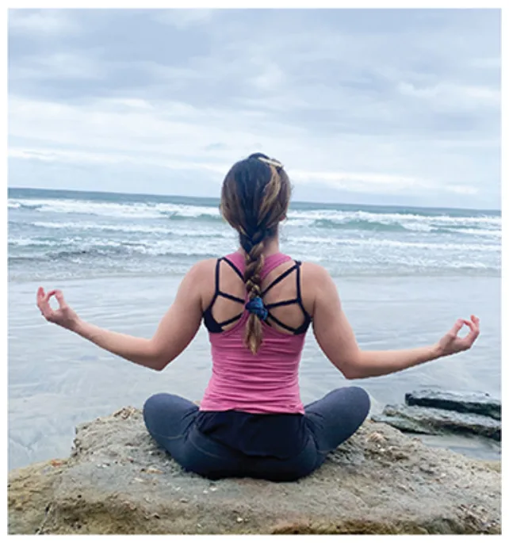
Hình 1.1 Thiền định bên bờ biển giúp thư giãn.
GIỚI THIỆU
Trong nhiều thế kỷ, những người thực hành yoga và thiền định đã ghi nhận cảm giác bình an, sảng khoái và định tâm (Hình 1.1). Các nhà khảo cổ học và sử học đã xác định niên đại của hoạt động thực hành thiền định sơ khai vào khoảng năm 1500 TCN (Freeman và cộng sự, 2019). Tuy nhiên, không ai biết chính xác nguồn gốc của các phương pháp thiền định. Chỉ gần đây, các nhà khoa học mới bắt đầu hiểu được cách thức mà những phương pháp thực hành chiêm nghiệm này tác động lên não bộ.
Não bộ con người có tính khả biến (malleable). Các nghiên cứu mới cho thấy việc thường xuyên thực hành yoga và thiền định có thể làm thay đổi não bộ theo vô số cách. Chẳng hạn, những vùng não liên quan đến sự đồng cảm có thể được kích hoạt và củng cố thông qua thực hành thiền từ bi (Lutz và cộng sự, 2008). Những bài tập này có thể thay đổi các đường dẫn truyền thần kinh, giúp người thực hành trở nên tử tế, giàu lòng trắc ẩn hơn cũng như sống lâu và khỏe mạnh hơn.
Chúng ta không cần đến kỹ thuật chẩn đoán hình ảnh não bộ mới hiểu rằng yoga và thiền định mang lại tác động tích cực cho sức khỏe. Các phương pháp thực hành này được ghi nhận rộng rãi là đem lại lợi ích cả về thể chất lẫn tinh thần, dẫn đến sự gia tăng nhanh chóng số lượng người tập tại thế giới phương Tây. Thực tế, hiện có hơn 32 triệu người đang tập yoga tại Hoa Kỳ, dù con số này chưa đại diện cho toàn bộ dân số nói chung (Zhang và cộng sự, 2021). Khảo sát Phỏng vấn Sức khỏe Quốc gia năm 2017—một trong những cuộc khảo sát sức khỏe lớn nhất và toàn diện nhất tại Hoa Kỳ—cho thấy phụ nữ có khả năng tập yoga cao gấp đôi nam giới, và yoga phổ biến nhất ở người trưởng thành da trắng không phải gốc Tây Ban Nha trong độ tuổi 18–44 (Clarke và cộng sự, 2018; CDC, 2018; NCCIH, 2020). Sự quan tâm ngày càng lớn đối với các phương pháp thực hành chiêm nghiệm cũng thúc đẩy sự tò mò trong giới nghiên cứu nhằm tìm hiểu cách chúng tác động đến tâm trí và cơ thể. Trong mười năm qua, lĩnh vực nghiên cứu yoga và thiền định đã bùng nổ. Số lượng công bố khoa học tăng theo cấp số nhân, từ hầu như không có gì vào năm 1950 lên đến hàng nghìn bản thảo liên quan đến các phương pháp này hiện nay. Tính chặt chẽ của các nghiên cứu khoa học cũng đang được cải thiện, giúp nâng cao tính chính danh cho lĩnh vực. Các nhà nghiên cứu từ những trường đại học và bệnh viện lớn hiện đang khám phá cách yoga và thiền định tác động đến sức khỏe, bao gồm cả những thay đổi trong não bộ.
ĐỊNH NGHĨA YOGA
Yoga bắt nguồn từ Ấn Độ như một phương pháp thực hành tâm linh. Một trong những văn bản yoga đầu tiên là Yoga Sutras (Kinh Yoga) của Patanjali, có niên đại từ những thế kỷ đầu Công nguyên (Schmalzl, Powers và Henje Blom, 2015). Từ “yoga” được dịch từ tiếng Phạn “yug” hoặc “yuj”, có nghĩa là “sự hợp nhất” hay “phương pháp hợp nhất tâm linh” (Van Aalst và cộng sự, 2020). Mục tiêu của thực hành truyền thống là đạt được trạng thái cân bằng giữa tâm trí và cơ thể, cũng như giữa cá nhân với lợi ích chung cao đẹp hơn.
Ngày nay, yoga thường được xem là một phương pháp thực hành vận động chánh niệm. Sự gia tăng số lượng người tập và mối quan tâm đã dẫn đến sự ra đời của vô số trường phái yoga ở phương Tây, bao gồm Vinyasa, Hatha, Iyengar, yoga phục hồi (restorative) và nhiều loại hình khác. Một số trường phái, như Power Yoga, nhấn mạnh vào các tư thế thể chất, trong khi số khác tập trung nhiều hơn vào thiền định và kỹ thuật hít thở. Yoga ở phương Tây thường được nhìn nhận như một bài tập thể chất, trong khi yoga phương Đông có xu hướng chú trọng hơi thở và các phương pháp thiền định (Schmalzl, Powers và Henje Blom, 2015).
Phạm vi rộng lớn của các hình thức thực hành được gọi chung là yoga có thể khiến việc xác định chính xác đối tượng đang được khảo sát trong một nghiên cứu trở nên khó khăn. Loại hình yoga hoặc thiền định được sử dụng trong các nghiên cứu thường không rõ ràng hoặc không được nêu cụ thể, làm lu mờ các kết luận về từng trường phái yoga khác nhau. Thay vào đó, các kết luận thường dựa trên thuật ngữ bao trùm “yoga” hoặc “thiền định”, và các nghiên cứu tìm cách hiểu xem những thực hành chung này giúp giảm căng thẳng, cải thiện sức khỏe và tăng khả năng tự điều chỉnh như thế nào.
Gần đây, các nhà khoa học nhận ra sự cần thiết của một định nghĩa rõ ràng hơn về yoga để sử dụng trong nghiên cứu, và Viện Y tế Quốc gia Hoa Kỳ (NIH) đã tài trợ xây dựng một bảng câu hỏi phục vụ cho các nghiên cứu về sau. Bảng câu hỏi Các Đặc tính Thiết yếu của Yoga (Essential Properties of Yoga Questionnaire), do các nhà khoa học tại Đại học California, San Diego phát triển, bao gồm 62 câu hỏi về 14 khía cạnh của một lớp học yoga, gồm các thành phần như lòng trắc ẩn, luyện thở, nhận thức cơ thể, triết lý yoga và nhiều yếu tố khác (Park và cộng sự, 2018). Giờ đây, các nhà khoa học có thể sử dụng bảng câu hỏi này để định lượng chính xác hơn loại hình can thiệp yoga mà họ áp dụng trong nghiên cứu của mình (Hình 1.2).
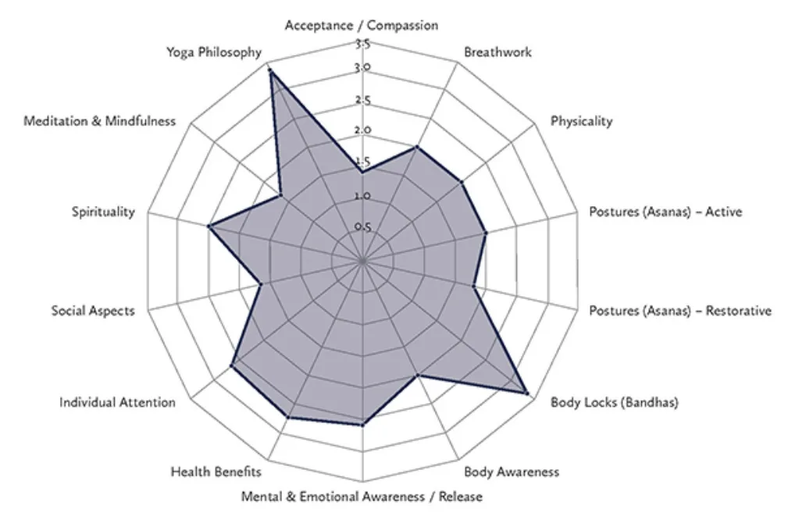
Hình 1.2 Bảng câu hỏi Các Đặc tính Thiết yếu của Yoga: sơ đồ minh họa 14 khía cạnh.
Nguồn: Hình ảnh do Erik Groessl từ Đại học California, San Diego cung cấp. Trích từ:
https://epyqview.ucsd.edu
NHỮNG THÁCH THỨC TRONG NGHIÊN CỨU YOGA VÀ THIỀN ĐỊNH
Nhiều nghiên cứu về yoga và thiền định gặp phải hạn chế về cỡ mẫu nhỏ (thường dưới 20 người) và nhóm người tham gia đồng nhất (thường là phụ nữ trung niên da trắng), nên khó có thể khẳng định liệu kết quả có đúng với tất cả mọi người hay không. Nhiều nghiên cứu cũng được thực hiện bằng bảng câu hỏi tự báo cáo—một phương pháp dễ bị ảnh hưởng bởi thiên kiến. Bất chấp những hạn chế này, nghiên cứu yoga và thiền định đang mở ra rất nhiều triển vọng nhờ sự tiến bộ của công nghệ chẩn đoán hình ảnh thần kinh và các công cụ phân tử. Khi lĩnh vực này phát triển, tính chặt chẽ của nghiên cứu cũng sẽ được nâng cao.
Bằng chứng khoa học là gì? Bằng chứng khoa học được rút ra từ một nghiên cứu được kiểm soát chặt chẽ, qua đó dùng thống kê để ủng hộ hoặc bác bỏ một giả thuyết hay lý thuyết.
Biến số là gì? Biến số là bất kỳ yếu tố nào mà nhà khoa học thay đổi hoặc đo lường theo một cách nào đó. Trong nghiên cứu yoga và thiền định, có thể đo lường nhiều biến số khác nhau, chẳng hạn như loại hình hoặc tần suất tập yoga, hormone căng thẳng và các chỉ số sức khỏe tâm thần.
CÁC PHƯƠNG PHÁP NGHIÊN CỨU VÀ THIẾT KẾ NGHIÊN CỨU PHỔ BIẾN
Không phải mọi nghiên cứu khoa học đều có giá trị ngang nhau. Có nhiều loại bằng chứng khoa học khác nhau có thể được trình bày dưới dạng nghiên cứu. Ví dụ, một nhà khoa học có thể viết một bài quan điểm hoặc bài xã luận trên tạp chí khoa học, hoặc một nhóm nghiên cứu có thể tiến hành một thử nghiệm đối chứng ngẫu nhiên. Sự khác biệt chính giữa các cách tiếp cận này là gì, và tại sao chúng lại quan trọng?
Các bài quan điểm và xã luận dựa trên ý kiến cá nhân thay vì dữ liệu từ một nghiên cứu cụ thể. Mặc dù về mặt kỹ thuật chúng không được coi là bằng chứng khoa học, nhưng chúng có thể hữu ích trong việc truyền cảm hứng cho các nghiên cứu được thiết kế tốt hơn trong tương lai.
Nghiên cứu ca bệnh (case study) hiếm khi được dùng trong nghiên cứu yoga nhưng lại phổ biến trong nghiên cứu y khoa. Nghiên cứu ca bệnh là phân tích chuyên sâu về một cá nhân, một nhóm hoặc một tình huống đơn lẻ. Nó có thể cung cấp bằng chứng về một trong ba đối tượng cụ thể đó, nhưng cỡ mẫu rất nhỏ (thường chỉ một người), và không thể suy rộng liệu kết quả có đúng cho những người, nhóm hoặc tình huống khác hay không. Kết quả mang tính hồi cứu chứ không có giá trị dự báo.
Nghiên cứu thuần tập (cohort study) rất phổ biến trong nghiên cứu yoga và thiền định. Nhà nghiên cứu theo dõi một nhóm người tham gia theo chiều dọc qua thời gian, thường là trước và sau một can thiệp. Chẳng hạn, nhà khoa học có thể kiểm tra nồng độ hormone của người tham gia trước và sau khi tập yoga để hiểu rõ hơn tác động của yoga lên nồng độ hormone. Nghiên cứu thuần tập cũng có thể kéo dài trong thời gian rất lâu. Nghiên cứu Framingham điều tra các yếu tố nguy cơ bệnh tim là một trong những nghiên cứu thuần tập liên tục lớn nhất và dài nhất từng được thực hiện, bắt đầu từ năm 1948.
Thử nghiệm đối chứng ngẫu nhiên (randomized control trial) là tiêu chuẩn vàng trong nghiên cứu. Người tham gia trong thử nghiệm đối chứng ngẫu nhiên được phân ngẫu nhiên vào nhóm thực nghiệm (nhóm nhận can thiệp, tức là tập yoga hoặc thiền định) hoặc nhóm đối chứng. Sau đó, các nhóm này được so sánh với nhau. Thử nghiệm đối chứng ngẫu nhiên phổ biến trong nghiên cứu y khoa và thường được tiến hành dưới dạng nghiên cứu mù đôi, trong đó cả nhà nghiên cứu lẫn người tham gia đều không biết họ đang nhận thuốc thật hay giả dược. Nghiên cứu mù đơn hoặc mù đôi gần như bất khả thi trong nghiên cứu yoga vì người tham gia có thể dễ dàng đoán được mình đang ở nhóm thực nghiệm (tập yoga) hay nhóm đối chứng (không tập yoga). Do đó, vẫn có khoảng trống cho thiên kiến, và cần cân nhắc yếu tố thiên kiến này khi xem xét kết quả.
Bài tổng quan (review) tổng hợp bằng chứng từ nhiều nghiên cứu khác nhau. Một bài tổng quan hệ thống trả lời một câu hỏi nghiên cứu xác định bằng cách sử dụng các tiêu chí lựa chọn rõ ràng và định sẵn để đưa vào những nghiên cứu nhất định. Các bài tổng quan thường bao gồm phân tích gộp (meta-analysis), sử dụng thống kê để tóm tắt kết quả của các nghiên cứu. Nhà khoa học thực hiện bài tổng quan không trực tiếp tiến hành thí nghiệm vật lý, mà phân tích các nghiên cứu trước đó để trả lời câu hỏi nghiên cứu. Phương pháp này là công cụ mạnh mẽ giúp nhìn nhận bức tranh toàn cảnh vì nó xem xét lượng dữ liệu lớn hơn nhiều so với một nghiên cứu đơn lẻ (Ahn và Kang, 2018).
Tôi nên đọc loại bài báo nào trước? Nếu bạn mới tiếp cận lĩnh vực này, một bài tổng quan là điểm khởi đầu tuyệt vời. Điều đó giống như chọn xem một bộ phim về các loài động vật châu Phi, thay vì một bộ phim tài liệu chỉ tập trung vào hươu cao cổ. Tất nhiên, nếu bạn thực sự mê hươu cao cổ thì cứ việc xem! Nhưng nếu không, việc nắm bắt một số thông tin nền trước khi đi sâu vào chi tiết sẽ rất hữu ích.
Hình 1.3 Một chú hươu cao cổ tại Coron, Palawan, Philippines.
Nguồn: Jeremiah Del Mar trên Unsplash.
PHƯƠNG PHÁP ĐỊNH LƯỢNG VÀ ĐỊNH TÍNH
Cả phương pháp định lượng và định tính đều có thể được sử dụng để khảo sát cách yoga và thiền định tác động lên cơ thể và tâm trí. Trong khi dữ liệu định lượng dựa trên con số, dữ liệu định tính lại mang tính mô tả và khái niệm.
Dữ liệu định lượng đề cập đến thông tin có thể đếm hoặc đo lường được. Trong nghiên cứu yoga, các nhà khoa học có thể đo xem huyết áp của một người thay đổi bao nhiêu sau can thiệp yoga. Sự thay đổi huyết áp là một con số có thể dễ dàng phân tích và so sánh. Phần lớn dữ liệu thu thập được trong lĩnh vực khoa học sinh học là dữ liệu định lượng.
Dữ liệu định tính mang tính mô tả về bản chất và được thể hiện bằng ngôn ngữ thay vì con số. Một số nhà khoa học sử dụng dữ liệu định tính để khảo sát những điều khó định lượng, chẳng hạn như câu hỏi “tại sao” hoặc “như thế nào”. Ví dụ, nhà nghiên cứu có thể dùng phỏng vấn sâu để hỏi xem can thiệp yoga đã khiến người tham gia cảm thấy gắn kết hơn với cộng đồng như thế nào.
Vậy ưu và nhược điểm của từng chiến lược là gì? Dữ liệu định lượng có thể được phân tích và lặp lại bởi một nhóm nhà khoa học khác để xem họ có thu được kết quả tương tự hay không. Nếu nhiều nghiên cứu tìm thấy kết quả giống nhau, điều đó củng cố bằng chứng rằng kết quả là chính xác. Tuy nhiên, dữ liệu định lượng không phải lúc nào cũng kể trọn vẹn câu chuyện; con số và phép đo khó có thể nắm bắt những thứ như cảm giác và cảm xúc. Các mối quan hệ rộng lớn hơn có thể bị bỏ sót hoặc xem nhẹ.
Mặt khác, dữ liệu định tính mang lại những hiểu biết phong phú, mang tính mô tả về các mối quan hệ và rất hữu ích cho mục đích thăm dò. Bởi vì các quan sát định tính đòi hỏi sự diễn giải, chúng có thể khó phân tích mà không vướng thiên kiến. Dữ liệu định lượng thường được ưa chuộng hơn trong nghiên cứu khoa học thần kinh vì tính cấu trúc và cụ thể của nó, dù một số nhà khoa học tin rằng những nghiên cứu được thiết kế tốt nhất sẽ kết hợp cả hai loại dữ liệu này.
TẦM QUAN TRỌNG CỦA CỠ MẪU
Cỡ mẫu là số lượng đối tượng được chọn cho một thí nghiệm. Đây là một trong những yếu tố quan trọng nhất khi thiết kế nghiên cứu vì nó có thể ảnh hưởng trực tiếp đến kết quả. Cỡ mẫu nhỏ có thể làm giảm tính hợp lệ của nghiên cứu vì kết quả thường không thể khái quát hóa sang nhóm hoặc quần thể khác. Ngược lại, cỡ mẫu quá lớn có thể biến những khác biệt nhỏ thành sự khác biệt có ý nghĩa thống kê và khuếch đại thiên kiến của nghiên cứu (Faber và Fonseca, 2014; Kaplan, Chambers và Glasgow, 2014). Do đó, cỡ mẫu của một nghiên cứu cần được coi trọng như bất kỳ biến số nào khác.
Tính hợp lệ (validity) là gì? Tính hợp lệ bên ngoài (external validity) là khả năng khái quát hóa kết quả từ một nghiên cứu ra một quần thể rộng lớn hơn bên ngoài nghiên cứu đó. Chẳng hạn, nếu một nhà nghiên cứu phát hiện việc tập Yin yoga ba lần một tuần giúp giảm nồng độ cortisol, thì một nhà khoa học khác phải có khả năng lặp lại nghiên cứu này với một nhóm người khác và thu được kết quả tương tự. Điều đó có nghĩa là nghiên cứu có tính hợp lệ bên ngoài cao.
Tính hợp lệ bên trong (internal validity) là khi kết quả từ một nhóm trong nghiên cứu có thể khái quát hóa sang một nhóm khác trong cùng nghiên cứu đó. Nó chứng minh rằng các phương pháp có thể tạo ra kết quả giống nhau một cách đáng tin cậy, và kết quả không phải do các yếu tố khác gây ra. Một nghiên cứu được thiết kế tốt sẽ có tính hợp lệ bên trong cao vì các phát hiện nhất quán giữa các nhóm.
Các nghiên cứu về yoga và thiền định thường mắc phải hạn chế cỡ mẫu nhỏ và đồng nhất. Thông thường, mẫu dao động từ khoảng 12 đến 25 người tham gia, được xem là nhỏ đối với nghiên cứu trên đối tượng con người. Gần như không thể rút ra những kết quả có ý nghĩa với quá ít đối tượng như vậy. Giả sử các nhà khoa học phát hiện 15 phụ nữ trung niên có mức độ căng thẳng thấp hơn sau khi trồng chuối (headstand) trong hai phút – liệu kết quả tương tự có đúng với nam giới lớn tuổi không? Cần tiến hành một nghiên cứu lớn hơn với quần thể đa dạng hơn để tìm câu trả lời. Nếu 100 cá nhân thuộc nhiều sắc tộc, độ tuổi và tình trạng sức khỏe khác nhau đều thấy rằng hai phút trồng chuối giúp cải thiện mức độ căng thẳng của họ, điều đó có thể đồng nghĩa với việc trồng chuối giúp giảm căng thẳng. Kết quả sẽ còn thuyết phục hơn nữa nếu được lặp lại trong một nghiên cứu bổ sung với số lượng người tham gia đông đảo hơn.
SỰ KHÁC BIỆT GIỮA QUAN HỆ NHÂN QUẢ VÀ TƯƠNG QUAN
“Quan hệ nhân quả” (causation) và “tương quan” (correlation) là những thuật ngữ phổ biến trong giới nghiên cứu, nhưng chúng thực sự có nghĩa là gì?
Quan hệ nhân quả xảy ra khi một biến số liên quan trực tiếp đến hoặc gây ra biến số thứ hai. Trong khoa học, quan hệ nhân quả cực kỳ khó chứng minh. Trong nghiên cứu yoga, các bài báo thường đưa ra những khẳng định như “giãn cơ gây ra tăng độ dẻo dai”. Nếu không có sự thấu hiểu về cơ chế của việc giãn cơ và độ dẻo dai, thực chất rất khó chứng minh yếu tố này trực tiếp gây ra yếu tố kia. Thay vào đó, giãn cơ và độ dẻo dai có mối liên hệ chặt chẽ hay tương quan với nhau. Nếu một nhà khoa học tin rằng giãn cơ dẫn đến tăng độ dẻo dai rồi phẫu tích chi để hiểu chính xác điều gì đã thay đổi bên trong nhằm tạo ra mối liên hệ chặt chẽ này, thì khi đó tính nhân quả mới có thể được chứng minh. Tiếc thay, chúng ta sẽ không mổ xẻ chân tay của những người tập yoga chỉ để chứng minh không chút nghi ngờ rằng giãn cơ gây tăng độ dẻo dai. Chúng ta đành dựa vào lẽ thường và hiểu biết cơ chế về giãn cơ và độ dẻo dai ở động vật để suy luận rằng tính nhân quả trong mối quan hệ này là rất có khả năng.
Ý nghĩa thống kê là gì? Ý nghĩa thống kê là thước đo độ tin cậy cho thấy hai biến số có liên hệ với nhau theo một cách nào đó và kết quả không phải do ngẫu nhiên.
Tương quan là thước đo mức độ liên hệ chặt chẽ giữa hai biến số, nhưng biến này không nhất thiết gây ra biến kia. Hầu hết mọi nghiên cứu về yoga và thiền định đều thể hiện mối tương quan chứ không phải quan hệ nhân quả. Hai biến số có thể tương quan với nhau, nhưng điều đó không có nghĩa là biến này gây ra biến kia. Đôi khi các biến số có thể tương quan rất cao nhưng hoàn toàn không có quan hệ nhân quả, hoặc chúng có thể cùng xuất phát từ một nguyên nhân chung.
Khi hai biến số tương quan cao nhưng không có quan hệ nhân quả, chúng được gọi là tương quan giả (spurious correlations). Ví dụ, số lượng chữ cái trong từ chiến thắng của cuộc thi Đánh vần Quốc gia Scripps tương quan với số người tử vong mỗi năm do nhện độc (Vigen, 2022). Rõ ràng, số chữ cái của từ chiến thắng không hề khiến mọi người chết vì nhện độc. Mối tương quan này chẳng qua chỉ là sự trùng hợp ngẫu nhiên (Hình 1.4).
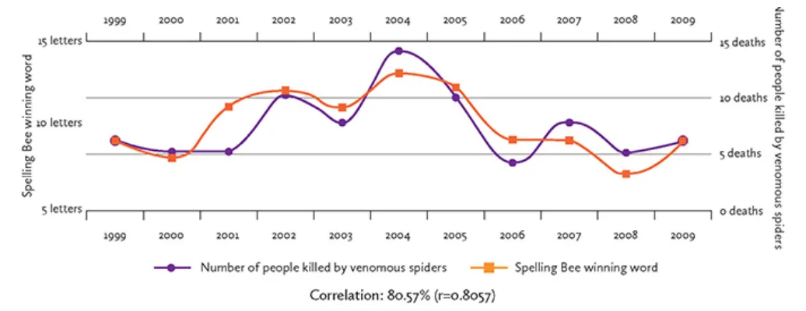
Hình 1.4 Ví dụ về một tương quan giả.
Nguồn: Hình ảnh do Tyler Vigen cung cấp, CC BY 4.0. Trích từ: http://www.tylervigen.com/spurious correlations
CÁCH MỔ XẺ MỘT NGHIÊN CỨU KHOA HỌC
Có nhiều cách để tiếp cận một nghiên cứu khoa học. Đa số các nhà khoa học được khảo sát trên Twitter thích bắt đầu từ phần kết quả, có lẽ vì họ đã nắm vững chủ đề và muốn đi thẳng đến các phát hiện chính càng nhanh càng tốt. Đối với những độc giả chưa quen với một lĩnh vực nghiên cứu nào đó, cách dễ nhất có thể là bắt đầu từ phần giới thiệu để hiểu bối cảnh của vấn đề, rồi mới chuyển sang phần còn lại của nghiên cứu.
Giới thiệu (Introduction): Phần giới thiệu là nơi các nhà nghiên cứu điểm lại các phát hiện trước đây, chỉ ra những gì còn thiếu sót trong lĩnh vực và nêu rõ nghiên cứu của họ lấp đầy khoảng trống quan trọng đó như thế nào. Một người ít kiến thức về chủ đề có thể đọc phần giới thiệu để nắm được ý tưởng cơ bản về nội dung nghiên cứu. Phương pháp (Methods): Trong phần này, các nhà nghiên cứu mô tả những thí nghiệm được dùng để trả lời câu hỏi nghiên cứu và giải thích cách phân tích kết quả. Phần phương pháp bao gồm thông tin về các yếu tố như: 1) có bao nhiêu người tham gia nghiên cứu, 2) đặc điểm nhân khẩu học của những người này, 3) thông tin về nhóm đối chứng hoặc điều kiện so sánh, và 4) tỷ lệ bỏ cuộc (tức là có ai bỏ ngang giữa chừng không). Kết quả (Results): Đúng như tên gọi, phần kết quả trình bày các phát hiện chính của bài báo đã công bố. Nó thường chứa nhiều dữ liệu và con số mà không diễn giải quá sâu. Thảo luận (Discussion): Tại đây, các nhà nghiên cứu khám phá ý nghĩa của kết quả cũng như hàm ý từ công trình của họ. Các tác giả thường giải thích cách nghiên cứu của mình khớp với bối cảnh lớn hơn của tài liệu khoa học và chỉ ra cơ hội cho các nghiên cứu trong tương lai.
CÁC YẾU TỐ KHÁC CẦN CÂN NHẮC
Có nhiều lợi ích được ghi nhận thêm khi thực hành yoga và thiền định nhưng thường không được tính đến trong các nghiên cứu khoa học. Chẳng hạn, các phương pháp thực hành chiêm nghiệm thường giúp cá nhân gặp gỡ một cộng đồng những người cùng chí hướng. Điều này có thể dẫn đến những thay đổi về lối sống, như tập thể dục nhiều hơn và ăn uống lành mạnh hơn, từ đó gia tăng lợi ích của yoga và thiền định, tạo nên một vòng phản hồi tích cực.
Ngoài ra còn có khả năng xuất hiện thiên kiến từ người tham gia. Nhiều người sẵn sàng tham gia một nghiên cứu về yoga hoặc thiền định có thể vốn đã có xu hướng sống lành mạnh. Do đó, tình trạng sức khỏe nền của họ có thể khác với một người mới tập yoga hoặc thiền định lần đầu.
Những biến số này thường bị bỏ qua trong các nghiên cứu vì chúng khó đo lường. Các nhà khoa học có xu hướng tập trung vào tác động tức thời và trực tiếp của yoga hoặc thiền định lên sức khỏe tinh thần và thể chất. Vì vậy, những kết luận được rút ra mới chỉ là bức tranh chưa hoàn chỉnh về toàn bộ tác động của các phương pháp thực hành chiêm nghiệm đối với sức khỏe.
Nhiều nghiên cứu được thảo luận trong cuốn sách này đều được thiết kế tốt, nhưng những yếu tố nêu trên là điều mà bạn, với tư cách độc giả, nên cân nhắc khi tìm hiểu bối cảnh rộng lớn hơn của các nghiên cứu này.
Điểm cốt lõi cần nhớ
Trong nghiên cứu, yoga thường được định nghĩa là một phương pháp thực hành vận động chánh niệm. Có nhiều loại bằng chứng khoa học khác nhau có thể được trình bày dưới dạng nghiên cứu, bao gồm nghiên cứu thuần tập, thử nghiệm đối chứng ngẫu nhiên, bài tổng quan và nhiều loại hình khác. Dữ liệu định lượng đề cập đến thông tin có thể đếm hoặc đo lường, trong khi dữ liệu định tính mang tính mô tả về bản chất và được thể hiện bằng ngôn ngữ. Hầu hết mọi nghiên cứu về yoga và thiền định đều thể hiện mối tương quan, không phải quan hệ nhân quả. Nghiên cứu về yoga và thiền định chắc chắn sẽ trở nên chặt chẽ hơn khi lĩnh vực này ngày càng phát triển.
TÀI LIỆU THAM KHẢO
Ahn, E.J., & Kang, H., 2018. Introduction to systematic review and meta-analysis. Korean Journal of
Anesthesiology, 71(2), pp.103–112. Centers for Disease Control and Prevention (CDC), 2018. Use of yoga and meditation becoming more popular in U.S. Available at: https://www.cdc.gov/nchs/pressroom/nchs_press_releases/2018/201811_Yoga_Meditation.htm Clarke, T.C., Barnes, P.M., Black, L.I., Stussman, B.J., & Nahin, R.L., 2018. Use of yoga, meditation, and chiropractors among U.S. adults aged 18 and over. NCHS Data Brief, no. 325. Hyattsville, MD: National Center for Health Statistics. Available at: https://www.cdc.gov/nchs/data/databriefs/db325-h.pdf Faber, J., & Fonseca, L.M., 2014. How sample size influences research outcomes. Dental Press
Journal of Orthodontics, 19(4), pp.27–29. Freeman Jr., R.C., Sukuan, N., Tota, N.M., Bell, S.M., Harris, A.G., & Wang, H.L., 2019. Promoting spiritual healing by stress reduction through meditation for employees at a Veterans Hospital: a CDC framework-based program evaluation. Workplace Health & Safety, 68(4), pp.161–170. Kaplan, R.M., Chambers, D.A., & Glasgow, R.E., 2014. Big Data and large sample size: a cautionary note on the potential for bias. Clinical and Translational Science, 7(4), pp.342–346. Lutz, A., Brefczynski-Lewis, J., Johnstone, T., & Davidson, R. J., 2008. Regulation of the neural circuitry of emotion by compassion meditation: effects of meditative expertise. PLoS ONE, 3(3), e1897. National Center for Complementary and Integrative Health (NCCIH), 2020. Yoga for Health.
Available at: https://files.nccih.nih.gov/s3fs-public/Yoga-eBook-2020_06_FINAL_508.pdf Park, C.L., Elwy, A.R., Maiya, M., Sarkin, A.J., et al., 2018. The Essential Properties of Yoga
Questionnaire (EPYQ): psychometric properties. International Journal of Yoga Therapy, 28(1), pp.23–38.
Schmalzl, L.,Powers, C., & Henje Blom, E., 2015. Neurophysiological and neurocognitive mechanisms underlying the effects of yoga-based practices: towards a comprehensive theoretical framework. Frontiers in Human Neuroscience, 9, p.235. van Aalst, J., Ceccarini, J., Demyttenaere, K., Sunaert, S., & Van Laere, K., 2020. What has neuroimaging taught us on the neurobiology of yoga? A review. Frontiers in Integrative Neuroscience, 14, p.34. Vigen, T., 2022. Spurious Correlations. Available at: http://www.tylervigen.com/spurious correlations Zhang, Y., Lauche, R., Cramer, H., Munk, N., & Dennis, J.A., 2021. Increasing trend of yoga practice among U.S. adults from 2002 to 2017. Journal of Alternative Complementary Medicine, 27(9), pp. 778–785.
Chương 2 — Hệ thần kinh
CHƯƠNG 2
Hệ Thần Kinh
Yoga và thiền định tác động đến hệ thần kinh, mạng lưới phức tạp gồm các tế bào thần kinh (neuron) và dây thần kinh kết nối mọi cơ quan và mô trong cơ thể. Chương này sẽ đi sâu vào những kiến thức cơ bản về hệ thần kinh để khám phá cách các phương pháp thực hành này có thể ảnh hưởng đến hệ thần kinh giao cảm và hệ thần kinh phó giao cảm thông qua hơi thở, chuyển động và giảm căng thẳng. Chương cũng sẽ đề cập đến cấu trúc giải phẫu cơ bản của tế bào não và các phân tử mà chúng sử dụng để giao tiếp, được gọi là chất dẫn truyền thần kinh.
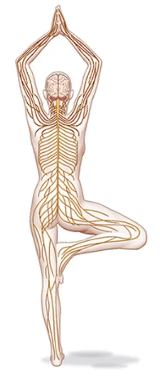
Hình 2.1 Hệ thần kinh với não bộ, tủy sống và các dây thần kinh.
GIỚI THIỆU
Hệ thần kinh (Hình 2.1) có hai nhánh chính: hệ thần kinh trung ương (CNS) và hệ thần kinh ngoại biên (PNS). CNS bao gồm não bộ và tủy sống, trong khi PNS gồm các tế bào thần kinh và dây thần kinh trải dài khắp cơ thể (Hình 2.2).

Hình 2.2 Tổ chức của hệ thần kinh.
PNS có thể được chia nhỏ hơn nữa thành hai phân hệ chính: hệ thần kinh thân thể (somatic) và hệ thần kinh tự chủ. Hệ thần kinh thân thể truyền tải thông tin về các chuyển động có ý thức, trong khi hệ thần kinh tự chủ truyền đạt thông tin về các phản ứng tự động hoặc không tự chủ. Hệ thần kinh tự chủ là chế độ lái tự động của cơ thể và có thể hoạt động mà không cần suy nghĩ có ý thức. Một số chức năng bao gồm điều hòa nhịp thở, nhịp tim và tiêu hóa (Hình 2.3).

Hình 2.3 Sự khác biệt giữa hệ thần kinh phó giao cảm và hệ thần kinh giao cảm.
Mỗi hệ thần kinh hoạt động theo những cách khác nhau để điều hòa cơ thể.
Nghiên cứu về yoga và thiền định thường tập trung vào hệ thần kinh tự chủ, bao gồm hệ thần kinh giao cảm, phó giao cảm và hệ thần kinh ruột. Hệ thần kinh giao cảm được kích hoạt trong những giai đoạn căng thẳng cũng như khi hoạt động gắng sức. Hệ này thường được cho là kiểm soát phản ứng chiến đấu, bỏ chạy hoặc đóng băng khi đối mặt với nguy hiểm. Chẳng hạn, khi chạm trán một con sư tử, phản ứng tự nhiên có thể là chiến đấu với con sư tử, bỏ chạy khỏi nó, hoặc đứng im để không thu hút sự chú ý. Yoga, thiền định và các kỹ thuật thư giãn khác đã được chứng minh là làm giảm hoạt động của hệ thần kinh giao cảm, giúp cải thiện khả năng ra quyết định khi đối mặt với các tác nhân gây căng thẳng tức thời (Vempati and Telles, 2002; Starcke and Brand, 2012).
Ngược lại, hệ thần kinh phó giao cảm kiểm soát phản ứng thư giãn. Hệ này giúp cơ thể bình tĩnh lại, thư giãn cơ bắp và tiêu hóa thức ăn. Hệ cũng trở nên tích cực hơn trong các giai đoạn vận động nhẹ nhàng, tập thở và thiền định (Anasuya, Deepak and Jaryal, 2021). Hệ thần kinh giao cảm và hệ thần kinh phó giao cảm phối hợp với nhau để duy trì sự cân bằng, hay cân bằng nội môi, trong cơ thể.
Yoga phục hồi (Restorative yoga) là một công cụ dễ tiếp cận giúp kích hoạt hệ thần kinh phó giao cảm và điều hòa giảm hệ thần kinh giao cảm (Hình 2.4). Phương pháp này có thể giảm căng thẳng và làm chậm nhịp tim đồng thời cải thiện trạng thái cảm xúc, quá trình trao đổi chất và tình trạng mệt mỏi (Danhauer et al., 2009; Kanaya et al., 2014; Leong, 2019). Kỹ thuật này được xây dựng dựa trên giáo lý của B.K.S. Iyengar và được Judith Lasater, một học trò của Iyengar, phổ biến vào những năm 1970 (Leong, 2019). Yoga phục hồi bao gồm việc giữ các tư thế yoga thoải mái trong thời gian dài hơn với sự hỗ trợ của các dụng cụ, chẳng hạn như gạch tập, gối ôm và chăn. Sự tập trung được đặt vào hơi thở hoặc âm nhạc để thúc đẩy trạng thái thư giãn sâu. Phương pháp thực hành chậm rãi, có hỗ trợ này rất lý tưởng cho những người đang trải qua căng thẳng và mong muốn phục hồi cũng như chữa lành cơ thể.

Hình 2.4 Tư thế góc cố định nằm ngửa sử dụng một gối ôm và hai gạch tập.
VÍ DỤ VỀ LỚP YOGA PHỤC HỒI ĐỂ THÚC ĐẨY THƯ GIÃN
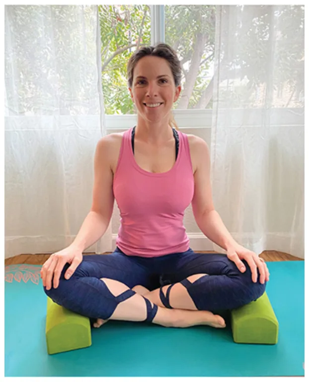
Hình 2.5 Tư thế dễ dàng có hỗ trợ với hai gạch tập.
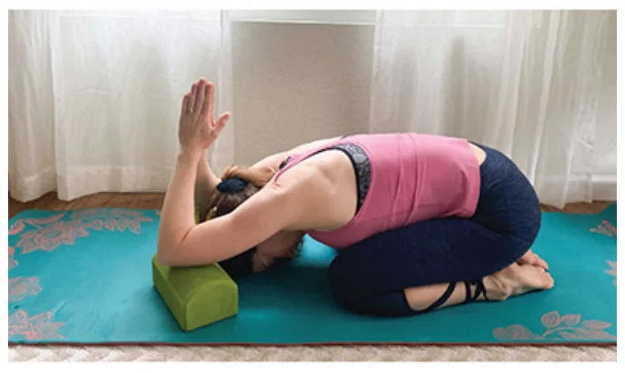
Hình 2.6 Biến thể tư thế em bé với hai gạch tập.

Hình 2.7 Tư thế con cá có hỗ trợ với hai gạch tập.
Hình 2.8 Biến thể tư thế cây cầu có hỗ trợ.
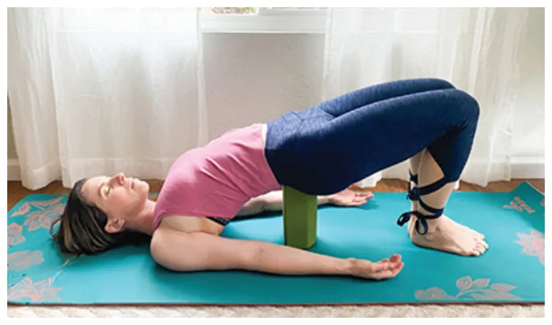
Hình 2.9 Biến thể tư thế cây cầu có hỗ trợ.

Hình 2.10 Tư thế vặn mình có hỗ trợ bằng gối ôm.
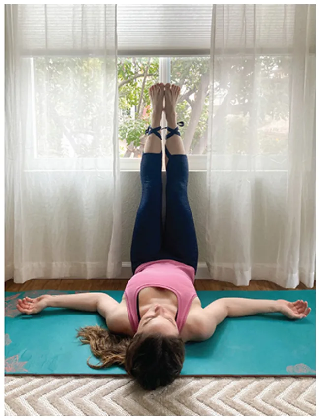
Hình 2.11 Tư thế gác chân lên tường.

Hình 2.12 Biến thể tư thế gác chân lên tường.
Dây thần kinh phế vị Dây thần kinh phế vị, còn gọi là dây thần kinh sọ số 10 (CN X), là dây thần kinh chính của hệ thần kinh phó giao cảm. Nó kéo dài từ thân não đến đại tràng (còn gọi là ruột già) và giúp điều khiển tim, phổi và đường tiêu hóa. Đây được xem là cầu nối quan trọng giữa ruột và não.
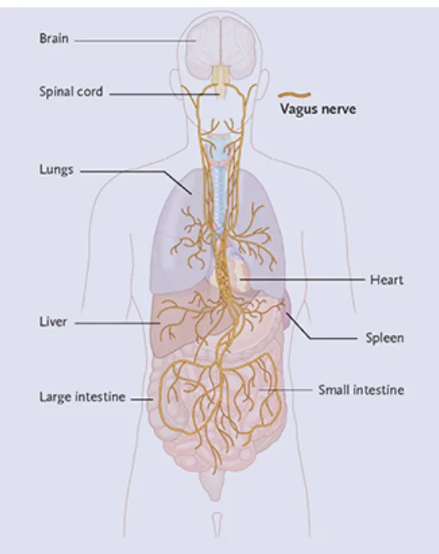
Hình 2.13 Giải phẫu dây thần kinh phế vị.
Các phương pháp thực hành chiêm nghiệm kích thích dây thần kinh phế vị, thúc đẩy sự thư giãn thông qua việc tăng cường hoạt động của hệ thần kinh phó giao cảm. Hệ thần kinh phó giao cảm làm chậm phản ứng căng thẳng để giúp giảm viêm và các hormone gây căng thẳng trong cơ thể (Streeter et al., 2012; McCall, 2013).
Kích thích dây thần kinh phế vị cũng có thể được thực hiện tại phòng khám bằng một thiết bị tạo xung điện. Phương pháp kích thích dây thần kinh phế vị hiện đã được Cục Quản lý Thực phẩm và Dược phẩm Hoa Kỳ (FDA) phê duyệt để điều trị bệnh động kinh và trầm cảm. Phương pháp này cũng đang được nghiên cứu để điều trị các tình trạng khác, bao gồm chấn thương sọ não, viêm khớp dạng thấp và đột quỵ, nhờ tác dụng chống viêm của nó (Johnson and Wilson, 2018).
Sự thật thú vị
Đường ruột sản xuất gần 95% lượng serotonin được tạo ra trong cơ thể (Kim and Camilleri, 2000). Serotonin là một chất dẫn truyền thần kinh hay phân tử tín hiệu giúp điều hòa tâm trạng, giấc ngủ và sự thèm ăn. Năm phần trăm còn lại được sản xuất tại một vùng nhỏ của thân não gọi là nhân đường giữa (raphe nuclei) (Berger, Gray and Roth, 2009).

Hình 2.14 Phân tử serotonin.
Phân hệ thần kinh tự chủ thứ ba là hệ thần kinh ruột. Hệ này giám sát hầu hết các chức năng tiêu hóa, chẳng hạn như nhu động của đường tiêu hóa, đồng thời điều hòa việc tiết dịch tiêu hóa và hormone. Nó cũng kích thích hệ miễn dịch (Fleming et al., 2020). Hệ thần kinh ruột có thể gửi và nhận tín hiệu từ CNS cũng như hoạt động độc lập. Người ta ước tính rằng hệ thần kinh ruột chứa từ 400 đến 600 triệu tế bào thần kinh và sản xuất phần lớn serotonin của cơ thể, một chất dẫn truyền thần kinh ảnh hưởng đến hoạt động của não và có liên quan đến tâm trạng (Fleming et al., 2020). Do đó, hệ thần kinh ruột còn được gọi là “bộ não thứ hai”.
Nghiên cứu về hệ thần kinh ruột đã chỉ ra rằng hệ vi sinh vật đường ruột bị biến đổi có thể ảnh hưởng đến sức khỏe tâm thần và có liên quan đến các bệnh thoái hóa thần kinh, chẳng hạn như Alzheimer và Parkinson (Rao and Gershon, 2016; Rieder et al., 2017; Fleming et al., 2020). Ngược lại, các phương pháp thực hành chiêm nghiệm như yoga và thiền định đã được chứng minh là cải thiện hệ vi sinh vật đường ruột và các triệu chứng của những rối loạn liên quan đến đường ruột, chẳng hạn như hội chứng ruột kích thích (Tavassoli, 2009; Asare, Störsrud and Simrén, 2012; Jia et al., 2020). Hội chứng ruột kích thích có liên quan đến căng thẳng và tình trạng viêm, và những phương pháp thực hành này có thể làm giảm các yếu tố đó để tác động tích cực và chữa lành đường ruột.
Những điểm chính cần nhớ
Hệ thần kinh gồm hai hệ chính: hệ thần kinh trung ương và hệ thần kinh ngoại biên. Hệ thần kinh giao cảm và hệ thần kinh phó giao cảm phối hợp với nhau để duy trì sự cân bằng trong cơ thể. Các phương pháp thực hành thư giãn có thể làm giảm hoạt động giao cảm và tăng hoạt động phó giao cảm. Cả yoga và thiền định đều thúc đẩy sức khỏe đường ruột bằng cách giảm căng thẳng và viêm, từ đó cải thiện hệ vi sinh vật đường ruột.
GIỚI THIỆU VỀ NÃO BỘ
Cơ quan chỉ huy của hệ thần kinh trung ương là não bộ. Nó tạo ra tư duy có ý thức, chuyển động và cảm xúc. Mặc dù đóng vai trò quan trọng, bộ não người chỉ nặng khoảng ba pound (khoảng 1,36 kg). Trọng lượng đó tương đương với một túi khoai tây nhỏ. Mô não được nén dày đặc chứa khoảng 86 tỷ tế bào não chuyên biệt gọi là tế bào thần kinh (neuron), và có thêm 85 tỷ tế bào hỗ trợ phi thần kinh gọi là tế bào thần kinh đệm (glia) (HerculanoHouzel, 2012).
Mỗi tế bào trong số 86 tỷ tế bào thần kinh đó có hàng nghìn kết nối với các tế bào khác (Hawkins and Ahmad, 2016). Những kết nối này được gọi là khớp thần kinh (synapse) và chúng cho phép một tế bào thần kinh gửi tín hiệu đến tế bào khác, thường thông qua một đợt giải phóng các chất hóa học gọi là chất dẫn truyền thần kinh. Cùng nhau, các tế bào thần kinh tạo thành hơn 100 nghìn tỷ kết nối khắp não bộ (Parhi and Unnikrishnan, 2020).
Tế bào thần kinh là một nhóm tế bào đặc biệt truyền tải thông tin khắp cơ thể và não bộ. Giống như các tế bào khác, tế bào thần kinh có một thân tế bào (gọi là soma) với nhân bên trong được bao bọc bởi màng tế bào. Gần soma, tế bào thần kinh có các phần nhô ra gọi là nhánh gai (dendrite) phân nhánh và kết nối với các tế bào và tế bào thần kinh khác (Hình 2.15). Các nhánh gai này tiếp nhận tín hiệu hóa học từ hàng trăm hoặc thậm chí hàng nghìn tế bào khác.

Hình 2.15 Giải phẫu của một tế bào thần kinh.
Ở phía bên kia của thân tế bào là một sợi trục (axon) dài và mảnh. Sợi trục dẫn truyền các tín hiệu điện xuống các đầu tận cùng khớp thần kinh, nơi một tế bào thần kinh kết nối với các nhánh gai của tế bào thần kinh khác.
Các tế bào thần kinh giao tiếp với nhau như thế nào? Tế bào thần kinh kiểm soát việc truyền tín hiệu trong não bằng cách giao tiếp với nhau thông qua các chất dẫn truyền thần kinh. Chất dẫn truyền thần kinh có thể mang tính kích thích hoặc ức chế (xem mục Kiến thức cơ bản về chất dẫn truyền thần kinh), qua đó thúc đẩy hoặc ức chế điện thế hoạt động ở tế bào thần kinh tiếp nhận.
Mọi tế bào thần kinh trong não đều liên tục tiếp nhận tín hiệu. Khi các tín hiệu đầu vào mang tính kích thích lớn hơn các tín hiệu đầu vào mang tính ức chế, một điện thế hoạt động sẽ xảy ra. Điện thế hoạt động là một tín hiệu điện được truyền dọc theo sợi trục của tế bào thần kinh hướng tới một tế bào thần kinh khác. Khi điện thế hoạt động đến khoảng trống nhỏ giữa hai tế bào thần kinh, gọi là khe khớp thần kinh, nó làm cho các chất dẫn truyền thần kinh được giải phóng vào khe đó (Hình 2.16). Các chất dẫn truyền thần kinh gắn vào các vị trí thụ thể trên nhánh gai của tế bào thần kinh tiếp nhận. Sau đó, tế bào thần kinh thứ nhất thu hồi lại một phần chất dẫn truyền thần kinh của mình trong một quá trình gọi là tái hấp thu (reuptake) để quá trình truyền tín hiệu tế bào có thể diễn ra lần nữa.

Hình 2.16 Khớp thần kinh và sự giải phóng chất dẫn truyền thần kinh.
Kiến thức cơ bản về chất dẫn truyền thần kinh
Chất dẫn truyền thần kinh là các phân tử mang tín hiệu từ tế bào thần kinh này sang tế bào thần kinh khác. Người ta cho rằng có hơn 100 loại chất dẫn truyền thần kinh khác nhau (Si and Song, 2018). Một số chất dẫn truyền thần kinh phổ biến là acetylcholine, dopamine, norepinephrine, serotonin, gamma-aminobutyric acid (GABA) và glutamate.
Acetylcholine tham gia vào nhiều chức năng khác nhau, bao gồm co cơ, sự tỉnh táo, chú ý, trí nhớ, học tập và ghi nhớ lại. Dopamine là chất dẫn truyền thần kinh chính được sử dụng trong hệ thống phần thưởng của não bộ. Khi một người mong đợi một phần thưởng, chẳng hạn như giành được giải thưởng, mức độ dopamine trong não sẽ tăng lên. Thông qua các con đường não bộ này, nó cũng có liên quan đến chứng nghiện và lạm dụng chất gây nghiện. Dopamine cũng là một phân tử quan trọng cho vận động. Các con đường dopamine không hoạt động bình thường trong những bệnh lý như bệnh Parkinson (Segura-Aguilar et al., 2014). Norepinephrine được sử dụng trong não và cơ thể để chuẩn bị cho trạng thái kích thích trong quá trình tập luyện, căng thẳng và nguy hiểm. Nó làm co mạch máu để tăng huyết áp. Ngoài ra, nó có thể kích hoạt lo âu, có thể liên quan đến trầm cảm và đóng vai trò trong động lực và phần thưởng (Goddard et al., 2010; España, Schmeichel and Berridge, 2016). Serotonin giúp điều hòa tâm trạng, giấc ngủ và sự thèm ăn. Nó cũng được cho là có tác dụng ức chế cơn đau (Bardin, 2011). Mặc dù một phần chất dẫn truyền thần kinh này được tạo ra trong não, khoảng 95% lượng serotonin trong cơ thể được tạo ra ở đường ruột. Gamma-aminobutyric acid (GABA) là một chất dẫn truyền thần kinh ức chế và làm giảm mức độ giao tiếp giữa các tế bào thần kinh trong não. Nhìn chung, GABA làm giảm hoạt động của hệ thần kinh. Nó có khả năng bị rối loạn điều hòa trong các tình trạng như lo âu và trầm cảm (Kalueff and Nutt, 2007). Glutamate là chất dẫn truyền thần kinh kích thích chính trong não và có thể đóng vai trò trong rối loạn lưỡng cực và tâm thần phân liệt (Goff and Coyle, 2001). Các loại thuốc chứa lithium carbonate mang lại tác dụng ổn định tâm trạng và có thể ổn định nồng độ glutamate trong não.
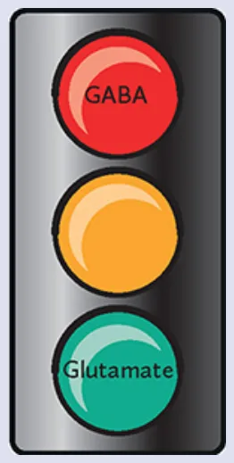
Hình 2.17 GABA và glutamate điều hòa điện thế hoạt động của các tế bào thần kinh.
Vì GABA là chất dẫn truyền thần kinh ức chế nên nó làm dừng các điện thế hoạt động. Glutamate là chất dẫn truyền thần kinh kích thích và có thể khởi phát một điện thế hoạt động hoặc duy trì điện thế hoạt động tiếp tục truyền đi.
Những điểm chính cần nhớ
Bộ não người nặng khoảng ba pound và chứa 86 tỷ tế bào thần kinh. Các tế bào thần kinh giao tiếp với nhau thông qua các sự kiện điện gọi là điện thế hoạt động, dẫn đến việc giải phóng các chất truyền tin hóa học gọi là chất dẫn truyền thần kinh. Chất dẫn truyền thần kinh cho phép các tế bào thần kinh giao tiếp với nhau.
Các tế bào khác trong não Ngoài tế bào thần kinh, còn có nhiều loại tế bào khác trong não. Thực tế, gần một nửa số tế bào trong não là các tế bào gọi là tế bào thần kinh đệm (glia). Không giống như tế bào thần kinh, tế bào thần kinh đệm không phát ra điện thế hoạt động, điều này đã khiến các nhà khoa học thần kinh bỏ qua tế bào thần kinh đệm và vai trò của chúng trong não trong một thời gian rất dài (Allen and Barres, 2009). Tế bào thần kinh đệm hiện được công nhận với nhiều vai trò đa dạng trong não, bao gồm ảnh hưởng đến cách các tế bào thần kinh giao tiếp và cung cấp dưỡng chất cho sự phát triển (Temburni and Jacob, 2001). Ba loại tế bào thần kinh đệm chính là vi tế bào thần kinh đệm (microglia), tế bào ít nhánh (oligodendrocyte) và tế bào hình sao (astrocyte) (Hình 2.18).
Vi tế bào thần kinh đệm (microglia) là các tế bào miễn dịch của não, chúng giám sát môi trường não để phát hiện bất kỳ kẻ xâm nhập nào, chẳng hạn như vi khuẩn và virus. Microglia cũng đóng vai trò như những người dọn rác của não, làm sạch các mảnh vụn, và như người làm vườn của não, cắt tỉa những kết nối thần kinh không cần thiết. Trong một số rối loạn não như bệnh Alzheimer, microglia của não có thể trở nên hoạt động quá mức, dẫn đến tình trạng viêm và sự lắng đọng các protein độc hại được gọi là mảng amyloid và đám rối tơ thần kinh (Hansen, Hanson and Sheng, 2017).
Tế bào ít nhánh (oligodendrocyte) giúp cách điện cho sợi trục của các tế bào thần kinh trong não truyền đi quãng đường dài bằng cách bọc chúng trong một lớp bao myelin bảo vệ. Bao myelin hoạt động như lớp cách điện giúp các tế bào thần kinh truyền tín hiệu nhanh nhất có thể. Tế bào ít nhánh là những thợ điện của não. Chúng bọc sợi trục trong lớp cách điện giống như cách một người thợ điện bọc dây cáp điện.
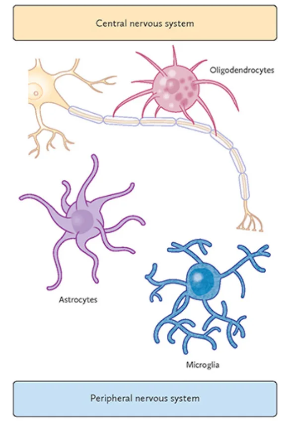
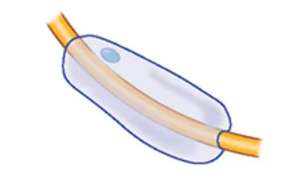
Hình 2.18 Các loại tế bào thần kinh đệm khác nhau trong não.
Nguồn: Blausen.com staff (2014), CC BY 3.0 qua Commons. Từ: https://qbi.uq.edu.au/brain basics/brain/brain-physiology/types-glia
Sự thật thú vị Một số loài động vật, chẳng hạn như mực ống, không có myelin. Thay vào đó, chúng có một sợi trục khổng lồ với đường kính cỡ bằng một cây bút chì, rộng hơn khoảng 1.000 lần so với sợi trục điển hình của con người (Coles, 2015). Đường kính lớn hơn giúp chúng truyền tín hiệu nhanh hơn vì chúng thiếu myelin.

Hình 2.19 Sợi trục khổng lồ từ loài mực ống Dosidicus gigas.
Nguồn: Mathur et al., Creative Commons. Từ: http://nerve.bsd.uchicago.edu/nervejs/NERVEhelp.html
Trong những năm 1950, hai nhà khoa học thần kinh Alan Hodgkin và Andrew Huxley muốn nghiên cứu tế bào thần kinh, nhưng họ bị giới hạn bởi công nghệ. Vì vậy, họ đã sử dụng mực ống để tìm hiểu thêm về những tế bào khó quan sát này. Vì sợi trục của mực ống rất lớn nên chúng dễ nghiên cứu hơn, và các nhà khoa học đã có thể khảo sát cách điện thế hoạt động vận hành lần đầu tiên (Hodgkin, Huxley and Katz, 1952). Hodgkin và Huxley sau đó đã được trao giải Nobel Sinh lý học hoặc Y học năm 1963 cho phát hiện của mình.
Tế bào hình sao (astrocyte) là những tế bào hình ngôi sao vận chuyển chất dinh dưỡng đến các tế bào thần kinh và hỗ trợ quá trình giao tiếp giữa tế bào thần kinh với tế bào thần kinh. Tế bào hình sao điều hòa lượng chất dẫn truyền thần kinh xung quanh khớp thần kinh của tế bào thần kinh (Newman, 2003). Hiện vẫn đang có các nghiên cứu về cách tế bào hình sao giúp các tế bào thần kinh giao tiếp.
Còn nhiều loại tế bào thần kinh đệm quan trọng khác. Chẳng hạn, tế bào Schwann tương tự như tế bào ít nhánh, nhưng được tìm thấy ở hệ thần kinh ngoại biên thay vì hệ thần kinh trung ương. Ngoài ra còn có các tế bào biểu mô giúp ngăn chặn những tác nhân xâm nhập đi vào hệ thống máu của não, và các tế bào màng não thất sản xuất dịch não tủy, cùng nhiều loại khác.
TỦY SỐNG
Hệ thần kinh trung ương cũng bao gồm tủy sống (Hình 2.20), một bó dây thần kinh kéo dài khoảng 46 cm (18 inch) từ não đến các đốt sống thắt lưng ở phần lưng dưới (Boonpirak and Apinhasmit, 1994). Mặc dù tủy sống chỉ có đường kính khoảng một cm, nhưng nó chứa khoảng một tỷ tế bào thần kinh (Saritas et al., 2008; Nagel et al., 2017). Do đó, tủy sống hoạt động như một xa lộ thông tin truyền tải tín hiệu giữa não và cơ thể. Tủy sống tham gia vào cả chuyển động tự chủ và không tự chủ. Ví dụ, tủy sống truyền tín hiệu từ não đến các cơ chân để giúp thực hiện chuyển động, và nó chi phối phổi độc lập với não để phục vụ việc hô hấp.
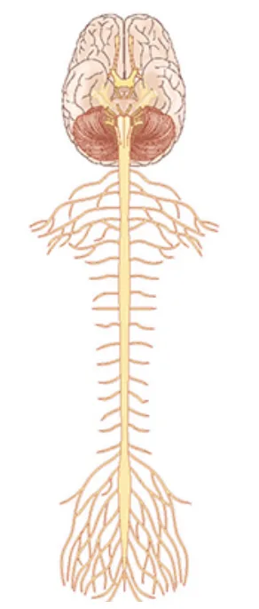
Hình 2.20 Tủy sống kéo dài từ đáy não.
Tủy sống cũng có thể gửi tín hiệu trực tiếp đến các cơ mà không cần qua não trong các chuyển động phản xạ. Phản xạ là những phản ứng tự động, không tự chủ đối với các tín hiệu cảm giác, như vô tình chạm vào chảo nóng. Bàn tay tự động rụt lại theo phản xạ rút lui để tránh bị bỏng. Hành động này bỏ qua não bộ và được xử lý hoàn toàn bởi tủy sống, cho phép tạo ra phản ứng tức thì.
Tủy sống rất mỏng manh, và hai mươi sáu xương gọi là đốt sống bảo vệ tủy sống khỏi bị tổn thương. Mỗi đốt sống nằm kẹp giữa các đĩa sụn, có tác dụng đệm lót, để các đốt sống không bị chấn thương khi vận động hoặc mang vác vật nặng (Hình 2.21).
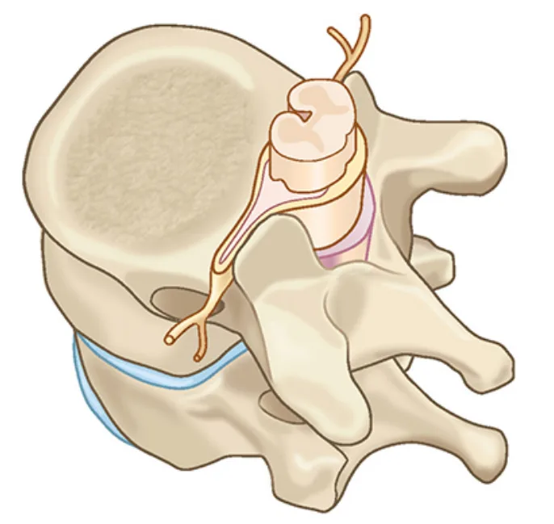
Hình 2.21 Tủy sống được bao bọc bởi các đốt sống.
Mặc dù được bao bọc bởi các đốt sống, tủy sống vẫn vô cùng mong manh và dễ bị tổn thương. Tổn thương tủy sống có thể gây ra hậu quả tàn khốc vì chấn thương có thể làm gián đoạn dòng thông tin truyền đến và đi từ não, gây ra các rối loạn về vận động và cảm giác, cùng nhiều triệu chứng khác.
Tai nạn ô tô và xe máy là nguyên nhân hàng đầu gây chấn thương tủy sống, và hiện tại vẫn chưa có liệu pháp hiệu quả nào để phục hồi tổn thương tủy sống diện rộng (Mayo Clinic, 2021). Tuy nhiên, các nhà nghiên cứu trên khắp thế giới đang nghiên cứu những cách thức nhằm thay thế chức năng của các dây thần kinh bị tổn thương.
Có nhiều phương pháp thử nghiệm hiện đang được phát triển. Một chiến lược liên quan đến việc tái tạo dây thần kinh bằng cách sử dụng tế bào Schwann, loại tế bào bao quanh dây thần kinh và sửa chữa tổn thương ở hệ thần kinh ngoại biên. Các nhà nghiên cứu đang cấy ghép tế bào Schwann vào các vùng bị tổn thương của tủy sống để xem liệu các tế bào này có thể sửa chữa mô tủy sống trong hệ thần kinh trung ương hay không (Santamaría et al., 2018).
Một chiến thuật khác liên quan đến việc đưa các protein kích thích tăng trưởng vào vị trí tổn thương để định hướng các tế bào thần kinh phát triển và tái kết nối con đường dẫn truyền tín hiệu (Lu et al., 2012). Hãy tưởng tượng các protein để lại một dấu vết mẩu bánh mì để các sợi trục đi theo. Nghiên cứu này vẫn đang tiếp diễn, nhưng các nghiên cứu sơ bộ cho thấy đây có thể là một giải pháp khả thi.
Việc tham gia tập thể dục thường xuyên giúp duy trì sức khỏe cột sống và ngăn ngừa chấn thương. Yoga có thể duy trì sự ổn định chức năng của cột sống cũng như giữ cho các cơ lưng được kích hoạt, khỏe mạnh và linh hoạt (Omkar and Vishwas, 2009). Yoga đã được chứng minh là cải thiện khả năng vận động cột sống, phạm vi chuyển động và sự dẻo dai ở mọi lứa tuổi (Grabara and Szopa, 2015), đồng thời có thể giúp giảm đau lưng (Crow, Jeannot and Trewhela, 2015).
Những điểm chính cần nhớ
Tủy sống chứa khoảng một tỷ tế bào thần kinh và tham gia vào cả chuyển động không tự chủ lẫn tự chủ. Tủy sống rất mong manh, vì vậy việc tăng cường sức mạnh cho lưng và vùng cơ lõi có thể giúp bảo vệ nó an toàn. Tập yoga có thể giúp cải thiện sự ổn định, độ linh hoạt và giảm đau lưng.
VÍ DỤ VỀ CHUỖI YOGA CHO CỘT SỐNG
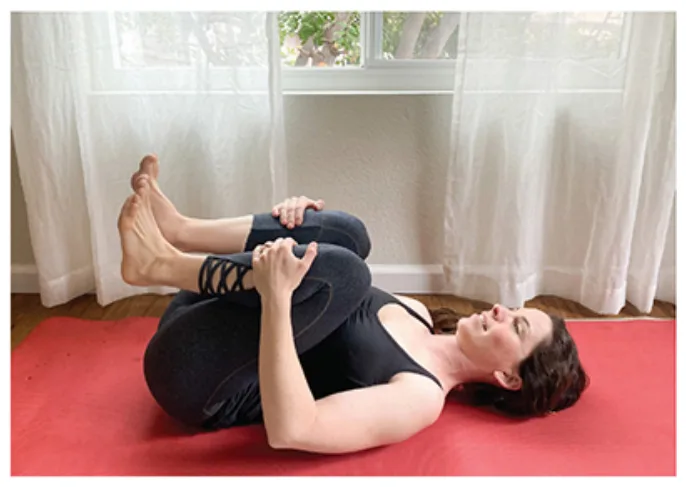
Hình 2.22 Tư thế co gối chạm ngực.

Hình 2.23 Tư thế em bé vui vẻ.

Hình 2.24 Tư thế chó con duỗi mình.

Hình 2.25 Tư thế chó con vặn mình.
Hình 2.26 Tư thế cây cầu có hỗ trợ.

Hình 2.27 Tư thế nửa cái cày.
TÀI LIỆU THAM KHẢO
Allen, N.J., & Barres, B.A., 2009. Glia: more than just brain glue. Nature, 457(7230), pp.675–677. Anasuya, B., Deepak, K.K., & Jaryal, A., 2021. Yoga practitioners exhibit higher parasympathetic activity and baroreflex sensitivity and better adaptability to 40 mm Hg lower-body negative pressure. International Journal of Yoga Therapy, 31(1), Article_2. https://doi.org/10.17761/2021D-20-00030.
Asare, F., Störsrud, S., & Simrén, M., 2012. Meditation over medication for irritable bowel syndrome? On exercise and alternative treatments for irritable bowel syndrome. Current Gastroenterology Reports, 14(4), pp.283–289. Bardin, L., 2011. The complex role of serotonin and 5-HT receptors in chronic pain. Behavioural
Pharmacology, 22(5 and 6), pp.390–404. Berger, M., Gray, J.A., & Roth, B.L., 2009. The expanded biology of serotonin. Annual Review of
Medicine, 60(1), pp.355–366. Boonpirak, N., & Apinhasmit, W., 1994. Length and caudal level of termination of the spinal cord in
Thai adults. Cells Tissues Organs, 149(1), pp.74–78. Coles, J.A., 2015. Glial cells: invertebrate. Reference Module in Biomedical Sciences. Elsevier. Crow, E.M., Jeannot, E., & Trewhela, A., 2015. Effectiveness of Iyengar yoga in treating spinal (back and neck) pain: a systematic review. International Journal of Yoga, 8(1), p.3. Danhauer, S.C., Mihalko, S.L., Russell, G.B., Campbell, C.R., et al., 2009. Restorative yoga for women with breast cancer: findings from a randomized pilot study. Psycho-Oncology, 18(4), pp.360–368. España, R.A., Schmeichel, B.E., & Berridge, C.W., 2016. Norepinephrine at the nexus of arousal, motivation and relapse. Brain Research, 1641, pp.207–216. Fleming, M.A., 2nd, Ehsan, L., Moore, S.R., & Levin, D.E., 2020. The enteric nervous system and its emerging role as a therapeutic target. Gastroenterology Research and Practice, 2020, 8024171. Goddard, A.W., Ball, S.G., Martinez, J., Robinson, M.J., et al., 2010. Current perspectives of the roles of the central norepinephrine system in anxiety and depression. Depression and Anxiety, 27(4), pp.339–350. Goff, D.C., & Coyle, J.T., 2001. The emerging role of glutamate in the pathophysiology and treatment of schizophrenia. American Journal of Psychiatry, 158(9), pp.1367–1377. Grabara, M., & Szopa, J., 2015. Effects of hatha yoga exercises on spine flexibility in women over 50 years old. Journal of Physical Therapy Science, 27(2), pp.361–365. Hansen, D.V., Hanson, J.E., & Sheng, M., 2017. Microglia in Alzheimer’s disease. Journal of Cell
Biology, 217(2), pp.459–472. Hawkins, J., & Ahmad, S., 2016. Why neurons have thousands of synapses, a theory of sequence memory in neocortex. Frontiers in Neural Circuits, 10, p.23. Herculano-Houzel, S., 2012. The remarkable, yet not extraordinary, human brain as a scaled-up primate brain and its associated cost. Proceedings of the National Academy of Sciences, 109, pp.10661–10668. Hodgkin, A.L., Huxley, A.F., & Katz, B., 1952. Measurement of current-voltage relations in the membrane of the giant axon of Loligo. The Journal of Physiology, 116(4), pp.424–448. Jia, W., Zhen, J., Liu, A., Yuan, J., et al., 2020. Long-term vegan meditation improved human gut microbiota. Evidence-Based Complementary and Alternative Medicine, 7(5). doi: 10.1155/2020/9517897. Johnson, R.L., & Wilson, C.G., 2018. A review of vagus nerve stimulation as a therapeutic intervention. Journal of Inflammation Research, 11, pp.203–213. Kalueff, A.V., & Nutt, D.J., 2007. Role of GABA in anxiety and depression. Depression and Anxiety,
24(7), pp.495–517. Kanaya, A.M., Araneta, M.R., Pawlowsky, S.B., Barrett-Connor, E., et al., 2014. Restorative yoga and metabolic risk factors: the Practicing Restorative Yoga vs. Stretching for the Metabolic Syndrome (PRYSMS) randomized trial. Journal of Diabetes and its Complications, 28(3), pp.406–412. Kim, D.-Y., & Camilleri, M., 2000. Serotonin: a mediator of the brain–gut connection. American
Journal of Gastroenterology, 95(10), pp.2698–2709.
Leong, H., 2019. Restorative yoga. Physical Medicine and Rehabilitation. Available at:
https://www.med.unc.edu/phyrehab/wp-content/uploads/sites/549/2019/09/9.13.2019Wellness.pdf Lu, P., Wang, Y., Graham, L., McHale, K., et al., 2012. Long-distance growth and connectivity of neural stem cells after severe spinal cord injury. Cell, 150(6), pp.1264–1273. Mayo Clinic, 2021. Spinal cord injury. Available at: https://www.mayoclinic.org/diseases conditions/spinal-cord-injury/symptoms-causes/syc-20377890 McCall, C.M., 2013. How might yoga work? An overview of potential underlying mechanisms.
Journal of Yoga & Physical Therapy, 3(1), p.130. Nagel, S.J., Wilson, S., Johnson, M.D., Machado, A., et al., 2017. Spinal cord stimulation for spasticity: historical approaches, current status, and future directions. Neuromodulation: Technology at the Neural Interface, 20(4), pp.307–321. Newman, E.A., 2003. New roles for astrocytes: regulation of synaptic transmission. Trends in
Neurosciences, 26(10), pp.536–542. Omkar, S.N., & Vishwas, S., 2009. Yoga techniques as a means of core stability training. Journal of
Bodywork and Movement Therapies, 13(1), pp.98–103. Parhi, K.K., & Unnikrishnan, N.K., 2020. Brain-inspired computing: models and architectures. IEEE
Open Journal of Circuits and Systems, 1, pp.185–204. Rao, M., & Gershon, M.D., 2016. The bowel and beyond: the enteric nervous system in neurological disorders. Nature Reviews Gastroenterology & Hepatology, 13(9), pp.517–528. Rieder, R., Wisniewski, P.J., Alderman, B.L., & Campbell, S.C., 2017. Microbes and mental health: a review. Brain, Behavior, and Immunity, 66, pp.9–17. Santamaría, A.J., Solano, J.P., Benavides, F.D., & Guest, J.D., 2018. Intraspinal delivery of Schwann cells for spinal cord injury. Methods in Molecular Biology, 1739, pp.467–484. Saritas, E.U., Cunningham, C.H., Lee, J.H., Han, E.T., & Nishimura, D.G., 2008. DWI of the spinal cord with reduced FOV single-shot EPI. Magnetic Resonance in Medicine, 60(2), pp.468–473. Segura-Aguilar, J., Paris, I., Muñoz, P., Ferrari, E., Zecca, L., & Zucca, F.A., 2014. Protective and toxic roles of dopamine in Parkinson’s disease. Journal of Neurochemistry, 129(6), pp.898–915. Si, B., & Song, E., 2018. Recent advances in the detection of neurotransmitters. Chemosensors, 6(1), p.1. Starcke, K., & Brand, M., 2012. Decision making under stress: a selective review. Neuroscience &
Biobehavioral Reviews, 36(4), pp.1228–1248. Streeter, C.C., Gerbarg, P.L., Saper, R.B., Ciraulo, D.A., & Brown, R.P., 2012. Effects of yoga on the autonomic nervous system, gamma-aminobutyric-acid, and allostasis in epilepsy, depression, and post-traumatic stress disorder. Medical Hypotheses, 78(5), pp.571–579. Tavassoli, S., 2009. Yoga in the management of irritable bowel syndrome. International Journal of
Yoga Therapy, 19(1), pp.97–101. Temburni, M.K., & Jacob, M.H., 2001. New functions for glia in the brain. Proceedings of the
National Academy of Sciences, 98(7), pp.3631–3632. Vempati, R.P., & Telles, S., 2002. Yoga-based guided relaxation reduces sympathetic activity judged from baseline levels. Psychological Reports, 90(2), pp.487–494.
Chương 3 — Đặc điểm giải phẫu của não bộ
CHƯƠNG 3
Đặc điểm Giải phẫu của Não bộ
Yoga và thiền định kích hoạt các vùng khác nhau của não bộ. Một khối lượng lớn nghiên cứu đã tập trung vào việc đo lường sự khác biệt về mặt vật lý trong não bộ của những người tập yoga so với nhóm đối chứng. Chương này sẽ khám phá cấu trúc vật lý của não bộ, các vùng chính cũng như các chức năng cơ bản của chúng.
GIỚI THIỆU
Não bộ con người là một cấu trúc thống nhất, có sự liên kết chặt chẽ. Mặc dù phần lớn hoạt động như một hệ thống duy nhất, về mặt giải phẫu, não có thể được chia thành hai bán cầu trung tâm được nối với nhau bởi một bó sợi thần kinh lớn gọi là thể chai (corpus callosum). Mỗi bán cầu não cũng có thể được chia thành bốn đơn vị chính hay còn gọi là các thùy. Bốn thùy này có nhiều chức năng khác nhau và phối hợp hoạt động như một mạng lưới gắn kết (Hình 3.1).
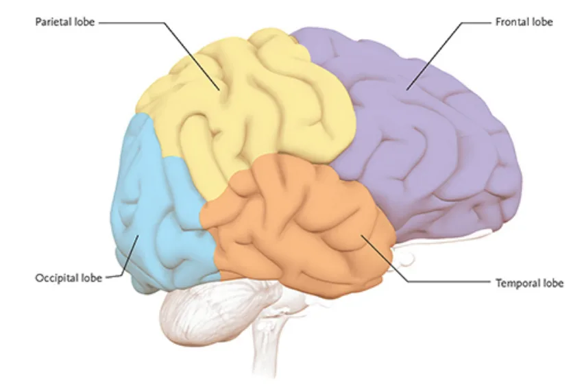
Hình 3.1 Não bộ với bốn thùy chính.
THÙY TRÁN
Thùy trán nằm ở phía trước của não bộ (đúng như tên gọi), ngay phía sau trán và mắt. Nó chịu trách nhiệm cho nhiều nhiệm vụ quan trọng, chẳng hạn như tích hợp thông tin để đưa ra quyết định. Việc quyết định tham gia lớp học yoga nào hay thậm chí nhấc chân nào lên trong tư thế chó úp mặt đều có sự tham gia của thùy trán. Thùy trán cũng liên quan đến động lực, sự chú ý, phần thưởng, khả năng tự kiểm soát, xử lý cảm xúc, tính cách và vận động (Chayer và Freedman, 2001).
Nhưng làm thế nào các nhà khoa học thần kinh biết được vùng não nào chịu trách nhiệm cho chức năng gì? Trước khi phát minh ra kỹ thuật chẩn đoán hình ảnh thần kinh, não bộ con người rất khó nghiên cứu vì nó được bao bọc trong hộp sọ cứng. Các nhà khoa học phải quan sát xem điều gì xảy ra với não bộ khi một vùng nào đó bị tổn thương hoặc phá hủy, chẳng hạn như sau một cơn đột quỵ hoặc chấn thương. Đây chính xác là cách các nhà khoa học và bác sĩ vào giữa những năm 1800 đã phát hiện ra rằng thùy trán tạo nên tính cách của chúng ta.
Phineas Gage Vào cuối những năm 1840, một công nhân đường sắt tên là Phineas Gage đang cho nổ đá để làm đường ray ở Vermont thì một tai nạn xảy ra. Một trong những vụ nổ đã phóng một thanh sắt có đường kính gần 5 cm (2 inch) xuyên qua phía trước má trái của Gage, đi thẳng qua thùy trán của ông (Hình 3.2). Gage bị hất văng xuống đất, nhưng ông không chết. Trước sự kinh ngạc của các đồng nghiệp, Gage có thể ngồi dậy và nói chuyện chỉ vài phút sau vụ tai nạn. Việc ông sống sót được tuyên bố là một phép màu y học.
Sau chấn thương, Gage quay trở lại với các hoạt động thường ngày, nhưng theo thời gian, tính cách của ông bắt đầu thay đổi. Từ một người đàn ông đáng tin cậy và chăm chỉ, ông trở nên cáu kỉnh và hung hăng hơn qua từng năm. Gia đình và bạn bè cho biết ông không còn là con người như trước đây nữa. Gage đã được nhiều bác sĩ thăm khám, và họ suy luận rằng thùy trán hẳn phải có vai trò liên quan đến tính cách. Bất chấp những thay đổi này cùng lỗ hổng trong não, Gage vẫn sống thêm 12 năm nữa trước khi qua đời vào năm 1860.
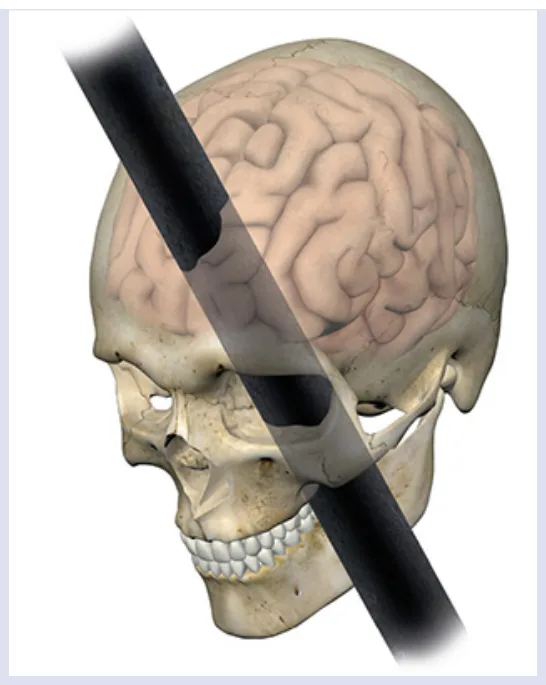
Hình 3.2 Hình ảnh mô phỏng thanh sắt đã bắn xuyên qua hộp sọ của Gage.
Nguồn: Ratiu và cộng sự, CC BY-SA 2.1. Từ: https://qbi.uq.edu.au/brain/brain-anatomy/lobes brain
Sau này, với sự ra đời của kỹ thuật chẩn đoán hình ảnh thần kinh, các nhà khoa học đã xác nhận rằng tổn thương thùy trán có thể dẫn đến những thay đổi về tính cách và các rối loạn nhân cách (Chow, 2000). Sau khi Gage qua đời, một bác sĩ đã giữ hộp sọ của ông và cuối cùng hiến tặng hộp sọ cùng thanh sắt cho Bảo tàng Giải phẫu Warren của Đại học Harvard ở Boston, Massachusetts. Chúng vẫn được lưu giữ tại đó cho đến ngày nay.
Ở phần trước phía dưới của thùy trán là vỏ não trước trán (prefrontal cortex). Vùng này tham gia vào quá trình kiểm soát nhận thức, ra quyết định, chú ý và hành vi. Vỏ não trước trán là một trong những vùng não được nghiên cứu nhiều nhất, bao gồm cả trong các nghiên cứu về yoga và thiền định.
Vỏ não trước trán thường gắn liền với việc thực hành yoga. Các nhà nghiên cứu từ Bệnh viện Israelita Albert Einstein ở Brazil và Đại học Harvard phát hiện ra rằng những phụ nữ lớn tuổi khỏe mạnh có kinh nghiệm tập yoga lâu năm có độ dày vỏ não ở vỏ não trước trán bên trái tăng lên khi so sánh với nhóm đối chứng trẻ tuổi hơn có mức độ hoạt động tương đương (Afonso và cộng sự, 2017). Độ dày vỏ não phản ánh bề rộng của chất xám ở vỏ não, phần ngoài cùng của não người (Hình 3.3). Vỏ não dày hơn có thể đồng nghĩa với việc có nhiều tế bào thần kinh khỏe mạnh hơn ở những vùng đó. Ngược lại, vỏ não mỏng đi là dấu hiệu của sự thoái hóa thần kinh trong một số bệnh, chẳng hạn như bệnh Alzheimer (Lerch và cộng sự, 2004).
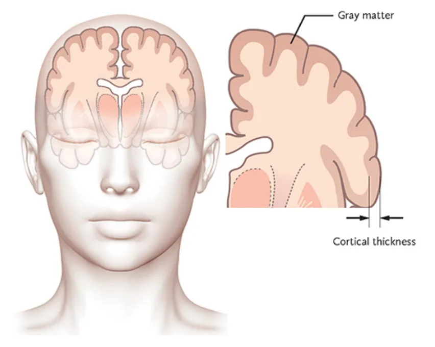
Hình 3.3 Hình minh họa cách các nhà khoa học đo độ dày vỏ não.
Độ dày vỏ não lớn hơn ở vỏ não trước trán của những người tập yoga lâu năm cho thấy yoga có thể tác động đến kích thước của vùng não quan trọng này. Những thay đổi về mặt giải phẫu này có thể dẫn đến các lợi ích về chức năng như cải thiện nhận thức, khả năng ra quyết định hoặc kiểm soát xung động, mặc dù sự gia tăng kích thước đơn thuần không nhất thiết đồng nghĩa với việc các quá trình xử lý được cải thiện.
Chất xám và chất trắng
Các nhà khoa học thần kinh thường đề cập đến não bộ như một cấu trúc gồm chất xám và chất trắng. Chất xám chứa chủ yếu thân tế bào của các tế bào thần kinh (neuron) và các sợi nhánh (dendrite) của chúng, cũng như các tế bào thần kinh đệm (glial cell) và mao mạch. Các mao mạch mang máu giàu oxy đến các tế bào, khiến mô này có màu hơi hồng trong bộ não sống. Chất xám nằm ở các lớp ngoài của não bộ và ở phần trung tâm của tủy sống.
Chất trắng có màu trắng và chứa chủ yếu các sợi trục thần kinh (axon), là những dây dài vươn ra từ thân tế bào. Sợi trục có màu trắng là do bao myelin quấn quanh chúng. Myelin giúp dẫn truyền các xung tín hiệu điện dọc theo sợi trục đến vùng đầu tận cùng của tế bào để giao tiếp với các tế bào khác. Trong não bộ, chất trắng nằm ở phía trong chất xám, nhưng trong tủy sống, chất trắng lại nằm ở phía ngoài chất xám.
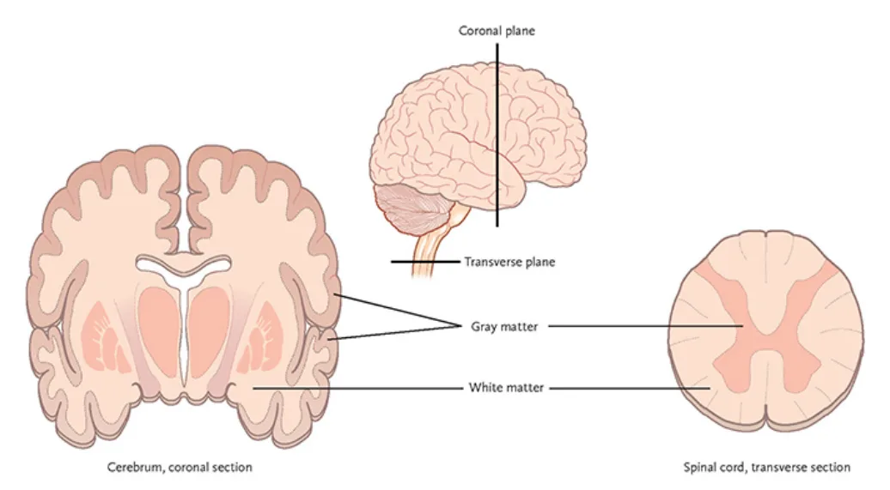
Hình 3.4 Bên trái: Mặt cắt của não bộ cho thấy chất xám ở bên ngoài và chất trắng ở bên trong. Bên phải: Mặt cắt của tủy sống cho thấy chất xám ở bên trong và chất trắng ở bên ngoài.
THÙY THÁI DƯƠNG
Thùy thái dương nằm ở cả hai bên não bộ, phía trong hai tai. Nó tham gia vào nhiều hoạt động khác nhau bao gồm nghe, lắng nghe, ngôn ngữ, xử lý thị giác đối với khuôn mặt và đồ vật cũng như trí nhớ (Squire, Stark và Clark, 2004; Eichenbaum, Yonelinas và Ranganath, 2007). Mặc dù các cấu trúc quan trọng thường nằm đối xứng ở cả hai bên não, thùy thái dương là một ngoại lệ.
Thùy thái dương trái là nơi chứa hai cấu trúc quan trọng liên quan đến ngôn ngữ gọi là vùng Wernicke và vùng Broca, những vùng không có ở bên phải. Vùng Wernicke chịu trách nhiệm hiểu lời nói, trong khi vùng Broca tham gia vào quá trình tạo ra lời nói. Ví dụ, khi giáo viên yoga của bạn hướng dẫn bằng lời nói, việc hiểu các hướng dẫn đó đòi hỏi sự kích hoạt của vùng Wernicke. Việc đặt câu hỏi trong lớp học sử dụng vùng Broca để kết hợp các từ ngữ thành lời nói. Có một ngoại lệ: những người thuận tay trái có nhiều khả năng có các trung tâm ngôn ngữ nằm ở bên phải não thay vì bên trái. Các nhà khoa học thần kinh vẫn chưa hoàn toàn chắc chắn tại sao lại như vậy (Knecht và cộng sự, 2000). Thùy thái dương cũng tham gia vào việc nhận diện khuôn mặt. Nhà khoa học thần kinh Oliver Sacks đã viết một cuốn sách tựa đề The Man Who Mistook His Wife for a Hat (Người đàn ông nhầm vợ mình với chiếc mũ), mô tả một tình trạng hiếm gặp gọi là chứng mất nhận diện khuôn mặt hay mù mặt (prosopagnosia) (Sacks, 2022). Những người mắc chứng này không thể nhận ra khuôn mặt, và người ta cho rằng hiện tượng này có thể do tổn thương ở thùy thái dương. Một nhóm các nhà khoa học tại Đại học Dartmouth, Đại học Harvard và Đại học London hiện đang tiến hành một nghiên cứu quy mô lớn thuộc Trung tâm Nghiên cứu Prosopagnosia để hiểu rõ hơn nguyên nhân gây ra hiện tượng này. Họ tin rằng tình trạng này có thể do sự chết tế bào ở thùy thái dương, mặc dù có khả năng cũng có yếu tố di truyền liên quan.
Thùy thái dương cũng là trung tâm trí nhớ chính của não bộ. Nó chứa hồi hải mã (hippocampus), có hình dạng giống con cá ngựa (Hình 3.5). Vùng này chịu trách nhiệm cho trí nhớ tường thuật (declarative memory), tức là trí nhớ về các sự kiện và dữ kiện. Một số nhà khoa học thần kinh tin rằng vùng này có thể tạo ra các tế bào thần kinh mới thông qua một quá trình gọi là sinh thần kinh (neurogenesis) (Squire, Stark và Clark, 2004;
Eichenbaum, Yonelinas và Ranganath, 2007). Chúng ta sẽ tìm hiểu thêm về quá trình sinh thần kinh ở Chương 10.
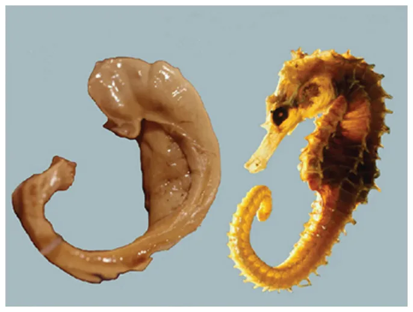
Hình 3.5 Bên trái: Hồi hải mã từ não người. Bên phải: Con cá ngựa có hình dạng giống hồi hải mã, đó là nguồn gốc tên gọi của cấu trúc này.
Nguồn: Giáo sư Laszlo Seress, CC BY-SA 3.0. Từ: https://theconversation.com/explainer-what happens-in-the-hippocampus-32589
Chức năng của hồi hải mã được phát hiện nhờ một bệnh nhân nổi tiếng tên là Henry Molaison (sau này được biết đến với tên H.M.). Vào đầu những năm 1950, Henry khi đó 26 tuổi đã trải qua một cuộc phẫu thuật não để cắt bỏ phần lớn cả hai hồi hải mã nhằm kiểm soát các cơn động kinh. Mặc dù cuộc phẫu thuật giúp giảm các cơn co giật, trí nhớ của ông đã bị thay đổi vĩnh viễn. Ông mắc phải chứng gọi là mất trí nhớ thuận chiều (anterograde amnesia). Tương tự như nhân vật Lucy Whitmore trong phim 50 First Dates (50 lần hẹn đầu tiên), Henry có thể nhớ thời thơ ấu và hầu hết cuộc đời mình, nhưng ông không thể hình thành bất kỳ ký ức mới nào.
Các bác sĩ vô cùng kinh ngạc trước trường hợp của Henry. Ông đã trải qua nhiều cuộc kiểm tra thần kinh và tâm lý chuyên sâu trong suốt cuộc đời sau ca phẫu thuật. Những nghiên cứu này đã dẫn đến sự hiểu biết sâu sắc hơn về phẫu thuật thần kinh và cho phép các nhà khoa học khám phá ra vai trò quan trọng của hồi hải mã trong việc hình thành trí nhớ.
Henry sống phần đời còn lại trong bệnh viện, thức dậy mỗi ngày với suy nghĩ mình vẫn là một chàng trai trẻ cho đến khi qua đời ở tuổi 82 vào năm 2008 (Annese và cộng sự, 2014). Vì không thể hình thành ký ức mới, ông chưa bao giờ biết mình đã trở nên nổi tiếng như thế nào trong lĩnh vực khoa học thần kinh. Sau khi ông qua đời, các nhà nghiên cứu tại Đại học California, San Diego đã lấy não của Henry và tái tạo kỹ thuật số để các nhà khoa học thần kinh trên khắp thế giới có thể kiểm tra bộ não của ông một cách chi tiết đáng kinh ngạc (Annese và cộng sự, 2014).
Làm thế nào bạn nhớ được chuỗi Chào Mặt Trời?
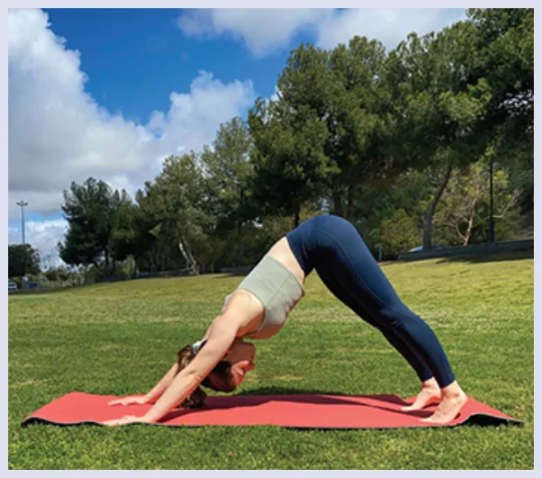
Hình 3.6 Tư thế chó úp mặt, một trong nhiều tư thế trong chuỗi Chào Mặt Trời.
Có hai loại trí nhớ dài hạn chính: trí nhớ tường thuật (trí nhớ rõ ràng/explicit memory) và trí nhớ không tường thuật (trí nhớ ẩn tàng/implicit memory). Trí nhớ tường thuật là cách chúng ta ghi nhớ các dữ kiện và sự kiện, trong khi trí nhớ không tường thuật dành cho việc hình thành thói quen và học các kỹ năng mới (Reber, 2008). Trường hợp của Henry Molaison đã dạy cho các bác sĩ và nhà khoa học rằng trí nhớ tường thuật có sự tham gia của hồi hải mã.
Trí nhớ không tường thuật, như việc thực hành chuỗi Chào Mặt Trời, có thể hoạt động mà không cần suy nghĩ có ý thức một khi đã được học thuộc. Những loại trí nhớ này đòi hỏi sự lặp đi lặp lại và thực hành để hành vi của chúng ta (chuỗi Chào Mặt Trời) vận hành ở chế độ tự động. Trí nhớ không tường thuật liên quan đến các vùng vận động của não bộ, và tiểu não đóng vai trò then chốt trong việc thực hiện các ký ức vận động đã học.
Hồi hải mã bị ảnh hưởng bởi quá trình lão hóa. Khi một người già đi, các tế bào thần kinh chết dần, tình trạng viêm tăng lên và hồi hải mã bị thu nhỏ kích thước (Van Aalst và cộng sự, 2020). Yoga có thể giúp bảo vệ não khỏi sự suy giảm liên quan đến tuổi tác. Các nhà khoa học từ Đại học Illinois tại Urbana-Champaign và Đại học Bang Wayne đã kiểm tra mật độ hồi hải mã ở 13 người tập yoga lâu năm so với 13 người khỏe mạnh thuộc nhóm đối chứng (Gothe và cộng sự, 2018). Họ phát hiện ra rằng những người tập yoga lâu năm có mật độ chất xám ở hồi hải mã bên trái cao hơn so với nhóm đối chứng. Phát hiện này có thể chỉ ra rằng những người tập yoga có nhiều tế bào thần kinh hơn ở vùng não này, giúp bảo vệ họ chống lại sự suy giảm trí nhớ do tuổi tác.
Tại sao các nghiên cứu này chỉ cho thấy sự khác biệt ở bên trái não chứ không phải bên phải? Các nhà khoa học thần kinh không biết chắc. Một phát hiện có ý nghĩa thống kê chỉ ở một bên não có thể do nhiều nguyên nhân bao gồm khó khăn kỹ thuật, sai số hoặc sự khác biệt trong kỹ thuật phân tích. Mặc dù một số chức năng, như ngôn ngữ, khu trú ở bên trái não, hầu hết các chức năng khác được cho là diễn ra ở cả hai bên não. Tuy nhiên, có khả năng vẫn tồn tại những khác biệt giữa não phải và não trái mà chúng ta chưa khám phá ra.
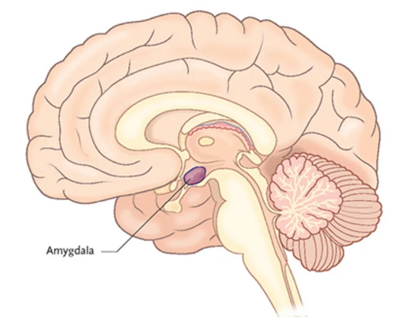
Hình 3.7 Hình minh họa não bộ cho thấy hạch hạnh nhân (amygdala).
Hồi hải mã nằm ngay cạnh hạch hạnh nhân (amygdala) (Hình 3.7). Mỗi hạch hạnh nhân có hình dạng và kích thước đại khái bằng một hạt hạnh nhân. Dù nhỏ bé như vậy, những cấu trúc này đóng vai trò chính trong việc xử lý nỗi sợ hãi, lo âu và tức giận. Hạch hạnh nhân cũng gắn cảm xúc vào ký ức của chúng ta và do đó, là một trạm trung chuyển trung tâm cho trí nhớ cảm xúc (Van Aalst và cộng sự, 2020).
Các nhà nghiên cứu tại Trung tâm Y tế Erasmus ở Hà Lan đã kiểm tra tác động của yoga và thiền định lên thể tích của hạch hạnh nhân và hồi hải mã trong một nghiên cứu lớn trên 3.742 người tham gia (Gotink và cộng sự, 2018). Họ phát hiện ra rằng sự giảm thể tích chất xám ở hồi hải mã trái và hạch hạnh nhân phải có liên quan đến cả hai phương pháp thực hành này. Thể tích chất xám ít hơn ở những vùng này có thể biểu thị rằng người tập sử dụng yoga và thiền định để kiểm soát trạng thái cảm xúc nhằm điều chỉnh phản ứng lo âu và sợ hãi. Nếu các tế bào thần kinh liên quan đến lo âu và sợ hãi không được sử dụng thường xuyên, não bộ có thể đã tái tổ chức các mạch thần kinh này, làm giảm thể tích của các vùng đó. Quá trình này có thể giúp não bộ hoạt động hiệu quả hơn. Các nhà khoa học đã không phân biệt giữa tác động của yoga so với thiền định lên não bộ, vì vậy không rõ kết quả là do yoga, thiền định hay sự kết hợp của cả hai phương pháp.
Có nhiều hay ít thể tích chất xám hơn thì tốt hơn? Cả hai lựa chọn dường như đều có những lợi ích hợp lý. Một trong những khó khăn chính để xác định câu trả lời là thể tích não được đo dựa trên các nghiên cứu chẩn đoán hình ảnh chứ không phải nghiên cứu giải phẫu tử thi. Do đó, vẫn chưa rõ điều gì gây ra sự khác biệt về kích thước. Các nhà nghiên cứu đang bắt đầu tiếp cận câu hỏi này bằng cách giải phẫu não của các mô hình động vật, chẳng hạn như chuột nhắt và chuột cống, để xem thể tích não liên quan như thế nào đến cấu trúc não.
Những người thông minh hơn có bộ não lớn hơn không? Người ta thường tin rằng bộ não lớn hơn đồng nghĩa với trí thông minh cao hơn, nhưng hãy xem xét loài voi châu Phi. Nó có bộ não lớn gấp khoảng ba lần kích thước bộ não con người. Bộ não của một con voi chứa gần 257 tỷ tế bào thần kinh so với con số khiêm tốn 86 tỷ tế bào thần kinh của con người (Herculano-Houzel và cộng sự, 2014).
Hình 3.8 Những chú voi châu Phi tại Khu bảo tồn Quốc gia Masai Mara, Kenya.
Nguồn: David Heiling trên Unsplash.
Việc kiểm tra kỹ lưỡng bộ não của Albert Einstein đã tiết lộ rằng bộ não của ông thực tế nhỏ hơn bộ não người bình thường (Costandi, 2012). Các nghiên cứu giải phẫu cho thấy não của ông đặc hơn, nghĩa là Einstein có nhiều tế bào thần kinh được nén chặt với nhau hơn ở các vùng trên khắp bộ não. Bộ não đặc hơn có thể biểu thị rằng Einstein có nhiều kết nối hơn giữa các vùng não, cho phép xử lý thông tin nhanh hơn bộ não trung bình. Einstein cũng có nhiều tế bào hỗ trợ phi thần kinh, gọi là tế bào thần kinh đệm (glia), hơn bộ não người bình thường (Costandi, 2012). Các nhà khoa học thần kinh vẫn đang cố gắng tìm hiểu xem tế bào thần kinh đệm có thể liên quan đến trí thông minh như thế nào.
Thuận não trái hay não phải? Có rất ít cơ sở khoa học cho nhận định “những người thuận não phải thường sáng tạo hoặc có tính nghệ thuật, trong khi những người thuận não trái thường có tư duy phân tích hoặc tính toán hơn.” Mặc dù một số chức năng não, như ngôn ngữ, khu trú ở một bên não, hầu hết các chức năng não diễn ra ở cả hai bên. Thông tin được chia sẻ qua một cây cầu gồm 300 triệu sợi trục gọi là thể chai (corpus callosum) (Phillips và cộng sự, 2015). Thể chai là một đường cao tốc cho thông tin di chuyển qua lại giữa bán cầu não phải và bán cầu não trái.
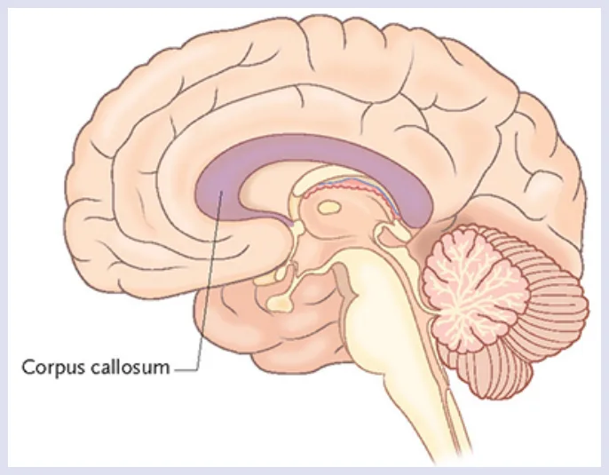
Hình 3.9 Hình minh họa não bộ cho thấy thể chai (corpus callosum).
Đôi khi cây cầu này phải bị cắt đứt. Trong những tình trạng như động kinh nặng, các bác sĩ phẫu thuật thần kinh sẽ cắt thể chai để hai bán cầu não không còn giao tiếp được với nhau nữa. Ca phẫu thuật này có thể làm giảm các cơn co giật, nhưng nó cũng có thể dẫn đến hàng loạt thay đổi về hành vi và nhận thức, chẳng hạn như sự thay đổi về thị giác, lời nói và trí nhớ. Đây được coi là phẫu thuật giải pháp cuối cùng, chỉ dành cho những bệnh nhân không còn lựa chọn điều trị nào khác.
Vậy, tại sao một số người lại sáng tạo hơn hoặc có tư duy phân tích hơn? Các nhà khoa học thần kinh không biết chắc, nhưng điều đó có thể liên quan đến cách các nhóm tế bào thần kinh giao tiếp với nhau.
THÙY ĐỈNH
Thùy đỉnh nằm gần phía sau và đỉnh của não bộ, và chuyên xử lý thông tin cảm giác như vị giác, xúc giác, nhiệt độ, đau và áp lực (Garcia-Larrea và Mauguière, 2018). Nó cũng tích hợp thông tin cảm giác này với hệ thống thị giác, điều này rất quan trọng để biết cơ thể đang ở đâu trong không gian, gọi là cảm thụ bản thể (proprioception) (Karnath, 1997; Olson và Berryhill, 2009). Còn được gọi là giác quan thứ sáu, cảm thụ bản thể đóng vai trò thiết yếu cho hầu hết mọi loại chuyển động. Một nghiên cứu cho thấy thể tích của thùy đỉnh có liên quan đến số giờ tập yoga hàng tuần. Những người tập yoga thường xuyên hơn có thùy đỉnh lớn hơn những người tập ít thường xuyên hơn (Villemure và cộng sự, 2015).
THÙY CHẨM
Thùy nhỏ nhất, thùy chẩm, nằm ở tận phía sau của não bộ và là nơi đặt trung tâm xử lý thị giác chính, vỏ não thị giác sơ cấp. Thùy chẩm nằm cách xa mắt, vì vậy não bộ đã tiến hóa để có hàng triệu sợi trục (chất trắng) kéo dài từ mắt đến thùy chẩm. Thùy chẩm tích hợp thông tin từ mắt để tạo thành một hình ảnh thống nhất với các thông tin về ánh sáng, kết cấu, màu sắc, kích thước, hình dạng và khoảng cách.
Bên dưới thùy chẩm là hai cấu trúc quan trọng khác gọi là tiểu não (cerebellum) và thân não (brainstem) (Hình 3.10). Tiểu não, có nghĩa là “bộ não nhỏ” trong tiếng Latin, tham gia vào việc điều phối các chuyển động, trí nhớ cơ bắp (như chuỗi Chào Mặt Trời), hiệu chỉnh chuyển động (những cử động nhanh để tránh bị vấp ngã) cũng như hàng loạt chức năng khác mà các nhà khoa học thần kinh mới chỉ bắt đầu giải mã. Mặc dù về mặt vật lý nhỏ hơn vỏ não, tiểu não chứa số lượng tế bào thần kinh nhiều gấp khoảng năm lần, được xếp dày đặc vào không gian nhiều nếp nhăn này (Von Bartheld, Bahney và Herculano-Houzel, 2016).
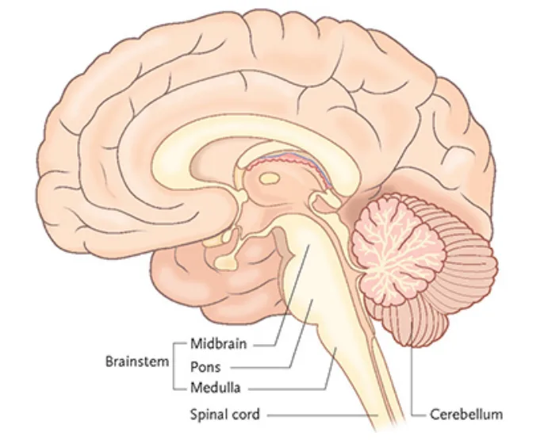
Hình 3.10 Hình minh họa não bộ cho thấy thân não, tiểu não và tủy sống.
Phỏng theo: https://qbi.uq.edu.au/brain/brain-anatomy/hindbrain
Thân não điều hòa nhiều chức năng quan trọng, chẳng hạn như nhịp thở, nhịp tim, huyết áp, ý thức và chu kỳ ngủ–thức. Thân não bao gồm ba phần chính gọi là não giữa (midbrain), cầu não (pons) và hành não (medulla oblongata), thường được gọi tắt là “medulla”. Thiền định lâu dài đã được chứng minh là làm tăng mật độ của thân não, đặc biệt là ở các vùng liên quan đến việc kiểm soát tim và phổi (Vestergaard-Poulsen và cộng sự, 2009). Những thay đổi cấu trúc não này có thể giải thích cho sự gia tăng hoạt động của hệ thần kinh phó giao cảm vốn thường đi kèm với thiền định.
Thân não cũng là nơi xuất phát của hầu hết các dây thần kinh sọ của não bộ. Mỗi dây thần kinh sọ có một vai trò cụ thể trong việc truyền tải thông tin vận động và/hoặc cảm giác xung quanh vùng đầu và cổ (Hình 3.11).
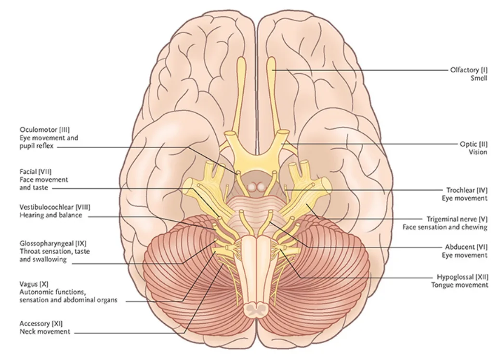
Hình 3.11 Hình minh họa não bộ cho thấy các dây thần kinh sọ.
Não giữa là phần trên cùng của thân não và tham gia vào việc kiểm soát chuyển động, giấc ngủ, điều hòa thân nhiệt, thị giác và thính giác. Nó chứa trung tâm sản xuất dopamine chính gọi là chất đen (substantia nigra).
Cầu não nằm giữa não giữa và hành não. Cấu trúc phình to này lấy tên từ từ tiếng Latin có nghĩa là “cây cầu” vì nó đóng vai trò là trung tâm điều phối cho các tín hiệu đi đến và đi từ cả hai bên não cũng như tủy sống. Cầu não chứa các nhóm tế bào thần kinh tham gia vào giấc ngủ, hô hấp, giữ thăng bằng và nhiều chức năng khác.
Hành não là phần thấp nhất của thân não, và đây là nơi não chuyển tiếp vào tủy sống. Mặc dù hành não ngắn, dài khoảng 3 cm (1 inch), nó là một cấu trúc tối quan trọng đối với sự sống còn của chúng ta. Nó chứa các trung tâm kiểm soát cho các chức năng sinh tồn, chẳng hạn như nhịp thở, nhịp tim và huyết áp. Vùng này cũng tham gia vào các phản xạ như nuốt và thậm chí cả hắt hơi (Seijo-Martinez và cộng sự, 2006; Hashimoto và cộng sự, 2018).
CÁC VÙNG NÃO BỔ SUNG LIÊN QUAN ĐẾN YOGA VÀ THIỀN ĐỊNH
Vỏ não đai (cingulate cortex) uốn cong quanh phần bên trong của não bộ giống như một chiếc cầu vồng (Hình 3.12). Nó được chia thành hai phần chính, vỏ não đai trước (phần phía trước) và vỏ não đai sau (phần phía sau).
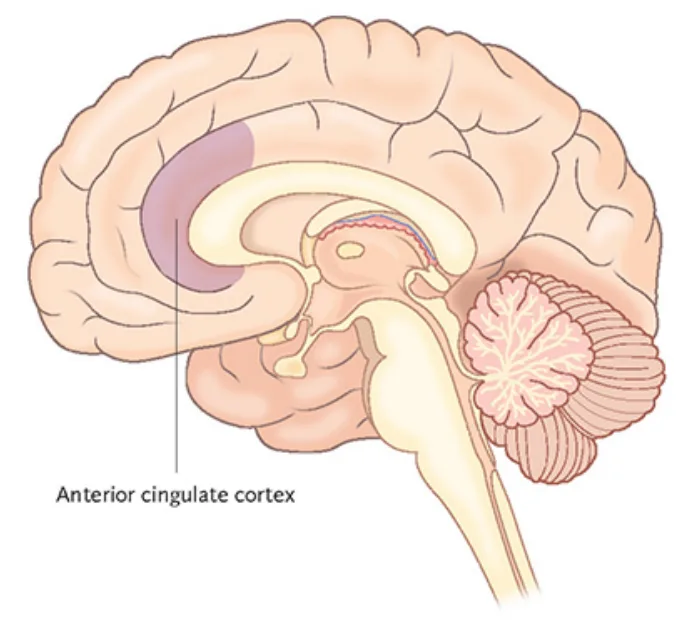
Hình 3.12 Hình minh họa não bộ cho thấy vỏ não đai trước.
Vỏ não đai trước (ACC) đặc biệt liên quan đến những người tập yoga vì nó kết nối với hệ thống cảm xúc của não (hệ viền - limbic system) cũng như thùy trán chịu trách nhiệm ra quyết định. ACC giúp tích hợp suy nghĩ và cảm xúc để phục vụ việc học tập cảm xúc cũng như theo dõi sự tập trung trong các hoạt động như thiền định (Devinsky, Morrell và Vogt, 1995).
ACC thường gắn liền với những tác động của thiền định. Thiền định có thể làm tăng hiệu quả của vùng này, cải thiện lưu lượng máu và tạo ra những thay đổi ở sợi trục (Tang và cộng sự, 2010, 2015; Xue, Tang và Posner, 2011). Một số nhà nghiên cứu đưa ra giả thuyết rằng những thay đổi ở các vùng não này có thể dẫn đến khả năng điều hòa cảm xúc và sự chú ý tốt hơn.
Thùy đảo hay vỏ não đảo (insula/insular cortex) gần đây đã trở thành tâm điểm chú ý trong các nghiên cứu về thiền định (Hình 3.13). Các nhà khoa học tin rằng nó chịu trách nhiệm cho sự tự nhận thức và tự suy ngẫm, vì nó cảm nhận trạng thái bên trong của cơ thể (Modinos, Ormel và Aleman, 2009).
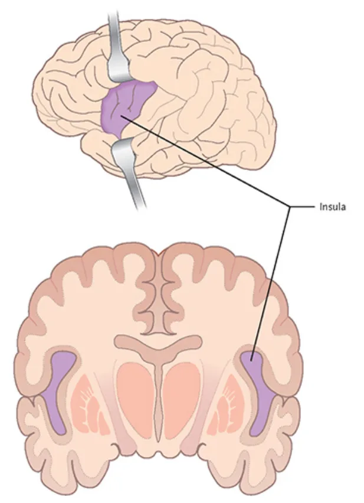
Hình 3.13 Hình minh họa não bộ cho thấy thùy đảo hay vỏ não đảo.
Nhiều nghiên cứu đã phát hiện ra rằng những người tập yoga có thể tích thùy đảo (chất xám) lớn hơn những người không tập yoga. Kích thước của thùy đảo cũng liên quan đến số năm kinh nghiệm tập yoga; những người tập yoga trong thời gian dài hơn có nhiều chất xám ở vùng này hơn so với những người tập ít kinh nghiệm hơn (Villemure và cộng sự, 2013).
Một cách khác để khám phá não bộ là quan sát các sợi trục của tế bào thần kinh gọi là chất trắng. Việc kiểm tra chất trắng rất hữu ích để hiểu cách các vùng khác nhau của não kết nối với nhau. Các nhà nghiên cứu từ Viện Y tế Quốc gia Hoa Kỳ (NIH) đã quan tâm đến sự khác biệt của chất trắng trong thùy đảo ở những người tập yoga lâu năm so với nhóm đối chứng khỏe mạnh (Villemure và cộng sự, 2013). Những người tập lâu năm cho thấy khả năng kết nối giữa vùng trước (anterior) và vùng sau (posterior) của thùy đảo cao hơn so với các đối tượng đối chứng. Yoga đòi hỏi nhận thức về tâm trí và cơ thể, vì vậy việc thực hành này có thể đang làm thay đổi thùy đảo để thúc đẩy sự giao tiếp hiệu quả, giúp sự nhận thức và tự suy ngẫm trở nên dễ dàng tiếp cận hơn.
Hình 3.14 Thiền tâm từ (loving-kindness meditation) rèn luyện não bộ nuôi dưỡng lòng trắc ẩn, sự tha thứ và chấp nhận bản thân.
Thùy đảo cũng tham gia vào cảm giác đồng cảm, và người ta tin rằng nó được kích hoạt trong quá trình thực hành thiền tâm từ (LKM) (Singer, Critchley và Preuschoff, 2009). LKM là một kỹ thuật thiền phổ biến được sử dụng để nâng cao sức khỏe tinh thần và giảm căng thẳng (Hình 3.14). Nó rèn luyện não bộ nuôi dưỡng lòng trắc ẩn, sự tha thứ và chấp nhận bản thân. Trong khi thực hành LKM, người thiền tập trung vào việc mang lại năng lượng yêu thương, tử tế cho người khác hoặc cho chính mình. Mặc dù kỹ thuật này có thể khó thành thạo, nó có thể thúc đẩy khả năng điều hòa cảm xúc và quản lý căng thẳng tốt hơn (Grossman và Van Dam, 2011).
Thiền tâm từ Đưa bản thân vào một tư thế thoải mái. Hãy bắt đầu bằng cách nuôi dưỡng lòng từ ái dành cho một người bạn hoặc thành viên trong gia đình.
Một người mà bạn yêu thương. Hãy nghĩ về mong muốn của bạn để họ được hạnh phúc.
Một sự mở lòng tự nhiên hướng ra bên ngoài. Lắng nghe cơ thể bạn và cảm giác của bạn ngay trong khoảnh khắc này.
Hiện diện ở đây và ngay lúc này. Hãy để những cảm xúc lắng đọng lại.
Bây giờ, hãy bắt đầu tập trung trở lại vào người thân yêu đó.
Cố gắng hình dung diện mạo của họ.
Cảm nhận mùi hương của họ. Nhớ lại cách họ cử động cơ thể.
Cảm nhận họ, nhìn thấy họ. Bây giờ, hãy chú ý đến cảm giác bên trong bạn.
Bắt đầu nuôi dưỡng sự ấm áp đó.
Bạn có đang mỉm cười không? Hạnh phúc là một cảm giác tự nhiên. Hãy đưa người thân yêu đó trở lại tâm trí bạn.
Chúc họ bình an và gửi tình yêu thương đến họ. Mong bạn được hạnh phúc, khỏe mạnh và bình yên. Cảm nhận lòng từ ái lan tỏa từ chính bạn.
Cảm nhận sức mạnh nội tại và ngọn lửa bên trong bạn. Hãy tưởng tượng việc lan tỏa niềm vui và hạnh phúc đến người thân yêu của bạn.
Mong tất cả chúng ta đều được trải nghiệm niềm vui và hạnh phúc.
Những điểm chính cần ghi nhớ
Mặc dù não bộ dựa vào sự phối hợp hoạt động của nhiều vùng khác nhau để vận hành, chúng ta đã biết rằng một số khu vực chịu trách nhiệm cho phần lớn các chức năng nhất định (Hình 3.15). Các nghiên cứu khoa học đã liên kết việc thực hành yoga và thiền định với những thay đổi ở hầu hết mọi vùng của não bộ.
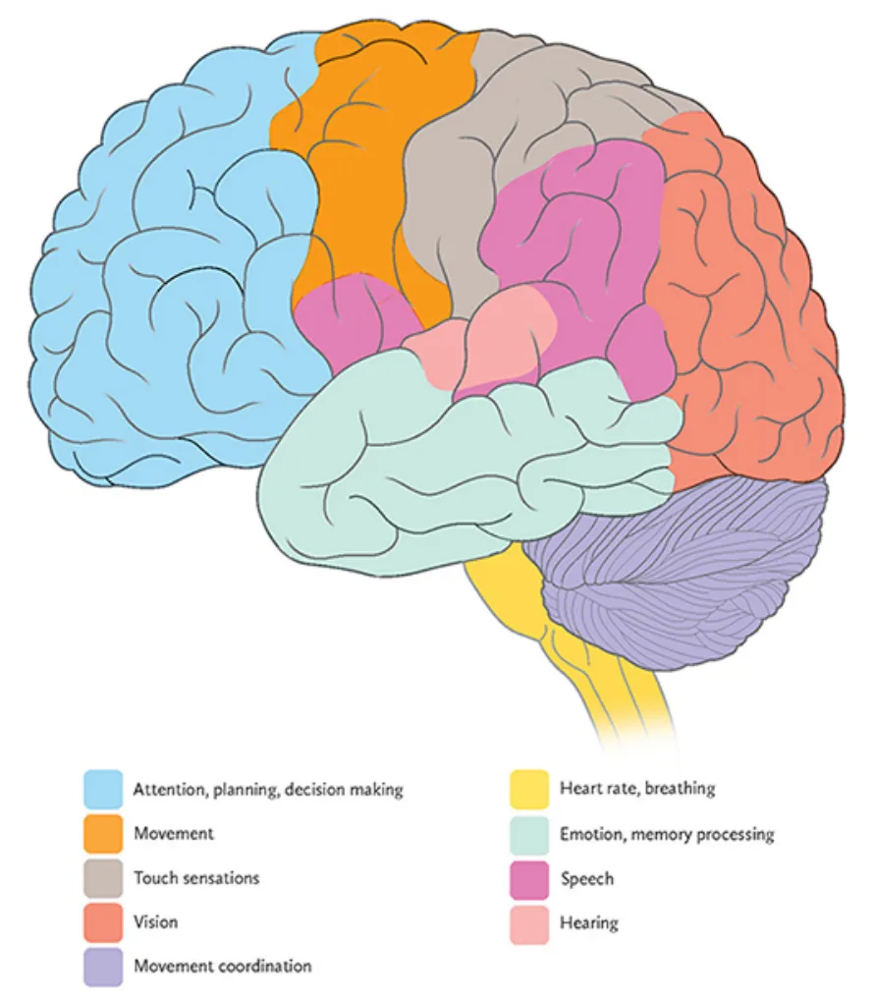
Hình 3.15 Các vùng của não bộ và chức năng của chúng.
TÀI LIỆU THAM KHẢO
Afonso, R.F., Balardin, J.B., Lazar, S., Sato, J., et al., 2017. Greater cortical thickness in elderly female yoga practitioners: a cross-sectional study. Frontiers in Aging Neuroscience, 9, p.201. Annese, J., Schenker-Ahmed, N.M., Bartsch, H., Maechler, P., et al., 2014. Postmortem examination of patient H.M.’s brain based on histological sectioning and digital 3D reconstruction. Nature Communications, 5(1), p.3122.
Chayer, C., & Freedman, M., 2001. Frontal lobe functions. Current Neurology and Neuroscience
Reports, 1(6), pp.547–552. Chow, T.W., 2000. Personality in frontal lobe disorders. Current Psychiatry Reports, 2(5), pp.446–
451. Costandi, M., 2012. Snapshots explore Einstein’s unusual brain. Nature. https://doi.org/10.1038/nature.2012.11836. Devinsky, O., Morrell, M.J., & Vogt, B.A., 1995. Contributions of anterior cingulate cortex to behaviour. Brain, 118(1), pp.279–306. Eichenbaum, H., Yonelinas, A.P., & Ranganath, C., 2007. The medial temporal lobe and recognition memory. Annual Review of Neuroscience, 30(1), pp.123–152. Garcia-Larrea, L., & Mauguière, F., 2018. Pain syndromes and the parietal lobe. Handbook of
Clinical Neurology, 151, pp.207–223. Gothe, N.P., Hayes, J.M., Temali, C., & Damoiseaux, J.S., 2018. Differences in brain structure and function among yoga practitioners and controls. Frontiers in Integrative Neuroscience, 12, p.26. Gotink, R.A., Vernooij, M.W., Ikram, M.A., Niessen, W.J., et al., 2018. Meditation and yoga practice are associated with smaller right amygdala volume: The Rotterdam Study. Brain Imaging and Behavior, 12(6), pp.1631–1639. Grossman, P., & Van Dam, N.T., 2011. Mindfulness, by any other name…: Trials and tribulations of
Sati in western psychology and science. Contemporary Buddhism, 12(1), pp.219–239. Hashimoto, K., Sugiyama, Y., Fuse, S., Umezaki, T., et al., 2018. Activity of swallowing-related neurons in the medulla in the perfused brainstem preparation in rats. The Laryngoscope, 129(2), e72–e79. Herculano-Houzel, S., Avelino-de-Souza, K., Neves, K., Porfírio, J., et al., 2014. The elephant brain in numbers. Frontiers in Neuroanatomy, 8, p.46. Karnath, H.O., 1997. Spatial orientation and the representation of space with parietal lobe lesions.
Philosophical Transactions of the Royal Society of London. Series B: Biological Sciences, 352(1360), pp.1411–1419. Knecht, S., Dräger, B., Deppe, M., Bobe, L., et al., 2000. Handedness and hemispheric language dominance in healthy humans. Brain, 123(12), pp.2512–2518. Lerch, J.P., Pruessner, J.C., Zijdenbos, A., Hampel, H., Teipel, S.J., & Evans, A.C., 2004. Focal decline of cortical thickness in Alzheimer’s disease identified by computational neuroanatomy. Cerebral Cortex, 15(7), pp.995–1001. Modinos, G., Ormel, J., & Aleman, A., 2009. Activation of anterior insula during self-reflection.
PLoS ONE, 4(2), e4618. Olson, I.R., & Berryhill, M., 2009. Some surprising findings on the involvement of the parietal lobe in human memory. Neurobiology of Learning and Memory, 91(2), pp.155–165. Phillips, K.A., Stimpson, C.D., Smaers, J.B., Raghanti, M.A., et al., 2015. The corpus callosum in primates: processing speed of axons and the evolution of hemispheric asymmetry. Proceedings of the Royal Society B: Biological Sciences, 282(1818), p.20151535. Reber, P.J., 2008. Cognitive neuroscience of declarative and nondeclarative memory. Advances in
Psychology, 139, pp.113–123. Sacks, O., 2022. The Man Who Mistook His Wife for a Hat. London: Picador. Seijo-Martinez, M., Varela-Freijanes, A., Grandes, J., & Vázquez, F., 2006. Sneeze related area in the medulla: localisation of the human sneezing centre? Journal of Neurology, Neurosurgery & Psychiatry, 77(4), pp.559–561. Singer, T., Critchley, H.D., & Preuschoff, K., 2009. A common role of insula in feelings, empathy and uncertainty. Trends in Cognitive Sciences, 13(8), pp.334–340.
Squire, L.R., Stark, C.E.L., & Clark, R.E., 2004. The medial temporal lobe. Annual Review of
Neuroscience, 27(1), pp.279–306. Tang, Y.-Y., Lu, Q., Geng, X., Stein, E.A., Yang, Y., & Posner, M.I., 2010. Short-term meditation induces white matter changes in the anterior cingulate. Proceedings of the National Academy of Sciences, 107(35), pp.15649–15652. Tang, Y.-Y., Lu, Q., Feng, H., Tang, R., & Posner, M.I., 2015. Short-term meditation increases blood flow in anterior cingulate cortex and insula. Frontiers in Psychology, 6, p.212. Van Aalst, J., Ceccarini, J., Demyttenaere, K., Sunaert, S., & Van Laere, K., 2020. What has neuroimaging taught us on the neurobiology of yoga? A review. Frontiers in Integrative Neuroscience, 14, p.34. Vestergaard-Poulsen, P., van Beek, M., Skewes, J., Bjarkam, C.R., et al., 2009. Long-term meditation is associated with increased gray matter density in the brain stem. NeuroReport, 20(2), pp.170– 174. Villemure, C., Ceko, M., Cotton, V.A., & Bushnell, M.C., 2013. Insular cortex mediates increased pain tolerance in yoga practitioners. Cerebral Cortex, 24(10), pp.2732–2740. Villemure, C., Ceko, M., Cotton, V.A., & Bushnell, M.C., 2015. Neuroprotective effects of yoga practice: age-, experience-, and frequency-dependent plasticity. Frontiers in Human Neuroscience, 9, p.281. Von Bartheld, C.S., Bahney, J., & Herculano-Houzel, S., 2016. The search for true numbers of neurons and glial cells in the human brain: a review of 150 years of cell counting. Journal of Comparative Neurology, 524(18), pp.3865–3895. Xue, S., Tang, Y.-Y., & Posner, M.I., 2011. Short-term meditation increases network efficiency of the anterior cingulate cortex. NeuroReport, 22(12), pp.570–574.
Chương 4 — Trải nghiệm giác quan của Yoga và Thiền định
CHƯƠNG 4
Trải nghiệm Giác quan của Yoga và Thiền định
Các giác quan là một phần thiết yếu của mọi trải nghiệm yoga và thiền định. Chúng là những cánh cổng giúp cơ thể cảm nhận môi trường bên ngoài. Việc kết hợp các giác quan vào quá trình thực hành có thể làm tăng cường độ của trải nghiệm và tạo nên những ký ức sống động. Chương này cung cấp cái nhìn tổng quan ngắn gọn về từng giác quan và cách chúng đóng vai trò là các cảm biến của não bộ. Kiến thức này có thể giúp làm sâu sắc thêm tác động từ quá trình thực hành của chính bạn (Hình 4.1).
Hình 4.1 Thực hành yoga nhóm trên bãi biển.
Nguồn: Kaylee Garrett trên Unsplash.
THỊ GIÁC
Khi bước vào một phòng tập yoga và nhìn quanh để tìm chỗ, hàng nghìn tín hiệu được gửi từ các tế bào thần kinh trong mắt đến trung tâm thị giác của não bộ – vỏ não thị giác. Những tế bào thần kinh này tiếp tục truyền thông tin trong lúc bạn quan sát người hướng dẫn ở phía trước phòng tập và liếc nhìn cơ thể để đảm bảo tư thế được căn chỉnh chính xác. Chúng ta thường dựa vào đôi mắt khi tập yoga, nhưng thị giác hoạt động như thế nào?
Đôi mắt là bộ phận đầu tiên của cơ thể tiếp nhận và xử lý ánh sáng. Khi ánh sáng đi vào mắt, nó đi qua giác mạc, một lớp màng ngoài trong suốt và có chức năng bảo vệ, giúp hội tụ ánh sáng ban đầu. Sau đó, ánh sáng đi qua thủy tinh thể, bộ phận thực hiện việc hội tụ tinh chỉnh hơn để chiếu ánh sáng lên võng mạc ở phía sau mắt. Mống mắt và đồng tử kiểm soát lượng ánh sáng được phép đi vào phía sau mắt (Hình 4.2).
Võng mạc được bao phủ bởi khoảng 125–150 triệu tế bào thần kinh gọi là tế bào cảm quang, có nhiệm vụ thu thập thông tin về ánh sáng đi vào và chuyển đổi thông tin đó thành tín hiệu điện (Alexiades và Khanal, 2007). Sau đó, các tế bào cảm quang truyền những tín hiệu này đến các tế bào thần kinh khác trong võng mạc.
Hai loại tế bào cảm quang chính được gọi là tế bào hình que và tế bào hình nón. Tế bào hình que nhạy cảm với ánh sáng và giúp chúng ta nhìn thấy vào ban đêm hoặc ở những nơi thiếu sáng, trong khi tế bào hình nón chịu trách nhiệm về thị giác màu sắc và các chi tiết. Có ba loại tế bào hình nón giúp nhận biết các màu đỏ, xanh lục và xanh lam, tương tự như màu sắc của các điểm ảnh trên màn hình tivi hoặc máy tính. Các tế bào hình nón phối hợp với nhau để truyền tải thông tin về mọi màu sắc có thể nhận biết được.
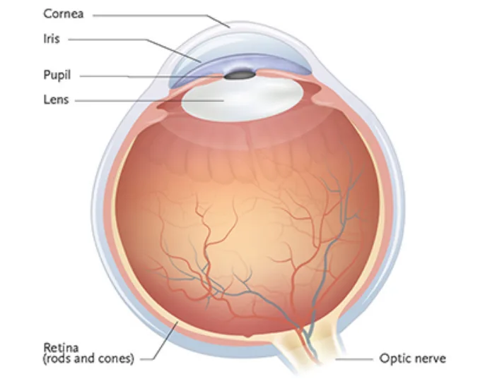
Hình 4.2 Giải phẫu của mắt.
Các tế bào thần kinh trong võng mạc sau đó gửi tín hiệu đến dây thần kinh thị giác, dây thần kinh này dẫn truyền thông tin dọc theo dải thị giác đến vỏ não thị giác ở thùy chẩm. Não bộ không chỉ mã hóa hình dạng, chuyển động và màu sắc; nó còn có thể sử dụng thông tin thị giác này để xây dựng ký ức về các trải nghiệm thị giác của chúng ta. Vỏ não thị giác gửi tín hiệu đến thùy đỉnh để xử lý vị trí (“ở đâu”) của sự vật trong không gian. Nó cũng gửi tín hiệu đến thùy thái dương để xử lý thông tin về đối tượng (“cái gì”), chẳng hạn như đồ vật và khuôn mặt. Quá trình xử lý ở thùy thái dương có mối liên hệ chặt chẽ với các trung tâm trí nhớ, bao gồm cả hồi hải mã.
Mù lòa và suy giảm thị lực Mù lòa và suy giảm thị lực có thể do nhiều yếu tố gây ra, bao gồm di truyền, chấn thương và các thay đổi liên quan đến tuổi tác như đục thủy tinh thể và tăng nhãn áp. Suy giảm thị lực có thể ở mức độ nhẹ, trung bình hoặc nặng, trong đó mù lòa là tình trạng thị lực gần như bằng không hoặc mất thị lực hoàn toàn.
Thị giác không phải là điều kiện bắt buộc để tập yoga. Đối với một số người tập yoga, việc không phụ thuộc vào đôi mắt có thể giúp họ hướng sự chú ý vào bên trong một cách dễ dàng hơn.

Hình 4.3 Tư thế cái cây.
Khi dạy yoga cho những người khiếm thị, thị lực kém hoặc suy giảm thị lực, có một vài điều cần lưu ý. Chẳng hạn, một nghiên cứu về yoga đối với thanh thiếu niên khiếm thị và thị lực kém cho thấy học viên ưa thích sự hướng dẫn trực tiếp bằng tiếp xúc vật lý cho các tư thế asana hơn các chiến lược giảng dạy khác (Mohanty và cộng sự, 2016).
Mẹo giảng dạy cho người khiếm thị hoặc suy giảm thị lực
Sử dụng các chỉ dẫn bằng lời nói mang tính mô tả trong suốt buổi học. Nếu học viên cho phép, hãy hỗ trợ điều chỉnh bằng tiếp xúc vật lý. Hỏi thăm cảm nhận của học viên bằng cách đặt câu hỏi “bạn cảm thấy thế nào?”. Sử dụng dụng cụ hỗ trợ hoặc mùi hương để tăng cường các giác quan khác.
CON MẮT THỨ BA
Nhiều người thực hành và nhà chữa lành tâm linh tin rằng, bên cạnh đôi mắt vật lý, còn có một con mắt thứ ba mang tính biểu tượng nằm ở giữa trán. Mặc dù quan điểm này không dễ dàng tương thích với y học phương Tây, nhưng theo truyền thống yoga, đôi mắt vật lý nhìn ra thế giới bên ngoài, trong khi con mắt thứ ba lại hướng vào bên trong. Ý niệm về con mắt thứ ba tồn tại trong nhiều nền văn hóa và tôn giáo khác nhau, chẳng hạn như tuệ nhãn thường thấy ở nhiều vị thần trong Phật giáo và thần Shiva trong Ấn Độ giáo. Con mắt thứ ba đại diện cho ý thức, tri thức tâm linh và trí tuệ.
Khái niệm về con mắt thứ ba cũng là một phần quan trọng trong hệ thống luân xa, tức bảy xoáy năng lượng phân bố khắp cơ thể (Hình 4.4). Theo truyền thống yoga, luân xa con mắt thứ ba, còn gọi là luân xa ajna, có thể hỗ trợ khả năng hình dung, giao tiếp tâm linh và trực giác. Một số người tin rằng nó có thể thiết lập sự kết nối giữa thế giới bên trong và bên ngoài. Khi luân xa con mắt thứ ba rộng mở và thông suốt, nó có thể mang lại sự sáng suốt và thấu thị. Sự mất cân bằng ở luân xa này được cho là gây ra các vấn đề về mắt hoặc thị lực, cũng như chứng mất ngủ và đau đầu (Jain, 2020).
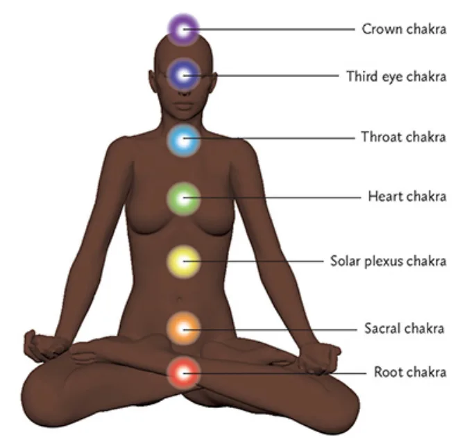
Hình 4.4 Bảy luân xa.
Theo truyền thống yoga, tuyến tùng được coi là thành phần sinh học của con mắt thứ ba. Tuyến tùng là một tuyến nhỏ nằm sâu bên trong não, có chức năng xử lý thông tin về ánh sáng và bóng tối. Do đó, nó hoạt động như một
“con mắt thứ ba” để cảm nhận thế giới. Tuyến tùng nặng chưa đến 0,2 gam và tiết ra serotonin, melatonin cùng N,N-dimethyltryptamine, những chất ảnh hưởng đến cơ thể theo nhiều cách khác nhau (Nichols, 2017; Gheban, Rosca và Crisan, 2019). Tuyến nhỏ này có các tế bào chuyên biệt giúp điều hòa chu kỳ thức – ngủ 24 giờ (gọi là nhịp sinh học) bằng cách tiết ra hormone melatonin (Malpaux và cộng sự, 2001). Melatonin được tiết ra trong khoảng thời gian tối và bị ức chế bởi ánh sáng.

Hình 4.5 Võng mạc, nhân trên chéo của vùng dưới đồi và tuyến tùng.
Khi ánh sáng chiếu vào võng mạc của mắt, thông tin về thị giác được gửi đến một nhóm tế bào thần kinh ở vùng dưới đồi gọi là nhân trên chéo (suprachiasmatic nucleus), vốn là đồng hồ sinh học bên trong cơ thể (Moore, Speh và Leak, 2002). Từ nhân trên chéo, thông tin được gửi đến một nhóm tế bào thần kinh gọi là hạch cổ trên ở vùng cổ trước khi truyền đến tuyến tùng (Moore, 1995) (Hình 4.5).
Tuyến tùng cũng tiết ra N,N-dimethyltryptamine (DMT), một chất gây ảo giác cực mạnh. Một số nhà khoa học thần kinh tin rằng DMT được tiết ra trong trải nghiệm được sinh ra, khi sinh con và ngay trước khi chết (Gheban, Rosca và Crisan, 2019), trong khi các nhà khoa học khác khẳng định rằng lượng DMT do tuyến tùng tiết ra không đủ để tạo ra bất kỳ tác dụng hướng thần nào (Nichols, 2017). Tuy nhiên, việc giải phóng DMT trong não có liên quan đến các trải nghiệm cận tử, nơi mọi người tường thuật lại việc trải qua các hiện tượng siêu nhiên. DMT có thể mở ra một cầu nối khác liên kết khía cạnh sinh lý với tâm linh, nhưng điều này vẫn chưa được khoa học chứng minh.
Những điểm chính cần nhớ
Các tế bào cảm quang trong mắt truyền tín hiệu đến thùy chẩm để cung cấp thông tin thị giác. Các chỉ dẫn bằng lời nói mang tính mô tả và hỗ trợ điều chỉnh bằng tiếp xúc vật lý là những chiến lược giảng dạy hữu ích khi hướng dẫn lớp học cho người suy giảm thị lực. Luân xa con mắt thứ ba có liên quan đến tuyến tùng, cơ quan điều hòa nhịp sinh học.
Các tư thế tập trung vào con mắt thứ ba được cho là có tác dụng đánh thức luân xa con mắt thứ ba. Điều này bao gồm những tư thế chạm trực tiếp vào giữa trán cũng như những tư thế đưa trán chạm sàn để tạo áp lực nhẹ nhàng lên vùng này. Dưới đây là một chuỗi bài tập mẫu gồm các tư thế có thể giúp kích hoạt luân xa ajna nhằm mang lại sự sáng suốt, thấu thị và trí tuệ.
CHUỖI TƯ THẾ YOGA MẪU ĐỂ KÍCH THÍCH LUÂN XA CON MẮT THỨ BA
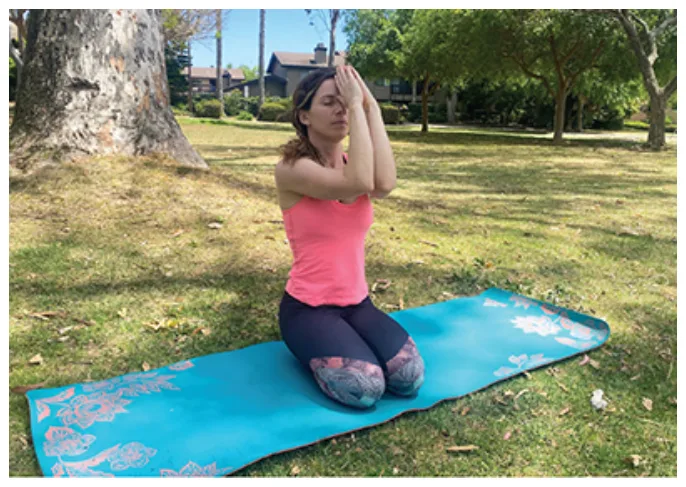
Hình 4.6 Quỳ gối với hai ngón tay cái ấn nhẹ vào con mắt thứ ba.

Hình 4.7 Tư thế em bé.
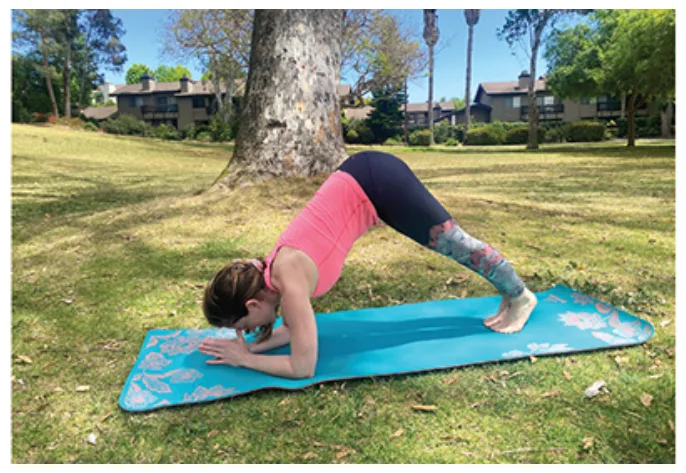
Hình 4.8 Biến thể tư thế cá heo.
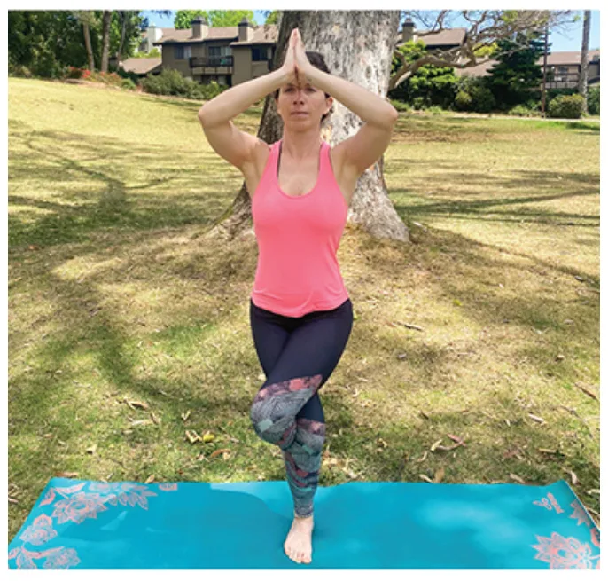
Hình 4.9 Biến thể tư thế đại bàng.

Hình 4.10 Biến thể tư thế đứng bằng cẳng tay.
THÍNH GIÁC
Việc lắng nghe hướng dẫn của giáo viên yoga hoặc nghe tiếng “Om” trong một buổi thiền nhóm là những phần quan trọng của nhiều phương pháp thực hành chiêm nghiệm. Để nghe được âm thanh, não bộ xử lý các sóng âm, vốn được truyền dẫn và khuếch đại qua một chuỗi các màng, chất lỏng và xương.
Chướng ngại đầu tiên mà sóng âm gặp phải là màng nhĩ. Khi sóng âm đập vào màng nhĩ, lớp màng này bắt đầu rung động. Quá trình này chuyển đổi sóng âm thành các rung động. Tai trong chứa ba xương nhỏ gọi là xương búa, xương đe và xương bàn đạp giúp phát hiện những rung động này. Gọi chung lại, ba xương này được biết đến là chuỗi xương con thính giác (Hình 4.11).
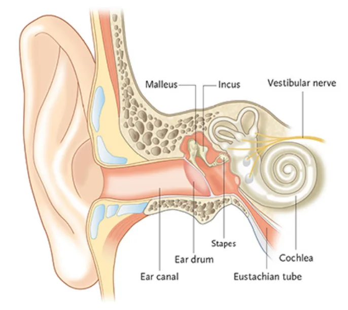
Hình 4.11 Chuỗi xương con thính giác bao gồm xương búa, xương đe và xương bàn đạp.
Suy giảm thính lực, điếc và thiết bị trợ thính Suy giảm thính lực và điếc có thể xảy ra do nhiều nguyên nhân, bao gồm yếu tố di truyền, nhiễm trùng tai trong hoặc chấn thương vùng đầu. Suy giảm thính lực có thể ở mức độ nhẹ, trung bình, nặng hoặc sâu, trong khi điếc thường được định nghĩa là hầu như không nghe thấy hoặc mất thính lực hoàn toàn.
Có lẽ bạn đã từng làm việc với một học viên đeo máy trợ thính hoặc ốc tai điện tử. Máy trợ thính giúp những người suy giảm thính lực bằng cách khuếch đại âm thanh để nghe lớn hơn. Ốc tai điện tử được sử dụng cho những người bị mất thính lực nghiêm trọng. Thiết bị cấy ghép này hoạt động bằng cách đặt một bộ xử lý phía sau tai và một bộ thu bên trong ốc tai ở tai trong. Khi bộ xử lý thu nhận tín hiệu âm thanh, nó gửi tín hiệu đó đến bộ thu, từ đó kích thích dây thần kinh thính giác gửi tín hiệu lên não.
Yoga và thiền định có thể làm giảm các triệu chứng của chứng ù tai, một tình trạng có tiếng kêu trong tai thường đi kèm với suy giảm thính lực, đồng thời cải thiện đời sống hằng ngày của những người điếc và khiếm thính (Curtis và Leppla, 2018; Gunjawate và Ravi, 2021).
Mẹo giảng dạy cho người suy giảm thính lực hoặc điếc
Giúp học viên tìm một vị trí trung tâm trong phòng để họ có thể quan sát trực quan chuyển động của những người khác. Cung cấp các chỉ dẫn bằng hình ảnh bên cạnh chỉ dẫn bằng lời nói trong suốt buổi học. Hướng mặt về phía học viên khi bạn nói để họ có thể đọc khẩu hình miệng. Giữ đèn sáng trong suốt buổi học để việc tiếp nhận chỉ dẫn trực quan và đọc khẩu hình miệng có thể diễn ra thuận lợi.
Các rung động đầu tiên tác động vào xương búa, xương này kết nối với cả màng nhĩ và xương đe. Xương búa chuyển động qua lại nhờ các rung động của màng nhĩ. Hoạt động này làm chuyển động xương đe, từ đó ấn vào xương bàn đạp. Xương bàn đạp đẩy vào ốc tai, tạo ra các làn sóng chất lỏng bên trong ốc tai.
Các tế bào nhỏ, chuyên biệt gọi là tế bào lông sau đó cảm nhận chuyển động của chất lỏng và giải phóng các chất dẫn truyền thần kinh. Các chất dẫn truyền thần kinh phát tín hiệu để các tế bào thần kinh phát xung điện, và thông tin về âm thanh được truyền đến vỏ não thính giác, nằm ở thùy thái dương của não bộ. Sau quá trình xử lý ban đầu này, thông tin được gửi đến các vùng khác của não, chẳng hạn như vỏ não trán, để diễn giải sâu hơn các tín hiệu âm thanh.
Âm nhạc và não bộ Giáo viên yoga thường sử dụng âm nhạc để tạo không khí cho lớp học, và việc nghe nhạc tác động đến não bộ theo những cách phức tạp. Âm nhạc kích hoạt con đường phần thưởng của não bộ, làm giải phóng chất dẫn truyền thần kinh dopamine. Dopamine có thể mang lại cảm giác hưng phấn, đó là lý do tại sao việc nghe nhạc lại mang lại khoái cảm.
Âm nhạc cũng kích hoạt các trung tâm trí nhớ trong não. Các nhà khoa học đã phát hiện ra rằng việc nghe một bài hát yêu thích làm thay đổi sự giao tiếp giữa các vùng não thính giác và hồi hải mã, vùng kết nối ký ức với cảm xúc (Wilkins và cộng sự, 2014). Kết nối não bộ này giúp ta dễ dàng ghi nhớ lời của một bài hát yêu thích.
Liệu pháp âm nhạc và tắm âm thanh Âm thanh đã được sử dụng hàng nghìn năm qua ở nhiều nền văn hóa như một phương thức chữa lành. Liệu pháp âm nhạc được coi là một trong những hình thức chữa lành lâu đời nhất mà chúng ta từng biết (Heather, 2007). Nó có thể mang lại lợi ích cho những người mắc nhiều tình trạng khác nhau, bao gồm trầm cảm (Erkkilä và cộng sự, 2011), lo âu (Gómez Gallego và Gómez García, 2017), các rối loạn thần kinh như bệnh Parkinson (Devlin, Alshaikh và Pantelyat, 2019), tự kỷ (Geretsegger và cộng sự, 2014) và những người đang phục hồi sau chấn thương sọ não (Siponkoski và cộng sự, 2020).
Hình 4.12 Chuông xoay (singing bowls).
Nguồn: Sven Mieke trên Unsplash.
Mặc dù có lịch sử sử dụng lâu đời và nhiều nghiên cứu chứng minh giá trị của nó, bằng chứng giải thích lý do tại sao âm thanh có lợi cho cơ thể vẫn còn hạn chế. Một số nhà nghiên cứu lập luận rằng giọng nói, tiếng trống, âm thoa, chuông xoay hoặc các nhạc cụ khác giúp điều chỉnh và đồng bộ hóa các tần số của cơ thể (Hình 4.12). Các nhà nghiên cứu tại Đại học California, Santa Barbara đã phát triển “lý thuyết cộng hưởng của ý thức”, mô tả cách các rung động đồng bộ tạo ra ý thức thông qua việc các tế bào thần kinh phát xung ở những tần số cụ thể (Hunt, 2018). Khi hai vật thể được đặt gần nhau, chúng sẽ đồng bộ hóa về cùng một tần số trong một quá trình gọi là “tự tổ chức tự phát”. Âm nhạc có thể giúp dịch chuyển những rung động này, mang lại hiệu ứng hài hòa và êm dịu (Heather, 2007). Âm thanh có thể đồng bộ hóa hoạt động phát xung của các tế bào thần kinh bằng cách cung cấp một tần số ổn định (Abhang, Gawali và Mehrotra, 2016; Martinez, 2021). Người thực hành có thể thay đổi tần số và nhịp điệu của âm thanh để chuyển sóng não từ trạng thái dao động beta (tỉnh táo) sang trạng thái alpha (thư giãn) hoặc theta (thiền định) (Martinez, 2021). Tuy nhiên, cần có thêm nhiều nghiên cứu để xác nhận những phát hiện này.
Một loại hình chữa lành bằng âm thanh khác là thiền có hướng dẫn, trong đó giọng nói của người thực hành hoặc giáo viên đóng vai trò là âm thanh. Thiền có hướng dẫn khơi gợi phản ứng thư giãn, đưa cơ thể vào trạng thái bình tĩnh. Nhiều nghiên cứu đã chỉ ra rằng thiền có hướng dẫn thúc đẩy sức khỏe tinh thần, cảm xúc và thể chất (Melville và cộng sự, 2012).
Tụng niệm Tụng niệm đã được sử dụng hàng nghìn năm trên toàn cầu để thúc đẩy sự thư giãn, cảm giác gắn kết cộng đồng và tâm linh. Tụng niệm được xem là một kỹ thuật thiền tập trung sự chú ý, vì người thực hành hướng sự chú ý của mình vào âm thanh (Simpson, Perry và Thompson, 2021). Âm thanh này còn được gọi là mantra (thần chú), và có thể được lặp lại thành tiếng hoặc thầm trong tâm trí.
Mặc dù có tương đối ít nghiên cứu về tác động của việc tụng niệm lên não bộ, các tài liệu khoa học cho thấy tụng niệm có thể giúp giảm căng thẳng cũng như cải thiện các triệu chứng lo âu (Amin và cộng sự, 2016; Rankhambe và Pande, 2021), trầm cảm (Kenny, Bernier và DeMartini, 2005; Amin và cộng sự, 2016) và rối loạn căng thẳng sau sang chấn (Bormann và cộng sự, 2018). Tụng niệm có thể tác động đến hệ thần kinh phó giao cảm bằng cách làm chậm nhịp thở và kích hoạt dây thần kinh phế vị. Một nghiên cứu nhỏ do các nhà nghiên cứu thuộc Quỹ Nghiên cứu và Phòng ngừa Bệnh Alzheimer ở Arizona thực hiện đã phát hiện sự thay đổi lưu lượng máu trong não khi tụng niệm (Khalsa và cộng sự, 2009). Mặc dù đây là nghiên cứu sơ bộ chỉ với 11 người tham gia, các nhà nghiên cứu tin rằng tụng niệm đã làm tăng lưu lượng máu ở chính những vùng não có liên quan đến sự suy thoái trong bệnh Alzheimer. Do đó, tụng niệm có thể mang lại tác dụng bảo vệ thần kinh tại những vùng não này.
Các nhà nghiên cứu từ Đại học Macquarie ở Sydney, Úc đang tích cực tìm hiểu tác động của việc tụng niệm lên cơ thể và tâm trí. Họ phát hiện ra rằng việc tụng “Om” trong 10 phút giúp cải thiện khả năng tập trung, tâm trạng và cảm giác gắn kết xã hội (Perry, Polito và Thompson, 2016). Khi các nhà khoa học so sánh giữa tụng thầm và tụng thành tiếng, họ nhận thấy cả hai phương pháp thực hành đều làm gia tăng cảm giác vị tha.
Gần đây nhất, nhóm các nhà khoa học này đã khám phá ý tưởng sử dụng việc tụng niệm thành tiếng như một biện pháp can thiệp tâm lý xã hội trực tuyến (Simpson, Perry và Thompson, 2021). Mặc dù hầu hết các buổi thực hành tụng niệm diễn ra trong bối cảnh xã hội trực tiếp, nhưng do đại dịch virus corona, nhiều buổi thực hành tụng niệm đã được chuyển sang trực tuyến để tuân thủ các hướng dẫn giãn cách xã hội. Các nhà khoa học muốn biết liệu việc thực hành tụng niệm trực tuyến có mang lại những lợi ích tương tự như thực hành trực tiếp hay không. Họ đã đánh giá tác động của một buổi thực hành tụng niệm trực tuyến kéo dài 10 phút đối với căng thẳng, tâm trạng và sự kết nối.
Hơn 100 người đã tham gia vào nghiên cứu. So với nhóm đối chứng thực hiện nhiệm vụ trực tuyến, nhóm tụng niệm trực tuyến báo cáo mức độ giảm căng thẳng đáng kể và sự cải thiện rõ rệt về tâm trạng. Những người tụng niệm trực tuyến cũng cảm thấy gắn kết với các thành viên khác trong nhóm nhiều hơn so với nhóm đối chứng. Nghiên cứu gợi ý rằng tụng niệm trực tuyến có thể là một lựa chọn dễ tiếp cận để tăng cường sức khỏe tâm thần.
Những điểm chính cần nhớ
Để nghe được âm thanh, não bộ xử lý các sóng âm, vốn được truyền dẫn và khuếch đại qua một chuỗi các màng, chất lỏng và xương. Khi dạy cho người bị suy giảm thính lực, hãy cung cấp các chỉ dẫn bằng hình ảnh và lời nói trong lớp học. Hãy nhớ hướng mặt về phía học viên trong suốt buổi học để họ có thể đọc khẩu hình miệng. Liệu pháp âm thanh và thiền có hướng dẫn thúc đẩy sức khỏe tinh thần, cảm xúc và thể chất. Tụng niệm có thể cải thiện tình trạng căng thẳng, lo âu, khả năng tập trung, tâm trạng và sự kết nối.
KHỨU GIÁC
Khứu giác là một trong những phương thức quan trọng nhất giúp con người tương tác với thế giới, tuy nhiên giác quan này thường bị đánh giá thấp. Nếu không có khứu giác, hương trầm và tinh dầu (Hình 4.13) sẽ trở nên không thể cảm nhận được, và các món ăn như sô-cô-la sẽ trở nên vô vị.
Cách não bộ ngửi mùi Khả năng ngửi mùi dựa vào một quá trình cảm nhận các chất hóa học gọi là cảm nhận hóa học (chemosensation). Bên trong phần sau của mũi là một dải mô chuyên biệt gọi là biểu mô khứu giác, nơi chứa hàng triệu tế bào thần kinh cảm giác được gọi là tế bào thụ thể khứu giác (Hình 4.14). Các tế bào này có những đầu nhỏ gọi là lông chuyển chứa đầy các thụ thể nhô ra khoang mũi để phát hiện mùi hương đi vào qua mũi.
Con người có khứu giác kém không? Có một quan niệm sai lầm phổ biến rằng con người có khứu giác hạn chế khi so sánh với các loài động vật như chó (Yong, 2017). Ý tưởng này bắt nguồn từ nhà khoa học thần kinh thế kỷ 19 Paul Broca, chính là người đã phát hiện ra vùng Broca. Ông cho rằng khứu giác mang tính bản năng động vật (Shulman, 2018). Broca tin chắc rằng con người chỉ có thể phân biệt được 10.000 loại mùi khác nhau; tuy nhiên, các nhà khoa học thần kinh ngày nay tin rằng con người có khả năng phân biệt tới gần một nghìn tỷ loại mùi khác nhau (Bushdid và cộng sự, 2014).

Hình 4.13 Một máy khuếch tán với tinh dầu.

Hình 4.14 Đường dẫn truyền thần kinh của khứu giác.
Khi các tế bào thụ thể khứu giác cảm nhận một chất hóa học, tín hiệu sẽ được gửi đến hành khứu giác, một cấu trúc chuyển tiếp tín hiệu đến các vùng khác của não để xử lý. Hầu hết quá trình xử lý mùi diễn ra tại vỏ não khứu giác, nằm ở thùy thái dương của não bộ.
Một phần của vỏ não khứu giác được gọi là vỏ não hình lê (piriform cortex), giúp nhận diện các nhóm mùi như mùi trái cây hoặc mùi bạc hà (Bao và cộng sự, 2016). Các tín hiệu cũng được gửi đến phần dưới cùng của vỏ não trước trán, tức vỏ não trán ổ mắt, nơi thông tin mùi được tích hợp với thông tin vị giác (Rolls, 2008). Khứu giác được cho là giác quan duy nhất không được xử lý qua đồi thị, trung tâm xử lý chính của não bộ, mặc dù các nghiên cứu vẫn đang được tiếp tục (Courtiol và Wilson, 2015).
Mùi hương và ký ức Thông tin về mùi hương cũng được gửi đến các trung tâm học tập và trí nhớ của não bộ là hồi hải mã và hạch hạnh nhân. Hồi hải mã xử lý ký ức dài hạn, trong khi hạch hạnh nhân xử lý ký ức cảm xúc. Những vùng não này phối hợp để tích hợp thông tin về mùi hương với ký ức, chẳng hạn như nhớ đến người thương khi thoáng ngửi thấy mùi nước hoa của họ hoặc cảm thấy thư giãn khi hít thở hương tinh dầu oải hương vào cuối buổi tập yoga.
Tinh dầu Mùi hương cũng có thể được sử dụng để tăng cường sức khỏe và trạng thái an lạc. Phương pháp sử dụng tinh dầu để mang lại lợi ích trị liệu, gọi là liệu pháp hương thơm (aromatherapy), được ứng dụng trong các cơ sở y tế và phòng tập yoga. Trong lâm sàng, liệu pháp hương thơm có thể làm giảm mức độ lo âu và trầm cảm, cũng như cải thiện các triệu chứng đau mạn tính và tăng cường giấc ngủ (Ali và cộng sự, 2015). Những mùi hương đậm nét này cũng có thể kích hoạt các phản ứng cảm xúc, chẳng hạn như sự thư giãn, khi được sử dụng một cách phù hợp.
Tại phòng tập, tinh dầu có thể được sử dụng theo nhiều cách khác nhau để mang lại lợi ích cho người tập. Có thể nhỏ vài giọt tinh dầu vào máy khuếch tán hoặc pha với nước rồi xịt để đưa hương thơm dịu nhẹ vào không gian phòng tập. Tinh dầu đã pha loãng cũng có thể được thoa trực tiếp lên cổ tay, bàn chân hoặc trán để tạo thêm trải nghiệm về mùi hương (Hình 4.15).

Hình 4.15 Tinh dầu pha loãng được nhỏ vào lòng bàn tay.
Một số loại tinh dầu phổ biến bao gồm:
Tinh dầu oải hương có thể giúp giảm căng thẳng và rối loạn tiêu hóa, giảm lo âu và tình trạng viêm, đồng thời thúc đẩy giấc ngủ. Nó cũng có đặc tính kháng khuẩn và kháng nấm (Ali và cộng sự, 2015). Tinh dầu tràm trà có đặc tính sát trùng tự nhiên. Nó có thể được dùng để làm lành các vết thương nhỏ, mụn trứng cá, nhiễm nấm như nấm da chân và vết côn trùng cắn (Carson và cộng sự, 2006). Tinh dầu bạc hà kích thích hệ thần kinh và tăng cường sự chú ý cũng như khả năng tập trung. Nó cũng được cho là giúp hỗ trợ chứng khó tiêu và làm giảm một số loại đau đầu (Kennedy và cộng sự, 2018). Tinh dầu hương thảo kích thích hệ thần kinh và được sử dụng như một liệu pháp khắc phục tình trạng kiệt sức. Một nghiên cứu cho thấy những con chuột ăn hoặc hít tinh dầu hương thảo trở nên hưng phấn hơn, làm tăng mức độ vận động tổng thể của chúng (Kovar và cộng sự, 1987). Tinh dầu xô thơm (clary sage) được cho là giúp làm dịu căng thẳng và co thắt cơ bắp, đồng thời có thể giảm mụn nhờ điều tiết quá trình sản xuất bã nhờn (Ali và cộng sự, 2015). Nó cũng có đặc tính kháng khuẩn. Tinh dầu khuynh diệp có đặc tính chống oxy hóa, chống viêm và kháng khuẩn (Ali và cộng sự, 2015). Nó có thể hữu ích trong việc điều trị các vết cắt và vết bỏng nhẹ, cùng với chứng đau cơ và khớp.
Lưu ý cho người mua Chất lượng tinh dầu trên thị trường có sự chênh lệch rất lớn vì không có cơ quan quản lý nào chịu trách nhiệm kiểm soát tinh dầu tại Hoa Kỳ. Một số loại tinh dầu có thể nguyên chất, trong khi những loại khác lại chứa các chất phụ gia rẻ tiền. Ví dụ, cụm từ “cấp độ trị liệu” (therapeutic grade) đôi khi được ghi trên nhãn, nhưng việc sử dụng cụm từ này không hề được kiểm soát và chỉ được thêm vào để khuyến khích người mua trả giá cao hơn.
Tinh dầu chất lượng cao ghi rõ sản phẩm là 100% tinh dầu nguyên chất không pha chất độn. Nhãn sản phẩm thường chứa tên tiếng Latin của loài thực vật và nơi thu hoạch. “Dầu hương liệu” (fragrance oil) không phải là tinh dầu nguyên chất mà đã bị pha trộn với các thành phần tổng hợp. Cuối cùng, các loại tinh dầu chất lượng cao thường có giá thành cao hơn so với các nhãn hiệu hàng nhái.
Hình 4.16 Tinh dầu chất lượng cao được mua từ một trang trại oải hương địa phương.
THÊM THÔNG TIN VỀ TINH DẦU Tinh dầu đã được nghiên cứu trong phòng thí nghiệm. Các nhà nghiên cứu tại Đại học Johns Hopkins phát hiện ra rằng tinh dầu từ tép tỏi, cây một dược, lá cỏ xạ hương, vỏ quế, quả tiêu Jamaica và hạt thì là Ai Cập có thể tiêu diệt một số loại vi khuẩn gây bệnh Lyme trong đĩa thí nghiệm (Feng và cộng sự, 2018). Các loại tinh dầu được thử nghiệm hoạt động hiệu quả hơn so với các phương pháp điều trị bằng kháng sinh tiêu chuẩn. Phát hiện này không có nghĩa là nên uống tinh dầu để chữa bệnh Lyme (làm như vậy có thể gây ngộ độc hoặc tử vong), nhưng tinh dầu thực sự có đặc tính kháng khuẩn có khả năng được bào chế theo cách an toàn để giúp điều trị các bệnh lý như bệnh Lyme trong tương lai.
Một nhóm các nhà khoa học khác từ Viện Nghiên cứu Sinh hóa La Plata ở Argentina phát hiện thấy tinh dầu quýt thể hiện hoạt tính chống ung thư bằng cách làm giảm sự phát triển tế bào của các khối u trong phòng thí nghiệm (Manassero và cộng sự, 2013). Các nhà khoa học tin rằng thành phần chính của tinh dầu quýt, được gọi là limonene, một ngày nào đó có thể được sử dụng để điều trị nhiều loại ung thư khác nhau.
Tuy nhiên, các nghiên cứu khác lại không khả quan như vậy. Các nhà khoa học từ Viện Khoa học Sức khỏe Môi trường Quốc gia (NIEHS), một nhánh của Viện Y tế Quốc gia Hoa Kỳ, đã nghiên cứu cách tinh dầu oải hương và tràm trà tác động lên các dòng tế bào người trong phòng thí nghiệm (NIEHS, 2021). Họ phát hiện ra rằng cả hai loại tinh dầu này đều hoạt động như các hóa chất gây rối loạn nội tiết và làm thay đổi hoạt động của hormone. Việc sử dụng ngoài da các loại tinh dầu này có liên quan đến tình trạng phát triển ngực sớm ở bé gái và bé trai trong một chứng bệnh gọi là nữ hóa tuyến vú trước tuổi dậy thì. Các nhà khoa học đưa ra giả thuyết rằng hoạt tính hormone do tinh dầu oải hương và tràm trà thể hiện có thể là nguyên nhân gây ra tình trạng này (Henley và cộng sự, 2007).
Những điểm chính cần nhớ
Cảm nhận hóa học (chemosensation) là khả năng cảm nhận các chất hóa học để tạo ra khứu giác. Mùi hương được tích hợp với ký ức bên trong não bộ. Liệu pháp hương thơm có thể cải thiện tình trạng lo âu, trầm cảm, đau mạn tính và giấc ngủ.
VỊ GIÁC
Vị giác có mối liên hệ nội tại chặt chẽ với khứu giác. Cả hai giác quan đều dựa vào cảm nhận hóa học để nhận biết các chất hóa học ở thế giới bên ngoài. Vị giác có liên quan đến yoga và thiền định bởi vì những món ăn tinh tế, hấp dẫn có thể được đưa vào quá trình thực hành. Theo người Maya cổ đại, sô-cô-la là thức ăn của các vị thần, và yoga, thiền định cùng sô-cô-la kết hợp với nhau khá ăn ý (Spampinato, 2022). Các lớp yoga phục hồi đôi khi kết thúc bằng việc mời học viên thưởng thức một miếng sô-cô-la, và thiền sô-cô-la đã trở nên phổ biến tại một số phòng tập yoga. Thiền sô-cô-la sử dụng các kỹ thuật chánh niệm của Phật giáo để tập trung sự chú ý vào hành động nếm và thưởng thức sô-cô-la. Mục tiêu là hoàn toàn đắm mình vào trải nghiệm để cảm nhận trọn vẹn từng hương vị và cảm giác. Điều này tạo ra một trải nghiệm đa giác quan, giúp đưa người tập trở về với khoảnh khắc hiện tại để cảm thấy tĩnh tại và mãn nguyện.
Bài tập thiền sô-cô-la mẫu Ngồi vào một tư thế thoải mái. Bắt đầu bằng cách cầm một miếng sô-cô-la trên tay. Đưa miếng sô-cô-la lên gần mũi và hít vào hương thơm của nó.
Hãy để mùi hương thấm sâu vào cơ thể bạn. Hãy để mùi hương kích hoạt các tế bào thần kinh khứu giác và gửi tín hiệu lên não. Cẩn thận bẻ một mẩu sô-cô-la và quan sát nó.
Xem xét kỹ lưỡng, chú ý đến kết cấu của nó. Bây giờ, từ từ đưa sô-cô-la vào miệng và đặt lên lưỡi.
Hãy để nó tan chảy. Cảm nhận các hương vị khi chúng bắt đầu kích hoạt các nụ vị giác của bạn. Nếu tâm trí bạn đi lang thang, hãy ghi nhận suy nghĩ đó và quay trở lại với miếng sô-cô-la. Hiện diện trong khoảnh khắc này. Khi sô-cô-la tiếp tục tan chảy, hãy mời gọi cảm giác dễ chịu lan tỏa khắp cơ thể bạn. Khi bạn đã sẵn sàng, hãy nhẹ nhàng nuốt phần sô-cô-la còn lại. Lặp lại với miếng tiếp theo.
Vị giác và não bộ Bề mặt lưỡi được bao phủ bởi rất nhiều nốt nhỏ li ti. Những nốt này, được gọi là nhú lưỡi, chứa các nụ vị giác. Mỗi nụ vị giác có từ 50–150 tế bào thụ thể vị giác chuyên biệt với các cấu trúc nhỏ giống như sợi lông gọi là vi nhung mao, phản ứng với các chất hóa học khác nhau, chẳng hạn như các thực phẩm có vị ngọt, mặn, chua, đắng và umami (vị ngọt thịt/đậm đà, ví dụ như nấm) (Stone và cộng sự, 1995). Các tế bào vị giác “sống” trong khoảng từ một đến ba tuần rồi sau đó tự tái tạo. Một số nụ vị giác có thể bị mất chức năng, nhưng điều này thường là do tổn thương dây thần kinh kết nối với từng nụ vị giác riêng lẻ.
Một khi các nụ vị giác được kích hoạt bởi một chất hóa học, thông tin sẽ được vận chuyển đến ba dây thần kinh sọ chính. Dây đầu tiên là dây thần kinh mặt (dây thần kinh sọ VII), kết nối với hai phần ba phía trước của lưỡi, trong khi dây thần kinh thứ hai, gọi là dây thần kinh thiệt hầu (dây thần kinh sọ IX), kết nối với một phần ba phía sau của lưỡi. Dây thần kinh thứ ba tham gia vào vị giác là dây thần kinh phế vị (dây thần kinh sọ X), giúp dẫn truyền thông tin vị giác từ phần sau của khoang miệng lên não (Hình 4.18).
Lưỡi có bản đồ vị giác hay không? Trước đây, các nhà khoa học từng nghĩ rằng lưỡi có một bản đồ phân chia riêng biệt các nụ vị giác, và mỗi vùng chỉ có thể nhận biết các vị khác nhau. Nghiên cứu đã chỉ ra rằng một số vùng trên lưỡi có các nụ vị giác nhạy cảm hơn các vùng khác, nhưng tất cả các vùng của lưỡi đều có nụ vị giác cho mọi hương vị (Collings, 1974). Thực tế, lưỡi có từ 5.000 đến 10.000 nụ vị giác cùng hoạt động hài hòa để cảm nhận các vị ngọt, mặn, chua, đắng và umami.
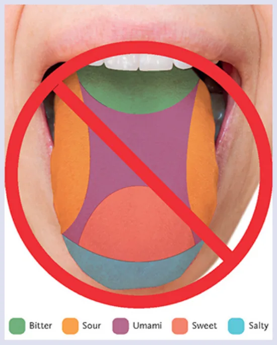
Hình 4.17 Các nhà khoa học trước đây từng tin rằng các vùng nhất định trên lưỡi nếm các hương vị khác nhau, nhưng điều này đã được chứng minh là không chính xác.
Các dây thần kinh sọ VII, IX và X mang thông tin về vị giác đến một vùng của thân não gọi là nhân đơn độc. Nhóm tế bào thần kinh này nằm ở hành não và đóng vai trò như một trạm chuyển tiếp thông tin vị giác. Thông tin vị giác sau đó được gửi tiếp đến đồi thị để xử lý thêm trước khi đi tới vỏ não vị giác. Vỏ não vị giác phân biệt và ghi nhớ các hương vị khác nhau (Rosenblum, Meiri và Dudai, 1993). Tương tự như các giác quan khác, thông tin vị giác kết nối với hồi hải mã và hạch hạnh nhân để tạo nên ký ức về sở thích hương vị.
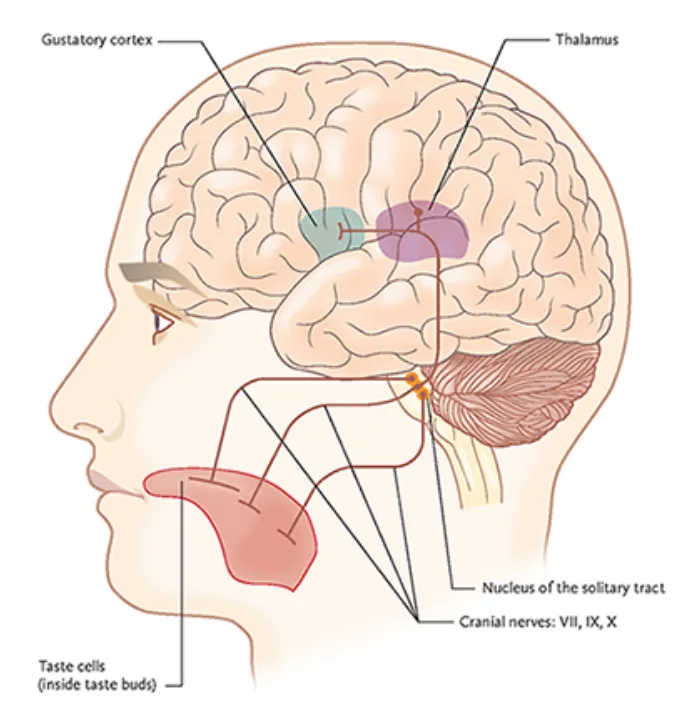
Hình 4.18 Cách các tín hiệu về vị giác được truyền từ các nụ vị giác đến vỏ não vị giác trong não bộ.
Người siêu vị giác (supertaster) là gì? Người siêu vị giác là những người sinh ra đã có nhiều nụ vị giác hơn người bình thường. Một số người có số lượng nụ vị giác nhiều gấp đôi! Người siêu vị giác thường nhạy cảm hơn với các vị đắng, chẳng hạn như cà phê hoặc bưởi. Người ta ước tính rằng khoảng 25 phần trăm dân số là người siêu vị giác (Bartoshuk và cộng sự, 1998). Người siêu vị giác thường có xu hướng tránh các thực phẩm giàu chất béo, muối và đường do cảm nhận mùi vị quá mạnh, vì vậy họ thường có nguy cơ mắc bệnh tim mạch thấp hơn so với người có vị giác bình thường nhờ chế độ ăn uống lành mạnh hơn (El-Sohemy và cộng sự, 2007).
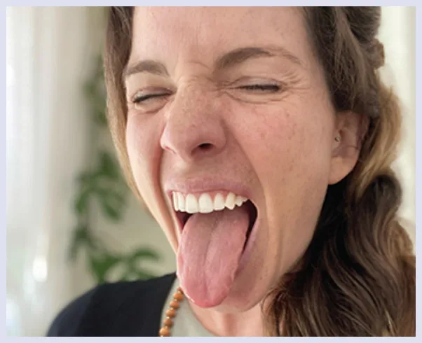
Hình 4.19 Người bình thường có từ 5.000 đến 10.000 nụ vị giác trong khi người siêu vị giác có thể có số lượng nhiều gấp đôi!
Những điểm chính cần nhớ
Thiền sô-cô-la sử dụng các kỹ thuật chánh niệm của Phật giáo để tập trung sự chú ý vào hành động nếm và thưởng thức sô-cô-la. Tất cả các vùng của lưỡi đều có nụ vị giác cho mọi hương vị. Người siêu vị giác là những người sinh ra đã có nhiều nụ vị giác hơn người bình thường.
XÚC GIÁC
Trong yoga, chúng ta chạm vào thảm tập, giữ lấy gạch tập và chắp hai lòng bàn tay vào nhau ở tư thế cầu nguyện. Xúc giác là khả năng cảm nhận kết cấu, độ rung, áp lực và nhiệt độ. Để tiếp nhận các tín hiệu xúc giác vật lý, não bộ dựa vào các thụ thể gọi là thụ thể cơ học nằm trong da và khớp. Khi cơ thể chạm vào một vật thể, áp lực hoặc sự biến dạng của da sẽ kích hoạt các thụ thể cơ học. Có bốn nhóm thụ thể cơ học chính, mỗi nhóm đều chuyên biệt hóa cho một cảm giác hơi khác nhau.
Bốn nhóm thụ thể cơ học chính
Tiểu thể Meissner nằm ngay dưới bề mặt da. Chúng phản ứng với các tiếp xúc nhẹ nhàng và độ rung. Những thụ thể nhạy cảm này giúp não bộ giải mã các tiếp xúc tinh tế, chẳng hạn như cảm giác lông chó lướt nhẹ qua khi chúng chạy ngang qua. Đầu tận cùng Ruffini nằm sâu hơn trong da và trong mô liên kết của cơ thể. Chúng phản ứng khi da bị kéo căng và khi có sự thay đổi góc độ ở các khớp. Đầu tận cùng thần kinh Merkel phát hiện áp lực liên tục, giống như khi bàn tay bạn ấn xuống thảm yoga trong tư thế chó úp mặt. Tiểu thể Pacinian là các thụ thể cực kỳ nhạy cảm phản ứng với độ rung. Các nhà khoa học tin rằng chúng có thể giúp não bộ phân biệt những thay đổi về kết cấu bề mặt.
Cảm giác xúc giác và não bộ Các thụ thể cơ học kích hoạt một chuỗi tín hiệu được gửi qua tủy sống đến vỏ não cảm giác thân thể trong não bộ. Trên đường lên não, các tín hiệu bắt chéo đường giữa tại tủy sống hoặc thân não. Do đó, các đường dẫn truyền xúc giác bắt nguồn từ nửa bên trái cơ thể sẽ được xử lý ở bán cầu não phải. Vì vậy, thông tin cảm giác về việc tay trái chạm vào viên gạch tập yoga đang được xử lý bởi bán cầu não phải (Hình 4.20).

Hình 4.20 Tư thế con quạ nghiêng sử dụng gạch tập.
Trạm dừng chân đầu tiên trong não đối với thông tin cảm giác được truyền đến này là đồi thị, trạm chuyển tiếp của não bộ. Sau đó, đồi thị chuyển các thông tin liên quan đến vỏ não cảm giác thân thể, nằm ở thùy đỉnh, để cảm nhận cảm giác chạm (Blumenrath, 2020). Vỏ não cảm giác thân thể chứa một bản đồ định khu tương ứng với các vùng cảm giác của cơ thể. Bản đồ này dành nhiều diện tích não hơn cho những bộ phận cơ thể nhạy cảm nhất và chứa nhiều thụ thể nhất, chẳng hạn như các ngón tay và môi (Blumenrath, 2020). Hình 4.21 là biểu đồ mô tả tỷ lệ diện tích vỏ não cảm giác thân thể được phân bổ cho từng bộ phận của cơ thể, gọi là hình nhân cảm giác (sensory homunculus).

Hình 4.21 Hình nhân cảm giác.
Não bộ xử lý thế nào khi có quá nhiều tín hiệu? Các nhà khoa học phát hiện ra rằng sự vận động hiệu quả đòi hỏi việc lọc bỏ những tín hiệu xúc giác ít quan trọng hơn (Conner và cộng sự, 2021). Ví dụ, khi tập yoga, chúng ta ngồi trên thảm, trong khi cơ thể tiếp xúc với quần áo, và tay chúng ta với lấy chai nước. Não bộ nhận được vô số tín hiệu từ các thụ thể xúc giác về cách cơ thể đang tương tác với môi trường. Hầu hết những tín hiệu này không quan trọng, vì vậy não bộ sẽ lọc bỏ phần nhiễu đó.
Khi nghiên cứu não chuột, các nhà nghiên cứu phát hiện ra rằng các tế bào thần kinh ở một vùng nhỏ của thân não gọi là nhân chêm (cuneate nucleus) kiểm soát lượng thông tin được truyền tiếp đến các vùng khác của não (Conner và cộng sự, 2021).
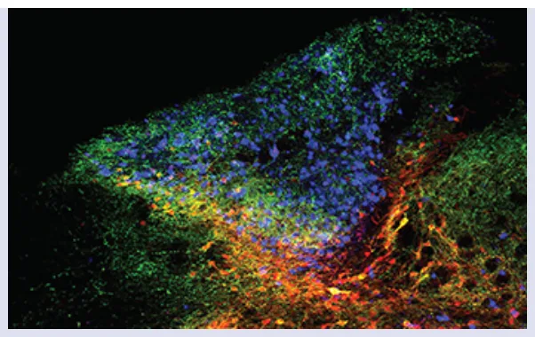
Hình 4.22 Các tế bào thần kinh (màu đỏ) trong thân não với các sợi trục (màu xanh lục) phóng chiếu tới các tế bào nhân chêm (màu xanh lam) để truyền tải thông tin xúc giác. Mạch thần kinh này điều tiết thông tin do các thụ thể xúc giác ở bàn tay truyền tải khi đi vào não.
Nguồn: Hình ảnh do Viện Salk cung cấp.
Những điểm chính cần nhớ
Các thụ thể cơ học được kích hoạt khi cơ thể chạm vào một vật thể. Bốn loại thụ thể cơ học chính bao gồm: tiểu thể Meissner, đầu tận cùng Ruffini, đầu tận cùng thần kinh Merkel và tiểu thể Pacinian. Các đường dẫn truyền thần kinh của xúc giác bắt chéo tại đường giữa, vì vậy các đường dẫn truyền bắt nguồn từ nửa bên trái cơ thể được xử lý ở bán cầu não phải. Hình nhân cảm giác là biểu đồ mô tả tỷ lệ diện tích vỏ não cảm giác thân thể được phân bổ cho từng bộ phận của cơ thể.
Trong chương này, chúng ta đã xem xét cách các giác quan cung cấp thông tin cho não bộ và cách chúng thường được lồng ghép vào việc thực hành yoga để nâng cao trải nghiệm một cách lâu bền. Xuyên suốt chương này, chúng ta đã thảo luận về cách yoga kết hợp các giác quan và tìm hiểu cơ chế hoạt động của từng giác quan. Bài thiền sau đây kết hợp thị giác, thính giác, khứu giác và xúc giác thành một bài tập thực hành cho các giác quan. Bạn cũng có thể thưởng thức một miếng sô-cô-la vào cuối bài tập để đưa thêm vị giác vào trải nghiệm.
Bài tập thiền cho các giác quan mẫu Bắt đầu bằng cách ngồi vào một tư thế thoải mái. Đặt hai tay lên đùi với lòng bàn tay ngửa hoặc úp.
Bắt đầu cảm nhận cơ thể bạn đang như thế nào trong tư thế này.
Chú ý đến phần hông và điểm tựa của bạn trên sàn nhà hoặc trên ghế.
Và cảm nhận bàn tay đang chạm vào đùi. Bây giờ, hãy hướng sự chú ý đến những âm thanh xung quanh bạn. Tinh chỉnh thính giác để bạn có thể tập trung vào những âm thanh ở xa. Bạn có nghe thấy tiếng chim hót bên ngoài hay thậm chí tiếng máy bay không? Hãy đưa sự chú ý trở về những âm thanh ngay gần xung quanh bạn.
Bạn có nghe thấy hơi thở đi vào và đi ra khỏi cơ thể không? Bạn có nghe thấy tiếng sột soạt của quần áo khi cơ thể chuyển động theo từng nhịp thở không? Bạn có nghe thấy những âm thanh bên trong cơ thể, chẳng hạn như tiếng sôi bụng không? Bây giờ, hãy hướng sự chú ý đến khứu giác của bạn.
Bạn ngửi thấy mùi gì xung quanh mình? Có hương tinh dầu nào đang thoang thoảng trong không khí không? Hãy bắt đầu nhận thấy hệ thần kinh của bạn trở nên linh hoạt hơn khi bạn tìm kiếm các mùi hương. Cho phép bản thân nhận thức rõ hơn về những mùi hương đang lan tỏa trong buổi tập của bạn. Bây giờ, hãy hướng sự chú ý đến thị giác của bạn. Nếu mắt bạn đang nhắm, bạn có thể mở mắt ra ngay lúc này.
Không xoay đầu, hãy đưa mắt nhìn quanh căn phòng.
Quan sát không gian rộng mở. Và chú ý đến những đồ vật, nếu có, đang hiện diện trong không gian đó. Nhận thức rõ về màu sắc và kết cấu của mọi thứ xung quanh bạn.
Tập trung vào các chi tiết. Và mang chính sự tập trung đó trở về không gian ngay sát xung quanh bạn.
Cảm nhận cách cơ thể bạn đang chiếm giữ một vị trí trong không gian này. Cho phép đôi mắt khép lại nếu điều đó khiến bạn thoải mái. Quan sát tâm trí và để cho những suy nghĩ tự nhiên đến rồi đi.
Chỉ đơn giản ghi nhận chúng và để chúng trôi qua. Khi bạn tiếp tục các hoạt động trong suốt cả ngày, hãy nghĩ về cách tất cả các giác quan của bạn đang cùng vận hành. Cố gắng duy trì một nhận thức sắc bén về thế giới để thực sự cảm nhận những gì đang diễn ra xung quanh bạn. Bạn chỉ có một cuộc đời để sống, vì vậy bạn hẳn không muốn bỏ lỡ bất cứ điều gì.
Phỏng theo: A Meditation for Exploring Your Senses (Thiền khám phá các giác quan của bạn) của tác giả Cara
Bradley. Nguồn: https://www.mindful.org/a-meditation-for
exploring-your-senses
TÀI LIỆU THAM KHẢO
Abhang, P.A., Gawali, B.W., & Mehrotra, S.C., 2016. Introduction to EEG- and Speech-Based
Emotion Recognition. Amsterdam: Elsevier. Alexiades, V., & Khanal, H., 2007. Multiphoton response of retinal rod photoreceptors. Sixth
Mississippi State Conference on Differential Equations and Computational Simulations. Electronic Journal of Differential Equations, Conference 15, pp.1–9. Ali, B., Al-Wabel, N.A., Shams, S., Ahamad, A., Khan, S.A., & Anwar, F., 2015. Essential oils used in aromatherapy: a systemic review. Asian Pacific Journal of Tropical Biomedicine, 5(8), pp.601– 611. Amin, A. Kumar, S.S., Rajagopalan, A., Rajan, S., Mishra, S., & Reddy, U.K., 2016. Beneficial effects of OM chanting on depression, anxiety, stress and cognition in elderly women with hypertension. Indian Journal of Clinical Anatomy and Physiology, 3(3), p.253. Bao, X., Raguet L.L.G., Cole, S.M., Howard, J.D., & Gottfried, J.A., 2016. The role of piriform associative connections in odor categorization. eLife, 5, e13732. Bartoshuk, L., Duffy, V.B., Lucchina, L.A., Prutkin, J., & Fast, K., 1998. PROP (6-n propylthiouracil) supertasters and the saltiness of NaCl. Annals of the New York Academy of Sciences, 855, pp.793–796. Blumenrath, S., 2020. The neuroscience of touch and pain. BrainFacts.org. Available at:
https://www.brainfacts.org/thinking-sensing-and-behaving/touch/2020/the-neuroscience-oftouch-and-pain-013020 Bormann, J.E., Thorp, S.R., Smith, E., Glickman, M., et al., 2018. Individual treatment of posttraumatic stress disorder using mantram repetition: a randomized clinical trial. American Journal of Psychiatry, 175(10), pp.979–988.
Bushdid, C., Magnasco, M.O., Vosshall, L.B., & Keller, A., 2014. Humans can discriminate more than 1 trillion olfactory stimuli. Science, 343(6177), pp.1370–1372. Carson, C.F., Hammer, K.A., & Riley, T.V., 2006. Melaleuca alternifolia (Tea Tree) oil: a review of antimicrobial and other medicinal properties. Clinical Microbiology Review, 1;19(1), pp.50–62. Collings, V.B., 1974. Human taste response as a function of locus of stimulation on the tongue and soft palate. Perception and Psychophysics 16, 169–174. Conner, J.M., Bohannon, A., Igarashi, M., Taniguchi, J., Baltar, N., & Azim, E., 2021. Modulation of tactile feedback for the execution of dexterous movement. Science, 374(6565), pp.316–323. Courtiol, E., & Wilson, D.A., 2015. The olfactory thalamus: unanswered questions about the role of the mediodorsal thalamic nucleus in olfaction. Frontiers in Neural Circuits, 9, p.49. Curtis, S., & Leppla, L., 2018. Instrumental activities of daily living changes in deaf and hard-of hearing individuals after an 8-week yoga intervention. The American Journal of Occupational Therapy, 72(4 Supplement 1). Devlin, K., Alshaikh, J.T., & Pantelyat, A., 2019. Music therapy and music-based interventions for movement disorders. Current Neurology and Neuroscience Reports, 19(11), p.83. El-Sohemy, A., Stewart, L., Khataan, L., Fontaine-Bisson, B., et al., 2007. Nutrigenomics of taste – impact on food preferences and food production. Forum of Nutrition, 60, pp.176–182. Erkkilä, J., Punkanen, M., Fachner, J., Ala-Ruona, E., et al., 2011. Individual music therapy for depression: randomised controlled trial. British Journal of Psychiatry, 199(2), pp.132–139. Feng, J., Shi, W., Miklossy, J., Tauxe, G.M., McMeniman, C.J., & Zhang, Y., 2018. Identification of essential oils with strong activity against stationary phase Borrelia burgdorferi. Antibiotics, 7(4), p.89. Geretsegger, M., Elefant, C., Mössler, K.A., & Gold, C., 2014. Music therapy for people with autism spectrum disorder. Cochrane Database of Systematic Reviews, CD004381. Gheban, B.A., Rosca, I.A., & Crisan, M., 2019. The morphological and functional characteristics of the pineal gland. Medicine and Pharmacy Reports, 92(3), pp.226–234. Gómez Gallego, M., & Gómez García, J., 2017. Musicoterapia en la enfermedad de Alzheimer:
efectos cognitivos, psicológicos y conductuales. Neurología, 32(5), pp.300–308. Gunjawate, D.R., & Ravi, R., 2021. Effect of yoga and meditation on tinnitus: a systematic review.
The Journal of Laryngology & Otology, 135(4), pp.284–287. Heather, S., 2007. What is sound healing? The International Journal of Healing and Caring, 7(3). Henley, D.V., Lipson, N., Korach, K.S., & Bloch, C.A., 2007. Prepubertal gynecomastia linked to lavender and tea tree oils. New England Journal of Medicine, 356(5), pp.479–485. Hunt, T., 2018. The hippies were right: it’s all about vibrations, man! Scientific American Blog
Network. Available at: https://blogs.scientificamerican.com/observations/the-hippies-were-rightits-all-about-vibrations-man Jain, R., 2020. Ajna chakra: your third-eye chakra awakening. Arhanta Yoga Blog. Available at:
https://www.arhantayoga.org/blog/ajna-chakra-your-third-eye-chakra-awakening Kennedy, D., Okello, E., Chazot, P., Howes, M.J., et al., 2018. Volatile terpenes and brain function:
Investigation of the cognitive and mood effects of Mentha × Piperita L. essential oil with in vitro properties relevant to central nervous system function. Nutrients, 7;10(8): pp.1029. Kenny, M., Bernier, R., & DeMartini, C., 2005. Chant and be happy: the effects of chanting on respiratory function and general well-being in individuals diagnosed with depression. International Journal of Yoga Therapy, 15(1), pp.61–64. Khalsa, D.S., Amen, D., Hanks, C., Money, N., & Newberg, A., 2009. Cerebral blood flow changes during chanting meditation. Nuclear Medicine Communications, 30(12), pp.956–961. Kovar, K., Gropper, B., Friess, D., & Ammon, H.P., 1987. Blood levels of 1,8-cineole and locomotor activity of mice after inhalation and oral administration of rosemary oil. Planta Medica, 53(04), pp.315–318. Malpaux, B., Migaud, M., Tricoire, H., & Chemineau, P., 2001. Biology of mammalian photoperiodism and the critical role of the pineal gland and melatonin. Journal of Biological Rhythms, 16(4), pp.336–347. Manassero, C.A., Girotti, J.R., Mijailovsky, S., García de Bravo, M., & Polo, M., 2013. In vitro comparative analysis of antiproliferative activity of essential oil from mandarin peel and its principal component limonene. Natural Product Research, 27(16), pp.1475–1478. Martinez, N., 2021. What you need to know about sound healing. Mind Body Green. Available at:
https://www.mindbodygreen.com/0-17515/what-you-need-to-know-about-sound-healing.html Melville, G.W., Chang, D., Colagiuri, B., Marshall, P.W., & Cheema, B.S., 2012. Fifteen minutes of chair-based yoga postures or guided meditation performed in the office can elicit a relaxation response. Evidence-Based Complementary and Alternative Medicine, 2012, 501986. Mohanty, S., Hankey, A., Pradhan, B., & Ranjita, R., 2016. Yoga-teaching protocol adapted for children with visual impairment. International Journal of Yoga, 9(2), p.114. Moore, R.Y., 1995. Neural control of the pineal gland. Behavioural Brain Research, 73(1–2), pp.125–130. Moore, R.Y., Speh, J.C., & Leak, R.K., 2002. Suprachiasmatic nucleus organization. Cell and Tissue
Research, 309(1), pp.89–98. National Institute of Environmental Health Services (NIEHS), 2021. Essential oils. Available at:
https://www.niehs.nih.gov/health/topics/agents/essential-oils/index.cfm Nichols, D.E., 2017. N,N-dimethyltryptamine and the pineal gland: separating fact from myth.
Journal of Psychopharmacology, 32(1), pp.30–36. Perry, G., Polito, V., & Thompson, W., 2016. Chanting meditation improves mood and social cohesion. Proceedings of the 14th International Conference on Music Perception and Cognition. Rankhambe, H., & Pande, S., 2021. Effect of “om” chanting on anxiety in bus drivers. National
Journal of Physiology, Pharmacy and Pharmacology, 11(2), p.1. Rolls, E., 2008. Functions of the orbitofrontal and pregenual cingulate cortex in taste, olfaction, appetite and emotion. Acta Physiologica Hungarica, 95(2), pp.131–164. Rosenblum, K., Meiri, N., & Dudai, Y., 1993. Taste memory: the role of protein synthesis in gustatory cortex. Behavioral and Neural Biology, 59(1), pp.49–56. Shulman, R., 2018. The basest of the senses: medical unease with the sense of smell. Hektoen
International: A Journal of Medical Humanities, 10(2). Simpson, F.M., Perry, G., & Thompson, W.F., 2021. Assessing vocal chanting as an online psychosocial intervention. Frontiers in Psychology, 12, 647632. Siponkoski, S.T., Martínez-Molina, N., Kuusela, L., Laitinen, S., et al., 2020. Music therapy enhances executive functions and prefrontal structural neuroplasticity after traumatic brain injury: evidence from a randomized controlled trial. Journal of Neurotrauma, 37(4), pp.618–634. Spampinato, C., 2022. Chocolate: food of the Gods. Available at: https://carnegiemuseums.org/magazine-archive/1997/janfeb/dept6.htm Stone, L.M., Finger, T.E., Tam, P.P., & Tan, S.S., 1995. Taste receptor cells arise from local epithelium, not neurogenic ectoderm. Proceedings of the National Academy of Sciences, 92(6), pp.1916–1920. Wilkins, R.W., Hodges, D.A., Laurienti, P.J., Steen, M., & Burdette, J.H., 2014. Network science and the effects of music preference on functional brain connectivity: From Beethoven to Eminem. Scientific Reports, 4, 6130. Yong, E., 2017. The myth that humans have poor smell is nonscents. Available at:
https://www.theatlantic.com/science/archive/2017/05/alls-smell-that-ends-smell/526317/
Chương 5 — Nguồn gốc của vận động
CHƯƠNG 5
Nguồn gốc của Vận động
Yoga đòi hỏi những chuyển động có chủ đích để đi vào và giữ các tư thế khác nhau. Chương này sẽ khám phá cách hệ thần kinh và cơ bắp phối hợp với nhau để điều phối những chuyển động phức tạp. Hiểu biết cơ bản về cách cơ thể tham gia vào quá trình vận động sẽ nâng cao kiến thức của chúng ta về thực hành yoga cũng như khả năng cải thiện sức khỏe và sự an lạc thông qua các phương pháp thực hành chiêm nghiệm này.
PHẦN I VẬN ĐỘNG TỰ Ý: CÁCH NÃO BỘ KIỂM SOÁT CHUYỂN ĐỘNG
Các nhà khoa học đã nỗ lực giải mã cách hệ thần kinh tạo ra chuyển động trong suốt 150 năm qua (Schwartz, 2016). Ngay cả những chuyển động đơn giản như giơ hai tay qua đầu cũng đòi hỏi một bộ não phối hợp hoàn toàn đồng bộ. Hệ thần kinh đồng bộ hóa trình tự, lực, góc độ, hướng và tốc độ của từng cơ tham gia vào chuyển động.
Các hành động có chủ đích, chẳng hạn như nhấc cánh tay, được khởi phát tại thùy trán của não bộ (Hình 5.1). Một phần của thùy trán gọi là vỏ não vận động giúp lập kế hoạch, kiểm soát và thực hiện những chuyển động này. Vỏ não vận động bao gồm ba vùng chính: vỏ não vận động sơ cấp, vỏ não tiền vận động và vùng vận động bổ sung. Mỗi vùng có một vai trò riêng biệt trong việc định hướng vận động tự ý (Hình 5.2).
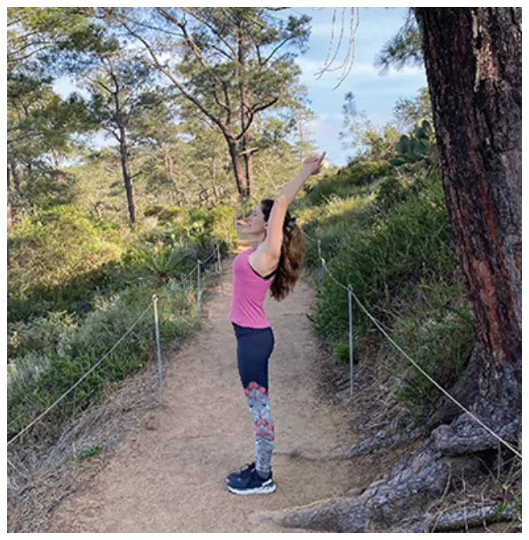
Hình 5.1 Biến thể tư thế Trái núi.
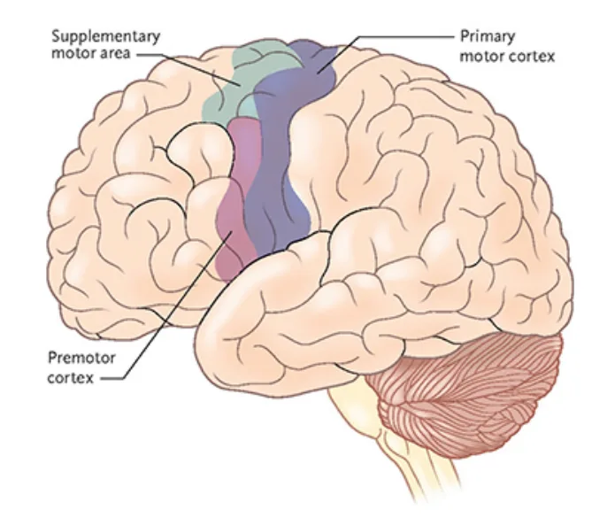
Hình 5.2 Các vùng não chính tham gia vào quá trình vận động.
Vỏ não vận động sơ cấp là vùng não chính tham gia kiểm soát và thực hiện các vận động tự ý (Sanes và Donoghue, 2000). Vùng này chịu trách nhiệm tạo ra các xung thần kinh kích hoạt cơ bắp để vận động. Nó cũng chứa một bản đồ phân bố không gian của các bộ phận cơ thể tham gia vận động, được gọi là “bản đồ vận động” hay hình nhân vận động (motor homunculus) (Hình 5.3). Một số bộ phận trên cơ thể, chẳng hạn như lưỡi và môi, chiếm nhiều diện tích đại diện hơn trong não vì chúng thực hiện các chuyển động tinh vi để nói và ăn.
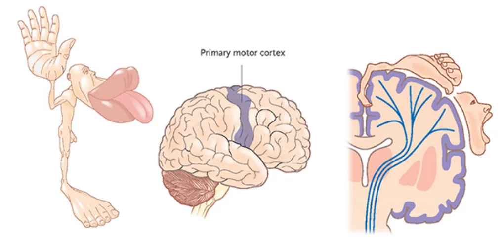
Hình 5.3 Hình nhân vận động.
Bàn tay cũng cần diện tích đại diện lớn hơn trong não để hoạt động hiệu quả (Hình 5.4). Các vi chuyển động ở cơ ngón tay giúp ổn định cơ thể trong các tư thế như Chó úp mặt và tư thế Con quạ. Các cơ khác, chẳng hạn như cơ lõi (core), cũng hỗ trợ ổn định cơ thể, nhưng chúng chỉ giới hạn ở những chuyển động ít tinh chỉnh khắt khe hơn và do đó chiếm ít diện tích đại diện hơn trong vỏ não vận động sơ cấp. Hãy nghĩ theo cách này: có hơn 30 cơ cấu tạo nên bàn tay, trong khi chỉ có năm cơ bụng chính. Bộ não cần nhiều không gian hơn cho các kết nối thần kinh này để điều khiển các cơ bàn tay!
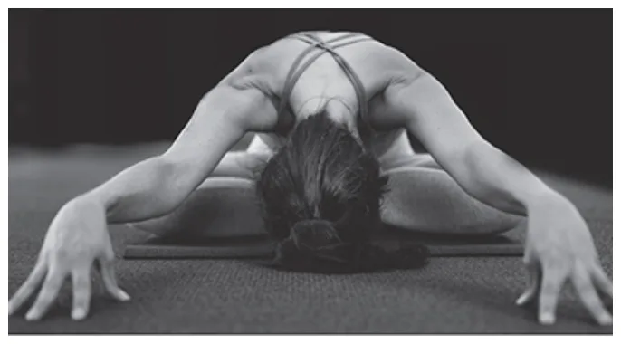
Hình 5.4 Bàn tay chiếm rất nhiều diện tích đại diện trong vỏ não vận động sơ cấp vì chúng liên quan đến nhiều cơ để tạo ra nhiều loại chuyển động phức tạp.
Nguồn: Conscious Design trên Unsplash.
Các tuyến đường thông tin cho vận động
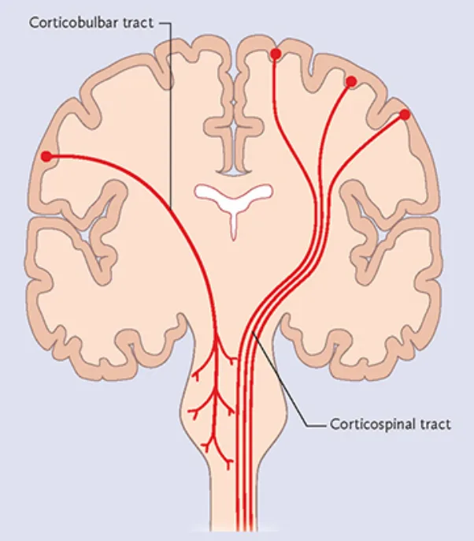
Hình 5.5 Bó vỏ - hành và bó vỏ - tủy.
Các tín hiệu truyền từ vỏ não vận động sơ cấp đi dọc theo một trong hai tuyến đường thông tin: bó vỏ - tủy (corticospinal tract) hoặc bó vỏ - hành (corticobulbar tract). Bó vỏ - tủy mang tín hiệu từ não đến tủy sống để truyền thông tin về chuyển động của cơ thể, trong khi bó vỏ - hành gửi thông tin đến thân não liên quan đến chuyển động của đầu, cổ và cơ thể (The Brain from Top to Bottom, 2022).
Các sợi trục trong bó vỏ - tủy bắt chéo qua đường giữa cơ thể tại hành não trong thân não và tiếp tục đi xuống tủy sống. Do đó, bán cầu não phải nhìn chung chịu trách nhiệm cho chuyển động ở bên trái cơ thể và ngược lại.
Sự thật thú vị: Hươu cao cổ có các sợi trục trong bó vỏ - tủy THẬT SỰ rất dài. Thực tế, chúng có thể dễ dàng đạt tới 2,6 mét (8,5 feet) vì chúng kéo dài từ não suốt dọc đến tận cuối tủy sống (Badlangana et al., 2007).
Hình 5.6 Một con hươu cao cổ ở Botswana.
Nguồn: Thomas Evans trên Unsplash.
Vỏ não tiền vận động nằm ngay phía trước vỏ não vận động sơ cấp và hỗ trợ tích hợp thông tin cảm giác với thông tin vận động để chuẩn bị cho một chuyển động. Vỏ não tiền vận động gửi tín hiệu đến vỏ não vận động sơ cấp, thân não và tủy sống nhằm lập kế hoạch cho cơ thể thực hiện một vận động tự ý.
Tổn thương vỏ não tiền vận động có thể dẫn đến nhiều hệ quả tưởng chừng kỳ lạ. Chẳng hạn, một người bị đột quỵ ở vỏ não tiền vận động có thể không bị liệt, nhưng họ có thể gặp khó khăn khi thực hiện một hành động thuần thục mà trước đây từng làm được; não của họ đang gặp trục trặc trong việc lập kế hoạch cho hành động được yêu cầu (Freund và Hummelsheim, 1985). Họ cũng có thể bị suy giảm khả năng cử động ngón tay và bàn tay ở phía đối diện cơ thể hoặc gặp khó khăn trong việc tích hợp thông tin cảm giác cần thiết để thực hiện một chuyển động.
Vỏ não tiền vận động cũng bao gồm vùng vận động bổ sung (SMA), một trong những vùng não liên quan đến vận động ít được hiểu rõ nhất. Các tế bào thần kinh của vùng này kết nối trực tiếp với tủy sống, nên người ta cho rằng nó đóng vai trò kiểm soát chuyển động. Ngoài việc hỗ trợ kiểm soát tư thế, SMA còn điều phối các chuyển động phối hợp hai tay (Dijkstra et al., 2020; Brinkman, 1981). Ví dụ, khi chắp hai tay lại để thực hiện tư thế Chiếc ghế vặn mình, SMA phải hoạt động hết công suất (Hình 5.7). SMA cũng có thể tham gia vào các chuỗi chuyển động liên tiếp, chẳng hạn như thực hiện bài Chào mặt trời (Verwey, Lammens và Honk, 2002). Bất chấp những tiến bộ trong khoa học thần kinh, vai trò chính xác của SMA vẫn chưa được biết rõ hoàn toàn.
Hình 5.7 Biến thể tư thế Chiếc ghế vặn mình.
Điểm chính cần nhớ
Vỏ não vận động sơ cấp là vùng não chính tham gia kiểm soát và thực hiện các vận động tự ý. Nó chứa một biểu diễn không gian của các bộ phận cơ thể tham gia vận động gọi là “bản đồ vận động” hay “hình nhân vận động”. Vỏ não tiền vận động hỗ trợ tích hợp thông tin cảm giác và vận động để chuẩn bị cho một chuyển động. Vùng vận động bổ sung đóng vai trò kiểm soát chuyển động, tư thế và điều phối chuyển động hai tay.
Các vùng não khác kiểm soát vận động tự ý: Hai vùng não bổ sung tham gia vào quá trình vận động là hạch nền và tiểu não.
HẠCH NỀN: Hạch nền (basal ganglia) là một nhóm các tế bào thần kinh nằm sâu bên trong não giúp kiểm soát vận động tự ý. Những tế bào thần kinh này ức chế các mạch thần kinh đang cố gắng khởi phát những chuyển động cạnh tranh (Hauber, 1998). Hạch nền giúp các chuyển động diễn ra trơn tru, không bị lỗi.
Hạch nền không phải lúc nào cũng hoạt động bình thường, điều này có thể dẫn đến một số bệnh lý thần kinh khác nhau. Bệnh Parkinson xảy ra khi hạch nền không còn sản xuất đủ chất dẫn truyền thần kinh dopamine. Người mắc bệnh Parkinson thường có biểu hiện run rẩy và các cử động mất kiểm soát. Khi thuốc không còn hiệu quả, một số bệnh nhân Parkinson giai đoạn tiến triển có thể được điều trị bằng kích thích não sâu. Phẫu thuật này liên quan đến việc cấy một thiết bị kích thích thần kinh gửi các xung điện tới một phần cụ thể của hạch nền nhằm thúc đẩy hoạt động não bình thường, giúp vận động tốt hơn.
TIỂU NÃO: Tiểu não giúp điều phối, căn chỉnh thời gian chuyển động, tạo sự chính xác, hiệu chỉnh chuyển động cũng như lưu giữ trí nhớ vận động (Fine, Ionita và Lohr, 2002) (Hình 5.8). Vào thế kỷ 19, nhà sinh lý học người Pháp Marie-Jean-Pierre Flourens đã phát hiện ra tiểu não đóng vai trò tối quan trọng đối với sự phối hợp vận động bằng cách cắt bỏ tiểu não của chim bồ câu (Kwon, 2020). Ông quan sát thấy những con chim gặp vấn đề về thăng bằng sau khi mất tiểu não. Chúng đi lại loạng choạng như thể bị say rượu. Sau này, các bác sĩ nhận thấy những bệnh nhân người bị tổn thương tiểu não, có thể do khối u hoặc đột quỵ, cũng có biểu hiện tương tự.
Tiểu não tiếp nhận thông tin về chuyển động từ nhiều phần của não bộ cũng như từ các thụ thể ở cơ, khớp và gân. Nó hoạt động giống như một kiểm soát viên không lưu, điều hướng chuyển động liên quan đến vị trí các chi, tốc độ di chuyển và bất kỳ chướng ngại vật nào có thể xuất hiện trên đường đi phía trước.
Tiểu não cũng chịu trách nhiệm hiệu chỉnh chuyển động nhanh chóng để ngăn ngừa té ngã. Chẳng hạn, ta rất dễ vấp phải một cục gạch yoga nằm lạc chỗ khi rời lớp học. Thay vì ngã nhào, cơ thể nhanh chóng điều chỉnh để sửa lại chuyển động. Tiểu não giữ vai trò then chốt trong quá trình hiệu chỉnh chuyển động này. Tiểu não cũng hỗ trợ các vi điều chỉnh nhằm duy trì thăng bằng trong những tư thế khó như tư thế Vũ công (Hình 5.9).
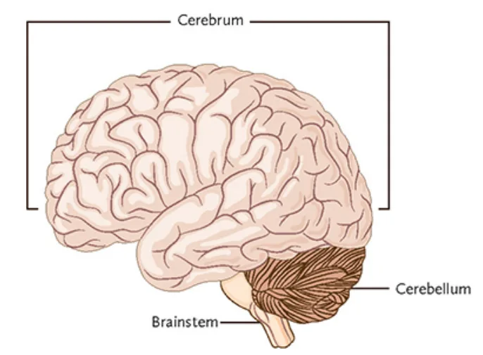
Hình 5.8 Tiểu não.
Hình 5.9 Tư thế Vũ công.
Nguồn: Madison Lavern trên Unsplash.
Các tế bào chuyên biệt của tiểu não: Tiểu não chứa các tế bào thần kinh chuyên biệt gọi là tế bào Purkinje. Những tế bào thần kinh phân nhánh tinh vi này tham gia kiểm soát vận động cũng như quá trình học tập. Tế bào Purkinje điều hòa tốc độ giao tiếp giữa các tế bào thần kinh để điều phối những chuyển động quan trọng, chẳng hạn như cử động bàn tay (Minai, 2014). Đừng nhầm lẫn những tế bào này với các sợi Purkinje nằm trong tim!
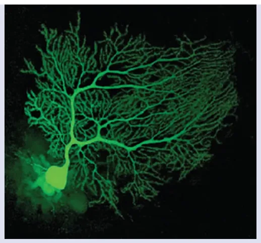
Hình 5.10 Tế bào Purkinje từ tiểu não.
Nguồn: Maryann Martone et al., CCDB/NCMIR/UC San Diego, CCA 3.0. Từ:
http://www.cellimagelibrary.org/images/CCDB_3
Tiểu não cũng đóng một vai trò trong việc học vận động. Học vận động là quá trình học một chuyển động mới, sau đó có thể được lưu trữ dưới dạng trí nhớ vận động, hay còn gọi là trí nhớ cơ bắp. Loại trí nhớ này cho phép gợi lại một chuyển động hoặc sự phối hợp vận động cụ thể để thực hiện các hoạt động như đi xe đạp, ném bóng hoặc chơi nhạc cụ nhiều năm sau khi học cách làm, mà không cần nhiều suy nghĩ nhận thức. Các nhà khoa học thần kinh chưa biết chính xác quá trình này diễn ra thế nào hoặc trí nhớ cơ bắp được lưu trữ ở đâu, nhưng họ tin rằng tiểu não là một trong những vùng não chính tham gia.
Chuỗi Chào mặt trời và tiểu não: Để chào mừng khai trương một phòng tập yoga mới, các học viên đôi khi được mời tham gia nghi thức thực hành 108 vòng Chào mặt trời. Con số 108 được xem là thiêng liêng và tượng trưng cho sự toàn vẹn của vạn vật (Yoga Journal, 2021). Khi thực hành những chuyển động lặp đi lặp lại như vậy, trí nhớ cơ bắp sẽ kích hoạt và dẫn dắt cơ thể xuyên suốt buổi tập. Trí nhớ cơ bắp của chuỗi Chào mặt trời cho phép người tập tập trung vào hơi thở thay vì phải nghĩ xem đặt tay hay chân ở đâu. Khả năng lướt qua chuỗi Chào mặt trời một cách trôi chảy mà không cần suy nghĩ nhiều phần lớn là nhờ vào tiểu não.
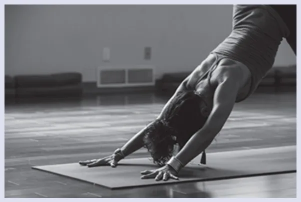
Hình 5.11 Tư thế Chó úp mặt.
Nguồn: Ginny Rose Stewart trên Unsplash.
Điểm chính cần nhớ
Hạch nền là một nhóm các tế bào thần kinh giúp các chuyển động diễn ra trơn tru, không bị lỗi. Rối loạn chức năng hạch nền có thể dẫn đến một số bệnh lý thần kinh, bao gồm bệnh Parkinson. Tiểu não giúp điều phối, căn chỉnh thời gian chuyển động, tạo sự chính xác, hiệu chỉnh chuyển động cũng như lưu giữ trí nhớ vận động. Nó chứa các tế bào chuyên biệt gọi là tế bào Purkinje.
Tín hiệu từ não đến cơ thể: Mặc dù não bộ chỉ đạo hầu hết các chuyển động, nhưng chính các tế bào thần kinh vận động (nơ-ron vận động) mới là yếu tố biến mọi thứ thành hiện thực. Những tế bào thần kinh chuyên biệt này kéo dài từ não hoặc tủy sống đến từng sợi cơ riêng lẻ để truyền đạt chỉ dẫn về việc cơ nào cần cử động và cử động ra sao.
Các tế bào thần kinh vận động truyền chỉ dẫn đến sợi cơ tại khớp thần kinh cơ (neuromuscular junction) (Hình 5.12). Tại đây, các tín hiệu điện kích thích giải phóng chất dẫn truyền thần kinh acetylcholine, cùng với các chất khác. Sau đó, acetylcholine di chuyển qua khe synap và gắn vào các thụ thể trên cơ, khiến cơ co lại và tạo ra chuyển động.
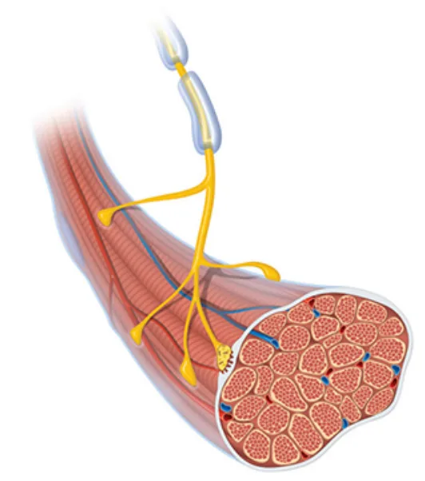
Hình 5.12 Khớp thần kinh cơ.
Dây thần kinh tọa: Dây thần kinh dài nhất và lớn nhất trong cơ thể là dây thần kinh tọa (sciatic nerve). Dây thần kinh tọa tách nhánh từ vùng thắt lưng đi vào hông và chạy dọc xuống chân, phân nhánh thành các dây thần kinh khác kéo dài tới tận các ngón chân. Nó chứa các tế bào thần kinh vận động giúp cơ bắp ở chân và bàn chân cử động, cũng như các tế bào thần kinh cảm giác để gửi tín hiệu cảm giác từ chân và bàn chân lên não. Ở một người cao lớn, sợi trục của dây thần kinh tọa có thể dài hơn một mét (3 feet) (Muzio và Cascella, 2021). Ở đoạn dày nhất, dây thần kinh tọa dày xấp xỉ ngón tay cái của bạn!
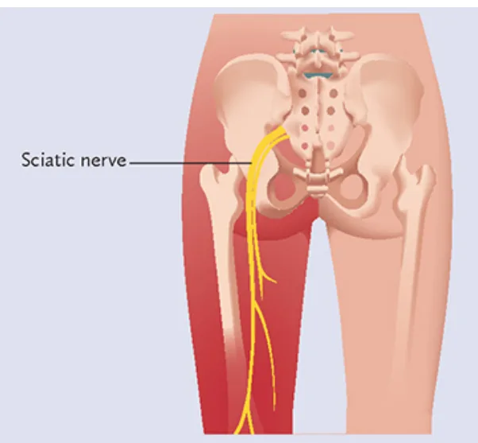
Hình 5.13 Dây thần kinh tọa kéo dài từ vùng thắt lưng xuống dưới đầu gối, nơi nó phân nhánh thành các dây thần kinh khác đi tới ngón chân.
Dây thần kinh tọa đôi khi có thể bị chèn ép hoặc viêm trong một tình trạng gọi là đau thần kinh tọa (sciatica). Đau thần kinh tọa thường gây ra cơn đau lan từ vùng thắt lưng xuống chân và có thể dẫn đến các vấn đề về cử động chân và bàn chân. Tình trạng này có thể do thoát vị đĩa đệm gây ra; tuy nhiên, gần 70 phần trăm tổng số ca đau thần kinh tọa là do cơ hình lê (piriformis) ở vùng hông bị căng cứng chèn ép lên dây thần kinh (Filler et al., 2005).
Yoga có thể giúp giảm nhẹ các triệu chứng đau thần kinh tọa do cơ hình lê quá căng. Tuy nhiên, điều quan trọng là không được kéo giãn cơ này quá mức, vì làm vậy có thể khiến các triệu chứng trầm trọng hơn. Dưới đây là ba tư thế có thể giúp kéo dài và thư giãn cơ hình lê để giảm đau và khó chịu.
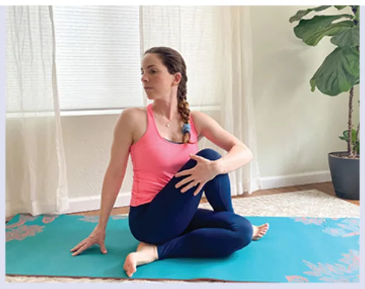
Hình 5.14 Tư thế ngồi vặn mình đơn giản.
Hình 5.15 Tư thế Bồ câu giãn hông.
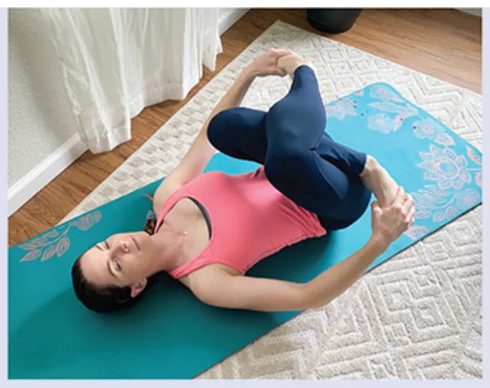
Hình 5.16 Biến thể giãn cơ hình lê.
PHẦN II VẬN ĐỘNG KHÔNG TỰ Ý: KHÔNG CẦN ĐẾN NÃO
Các bác sĩ thường dùng một chiếc búa cao su mềm để kiểm tra phản xạ gân bánh chè (phản xạ đầu gối). Chuyển động nhanh này mang tính tự động và không đòi hỏi bất kỳ suy nghĩ nhận thức nào. Thực tế, chuyển động này hoàn toàn không có sự tham gia của não bộ.
Thay vào đó, các thụ thể cảm giác ở đầu gối tiếp nhận lực tác động của chiếc búa (làm căng gân) và gửi tín hiệu đến một tế bào thần kinh cảm giác — loại tế bào thần kinh phát hiện và phản ứng với môi trường. Tế bào thần kinh cảm giác sau đó truyền thông tin này đến tủy sống, nơi một tế bào thần kinh vận động tiếp nhận tín hiệu và lập tức làm co cơ, bỏ qua hoàn toàn não bộ (Hình 5.17).
Hình 5.17 Cung đường của một phản xạ.
Phản xạ là một cơ chế sinh tồn. Chẳng hạn, phản xạ rút lui có thể nhanh chóng rụt tay khỏi một chiếc nồi đang nóng bỏng, và phản xạ giật mình giúp chúng ta nhảy tránh khỏi một mối nguy hiểm tiềm tàng.
Điểm chính cần nhớ
Các tế bào thần kinh vận động truyền thông tin từ não hoặc tủy sống để điều hòa hoạt động của cơ bắp phục vụ vận động. Khớp thần kinh cơ là nơi các tế bào thần kinh vận động truyền chỉ dẫn về chuyển động đến sợi cơ. Dây thần kinh tọa là dây thần kinh dài nhất trong cơ thể, giúp các cơ ở chân và bàn chân cử động cũng như cảm nhận cảm giác. Nó có thể dễ dàng bị chèn ép hoặc viêm trong tình trạng gọi là đau thần kinh tọa. Phản xạ là một chuyển động nhanh, tự động và không có sự tham gia của não bộ.
PHẦN III CẢM THỤ BẢN THỂ (PROPRIOCEPTION)
Hãy tưởng tượng bạn tập yoga khi nhắm mắt. Ngay cả khi không có thị giác, cơ thể vẫn có thể tạo ra hình dáng và chuyển động của các tư thế yoga khác nhau. Khả năng nhận thức được vị trí và chuyển động của cơ thể mình được gọi là cảm thụ bản thể (proprioception).
Cảm thụ bản thể dựa vào ba hệ thống cảm giác chính. Đầu tiên là các thụ thể chuyên biệt nằm trong cơ, khớp và gân, có nhiệm vụ gửi tín hiệu lên não về vị trí cơ thể. Hệ thống thăng bằng, còn gọi là hệ thống tiền đình, nằm ở tai trong giúp truyền thông tin về sự xoay, gia tốc, trọng lực và vị trí. Và mặc dù cảm thụ bản thể có thể diễn ra mà không cần thị lực, hệ thống thị giác vẫn rất hữu ích trong việc gửi các tín hiệu hình ảnh về vị trí cơ thể. Ba hệ thống này phối hợp với nhau để cung cấp cho não sự hiểu biết về vị trí của cơ thể trong không gian và cách cơ thể đang di chuyển.
Bộ não tiếp nhận tín hiệu từ ba hệ thống cảm giác này và gửi chỉ dẫn ngược lại ra các cơ để điều phối chuyển động. Ví dụ, khả năng giữ thăng bằng đòi hỏi rất nhiều vi điều chỉnh, vốn phụ thuộc nhiều vào tín hiệu từ tiểu não và thân não.
Cảm thụ bản thể có thể diễn ra cả ở mức độ có ý thức lẫn vô thức. Cảm thụ bản thể có ý thức được sử dụng để hỗ trợ các chuyển động phức tạp, những chuyển động đòi hỏi sự tập trung và suy nghĩ để hoàn thành, chẳng hạn như thực hiện tư thế uốn lưng (backbend). Cảm thụ bản thể vô thức lại quan trọng trong việc điều phối các chuyển động ít phức tạp hơn, như duy trì tư thế và đi bộ (Johnson et al., 2008). Cảm thụ bản thể vô thức có thể diễn ra nhanh chóng để giúp điều phối cơ thể.
Nhiều tư thế yoga dựa vào hệ thống cảm thụ bản thể để tạo ra hình dáng và chuyển động cho cơ thể. Các nhà nghiên cứu phát hiện ra rằng tập yoga có thể cải thiện khả năng cảm thụ bản thể và giữ thăng bằng ở những người mắc rối loạn thần kinh cũng như người khiếm thị (Cherup et al., 2020; Mohanty, Pradhan và Nagathna, 2014).
Các thụ thể cảm thụ bản thể: Nằm rải rác khắp các cơ, thoi cơ (muscle spindles) là các thụ thể cảm thụ bản thể giúp phát hiện sự thay đổi về chiều dài cơ (mức độ cơ bị kéo giãn) và tốc độ thay đổi chiều dài cơ (Matthews, 1964). Thoi cơ chuyển thông tin này đến các tế bào thần kinh cảm giác, từ đó gửi tín hiệu về hệ thần kinh trung ương liên quan đến chuyển động của cơ.
Bên trong gân và khớp là các thụ thể cảm thụ bản thể được gọi lần lượt là cơ quan gân Golgi và thụ thể khớp. Cơ quan gân Golgi cảm nhận thông tin về độ căng cơ — thước đo mức độ gắng sức — trong khi các thụ thể khớp cung cấp thông tin về vị trí của khớp.
Hệ thống thăng bằng: Cũng có những cảm biến cực kỳ chính xác nằm ở tai trong tiếp nhận thông tin về thăng bằng và định hướng không gian. Biết được hướng nào là lên hay xuống nghe có vẻ là một nhiệm vụ đơn giản, nhưng thực chất lại khá phức tạp (Hình 5.18).
Hình 5.18 Giữ thăng bằng lộn ngược đòi hỏi nhiều hệ thống cảm giác phối hợp cùng nhau nhưng phụ thuộc chủ yếu vào hệ thống tiền đình, hệ thống cảm nhận định hướng không gian và trọng lực.
Mặc dù tai trong hỗ trợ thính giác, nó cũng đóng vai trò tối quan trọng trong việc giải mã định hướng không gian như một phần của hệ thống tiền đình, còn được gọi là “trung tâm thăng bằng” hay “hệ thống thăng bằng”. Hệ thống tiền đình chủ yếu giúp chúng ta phát hiện chuyển động của đầu. Nó cũng hỗ trợ cung cấp cho não thông tin về vị trí và hướng của đầu nhằm duy trì thăng bằng và tư thế, cũng như giữ ổn định đầu trong quá trình vận động.
Hệ thống tiền đình chứa nhiều cấu trúc, nhưng hai cấu trúc chính nằm trong mê đạo tiền đình bao gồm các ống bán khuyên và cơ quan thạch nhĩ (otolith organs). Có ba ống bán khuyên chứa dịch cùng các tế bào lông nhỏ (Hình 5.19). Mỗi ống được định hướng theo một mặt phẳng khác nhau để phát hiện một trong ba loại chuyển động xoay của đầu: gật lên xuống, lắc sang hai bên và nghiêng trái phải (Hình 5.20–5.22).
Hình 5.19 Các ống bán khuyên bên trong tai.
Hình 5.20 Gật đầu lên xuống.
Hình 5.21 Lắc đầu sang hai bên.
Hình 5.22 Nghiêng đầu trái phải.
Khi đầu đổi hướng, chất dịch gọi là nội dịch (endolymph) trong các ống bán khuyên sẽ dịch chuyển, báo hiệu cho các tế bào lông biết đang có chuyển động theo một hướng nhất định. Sau đó, các tế bào lông truyền thông tin này đến dây thần kinh tiền đình (một nhánh của dây thần kinh sọ tiền đình – ốc tai), gửi tín hiệu lên não về chuyển động và định hướng.
Tai trong cũng chứa các cấu trúc nhỏ gọi là cơ quan thạch nhĩ giúp chúng ta cảm nhận chuyển động tiến và lùi (gia tốc thẳng) cũng như trọng lực. Chúng hoạt động rất giống cách các ống bán khuyên phát hiện chuyển động, đều liên quan đến chất dịch và tế bào lông. Cả cơ quan thạch nhĩ và ống bán khuyên đều cần thiết để não bộ hiểu được vị trí của cơ thể.
So sánh cơ quan thạch nhĩ với các ống bán khuyên: Thạch nhĩ phát hiện gia tốc thẳng, tức là sự thay đổi về tốc độ (tăng hoặc giảm) mà không thay đổi hướng. Gia tốc thẳng xảy ra khi di chuyển theo một đường thẳng, giống như khi đang đi ô tô và đạp ga để tránh vượt đèn đỏ.
Các ống bán khuyên phát hiện gia tốc góc, tức là khi có sự thay đổi về tốc độ đồng thời với sự thay đổi về hướng. Gia tốc góc xảy ra khi đi tàu lượn siêu tốc lúc tàu thực hiện cú lộn vòng 360 độ. Các ống bán khuyên có ba vòng chính giúp phát hiện chuyển động trong ba mặt phẳng, cho phép chúng phát hiện gia tốc góc của đầu.
Hình 5.23 Các ống bán khuyên phát hiện gia tốc góc, giống như cảm giác trải nghiệm khi đi tàu lượn siêu tốc.
Nguồn: Jonny Gios trên Unsplash.
Các ống bán khuyên và cơ quan thạch nhĩ giúp hệ thống tiền đình biết được đầu đang ở đâu trong không gian và đang di chuyển thế nào. Sau đó, hệ thống tiền đình có thể sử dụng thông tin này để tác động lên chuyển động mắt nhằm giữ ánh nhìn ổn định. Sự ổn định ánh nhìn, chẳng hạn như tập trung vào một điểm cố định, thường được sử dụng trong yoga, đặc biệt là để tránh bị ngã trong các tư thế thăng bằng hoặc khi chuyển tiếp từ tư thế này sang tư thế khác. Hệ thống tiền đình đặc biệt quan trọng đối với khả năng kiểm soát thăng bằng khi đứng, và rối loạn chức năng của hệ thống này có thể dẫn đến các vấn đề về độ vững vàng (van Kordelaar et al., 2018).
Tại sao mọi người bị say tàu xe? Say tàu xe xảy ra khi hệ thống tiền đình và hệ thống thị giác bất đồng với nhau. Điều này có thể xảy ra khi ngồi trên thuyền vào một ngày nhiều gió. Chuyển động của sóng biển khiến chất dịch trong tai trong dịch chuyển, và các tế bào lông báo hiệu cho não rằng cơ thể đang chuyển động. Tuy nhiên, cơ thể đang ngồi yên trên thuyền chứ không tự di chuyển, nên các thụ thể thoi cơ lại báo cho não rằng cơ thể không chuyển động. Sự xung đột tín hiệu gửi về não này dẫn đến cảm giác buồn nôn.
Hình 5.24 Mọi người thường bị say sóng khi di chuyển trên
vùng nước động.
Nguồn: Ant Rozetsky trên Unsplash.
Điểm chính cần nhớ
Cảm thụ bản thể là nhận thức về vị trí và chuyển động của cơ thể. Các thụ thể cảm thụ bản thể bao gồm thoi cơ, cơ quan gân Golgi và thụ thể khớp.
Hệ thống tiền đình là trung tâm thăng bằng của cơ thể. Nó giúp não phát hiện chuyển động đầu và hỗ trợ ổn định ánh nhìn. Mỗi ống bán khuyên phát hiện một loại chuyển động xoay đầu khác nhau: gật lên xuống, lắc sang hai bên và nghiêng trái phải. Các cơ quan thạch nhĩ cảm nhận chuyển động tiến và lùi cũng như trọng lực. Tập yoga có thể cải thiện khả năng cảm thụ bản thể và thăng bằng.
Cảm thụ bản thể và yoga: Cũng giống như việc rèn luyện một kỹ năng, khả năng cảm thụ bản thể có thể được trau dồi thông qua việc lặp đi lặp lại. Yoga có thể giúp phát triển sự tự nhận thức về cơ thể, cải thiện khả năng biết được cơ thể đang ở đâu trong không gian, khả năng kiểm soát cơ bắp và giữ thăng bằng (Cherup et al., 2020). Một nghiên cứu phát hiện ra rằng tập tư thế Cái cây hai phút mỗi ngày giúp tăng cường khả năng thăng bằng tĩnh và động ở phụ nữ lớn tuổi (Solakoglu et al., 2021). Một nghiên cứu khác chỉ ra rằng tập Hatha yoga hai lần một tuần trong 12 tuần có thể cải thiện khả năng giữ thăng bằng ở những người mắc bệnh Parkinson, một tình trạng thường làm suy giảm khả năng thăng bằng (Elangovan et al., 2020). Tổng hợp lại, những phát hiện này cho thấy khả năng thăng bằng có thể cải thiện nhờ tập yoga, bao gồm cả ở người lớn tuổi và người mắc các rối loạn thần kinh.
Một cách khác để tăng cường khả năng cảm thụ bản thể là tập yoga khi nhắm mắt. Các tư thế cơ bản có thể trở nên khá khó khăn khi hệ thống thị giác bị tắt, buộc bộ não phải phụ thuộc nhiều hơn vào các hệ thống cảm thụ bản thể khác. Bạn cũng có thể thu được nhiều thông tin hữu ích khi tự quay phim lại cảnh mình tập một chuỗi tư thế với đôi mắt nhắm. Sau đó, bạn có thể xem lại đoạn phim để kiểm tra xem mình có đang di chuyển cơ thể đúng như mình nghĩ hay không.
Dưới đây là một chuỗi bài tập yoga mẫu giúp rèn luyện nhận thức cơ thể và khả năng giữ thăng bằng. Để tư thế dễ tiếp cận hơn, hãy thử nhìn chằm chằm vào một điểm nhất định trên sàn hoặc tường. Nếu muốn thử thách hơn, hãy thử nhắm mắt lại. Bạn cũng có thể làm chậm quá trình chuyển tiếp giữa các tư thế để tập trung vào việc kiểm soát và phối hợp cơ bắp.
CHUỖI TƯ THẾ YOGA MẪU CHO CẢM THỤ BẢN THỂ VÀ THĂNG BẰNG
Hình 5.25 Tư thế Gập người chân rộng vặn mình.
Hình 5.26 Tư thế Con quạ.
Hình 5.27 Tư thế Cái cây.
Hình 5.28 Tư thế Tam giác.
Hình 5.29 Biến thể tư thế Tấm ván nghiêng. Chân trên cũng có thể nhấc lên để tăng thêm thử thách thăng bằng.
Hình 5.30 Tư thế Trường tấn cao.
TÀI LIỆU THAM KHẢO
Badlangana, N.L., Bhagwandin, A., Fuxe, K., & Manger, P.R., et al., 2007. Observations on the giraffe central nervous system related to the corticospinal tract, motor cortex and spinal cord: what difference does a long neck make? Neuroscience, 148(2), pp.522–534. Brinkman, C., 1981. Lesions in supplementary motor area interfere with a monkey’s performance of a bimanual coordination task. Neuroscience Letters, 27(3), pp.267–270. Cherup, N.P., Strand, K.L., Lucchi, L., Wooten, S.V., Luca, C., & Signorile, J.F., 2020. Yoga meditation enhances proprioception and balance in individuals diagnosed with Parkinson’s disease. Perceptual and Motor Skills, 128(1), pp.304–323. Dijkstra, B.W., Bekkers, E.M.J., Gilat, M., Rond, V.D., Hardwick, R.M., & Nieuwboer, A., 2020.
Functional neuroimaging of human postural control: a systematic review with meta-analysis. Neuroscience & Biobehavioral Reviews, 115, pp.351–362. Elangovan, N., Cheung, C., Mahnan, A., Wyman, J.F., Tuite, P., & Konczak, J., 2020. Hatha yoga training improves standing balance but not gait in Parkinson’s disease. Sports Medicine and Health Science, 2(2), pp.80–88.
Filler, A.G., Haynes, J., Jordan, S.E., Prager, J., et al., 2005. Sciatica of nondisc origin and piriformis syndrome: diagnosis by magnetic resonance neurography and interventional magnetic resonance imaging with outcome study of resulting treatment. Journal of Neurosurgery: Spine, 2(2), pp.99– 115. Fine, E.J., Ionita, C.C., & Lohr, L., 2002. The history of the development of the cerebellar examination. Seminars in Neurology, 22(4), pp.375–384. Freund, H.-J., & Hummelsheim, H., 1985. Lesions of premotor cortex in man. Brain, 108(3), pp.697–733. Hauber, W., 1998. Involvement of basal ganglia transmitter systems in movement initiation. Progress in Neurobiology, 56(5), pp.507–540. Johnson, E.O., Babis, G.C., Soultanis, K.C., & Soucacos, P.N., 2008. Functional neuroanatomy of proprioception. Journal of Surgical Orthopaedic Advances, 17(3), pp.159–165. Kwon, D., 2020. The mysterious, multifaceted cerebellum. BrainFacts.org. Available at:
https://www.brainfacts.org/brain-anatomy-and-function/anatomy/2020/the-mysteriousmultifaceted-cerebellum-120320 Matthews, P.B., 1964. Muscle spindles and their motor control. Physiological Reviews, 44(2), pp.219–288. Minai, M., 2014. Purkinje cells. The Embryo Project Encyclopedia. Available at: https://embryo.asu.edu/pages/purkinje-cells Mohanty, S., Pradhan, B., & Nagathna, R., 2014. The effect of yoga practice on proprioception in congenitally blind students. British Journal of Visual Impairment, 32(2), pp.124–135. Muzio, M.R., & Cascella, M., 2021. Histology, Axon. In: StatPearls [Internet]. Treasure Island (FL):
StatPearls Publishing; 2022 Jan-. Available at: https://www.ncbi.nlm.nih.gov/books/NBK554388/ Sanes, J.N., & Donoghue, J.P., 2000. Plasticity and primary motor cortex. Annual Review of
Neuroscience, 23(1), pp.393–415. Schwartz, A.B., 2016. Movement: how the brain communicates with the world. Cell, 164(6), pp.1122–1135. Solakoglu, O., Dogruoz Karatekin, B., Yumusakhuylu, Y., Mesci, E., & Icagasioglu, A., 2021. The effect of yoga asana “Vrksasana (tree pose)” on balance in patients with postmenopausal osteoporosis. American Journal of Physical Medicine & Rehabilitation, 101(3), pp.255–261. The Brain from Top to Bottom, 2022. The Axons Entering and Leaving the Motor Cortex. McGill
University. Available at: https://thebrain.mcgill.ca/flash/i/i_06/i_06_cl/i_06_cl_mou/i_06_cl_mou.html van Kordelaar, J., Pasma, J.H., Cenciarini, M., Schouten, A.C., Kooij, H.V.D., & Maurer, C., 2018.
The reliance on vestibular information during standing balance control decreases with severity of vestibular dysfunction. Frontiers in Neurology, 9, p.371. Verwey, W.B., Lammens, R., & Honk, J. van, 2002. On the role of the SMA in the discrete sequence production task: a TMS study. Neuropsychologia, 40(8), pp.1268–1276. Yoga Journal, 2021. What’s so sacred about the number 108? Yoga Journal. Available at:
https://www.yogajournal.com/practice/yoga-sequences/the-number-108
Chương 6 — Sinh lý học thần kinh của hơi thở
CHƯƠNG 6
Sinh lý thần kinh của hơi thở
Hít thở là một hoạt động duy trì sự sống cho mọi loài động vật trên Trái Đất, và là một khía cạnh thiết yếu của các phương pháp thực hành chiêm nghiệm như yoga hay thiền định. Ngày nay, các nhà khoa học vẫn đang tiếp tục khám phá cách hơi thở có thể tác động đến nhịp tim, hệ tiêu hóa, hệ miễn dịch và thậm chí cả não bộ.
SINH LÝ HỌC CỦA QUÁ TRÌNH HÍT VÀO VÀ THỞ RA
Nhịp hít vào có thể cung cấp oxy cho cơ bắp, làm chậm nhịp tim, ổn định huyết áp và giảm căng thẳng. Việc hít vào không khí — vốn chứa khoảng 80% nitơ và 20% oxy — sẽ khởi phát một chuỗi các phản ứng tác động đến mọi hệ cơ quan trong cơ thể.
Trong quá trình hít vào, không khí đi từ miệng hoặc mũi xuống hầu, thường được gọi là cổ họng. Sau đó, không khí chảy vào khí quản, còn gọi là ống dẫn khí (Hình 6.1). Khí quản được chia thành hai đường dẫn khí tương đối lớn gọi là phế quản phải và phế quản trái, nối tương ứng với phổi phải và phổi trái. Phổi phải có ba phần (gọi là thùy) và hơi lớn hơn phổi trái, vốn chỉ có hai thùy. Các phế quản sau đó tiếp tục phân chia thành những tiểu phế quản nhỏ hơn nữa bên trong phổi, giống như thân cây phân nhánh hết lần này đến lần khác. Các tiểu phế quản kết thúc ở những túi khí nhỏ li ti gọi là phế nang, nơi chuyển oxy từ không khí hít vào vào máu (Hình 6.2). Máu giàu oxy sau đó được bơm đi khắp cơ thể để cung cấp oxy cho các tế bào.
Hình 6.1 Giải phẫu của hơi thở.
Khi tế bào sử dụng oxy, nó tạo ra carbon dioxide như một chất thải. Carbon dioxide được vận chuyển trong máu trở về phổi để có thể được loại bỏ trong quá trình thở ra.
Hình 6.2 Dòng chảy giải phẫu của hơi thở.
TẦM QUAN TRỌNG CỦA MŨI
Cụm từ “hít vào bằng mũi và thở ra bằng miệng” thường được sử dụng trong các lớp học yoga và thiền định, mặc dù cơ sở khoa học đằng sau lời hướng dẫn này thường bị bỏ qua. Con người được thiết kế để thở bằng mũi. Trẻ sơ sinh hít vào bằng mũi để có thể vừa bú vừa thở cùng lúc, và các vận động viên hít vào bằng mũi để làm chậm nhịp tim và cải thiện thành tích thể thao.
Mũi kiểm soát nhiệt độ của không khí hít vào bằng cách làm ấm nó trong suốt nhịp thở. Phổi rất nhạy cảm với nhiệt độ lạnh, điều này khiến chúng co lại và thở nông hơn. Ví dụ, khi chạy bộ ngoài trời vào một ngày se lạnh, bạn có thể cảm thấy khó hít thở sâu. Để bù đắp cho phản ứng này, mũi làm ấm không khí trước khi nó đi vào phổi, nhờ đó phổi có thể giãn nở đúng cách để tiếp nhận oxy.
Mũi cũng điều hòa độ ẩm của không khí đi vào phổi. Việc thở bằng mũi bổ sung độ ẩm cho không khí nhằm ngăn ngừa đau họng và khô miệng. Vào những tháng mùa đông, những người thở bằng miệng có thể bị đau họng vì không khí không được mũi làm ẩm. Bên trong mũi còn có những sợi lông nhỏ li ti gọi là lông chuyển giúp giữ lại bụi bẩn và độc tố để ngăn chúng xâm nhập vào phổi.
Cuối cùng, mũi truyền tải khứu giác thông qua dây thần kinh khứu giác. Khả năng ngửi giúp phát hiện các độc tố có hại, chẳng hạn như khói từ một tòa nhà đang cháy. Trong một buổi tập yoga hoặc thiền định, người hướng dẫn có thể đốt nhang hoặc xịt tinh dầu, điều này giúp nâng tầm buổi tập bằng cách bổ sung thêm chiều kích của mùi hương.
Chiếc mũi tinh tường Mũi chứa đầy mô cương; cùng loại mô có ở bộ phận sinh dục (Hình 6.3). Mô cương trong mũi đóng một vai trò điều hòa quan trọng. Bằng cách giãn nở và co lại, mô cương có thể làm thay đổi đường kính của lỗ mũi, từ đó thay đổi tốc độ và lưu lượng dòng khí đi vào cơ thể (Ng, Ramsey và Corey, 1999). Đổi lại, điều này giúp điều hòa quá trình làm ấm và làm ẩm không khí.
Hình 6.3 Mô cương trong mũi.
Phỏng theo: https://www.researchgate.net/figure/The-location-of-the-erectile-tissue-inside-the nasal-cavity_fig10_229079961, CC BY 2.5.
Mô cương trong mũi sưng phồng rồi xẹp xuống suốt cả ngày theo một chu kỳ nhất định (Kahana-Zweig et al., 2016). Điều này cho phép luồng khí đi qua mạnh hơn ở từng bên lỗ mũi tại một thời điểm, luân phiên từ trái sang phải rồi quay trở lại. Một văn bản yoga cổ có tên là Shiva Swarodaya mô tả dòng chảy của hiện tượng chu kỳ mũi này dưới dạng năng lượng (Telles và Naveen, 2008; Rai, 2012). Trong văn bản này, hơi thở được coi là sinh lực vũ trụ, và những người thực hành Swara yoga tập trung vào các kiểu thở khác nhau. Có ba kiểu thở chính trong Swara yoga bao gồm thở qua: 1) lỗ mũi trái, 2) lỗ mũi phải và 3) cả hai lỗ mũi. Mỗi kiểu thở gắn liền với chu kỳ của mặt trăng, khi hai lỗ mũi tự nhiên luân phiên tạo nên nhịp điệu riêng của chúng (Saraswati, 1982). Chưa có nghiên cứu khoa học nào về riêng Swara yoga, nhưng các nhà khoa học biết rằng hai lỗ mũi thực sự co giãn luân phiên suốt cả ngày. Chu kỳ mũi đã được ghi nhận bằng chụp cộng hưởng từ (MRI) cấu trúc (Kahana-Zweig et al., 2016). Một bên lỗ mũi có thể sưng lên trong khoảng từ 25 phút đến vài giờ rồi thư giãn khi bên lỗ mũi đối diện bắt đầu sưng lên. Kết quả là tình trạng nghẹt và thông thoáng một phần diễn ra luân phiên một cách vô thức suốt cả ngày.
Những chu kỳ mũi này có khả năng được điều khiển bởi hệ thần kinh tự chủ. Trong khi hệ thần kinh giao cảm gắn liền với việc làm co các mạch máu ở một bên lỗ mũi, thì hệ thần kinh phó giao cảm làm giãn các mạch máu ở bên lỗ mũi còn lại. Thở chậm hơn có thể tạo ra chu kỳ mạnh mẽ hơn giữa hai lỗ mũi, với mỗi bên có sự sưng phồng và giải phóng áp lực rõ rệt hơn (Kahana-Zweig et al., 2016).
Chu kỳ mũi cũng có liên quan đến sức khỏe và bệnh tật. Chẳng hạn, khi bị bệnh hoặc căng thẳng, mũi sẽ bị viêm. Những trạng thái này có thể khiến chu kỳ mũi tăng tốc, chuyển đổi từ trái sang phải nhanh hơn để kiểm soát tốt hơn các yếu tố như nhiệt độ cũng như các hóa chất có thể ảnh hưởng đến não bộ (Nestor, 2021). Một nghiên cứu trường hợp về một phụ nữ mắc bệnh tâm thần phân liệt cũng cho thấy sự mất cân bằng giữa việc thở qua lỗ mũi trái và phải của cô ấy (Shannahoff-Khalsa và Golshan, 2015). Khi các nhà khoa học áp dụng các bài tập để điều chỉnh sự mất cân bằng này, các ảo giác của cô đã giảm bớt. Do đó, có thể tồn tại mối liên hệ giữa chu kỳ mũi và một số trạng thái bệnh lý.
Tuy nhiên, cỡ mẫu chỉ gồm một người đã giới hạn những kết luận có thể rút ra và cần phải thực hiện thêm nhiều nghiên cứu nữa.
Những điểm chính cần nhớ
Thở bằng mũi rất quan trọng trong yoga và thiền định để làm chậm nhịp tim và tăng cường lượng oxy. Mũi kiểm soát nhiệt độ cũng như độ ẩm của không khí hít vào. Mũi cũng chứa mô cương giãn nở và co lại suốt cả ngày để điều hòa dòng chảy của hơi thở một cách tự nhiên.
HƠI THỞ VÀ NÃO BỘ
Trung bình một người hít thở 25.000 lần mỗi ngày (Gross, 2020). Quá trình thở diễn ra một cách vô thức hoặc có ý thức tùy thuộc vào mức độ chú ý đến hơi thở. Phần lớn thời gian, việc thở không phải là một nỗ lực có ý thức. Cơ thể tự nhiên hít vào và thở ra không khí. Nhưng cơ thể điều hòa hoạt động này bằng cách nào?
Tất cả đều nhờ vào bộ máy tinh vi trong các mạch máu và một trung tâm hô hấp nhỏ xíu ở thân não. Cơ thể cảm nhận nồng độ oxy, carbon dioxide và độ pH bằng cách sử dụng các cảm biến chuyên biệt nằm trong động mạch cảnh ở cổ và cung động mạch chủ của tim, được gọi là thụ thể hóa học (chemoreceptors) (Prabhakar, 2000) (Hình 6.4).
Khi nồng độ carbon dioxide trong máu tăng lên quá cao, các thụ thể hóa học gửi tín hiệu đến một phần của thân não gọi là hành não (medulla) để báo rằng cơ thể cần thêm oxy. Hành não chỉ thị cho các cơ hô hấp — những cơ bao quanh lồng ngực và cơ hoành — co lại và giãn ra để đưa không khí tươi mới vào phổi. Những cơ này cho phép thực hiện nhịp hít vào (inspiration) cũng như nhịp thở ra (expiration). Hành não cũng duy trì nhịp điệu hô hấp để thở ở một tốc độ đều đặn (Ikeda et al., 2016). Nếu cơ thể không nhận đủ oxy, các thụ thể hóa học sẽ gửi tín hiệu đến hành não để bảo phổi thở thường xuyên hơn.
Khi nồng độ oxy trong cơ thể xuống thấp, hành não cũng có thể gửi tín hiệu đến tim, chỉ thị tim bơm nhanh hơn để tuần hoàn máu giàu oxy. Sự giao tiếp giữa hành não, phổi và tim chủ yếu diễn ra thông qua dây thần kinh phế vị, dây thần kinh chính của hệ thần kinh phó giao cảm.
Các nhà khoa học tin rằng hơi thở có thể kích thích dây thần kinh phế vị thông qua cơ chế kích thích dây thần kinh phế vị qua hô hấp (Gerritsen và Band, 2018). Hệ thần kinh tự chủ dựa vào sự cân bằng giữa hệ thần kinh giao cảm và hệ thần kinh phó giao cảm. Trong khi hệ thần kinh giao cảm có thể làm tăng nhịp tim, huyết áp và nhịp thở, thì hệ thần kinh phó giao cảm có thể làm giảm các yếu tố này và tăng cường tiêu hóa. Cụ thể, dây thần kinh phế vị có thể bị ức chế trong khi hít vào và được kích hoạt trong khi thở ra cũng như khi làm chậm nhịp thở (Chang et al., 2015; Gerritsen và Band, 2018). Vì vậy, việc hít thở sâu chậm rãi và có kiểm soát sẽ làm tràn ngập oxy cho cơ thể và phát tín hiệu cho não bộ rằng đã đến lúc thư giãn.
Hình 6.4 Động mạch cảnh chứa các thụ thể hóa học có thể cảm nhận nồng độ oxy trong máu. Mỗi bên cổ có một động mạch cảnh đưa máu lên cổ và đầu. Nếu bạn đặt hai ngón tay lên một bên cổ, bạn có thể cảm nhận được nhịp đập của máu từ tim đang chảy qua các động mạch cảnh.
Những điểm chính cần nhớ
Các thụ thể hóa học trong động mạch cảnh gửi tín hiệu đến hành não ở thân não về nồng độ oxy trong máu. Nếu cơ thể không nhận đủ oxy, hành não sẽ gửi tín hiệu đến phổi để thở thường xuyên hơn. Sự giao tiếp giữa hành não, phổi và tim chủ yếu thông qua dây thần kinh phế vị, dây thần kinh chính của hệ thần kinh phó giao cảm. Thở sâu chậm rãi, có kiểm soát giúp nạp đầy oxy cho cơ thể và thúc đẩy sự thư giãn.
Hơi thở và tâm trạng Hơi thở có thể là một công cụ mạnh mẽ để thay đổi tâm trạng. Ví dụ, những hơi thở dài và sâu mang lại cảm giác bình tĩnh và thư giãn, trong khi hơi thở mạnh mẽ hơn có thể tiếp thêm năng lượng cho cơ thể. Hàng thế kỷ nay, con người đã sử dụng việc thở chậm, có kiểm soát để thúc đẩy trạng thái tâm trí bình tĩnh và giảm sự kích thích quá mức trong những lúc căng thẳng, chẳng hạn như trong một cơn hoảng loạn. Tuy nhiên, cho đến gần đây, các nhà nghiên cứu vẫn chưa biết hơi thở tác động đến trạng thái tâm trí như thế nào.
Các nhà nghiên cứu tại Đại học Stanford đã tình cờ phát hiện ra mối liên hệ giữa hơi thở và tâm trí khi đang kiểm tra các tế bào thần kinh trong thân não của chuột (Yackle et al., 2017). Các nhà khoa học quan tâm đến một nhóm tế bào thần kinh ở hành não kiểm soát nhịp điệu hô hấp gọi là phức hợp pre-Bötzinger, và họ muốn biết thêm về vai trò cụ thể của các tế bào thần kinh trong vùng này. Để tìm hiểu thêm, các nhà khoa học đã phá hủy một tiểu quần thể tế bào thần kinh và quan sát xem có bất kỳ thay đổi nào trong hành vi của chuột hay không.
Các nhà nghiên cứu phát hiện ra rằng những con chuột không có tiểu quần thể tế bào thần kinh phức hợp pre-Bötzinger này vẫn có thể thở với nhịp điệu bình thường, nhưng chúng lại bình tĩnh và thư giãn một cách bất thường. Các nhà khoa học đã vô cùng bối rối. Tại sao việc phá hủy các tế bào thần kinh hô hấp trong thân não lại khiến những con chuột trở nên bình tĩnh hơn?
Họ đã tình cờ tìm ra mắt xích liên kết giữa hơi thở, căng thẳng và cảm xúc. Tiểu quần thể tế bào thần kinh phức hợp pre-Bötzinger này gửi tín hiệu đến nhân lục (locus coeruleus), nơi sản xuất chất dẫn truyền thần kinh norepinephrine. Việc giải phóng norepinephrine thúc đẩy phản ứng căng thẳng, sự hưng phấn, nỗi sợ hãi và lo âu. Do đó, những tế bào thần kinh hô hấp này điều hòa sự cân bằng giữa các hành vi bình tĩnh và kích thích. Các kỹ thuật thở có khả năng hoạt động bằng cách làm thay đổi hoạt động của phức hợp pre-Bötzinger để điều chỉnh hoạt động của nhân lục, từ đó làm thay đổi tâm trạng.
Thở qua căng thẳng, đau đớn và lo âu Khi căng thẳng, nhịp thở tăng lên. Dưới tác động của căng thẳng tức thời, như chạy trốn khỏi một con sư tử, việc thở nhanh không phải là vấn đề. Tuy nhiên, những người bị căng thẳng mạn tính hoặc lo âu có xu hướng thở nông và dồn dập hơn trong một khoảng thời gian dài, liên tục kích hoạt hệ thần kinh giao cảm. Đổi lại, hệ thần kinh giao cảm giải phóng nhiều hormone căng thẳng hơn như cortisol, vốn có thể gây tổn thương tế bào.
Hơi thở có thể được tận dụng để mang lại lợi thế cho chúng ta. Bằng cách thực hành thở chậm, có kiểm soát, chúng ta có thể rèn luyện cơ thể kích hoạt hệ thần kinh phó giao cảm thay vì hệ thần kinh giao cảm.
Mẹo thở vượt qua căng thẳng Nếu bạn đang căng thẳng, một cách để điều chỉnh nhanh hệ thần kinh tự chủ là chỉ cần hít một hơi thật dài qua mũi. Hành động này gửi một tín hiệu trực tiếp đến não bộ rằng cơ thể bạn đang ở chế độ phục hồi – đã đến lúc thư giãn.
Các nhà khoa học từ Đại học Kỹ thuật Munich ở Đức cũng chỉ ra rằng việc chú tâm chánh niệm vào hơi thở có thể làm giảm căng thẳng và các cảm xúc tiêu cực (Doll et al., 2016). Trong nghiên cứu, 26 người tham gia được đào tạo về chú tâm chánh niệm vào hơi thở trong hai tuần. Sau đó, họ bước vào máy chụp MRI, nơi họ thực hành chú tâm vào hơi thở và được cho xem những hình ảnh gây căng thẳng, trong khi các nhà khoa học kiểm tra xem những vùng não nào của họ được kích hoạt. Các nhà nghiên cứu phát hiện ra rằng việc tập trung sự chú ý vào hơi thở đã kích hoạt vỏ não trước trán và làm giảm hoạt động ở hạch hạnh nhân (amygdala). Kiểu hoạt động não bộ này tạo ra những cảm xúc êm dịu.
Việc tập trung vào hơi thở giúp kéo tâm trí ra khỏi những nỗi lo âu. Chánh niệm rèn luyện não bộ tập trung vào khoảnh khắc hiện tại, thay vì để tâm trí trôi dạt vào trạng thái lo lắng và suy nghĩ miên man. Người thực hành có thể khai thác kiến thức này để làm dịu tâm trí bằng cách thực hành các bài tập thở và thiền định.
Hơi thở cũng liên kết với trải nghiệm đau đớn và lo âu. Nỗi đau tâm lý dữ dội có thể gây ra tình trạng tăng thông khí, một trạng thái khi hơi thở trở nên nhanh và nông. Các nhà khoa học từ Viện Nghiên cứu Sinh học Salk đã quan tâm đến việc khám phá xem nhóm tế bào thần kinh nào trong não chuột chịu trách nhiệm điều phối hơi thở với nỗi đau tâm lý, cùng với các cảm xúc tiêu cực như lo âu (Liu et al., 2021). Họ tập trung nghiên cứu vào một nhóm tế bào thần kinh gọi là nhóm hô hấp cầu não (PRG) nằm ở thân não. Các tế bào thần kinh PRG không tham gia vào việc tạo ra nhịp điệu hô hấp (đó là nhiệm vụ của nhóm hô hấp ở hành não), mà kiểm soát tốc độ và kiểu thở.
Bên trong PRG là một nhóm tế bào thần kinh nhỏ hơn gọi là nhân cạnh cánh tay (parabrachial nucleus). Việc kích hoạt nhân cạnh cánh tay đã được chứng minh là có thể vừa làm tăng vừa làm chậm nhịp thở. Các tác giả muốn xem liệu một tiểu quần thể tế bào thần kinh trong nhân cạnh cánh tay, gọi là các tế bào thần kinh biểu hiện Oprm1, có điều phối hơi thở với cơn đau và cảm xúc hay không, như thường thấy trong tình trạng tăng thông khí do đau. Sử dụng nhiều kỹ thuật khoa học khác nhau, các nhà khoa học đã lập bản đồ, theo dõi và thao túng mạch thần kinh ở chuột để xem nhịp thở bị ảnh hưởng như thế nào.
Họ phát hiện ra rằng mạch não điều hòa nhịp thở liên quan đến hai quần thể tế bào thần kinh biểu hiện Oprm1 đều nằm trong nhân cạnh cánh tay. Nhóm đầu tiên gọi là các tế bào thần kinh vỏ (shell neurons) kết nối với trung tâm hô hấp của não (phức hợp pre-Bötzinger), trong khi nhóm tế bào thần kinh thứ hai gọi là các tế bào thần kinh lõi (core neurons) kết nối với các trung tâm đau và cảm xúc (hạch hạnh nhân) (Hình 6.5). Khi cả hai quần thể tế bào thần kinh này được kích thích, những con chuột biểu hiện sự gia tăng nỗi đau tâm lý và các hành vi cảm xúc tiêu cực.
Hình 6.5 Các tế bào thần kinh vỏ (màu xanh lá) phóng chiếu đến trung tâm hô hấp và các tế bào thần kinh lõi (màu đỏ) phóng chiếu đến trung tâm đau/cảm xúc.
Nguồn: Hình ảnh do Viện Salk cung cấp. Từ: https://www.salk.edu/news-release/pain-and anxiety-impact-breathing-on-a-cellular-level
Trong một cuộc phỏng vấn với NPR, nhà khoa học trưởng Sung Han cho biết hai mạch thần kinh này liên kết chặt chẽ với nhau về mặt bản chất (Hamilton, 2021). “Nếu điều đó cũng đúng ở người, nó sẽ giúp giải thích mối liên hệ bí ẩn giữa hơi thở và cảm xúc, điều đã làm bối rối các nhà khoa học trong nhiều thế kỷ.”
Các nhà khoa học lưu ý rằng hơi thở và cảm xúc tiêu cực không phải lúc nào cũng ảnh hưởng lẫn nhau. Ví dụ, trong khi tập thể dục, nhịp thở tăng lên và trạng thái cảm xúc có thể được cải thiện. Trong trường hợp này và những trường hợp tương tự, các tế bào thần kinh biểu hiện Oprm1 này có thể không tham gia hoặc có một kiểu tham gia khác. Đây là một trong những nghiên cứu đầu tiên cho thấy hơi thở kết nối như thế nào, ở cấp độ phân tử và cơ chế, với cơn đau và các cảm xúc như lo âu.
Những điểm chính cần nhớ
Các nhóm tế bào thần kinh trong hành não kết nối hơi thở với căng thẳng, đau đớn và cảm xúc. Thở chậm, có kiểm soát có thể được sử dụng để kích hoạt hệ thần kinh phó giao cảm nhằm thúc đẩy sự thư giãn. Thở chánh niệm có thể làm giảm căng thẳng và cảm xúc tiêu cực bằng cách kích hoạt vỏ não trước trán và giảm hoạt động ở hạch hạnh nhân.
KIỂM SOÁT HƠI THỞ CÓ Ý THỨC
Con người có thể kiểm soát hơi thở của mình thông qua suy nghĩ có ý thức. Hơi thở có kiểm soát trong yoga được gọi là pranayama, và nó là một trong tám nhánh của yoga truyền thống (Rain et al., 2021). Pranayama đã được đề cập trong một số văn bản yoga cổ xưa nhất, chẳng hạn như Bhagavad Gita và Kinh Yoga của Patanjali (The Yoga Sutras of Patanjali).
Từ “pranayama” được cấu tạo từ hai thuật ngữ tiếng Phạn là “prana” và “yama”. Prana được định nghĩa là sinh lực thiết yếu duy trì sự sống cho tất cả chúng ta, trong khi yama đề cập đến sự kiểm soát hoặc kiềm chế. Do đó, pranayama được hiểu chung là các kỹ thuật kiểm soát hơi thở. Nhiều phương pháp thực hành chiêm nghiệm, như yoga và thiền định, kết hợp pranayama để cải thiện sức khỏe tinh thần và thể chất.
Các bài tập kiểm soát hơi thở có ý thức có thể mang lại cả tác động tức thì và lâu dài. Ví dụ, một nghiên cứu cho thấy các bài tập thở sâu giúp cải thiện nồng độ oxy trong máu ở những người bị tổn thương phổi (Malik và Tassadaq, 2019). Khi một người tập thể dục, carbon dioxide được tạo ra và máu bắt đầu trở nên có tính axit. Hơi thở chống lại tính axit này bằng cách thở ra carbon dioxide và đưa thêm oxy vào máu qua phổi.
Sự thật thú vị Một trong những ví dụ cực hạn nhất về thực hành hơi thở đến từ bộ môn lặn tự do (free diving). Các thợ lặn tự do có thể nín thở hơn năm phút khi họ lặn — hoàn toàn tập trung và bình tĩnh — ở độ sâu hơn một trăm mét dưới nước. Thợ lặn tự do người Áo Herbert Nitsch hiện đang giữ Kỷ lục Thế giới Guinness sau khi lặn tự do xuống độ sâu 253 mét (830 feet) ngoài khơi bờ biển Santorini, Hy Lạp.
Các thợ lặn tự do đã phát triển cái gọi là “phản ứng lặn” (diving response), bao gồm việc thở rất chậm và sự co thắt của các mạch máu khắp cơ thể (Tetzlaff et al., 2021). Cơ thể cũng kích hoạt đồng thời cả hệ thần kinh giao cảm và phó giao cảm, đồng thời tăng giải phóng catecholamine, làm giảm nhịp tim và phân phối lại máu đến các cơ quan sống còn (Tetzlaff et al., 2021).
Các thợ lặn tự do chuyên nghiệp rèn luyện để phát triển phản ứng lặn này nhằm thay đổi sinh lý của họ. Một cách họ làm điều đó là thông qua việc thiếu hụt oxy lặp đi lặp lại, gọi là tập luyện ngưng thở (apnea training). Quá trình tập luyện này cũng làm tăng khả năng giữ không khí trong phổi (gọi là dung tích phổi), và một số thợ lặn tự do có dung tích phổi từ 10 lít trở lên, gần gấp đôi mức trung bình của một người trưởng thành.
Hình 6.6 Các thợ lặn tự do có thể thay đổi sinh lý của họ theo thời gian, cho phép họ nín thở lâu hơn người trưởng thành trung bình.
Nguồn: Sebastian Pena Lambarri trên Unsplash.
Các kiểu thở có kiểm soát Nhiều kiểu kiểm soát hơi thở khác nhau được thực hành trên khắp thế giới. Dưới đây là một vài kiểu phổ biến thường được sử dụng trong nghiên cứu về yoga và thiền định.
Thở chánh niệm (Mindful breathing) là một kỹ thuật thở tập trung sự chú ý vào hơi thở. Khi thực hành thở chánh niệm, người tập thở theo cách tự nhiên nhất đối với họ. Người tập chỉ đơn giản ghi nhận hơi thở và nhận biết các đặc tính của nó. Thở chánh niệm có thể được thực hành khi mở mắt hoặc nhắm mắt tùy thuộc vào loại hình thực hành và mức độ thoải mái của người tập.
Thở sâu (Deep breathing) là một kỹ thuật được sử dụng để mời gọi sự thư giãn lan tỏa khắp cơ thể. Nó cũng có thể giúp giảm căng thẳng và lo âu. Bài thực hành này có thể được thực hiện ở bất kỳ tư thế thoải mái nào, chẳng hạn như nằm, ngồi hoặc thậm chí đứng. Một dạng thở sâu là hít vào một hơi dài, sâu và giữ hơi thở đó trong vài giây trước khi thở ra. Một dạng thở sâu khác là khi người tập kéo dài nhịp hít vào, nhịp thở ra hoặc cả hai trong một khoảng thời gian. Thở sâu kích hoạt hệ thần kinh phó giao cảm và các trung tâm làm dịu trong não bằng cách giảm nhịp thở và tăng độ dài của hơi thở.
Thở cơ hoành (Diaphragmatic breathing), còn được gọi là thở bụng, là một kỹ thuật kích hoạt cơ hoành để đưa không khí vào phổi. Có một vài cách để thực hành thở cơ hoành, nhưng một trong những phương pháp dễ dàng và đơn giản nhất là nằm ngửa, gập đầu gối và đặt hai bàn chân phẳng trên sàn. Đặt một tay lên bụng, ngay dưới lồng ngực, để cảm nhận chuyển động của cơ hoành. Hít vào êm ái và cảm nhận bụng phình ra, đẩy vào bàn tay. Sau đó thở ra, cố gắng đẩy bụng hạ xuống về phía sàn, kích hoạt các cơ ngang bụng. Một khi việc thực hành trên sàn đã trở nên dễ dàng, bạn có thể tập trên ghế hoặc thậm chí khi đang đứng hay đi bộ.
Thở luân phiên từng bên mũi (Alternate nostril breathing) là một kỹ thuật dựa trên việc thở qua từng bên lỗ mũi tại một thời điểm, sử dụng các ngón tay để đóng và mở từng bên một cách luân phiên. Thở luân phiên từng bên mũi tương tự như phép thở Swara yoga đã được thảo luận ở phần đầu chương, nhưng hai hình thức pranayama này có nguồn gốc khác nhau. Tốt nhất nên tránh bài tập này khi cảm thấy nghẹt mũi hoặc bị ốm, vì điều này sẽ gây khó thở. Bắt đầu bằng cách vào một tư thế ngồi thoải mái. Đón nhận một hơi thở thanh lọc và sau đó dùng ngón tay cái bên phải ấn vào lỗ mũi phải, đóng đường dẫn khí lại. Hít vào, chỉ cho phép không khí đi qua lỗ mũi trái. Sau đó đóng lỗ mũi trái lại và cho phép hơi thở ra đi qua lỗ mũi phải. Tiếp tục thực hành thở, luân phiên giữa lỗ mũi trái và phải cho nhịp hít vào và thở ra.
Khoa học nói gì? Lợi ích của việc thở có kiểm soát Khoa học về hơi thở là một lĩnh vực nghiên cứu đang thu hút rất nhiều sự chú ý trong cộng đồng khoa học thần kinh do tác động trực tiếp của hơi thở lên tâm trí. Một số nhà khoa học thậm chí còn lập luận rằng hoạt động nhịp nhàng của hơi thở có thể điều hòa hoạt động của não bộ (Heck et al., 2017). Dưới đây là tóm tắt những nghiên cứu mới nhất về các loại bài tập thở khác nhau.
THỞ CHÁNH NIỆM Các bài tập thở chánh niệm có liên quan đến khả năng nhận thức, điều hòa cảm xúc, tâm trạng, trí nhớ làm việc và sự chú ý tốt hơn (Eisenbeck, Luciano và Valdivia-Salas, 2018; Schöne et al., 2018). Thực hành thở chánh niệm cũng có thể làm thay đổi các mạng lưới não bộ. Các nhà nghiên cứu từ Đại học Osnabrück ở Đức và Đại học Liverpool John Moores ở Anh đã sử dụng điện não đồ (EEG) để kiểm tra sự khác biệt về sóng não của những người thiền chánh niệm so với nhóm thư giãn cơ khi thực hiện một nhiệm vụ đòi hỏi sự chú ý (Schöne et al., 2018). Họ phát hiện ra rằng nhận thức hơi thở chánh niệm dẫn đến sự tinh chỉnh trong các mạng lưới não bộ liên quan đến sự chú ý. Những người thở chánh niệm có thể đang sử dụng não bộ của họ hiệu quả hơn khi tập trung vào một nhiệm vụ.
Một đánh giá tổng hợp gồm 22 nghiên cứu do các nhà nghiên cứu tại Đại học Suffolk ở Massachusetts thực hiện đã xem xét nền tảng thần kinh học của các phương pháp thực hành chánh niệm (Falcone và Jerram, 2018). Xuyên suốt các nghiên cứu, thực hành chánh niệm có liên quan đến hoạt động ở vùng trán, vỏ não đai trước (anterior cingulate) và thùy đảo (insula). Các tác giả cho rằng phát hiện của họ phù hợp với cách thở chánh niệm có thể tác động đến các vùng nhận thức và học tập của não bộ (Falcone và Jerram, 2018).
THỞ SÂU Thở sâu là một hình thức kiểm soát hơi thở mạnh mẽ. Ngay cả một buổi tập thở sâu, chậm duy nhất cũng đã được chứng minh là giúp giảm căng thẳng và lo âu cũng như tăng cường hoạt động phó giao cảm (Magnon, Dutheil và Vallet, 2021).
Các bài tập thở sâu tác động đến hoạt động não bộ, tâm trạng và hành vi. Trong một bài tổng quan tài liệu, các nhà nghiên cứu tại Đại học Pisa ở Ý đã xem xét 15 bài báo đã xuất bản và nhận thấy rằng vỏ não trước trán, vỏ não vận động và vỏ não đỉnh đều cho thấy sự gia tăng hoạt động trong khi thực hiện nhiệm vụ ở những đối tượng thực hành thở sâu (Zaccaro et al., 2018). Ngoài ra, những người tham gia ở nhiều nghiên cứu đã báo cáo sự cải thiện về thư giãn, tỉnh táo và thoải mái cùng với việc giảm các triệu chứng lo âu, tức giận, kích thích và bối rối.
Các nhà nghiên cứu cũng phát hiện ra rằng tác động của việc thở chậm, sâu lên cơ thể là đáng kể và tức thì. Trong một nghiên cứu lớn trên 80 người tham gia, các nhà khoa học từ Trường Cao đẳng Y khoa Nepal ở Kathmandu đã yêu cầu người tham gia hít vào trong 4 giây và sau đó thở ra trong 6 giây liên tục trong 5 phút (Manandhar và Pramanik, 2019).
Sau khi thực hiện bài tập thở, những người tham gia cho thấy xu hướng giảm huyết áp và thời gian phản ứng nhanh hơn, cho thấy sự tỉnh táo cao hơn và tốc độ xử lý thông tin nhanh hơn.
Các nghiên cứu bổ sung cũng chỉ ra rằng các loại bài tập thở chậm khác cũng có thể mang lại tác động tức thì. Ví dụ, bhastrika pranayama chậm (nhịp thở: 6 nhịp/phút) và bhramari pranayama (nhịp thở: 3 nhịp/phút) làm giảm huyết áp, kèm theo giảm nhẹ nhịp tim sau 5 phút thực hành (Pramanik et al., 2009; Pramanik, Prajapati và Pudasaini, 2010). Sukha pranayama (nhịp thở: 6 nhịp/phút) cũng được phát hiện là làm giảm đáng kể nhịp tim, huyết áp tâm thu và huyết áp động mạch ở bệnh nhân tăng huyết áp sau 5 phút (Bhavanani, Sanjay và Madanmohan, 2011).
Bài tập thở sâu Hít vào đếm đến bốn. Bây giờ, thở ra chậm rãi đếm đến bốn.
Hít vào đếm đến bốn.
Thở ra đếm đến sáu. Hít vào đếm đến bốn. Thở ra đếm đến tám.
Lặp lại ba lần. Dành vài phút để tự chiêm nghiệm. Nhận biết sự thay đổi trong cơ thể và trạng thái tinh thần tổng thể của bạn.
THỞ CƠ HOÀNH Một nhóm các nhà nghiên cứu quốc tế đã xem xét tác động của thở cơ hoành đối với sự chú ý, nhận thức, tâm trạng và căng thẳng (Ma et al., 2017). Trong nghiên cứu, 40 người tham gia được phân vào nhóm thở cơ hoành (20 người) hoặc nhóm đối chứng (20 người). Những người trong nhóm thở cơ hoành được tham gia 20 buổi hướng dẫn thở trong tám tuần bằng cách sử dụng thiết bị phản hồi thời gian thực. Họ đạt trung bình bốn nhịp thở mỗi phút khi thực hiện thở cơ hoành.
Các nhà khoa học phát hiện ra rằng những người tham gia thực hiện thở cơ hoành đã cải thiện tâm trạng và sự chú ý so với trước khi thực hành thở. Nhóm tập thở cũng có nồng độ cortisol — một thước đo phản ứng căng thẳng — thấp hơn đáng kể sau khi can thiệp. Nhóm đối chứng không cho thấy bất kỳ thay đổi nào trong số này. Những phát hiện này gợi ý rằng thở cơ hoành có thể cải thiện trạng thái tâm lý và sinh lý, điều này có ý nghĩa quan trọng đối với việc tăng cường và duy trì sức khỏe.
THỞ LUÂN PHIÊN TỪNG BÊN MŨI Mặc dù chưa được khoa học chứng minh hoàn toàn, nhiều người thực hành thở luân phiên từng bên mũi tin rằng thở qua lỗ mũi phải kích hoạt hệ thần kinh giao cảm, trong khi thở qua lỗ mũi trái kích hoạt hệ thần kinh phó giao cảm. Theo nghĩa này, thở qua lỗ mũi phải đóng vai trò như bàn đạp ga, làm tăng huyết áp, nhịp tim, nhiệt độ cơ thể và nồng độ cortisol (Kumari, Kalaivani và Pal, 2019; Nestor, 2021), trong khi thở qua lỗ mũi trái đóng vai trò như bàn đạp phanh, làm giảm các phản ứng sinh lý này.
Thở luân phiên từng bên mũi cũng có thể là một chiến lược hữu ích để giảm căng thẳng và lo âu. Các nhà khoa học từ Trường Cao đẳng Y khoa Kasturba ở Ấn Độ đã nghiên cứu cách thở luân phiên từng bên mũi ngay trước khi nói trước đám đông giúp giảm lo âu như thế nào (Kamath, Urval và Shenoy, 2017). Trong nghiên cứu, các nhà nghiên cứu đã cho 15 sinh viên y khoa thực hành 15 phút thở luân phiên từng bên mũi, trong khi 15 sinh viên y khoa khác ngồi yên lặng trong phòng. Cả hai nhóm sau đó được hướng dẫn chuẩn bị một bài phát biểu dài bốn phút trong vòng hai phút. Họ phát hiện ra rằng nhóm tập thở cho thấy xu hướng có mức độ lo âu thấp hơn.
Một số nhà khoa học lập luận rằng ngoài việc kích hoạt các hệ thần kinh khác nhau, thở luân phiên từng bên mũi còn có thể tác động đến các bán cầu não khác nhau. Các nhà nghiên cứu từ Đại học Yoga S-VYASA ở Ấn Độ đã xem xét tác động của việc thở lỗ mũi phải và trái lên hai bán cầu não (Bhargav, Singh và Srinivasan, 2016). Các nhà khoa học đã đo nồng độ oxy trong máu não của 32 nam giới tham gia bằng hệ thống cận hồng ngoại, một phương pháp chẩn đoán hình ảnh não đo độ hấp thụ ánh sáng để ước tính lượng máu giàu oxy như một thước đo gián tiếp cho hoạt động của não. Họ phát hiện ra rằng thở qua lỗ mũi phải làm tăng lượng oxy trong máu và thể tích máu ở bán cầu não trái (cụ thể là vỏ não trước trán). Ngược lại, họ thấy rằng thở qua lỗ mũi trái cho thấy xu hướng làm giảm lượng oxy trong máu ở bán cầu não phải.
Mặc dù các tác giả lập luận rằng phát hiện của họ ủng hộ ý tưởng thở một bên mũi để cung cấp oxy cho từng bên não riêng biệt, nhưng kết quả của họ vẫn chưa thể kết luận chắc chắn, vì việc thở qua lỗ mũi trái không cho thấy kết quả có ý nghĩa thống kê. Do đó, việc thở luân phiên từng bên mũi có ảnh hưởng đến hoạt động của các bán cầu não hay không vẫn là một chủ đề nghiên cứu gây tranh cãi mà các nhà khoa học thần kinh phải tiếp tục khám phá trong tương lai.
NUÔI DƯỠNG KHẢ NĂNG PHỤC HỒI BẰNG HƠI THỞ
Các bài tập thở có thể được sử dụng để rèn luyện cơ thể trở nên dẻo dai và có khả năng phục hồi tốt hơn bằng cách làm dịu phản ứng của cơ thể trước các tình huống căng thẳng. Thở chậm, sâu kích hoạt hệ thần kinh phó giao cảm và phát tín hiệu cho cơ thể sản xuất ít hormone căng thẳng hơn trong những giai đoạn căng thẳng.
Thuật ngữ “phản ứng thư giãn” (relaxation response) được đặt ra bởi nhà nghiên cứu Herbert Benson của Đại học Harvard vào những năm 1970, và nó đã được sử dụng trong nghiên cứu học thuật kể từ đó (Benson và Proctor, 2011). Xuyên suốt công trình của mình, Benson đã chứng minh rằng thiền định có thể chống lại các tác động của căng thẳng. Ngoài ra, Benson cùng các nhà nghiên cứu từ Bệnh viện Đa khoa Massachusetts và Trung tâm Y tế Beth Israel Deaconess đã phát hiện ra rằng phản ứng thư giãn cũng có thể tạo ra những thay đổi tức thì trong biểu hiện gen liên quan đến tình trạng viêm, chức năng miễn dịch, trao đổi chất và tuổi thọ (Bhasin et al., 2013). Tâm trí có thể được sử dụng để thay đổi cơ thể. Do đó, hơi thở có thể là một công cụ mạnh mẽ để nuôi dưỡng khả năng phục hồi ở cấp độ phân tử.
Nhưng mãi cho đến gần đây, các bác sĩ và nhà khoa học mới bắt đầu xem xét toàn bộ cơ thể khi cân nhắc về sức khỏe con người. Ý tưởng cho rằng cơ thể và tâm trí là hai thực thể tách biệt — một khái niệm gọi là thuyết nhị nguyên (dualism) — đã được phổ biến bởi triết gia người Pháp René Descartes. Thuyết nhị nguyên của Descartes đặc biệt thịnh hành trong y học, nơi cơ thể thường được điều trị tách biệt khỏi tâm trí. Tuy nhiên, ngày càng có nhiều nghiên cứu hiện nay chứng minh cách tâm trí và cơ thể của chúng ta liên kết với nhau ở cấp độ phân tử và tế bào. Mặc dù Descartes là một nhà tư tưởng lỗi lạc, thuyết nhị nguyên có lẽ là sai lầm lớn nhất của ông (Damasio, 2008).
Ngày nay, các nhà khoa học trên khắp thế giới đang khám phá nhiều cách thức mà tâm trí và cơ thể kết nối với nhau, và một lĩnh vực trọng tâm là cách sự kết nối giữa tâm trí và cơ thể có thể phối hợp nhịp nhàng để xây dựng khả năng phục hồi. Các nhà khoa học từ Đại học Bang Ohio đã kiểm tra tác động của một chương trình đào tạo kỹ năng tâm–thân trực tuyến đối với các chuyên gia y tế (Kemper và Khirallah, 2015). Nghiên cứu quy mô lớn này gồm 513 người tham gia là chuyên gia dinh dưỡng, y tá, bác sĩ, nhân viên công tác xã hội, thực tập sinh lâm sàng hoặc nhà nghiên cứu y tế. Các nhà khoa học nhận thấy rằng các kỹ thuật giảm căng thẳng dựa trên chánh niệm đã cải thiện tính chánh niệm, khả năng phục hồi và sự đồng cảm ở tất cả những người tham gia.
Thiền phục hồi Hãy chọn một tư thế thoải mái. Bắt đầu nhận biết những suy nghĩ và trạng thái tâm trí của bạn.
Bạn có cảm thấy căng thẳng không? Thư giãn? Mệt mỏi? Tràn đầy năng lượng?
Nhận biết cảm giác của cơ thể. Cảm nhận xem có sự căng cứng nào không. Hít một hơi thật sâu vào rồi thở ra, để sự căng cứng tan biến.
Khi cơ thể thư giãn, tâm trí của chúng ta cũng có thể thư giãn.
Xoay cả hai vai xuống dưới và ra sau. Bây giờ, nghiêng tai phải xuống phía vai phải. Thả lỏng. Và nghiêng tai trái xuống phía vai trái. Bắt đầu xoay cằm từ trái sang phải, giải phóng mọi căng thẳng ở vùng cổ. Đưa đầu trở lại trung tâm và kiểm tra lại trạng thái tâm trí của bạn. Nó có thể cảm thấy yên tĩnh và bình lặng hơn một chút. Dù bạn đang ở đâu, hãy bắt đầu vươn duỗi cơ thể.
Kéo dài cơ thể hết mức có thể. Căng thẳng làm co rút cơ thể, vì vậy chúng ta đang chống lại những tác động đó. Hít một hơi thật dài, sâu và giữ hơi thở đó trong khi siết chặt cơ thể.
Giữ chặt cơ thể trong 5 giây. Sau đó thả lỏng hơi thở và cơ thể. Cảm nhận trạng thái mới của cơ thể và tâm trí.
Phỏng theo: Resilience Meditation của Emma Seppälä, tác giả
cuốn sách The Happiness Track. Từ: https://www.youtube.com/watch?v=SNc-nElydr8
Những điểm chính cần nhớ
Pranayama dùng để chỉ một nhóm các kỹ thuật kiểm soát hơi thở. Một số hình thức thở có kiểm soát phổ biến nhất được nghiên cứu bao gồm thở chánh niệm, thở sâu, thở cơ hoành và thở luân phiên từng bên mũi. Tất cả các phương pháp thực hành này đều đã được chứng minh là mang lại những lợi ích khác nhau cho sức khỏe tinh thần và thể chất. Nhà nghiên cứu Herbert Benson của Đại học Harvard đã chứng minh rằng thở sâu, chậm có thể kích hoạt phản ứng thư giãn, tạo ra những thay đổi tức thì trong biểu hiện gen liên quan đến tình trạng viêm, chức năng miễn dịch, trao đổi chất và tuổi thọ.
TÀI LIỆU THAM KHẢO
Benson, H., & Proctor, W., 2011. Relaxation Revolution: The Science and Genetics of Mind Body
Healing. New York; London; Toronto; Sydney: Scribner. Bhargav, H., Singh, K., & Srinivasan, T.M., 2016. Effect of uninostril yoga breathing on brain hemodynamics: a functional near-infrared spectroscopy study. International Journal of Yoga, 9(1), p.12. Bhasin, M.K., Dusek, J.A., Chang, B., Joseph, M.G., et al., 2013. Relaxation response induces temporal transcriptome changes in energy metabolism, insulin secretion and inflammatory pathways. PLoS ONE, 8(5), e62817. Bhavanani, A.B., Sanjay, Z., & Madanmohan, 2011. Immediate effect of sukha pranayama on cardiovascular variables in patients of hypertension. International Journal of Yoga Therapy, 21(1), pp.73–76.
Chang, R.B, Strochlic, D.E., Williams, E.K., Umans, B.D., & Liberles, S.D., 2015. Vagal sensory neuron subtypes that differentially control breathing. Cell, 161(3), pp.622–633. Damasio, A., 2008. Descartes’ Error: Emotion, Reason and the Human Brain. London: Vintage
Digital. Doll, A., Hölzel, B.K., Bratec, S.M., Boucard, C.C., et al., 2016. Mindful attention to breath regulates emotions via increased amygdala–prefrontal cortex connectivity. NeuroImage, 134, pp.305–313. Eisenbeck, N., Luciano, C., & Valdivia-Salas, S., 2018. Effects of a focused breathing mindfulness exercise on attention, memory, and mood: the importance of task characteristics. Behaviour Change, 35(1), pp.54–70. Falcone, G., & Jerram, M., 2018. Brain activity in mindfulness depends on experience: a meta analysis of FMRI studies. Mindfulness, 9(5), pp.1319–1329. Gerritsen, R.J., & Band, G.P., 2018. Breath of life: the respiratory vagal stimulation model of contemplative activity. Frontiers in Human Neuroscience, 12, p.397. Gross, T., 2020. Deep breaths: how breathing affects sleep, anxiety & resilience. Có tại:
https://www.npr.org/2020/05/27/863395357/deep-breaths-how-breathing-affects-sleep-anxietyresilience Hamilton, J., 2021. Studies into how pain and breathing are connected could lead to safer pain drugs.
NPR Illinois. Có tại: https://www.nprillinois.org/2021-12-17/studies-into-how-pain-andbreathing-are-connected-could-lead-to-safer-pain-drugs Heck, D.H., McAfee, S.S., Liu, Y., Babajani-Feremi, A., et al., 2017. Breathing as a fundamental rhythm of brain function. Frontiers in Neural Circuits, 10, p.115. Ikeda, K., Kawakami, K., Onimaru, H., Okada, Y., et al., 2016. The respiratory control mechanisms in the brainstem and spinal cord: integrative views of the neuroanatomy and neurophysiology. The Journal of Physiological Sciences, 67(1), pp.45–62. Kahana-Zweig, R., Geva-Sagiv, M., Weissbrod, A., & Secundo, L., et al., 2016. Measuring and characterizing the human nasal cycle. PLoS ONE, 11(10), e0162918. Kamath, A., Urval, R.P., & Shenoy, A.K., 2017. Effect of alternate nostril breathing exercise on experimentally induced anxiety in healthy volunteers using the simulated public speaking model: a randomized controlled pilot study. BioMed Research International, 2017, pp.1–7. Kemper, K.J., & Khirallah, M., 2015. Acute effects of online mind–body skills training on resilience, mindfulness, and empathy. Journal of Evidence-Based Complementary & Alternative Medicine, 20(4), pp.247–253. Kumari, M.J., Kalaivani, S., & Pal, G.K., 2019. Effect of alternate nostril breathing exercise on blood pressure, heart rate, and rate pressure product among patients with hypertension in Jipmer, Puducherry. Journal of Education and Health Promotion, 8(1), p.145. Liu, S. Ye, M., Pao, G.M., Song, S.M., et al., 2021. Divergent brainstem opioidergic pathways that coordinate breathing with pain and emotions. Neuron, 110(5), pp. 857–873.e9. Ma, X., Yue, Z., Gong, Z., Zhang, H., et al., 2017. The effect of diaphragmatic breathing on attention, negative affect and stress in healthy adults. Frontiers in Psychology, 8, p.874. Magnon, V., Dutheil, F., & Vallet, G.T., 2021. Benefits from one session of deep and slow breathing on vagal tone and anxiety in young and older adults. Scientific Reports, 11(1), p.19267. Malik, S.S. & Tassadaq, N., 2019. Effectiveness of deep breathing exercises and incentive spirometry on arterial blood gases in second degree inhalation burn patients. Journal of the College of Physicians and Surgeons Pakistan, 29(10), pp. 954–957. Manandhar, S.A., & Pramanik, T., 2019. Immediate effect of slow deep breathing exercise on blood pressure and reaction time. Mymensingh Medical Journal, 28(4), pp.925–929. Nestor, J., 2021. Breath: The New Science of a Lost Art. London: Penguin Life.
Ng, B.A., Ramsey, R.G., & Corey, J.P., 1999. The distribution of nasal erectile mucosa as visualized by magnetic resonance imaging. Ear, Nose & Throat Journal, 78(3), pp.159–166. Prabhakar, N.R., 2000. Oxygen sensing by the carotid body chemoreceptors. Journal of Applied
Physiology, 88(6), pp.2287–2295. Pramanik, T., Sharma, H.O., Mishra, S., Mishra, A., Prajapati, R., & Singh, S., 2009. Immediate effect of slow pace bhastrika pranayama on blood pressure and heart rate. The Journal of Alternative and Complementary Medicine, 15(3), pp.293–295. Pramanik, T., Prajapati, R., & Pudasaini, B., 2010. Immediate effect of Buteyko breathing and
Bhramari Pranayama on blood pressure, heart rate and oxygen saturation in hypertensive patients: a comparative study. Nepal Medical College Journal, 12(3), pp.154–157. Rai, R.K., 2012. Shiva Svarodaya. Varanasi, India: Prachya Prakashan. Rain, M., Subramaniam, B., Avti, P., Mahajan, P., & Anand, A., 2021. Can yogic breathing techniques like Simha Kriya and Isha Kriya regulate COVID-19-related stress? Frontiers in Psychology, 12, p.635816. Saraswati, S.M., 1982. Swara yoga – Part 4: Rhythmic flow of the Swara. Có tại:
http://www.yogamag.net/archives/1980s/1982/8204/8204sw4.html Schöne, B., Gruber, T., Graetz, S., Bernhof, M., & Malinowski, P., 2018. Mindful breath awareness meditation facilitates efficiency gains in brain networks: a steady-state visually evoked potentials study. Scientific Reports, 8(1), p.13687. Shannahoff-Khalsa, D., & Golshan, S., 2015. Nasal cycle dominance and hallucinations in an adult schizophrenic female. Psychiatry Research, 226(1), pp.289–294. Telles, S., & Naveen, K.V., 2008. Voluntary breath regulation in yoga: its relevance and physiological effects. Biofeedback, 36(2), pp.70–73. Tetzlaff, K., Lemaitre, F., Burgstahler, C., Luetkens, J., & Eichhorn, L., 2021. Going to extremes of lung physiology – deep breath-hold diving. Frontiers in Physiology, 12, p.710429. Yackle, K., Schwarz, L.A., Kam, K., Sorokin, J.M., et al., 2017. Breathing control center neurons that promote arousal in mice. Science, 355(6332), pp.1411–1415. Zaccaro, A., Piarulli, A., Laurino, M., Garbella. E., et al., 2018. How breath-control can change your life: a systematic review on psycho-physiological correlates of slow breathing. Frontiers in Human Neuroscience, 12, p.353.
Chương 7 — Thiền định và não bộ
CHƯƠNG 7
Thiền định và Não bộ
Thiền định đã được sử dụng hàng nghìn năm nay để làm dịu và tĩnh lặng tâm trí (Hình 7.1). Mặc dù thiền định có nguồn gốc từ Ấn Độ cổ đại, nhưng nó đã trở thành một phương pháp thực hành phổ biến ở phương Tây. Nhiều nghiên cứu khoa học đã chứng minh hàng loạt lợi ích từ việc thực hành thiền định, chẳng hạn như giảm các triệu chứng căng thẳng, lo âu, trầm cảm và đau đớn, đồng thời cải thiện sức khỏe tinh thần và nhận thức. Chương này sẽ khám phá khoa học về thiền định và thảo luận về cách não bộ tham gia vào phương pháp thực hành chiêm nghiệm này. Không có gì ngạc nhiên khi chúng ta vẫn đang ở ranh giới của việc thấu hiểu não bộ, các nghiên cứu về não bộ và thiền định chỉ ra nhiều hướng đi thú vị khác nhau.
Hình 7.1 Thiền định mang lại nhiều lợi ích cho sức khỏe.
Nguồn: Jared Rice trên Unsplash.
BỐN NHÓM THIỀN ĐỊNH TRONG NGHIÊN CỨU
Để nghiên cứu và so sánh hiệu quả của các phương pháp thực hành thiền định tốt hơn, các nhà nghiên cứu đã phân loại các phong cách thiền thành bốn nhóm chính: 1) thiền tập trung sự chú ý (focused-attention meditation), 2) thiền trì tụng thần chú (mantra recitation meditation), 3) thiền từ bi (loving-kindness meditation) và 4) thiền quan sát mở (open-monitoring meditation) (Fox et al., 2016).
Thiền tập trung sự chú ý đòi hỏi sự tập trung hoặc chú tâm vào một đối tượng hoặc chủ đề cụ thể, chẳng hạn như hơi thở hoặc một hình ảnh quán tưởng, đồng thời tách rời khỏi tâm trí đang lang thang. Hơi thở thường được sử dụng làm đối tượng tập trung. Khi tâm trí bắt đầu tràn ngập suy nghĩ, người thực hành có thể hướng sự chú ý trở lại mục tiêu. Thiền tập trung sự chú ý phát triển kỹ năng kiểm soát sự chú ý, một kỹ năng thiết yếu để hoạt động và phát triển trong cuộc sống hằng ngày. Một số ví dụ về thiền tập trung sự chú ý bao gồm Thiền (Zen), nhìn chằm chằm vào ngọn nến và các bài thiền hơi thở, trong đó sự tập trung được đặt vào hơi thở (Brandmeyer, Delorme and Wahbeh, 2019).
Thiền Shamatha (Chỉ quán / Định) cũng là một phong cách của thiền tập trung sự chú ý. Shamatha có nghĩa là “an trú bình yên” hoặc “tĩnh lặng”, và loại thiền chánh niệm này bắt nguồn từ truyền thống Phật giáo (Owens, 2021). Trong thiền Shamatha, người thực hành trước tiên tập trung vào một đối tượng hoặc hơi thở, và sau đó, khi có kinh nghiệm, họ thiền trong sự chánh niệm về khoảnh khắc hiện tại đồng thời nuôi dưỡng sự chấp nhận đối với các suy nghĩ.
Ví dụ về thiền Shamatha: Hãy ngồi vào một tư thế thoải mái.
Bắt đầu nhận biết hơi thở. Chú ý khi hơi thở đi vào và đi ra khỏi cơ thể. Khi các suy nghĩ xuất hiện trong tâm trí, hãy buông bỏ chúng và quay trở lại với hơi thở. Giữ nguyên trạng thái này, tiếp tục thực hành phương pháp này. Bắt đầu quay trở lại với hơi thở, tập trung vào hơi hít vào và thở ra. Cảm nhận hơi thở được hút vào và sau đó đẩy ra khỏi cơ thể.
Cảm nhận tính chất tuần hoàn của hơi thở. Khi bạn đã sẵn sàng, hãy để hơi thở tạm dừng trong cơ thể vài giây trước khi thả lỏng để thở ra. Hơi thở trở thành một nhịp hít vào, một nhịp giữ hơi và một nhịp thở ra.
Khi hít vào, hãy thử phát ra âm thanh “om”.
Khi giữ hơi thở, hãy tụng âm “ah”. Và khi thở ra, hãy phát ra âm thanh “hung”. Những âm tiết thiêng liêng này giúp mang lại nhiều sự tỉnh thức hơn cho buổi thực hành của bạn và thanh lọc tâm trí.
Phỏng theo với sự cho phép từ: Cách thực hành thiền Shamatha
của Lạt-ma Rod Owens. Từ: https://www.lionsroar.com/how-to-practice-shamatha
Thiền trì tụng thần chú (mantra) bao gồm việc lặp đi lặp lại một âm thanh, từ hoặc cụm từ, thành tiếng hoặc thầm trong đầu để thúc đẩy sự tập trung và ý định. Loại thiền này tương tự như thiền tập trung sự chú ý, ngoại trừ việc đối tượng tập trung mang tính ngôn ngữ hơn là một cảm giác cơ thể như hơi thở. Ngoài ra, vì trọng tâm của thiền trì tụng thần chú là các tín hiệu ngôn ngữ thay vì cảm giác cơ thể, nên có khả năng phong cách thiền này sử dụng các vùng não khác với các phong cách thiền khác (Fox et al., 2016).
Thiền thần chú cũng có thể bao gồm việc người thực hành lần chuỗi hạt mala qua các ngón tay khi họ tụng thần chú. Lý tưởng nhất là câu thần chú không quá dài để có thể dễ dàng lặp lại. Với việc thực hành, sự rung động của âm thanh được cho là mang lại hạnh phúc và bình an thông qua việc cảm nhận sự hiện diện của thứ mà theo truyền thống gọi là shakti – nguồn năng lượng tinh tế bên trong chúng ta mang lại sự tỉnh thức (Moran, 2018).
Một trong những câu thần chú phổ biến nhất được thực hành trên khắp thế giới là việc tụng từ “Om”, được cho là âm thanh của sự sáng tạo vũ trụ. Người ta tin rằng nó chứa đựng mọi rung động đã từng tồn tại hoặc sẽ tồn tại trong tương lai (Moran, 2018).
Ví dụ về thiền thần chú: Hãy ngồi vào một tư thế thoải mái. Nhắm mắt lại nếu bạn cảm thấy dễ chịu.
Và bắt đầu tập trung vào hơi thở. Khi cơ thể đã thư giãn, hãy bắt đầu lặp lại câu thần chú của bạn. Lặp lại câu thần chú một cách chậm rãi và đều đặn, tập trung vào âm thanh của các từ. Tìm một nhịp điệu tự nhiên giữa giọng nói và hơi thở. Bạn có thể lặp lại một phần câu thần chú khi hít vào và phần còn lại khi thở ra. Hoặc nếu câu thần chú ngắn, bạn có thể lặp lại trong cả hai nhịp. Khi bạn đã cảm thấy thoải mái và tự tin với việc phát âm thành tiếng câu thần chú, hãy bắt đầu tụng thầm bên trong, cho chính mình nghe. Nếu các suy nghĩ bắt đầu xâm chiếm tâm trí, chỉ cần quay trở lại với câu thần chú. Quay trở lại với âm thanh. Để câu thần chú trôi đi và quay trở lại với hơi thở của bạn.
Bây giờ, hãy kết nối với chính mình. Bạn đang cảm thấy thế nào?
Thiền từ bi và lòng trắc ẩn tập trung vào việc nuôi dưỡng tình yêu thương, lòng tốt và sự trắc ẩn đối với người khác và bản thân bằng nhiều kỹ thuật tâm trí khác nhau. Những loại thiền này có thể chuyển dịch các khuôn mẫu hành vi và cảm xúc sang những trạng thái tích cực hơn (Brandmeyer, Delorme and Wahbeh, 2019).
Thông thường, khi học phong cách thiền này, tình yêu thương và lòng tốt trước tiên được nuôi dưỡng dành cho một người mà bạn yêu quý. Ở giai đoạn thứ hai, tình yêu thương và lòng tốt được gửi đến chính bạn. Ở giai đoạn thứ ba, những cảm xúc tích cực được gửi đến một người mà bạn có thể gặp khó khăn khi gửi gắm những suy nghĩ yêu thương. Ở giai đoạn cuối cùng, cảm giác yêu thương và lòng tốt có thể được mở rộng ra cho tất cả chúng sinh. Tất nhiên, có nhiều biến thể về cách thực hành thiền từ bi. Một số người thích bắt đầu bằng việc nuôi dưỡng cảm xúc tích cực đối với bản thân rồi mới mở rộng ra bên ngoài. Điều này tùy thuộc vào việc cảm xúc nào dễ tiếp cận nhất đối với người thực hành.
Dưới đây là một ví dụ về bài thiền từ bi nhập môn, trong đó người thiền trước tiên tập trung vào việc nuôi dưỡng tình yêu thương và lòng tốt cho một người họ yêu quý. Sau đó, họ truyền những cảm xúc đó đến một người trung lập.
Không nhất thiết phải đi qua tất cả các giai đoạn trong mỗi buổi thiền. Thay vào đó, việc bắt đầu chậm rãi và từ từ phát triển những cảm xúc tích cực này có thể hữu ích hơn.
Ví dụ về thiền từ bi: Hãy vào một tư thế thoải mái và nhắm mắt lại.
Hít vào một hơi thật sâu và thở ra. Bắt đầu nghĩ về một người gần gũi yêu thương bạn.
Hãy tưởng tượng người đó đang gửi tình yêu thương đến bạn.
Họ mong bạn được an toàn và hạnh phúc. Cảm nhận sự ấm áp tỏa ra từ người đó. Bạn bắt đầu tràn ngập sự ấm áp và tình yêu thương này. Bắt đầu gửi lại sự ấm áp và tình yêu thương này cho người đó.
Chúc họ an toàn và hạnh phúc. Bây giờ, hãy bắt đầu nghĩ về một người quen, một người bạn không biết rõ lắm.
Chọn một người mà bạn không có cảm xúc gì quá mạnh mẽ.
Bắt đầu gửi sự ấm áp và tình yêu thương đến người này.
Chúc họ an toàn và hạnh phúc. Bây giờ hãy quay trở lại với hơi thở, tập trung vào hơi hít vào và thở ra. Hít một hơi thật sâu và thả lỏng. Chớp nhẹ mắt mở ra và quay trở lại với khoảnh khắc hiện tại.
Trong thiền quan sát mở, sự chú ý được đưa về khoảnh khắc hiện tại mà không tập trung vào một đối tượng cụ thể nào (Brandmeyer, Delorme and Wahbeh, 2019). Người thực hành cho phép các suy nghĩ và cảm giác được quan sát mà không phán xét. Những suy nghĩ và cảm giác này có thể mang tính tích cực, trung tính hoặc thậm chí tiêu cực. Nội dung tâm trí không bị suy ngẫm hay kìm nén. Các ví dụ về nhóm thiền này bao gồm thiền chánh niệm và thiền Vipassana.
Thiền chánh niệm là một thuật ngữ chung có thể bao gồm nhiều phong cách thiền khác nhau. Ở mức độ cơ bản, chánh niệm là khả năng hiện diện trọn vẹn trong khoảnh khắc hiện tại. Trạng thái này bao gồm việc nhận biết các suy nghĩ, cảm xúc và cảm giác mà cơ thể và tâm trí bạn đang trải qua. Trong thiền chánh niệm, người thực hành được yêu cầu trải nghiệm khoảnh khắc mà không phán xét. Thay vào đó, họ được khuyến khích nuôi dưỡng sự tò mò, ấm áp và tử tế đối với trải nghiệm của con người.
Thiền chánh niệm trở nên phổ biến ở thế giới phương Tây thông qua các nhà nghiên cứu như Jon Kabat-Zinn, Herbert Benson và Richard Davidson, cùng với Thiền sư Việt Nam Thích Nhất Hạnh (Harrington and Dunne, 2015). Chánh niệm hiện được hàng triệu người thực hành và được đưa vào nhiều chương trình trị liệu đa dạng. Trên thực tế, các can thiệp dựa trên chánh niệm, chẳng hạn như chương trình Giảm căng thẳng dựa trên Chánh niệm (MBSR) của Kabat-Zinn, đã được sử dụng để giúp điều trị nhiều tình trạng bệnh lý, bao gồm lo âu, đau mạn tính và rối loạn giấc ngủ (Goldin and Gross, 2010; Rosenzweig et al., 2010; Carlson and Garland, 2005).
Ví dụ về thiền chánh niệm
Hãy vào một tư thế thoải mái, ngồi hoặc nằm.
Đặt lòng bàn tay ngửa lên nếu bạn cảm thấy thoải mái.
Bắt đầu đưa nhận thức về khuôn mặt của bạn. Chú ý xem có sự căng thẳng nào ở trán, mắt hoặc má của bạn không. Giải tỏa sự căng thẳng này và cảm nhận các cơ đó bắt đầu thư giãn.
Bây giờ, đưa sự tập trung xuống hàm của bạn. Thả lỏng hàm khỏi việc cắn chặt. Cảm nhận các cơ đó thư giãn. Đưa sự chú ý đến cổ, cả phía trước và phía sau.
Hít thở vào các cơ, mời gọi sự thả lỏng. Tiếp tục kỹ thuật quét từng phần cơ thể này cho đến khi bạn chạm tới các ngón chân. Giữ nhận thức về bất kỳ suy nghĩ, cảm xúc hoặc cảm giác nào nảy sinh.
Thiền Vipassana là một trong những hình thức thiền chánh niệm Phật giáo lâu đời nhất (Chiesa, 2010). Phương pháp này sử dụng hơi thở chánh niệm và nhận thức cơ thể để tập trung vào bất cứ điều gì nảy sinh trong khoảnh khắc hiện tại, bao gồm cả suy nghĩ và cảm xúc, theo cách không phán xét thay vì cố gắng kiểm soát trải nghiệm. Mục tiêu là đạt được sự hiểu biết rõ ràng về thực tại. Thiền Vipassana còn được gọi là thiền minh sát hoặc chánh niệm (Emavardhana and Tori, 1997).
Ví dụ về thiền Vipassana: Hãy ngồi vào một tư thế thoải mái. Nhắm mắt lại và bắt đầu thở một cách tự nhiên.
Tập trung vào nhịp điệu tự nhiên của hơi thở. Chú ý cảm giác của hơi thở này khi nó di chuyển vào và ra khỏi cơ thể.
Nhận biết từng hơi hít vào và thở ra. Bắt đầu chú ý xem bạn có bất kỳ suy nghĩ, cảm xúc hay cảm giác nào không.
Quan sát chúng mà không phán xét và để chúng trôi qua.
Nếu bạn bị phân tâm, hãy quay trở lại với hơi thở. Ở lại với hơi thở và tiếp tục quan sát các suy nghĩ, cảm xúc hoặc cảm giác.
Và sau đó buông bỏ chúng.
Thiền Zen (Thiền tông) là một loại thiền quan sát mở khác. Đây là một phương pháp thực hành ngồi thiền của Phật giáo được cho là bắt nguồn từ Trung Quốc vào thời nhà Đường. Phương pháp này bao gồm một nhận thức cởi mở, không định hướng về khoảnh khắc hiện tại, nơi cơ thể, hơi thở và tâm trí được nhìn nhận như một thực thể thống nhất. Những lợi ích lâu dài của thiền Zen bao gồm giảm căng thẳng, cải thiện nhận thức và thay đổi cấu trúc não bộ liên quan đến quá trình xử lý sự chú ý (Pagnoni and Cekic, 2007).
Ví dụ về thiền Zen/Zazen: Hãy ngồi vào một tư thế thoải mái, giữ lưng thẳng và cân bằng. Để hơi thở lưu thông ra vào một cách nhẹ nhàng, không gắng sức. Nếu có thể, hãy khép miệng và để hơi thở đi vào và đi ra qua mũi. Ánh mắt có thể hạ xuống một điểm cách phía trước bạn gần một mét (vài feet). Sự tập trung lúc này hướng về hơi thở. Giải tỏa mọi căng thẳng trong cơ thể bằng cách cảm nhận hơi thở làm thư giãn bản thân. Trải nghiệm trọn vẹn hơi thở. Bạn có thể bắt đầu đếm các nhịp hít vào và thở ra cho đến khi đạt đến mười. Sau đó lặp lại. Nếu tâm trí bắt đầu lang thang, chỉ cần quay trở lại với hơi thở. Hành động quay trở lại với hơi thở này chính là đang phát triển chánh niệm.
Hãy cố gắng kiên nhẫn với chính mình. Chánh niệm sẽ đến cùng với sự thực hành.
GIẢI PHẪU THẦN KINH CỦA THIỀN ĐỊNH
Trong ba thập kỷ qua, các nhà khoa học thần kinh đã nghiên cứu cách thiền định có thể thay đổi cấu trúc não bộ cũng như chức năng não bộ. Mặc dù có nhiều nhóm và phong cách thiền khác nhau, thuật ngữ “thiền định” đôi khi được sử dụng một cách lỏng lẻo trong các bài báo nghiên cứu. Do thiếu sự phân biệt giữa các phong cách, thường rất khó để nhận biết loại thiền nào đang được nghiên cứu! Bất chấp trở ngại này, nhiều nghiên cứu đã được tiến hành về cách thiền định ảnh hưởng đến cấu trúc và chức năng não bộ. Nhiều nghiên cứu sơ bộ trong số này bị hạn chế về cỡ mẫu và/hoặc thiếu nhóm đối chứng, điều này tạo nền tảng cho các nghiên cứu trong tương lai.
Liệu một phong cách thiền có thể mang lại nhiều lợi ích hơn phong cách khác không? Có thể lắm! Nhưng chúng ta chưa biết. Có một khoảng trống lớn trong tài liệu khoa học về việc thử nghiệm và so sánh các phong cách thiền khác nhau. Do đó, hiện tại người ta vẫn biết rất ít về việc liệu một loại thiền có mang lại nhiều lợi ích hơn hoặc dẫn đến nhiều thay đổi trong não bộ hơn loại khác hay không.
THIỀN ĐỊNH ẢNH HƯỞNG ĐẾN CẤU TRÚC NÃO BỘ
Não bộ có thể thích nghi và thay đổi theo trải nghiệm, học tập và hành vi. Những thay đổi này của não có thể xảy ra ở cấp độ tế bào và ảnh hưởng đến mọi thứ, từ chất xám (thân tế bào thần kinh) đến chất trắng (sợi trục thần kinh) của các vùng não khác nhau. Sự ra đời của kỹ thuật chẩn đoán hình ảnh thần kinh đã cho phép các nhà nghiên cứu nhìn vào bên trong não bộ của người thiền định, khám phá xem cấu trúc giải phẫu não nào là đặc trưng cho phương pháp thực hành chiêm nghiệm này.
Một trong những nghiên cứu hình ảnh thần kinh đầu tiên về người thiền định được thực hiện bởi các nhà nghiên cứu tại Bệnh viện Đa khoa Massachusetts, MIT và Trường Y Harvard vào năm 2005. Họ phát hiện ra rằng những người có kinh nghiệm thiền minh sát (insight meditation) sâu rộng có vỏ não dày hơn nhóm đối chứng, bao gồm vỏ não trước trán và thùy đảo (insula) (Lazar et al., 2005). Như đã giải thích trong một chương trước, vỏ não trước trán tham gia vào việc kiểm soát nhận thức, ra quyết định và sự chú ý, trong khi thùy đảo chịu trách nhiệm về nhận thức bản thân và nội cảm (interoception), tức khả năng cảm nhận trạng thái bên trong của cơ thể.
Các nhà khoa học cũng phát hiện ra rằng những người thiền định lớn tuổi và giàu kinh nghiệm cho thấy tình trạng mỏng vỏ não ít hơn (có thể do sự chết đi của các tế bào thần kinh) ở những vùng này so với nhóm đối chứng. Phát hiện của họ cho thấy việc thực hành thiền định thường xuyên có thể bảo vệ thần kinh và thúc đẩy sức khỏe não bộ.
Nghiên cứu này, giống như nhiều nghiên cứu sau đó, bị hạn chế bởi cỡ mẫu nhỏ (20 người tham gia trong trường hợp này). Một trong những hạn chế chính trong nghiên cứu hình ảnh thần kinh là máy chụp cộng hưởng từ cực kỳ đắt đỏ để vận hành. Các nghiên cứu với cỡ mẫu nhỏ vẫn có thể hữu ích, nhưng chúng nên được coi là bước đầu và cần được lặp lại với cỡ mẫu lớn hơn để xác nhận kết quả.
Tổng quan các nghiên cứu hiện tại: sự khác biệt về chất xám và chất trắng. Các bài tổng quan và phân tích gộp (meta-analysis) của tài liệu khoa học này là công cụ quan trọng để hiểu một lĩnh vực vốn bị giới hạn bởi cỡ mẫu nhỏ. Trong một nghiên cứu như vậy, các nhà nghiên cứu từ Đại học British Columbia đã phân tích 21 nghiên cứu giải phẫu thần kinh với tổng cộng khoảng 300 người tham gia (Fox et al., 2014). Các nghiên cứu được xem xét rất đa dạng và bao gồm các phong cách thiền như minh sát, Zen, giảm căng thẳng dựa trên chánh niệm và các loại khác. Khoảng một nửa số nghiên cứu được phân tích đã không liệt kê loại thiền được nghiên cứu hoặc bao gồm những người tham gia thực hành nhiều phong cách thiền, vì vậy các nghiên cứu này được phân loại là “nhiều phong cách” thiền khác nhau.
Không chỉ loại thiền được nghiên cứu rất đa dạng, mà còn có một loạt các kỹ thuật chẩn đoán hình ảnh được sử dụng xuyên suốt các nghiên cứu. Thể tích chất xám và mật độ chất xám là hai phương pháp phổ biến để xem xét số lượng chất xám ở các vùng não khác nhau. Chất xám chứa một số lượng lớn thân tế bào thần kinh cũng như mạch máu, sợi trục không có bao myelin và các tế bào không phải tế bào thần kinh.
Nhắc lại chút… các vùng não lớn hơn có tốt hơn không?
Mặc dù có vẻ như sở hữu các vùng não lớn hơn là tốt hơn, các nhà khoa học thần kinh vẫn chưa hiểu đầy đủ về cách kích thước não ảnh hưởng đến chức năng. Ví dụ, một vùng não lớn hơn có thể có nghĩa là một người có nhiều tế bào thần kinh hơn, nhiều mạch máu hơn hoặc nhiều tế bào nâng đỡ hơn. Ngược lại, một vùng não nhỏ hơn có thể có nghĩa là não của người đó hoạt động hiệu quả hơn, như bộ não của Einstein từng được cho là như vậy (Costandi, 2012).
Các nghiên cứu cho thấy các vùng não lớn hơn, nói chung, có thể là một điều tốt. Sự phát triển nhận thức có liên quan đến các vùng não lớn hơn, trong khi sự chết đi của tế bào não, các bệnh thoái hóa thần kinh và suy giảm nhận thức có liên quan đến các vùng não bị teo nhỏ (Smale et al., 1995).
Một phương pháp phổ biến khác được sử dụng trong các nghiên cứu được xem xét là chụp ảnh khuếch tán (diffusion tensor imaging), giúp làm nổi bật các bó chất trắng (sợi trục) trong não. Các phương pháp khác bao gồm đo độ dày vỏ não và độ cuộn nếp vỏ não (gyrification), vốn là những cách khác để đo lường chất xám (Hình 7.2). Thật không may, khi có quá nhiều kỹ thuật khác nhau được sử dụng, kết quả có thể khó so sánh (Fox et al., 2014). Vì vậy, các nhà nghiên cứu đã tập trung vào những vùng não nổi bật nhất qua tất cả các nghiên cứu.
Các nhà nghiên cứu đã tìm thấy chín vùng não chính có sự khác biệt đáng kể trong ít nhất ba nghiên cứu trở lên được xem xét. Sáu vùng não dường như có liên quan đến việc thực hành thiền định. Chúng bao gồm thùy đảo (nội cảm hoặc cảm nhận trạng thái bên trong của cơ thể), vỏ não cảm giác – vận động (các vùng cảm giác liên quan đến nhận thức cơ thể), vỏ não trước trán (chức năng điều hành/sự chú ý), vỏ não vành đai (cingulate cortex – điều hòa cảm xúc), hồi hải mã (trí nhớ) và thể chai (giao tiếp giữa hai bán cầu não).

Hình 7.2 Sự khác biệt về cấu trúc não bộ ở những người thực hành thiền định.
Thùy đảo liên tục được liên kết với thiền định xuyên suốt các tài liệu hình ảnh thần kinh. Sự khác biệt về cấu trúc não ở thùy đảo của người thiền định cũng là một trong những phát hiện được lặp lại nhiều nhất, theo các tác giả của nghiên cứu (Fox et al., 2014). Thùy đảo gắn liền với sự nhận thức và nội cảm, hai đặc điểm chính của thiền định. Nhận thức bao gồm việc chú ý đến hơi thở và nhịp tim, các trạng thái tâm lý và nhận thức bản thân. Các tác giả lưu ý rằng nhiều nghiên cứu cho thấy sự khác biệt về giải phẫu ở thùy đảo là những nghiên cứu mà người thiền tập trung vào nhận thức cơ thể, chẳng hạn như trong thiền Vipassana hoặc thiền minh sát (Fox et al., 2014). Những phát hiện này cho thấy thiền định có thể dựa vào thùy đảo để cảm nhận trạng thái của cơ thể.
Vỏ não cảm giác – vận động (somatomotor cortices) là các vùng não tham gia vào việc xử lý thông tin xúc giác, chẳng hạn như chạm và đau. Vì người thiền định dường như có nhận thức cơ thể tốt hơn, họ cũng có thể có cảm giác nhạy bén hơn đối với các tín hiệu xúc giác, như sự va chạm. Những người thiền định lâu năm có ngưỡng chịu đau cao hơn những người không thiền, và thiền chánh niệm được sử dụng để giúp giảm đau mạn tính (Liu et al., 2012; Hilton et al., 2016). Những khác biệt về cấu trúc não bộ này có thể là nền tảng cho khả năng giảm cảm giác đau của người thiền định thông qua việc định hướng nhận thức cơ thể và sự chấp nhận (Fox et al., 2014).
Vỏ não trước trán được báo cáo là có cấu trúc khác biệt so với những người tham gia nhóm đối chứng trong ba nghiên cứu được xem xét. Các nghiên cứu này đã khảo sát thiền minh sát, thiền Phật giáo Tây Tạng và thiền Rung động Sóng não (Brain Wave Vibration), vốn đều là những phương pháp thực hành khá khác nhau. Ví dụ, thiền minh sát là một dạng thiền chánh niệm, thiền Phật giáo Tây Tạng bao gồm thần chú và quán tưởng, còn thiền Rung động Sóng não đòi hỏi phải chuyển động đầu, cổ và cơ thể với các bài tập liên quan đến yoga (Bowden, McLennan and Gruzelier, 2014). Vỏ não trước trán có nhiều vai trò đa dạng liên quan đến việc ra quyết định và xử lý cảm xúc. Nó cũng có thể đóng một vai trò trong việc tự giám sát bản thân, vốn là đặc điểm chính của nhiều loại thiền và có thể giải thích tại sao vùng này có cấu trúc khác biệt ở người thiền định so với nhóm đối chứng.
Vỏ não vành đai thường xuyên được xác định trong các nghiên cứu về thiền định. Vỏ não vành đai tham gia vào việc điều hòa cảm xúc và có thể cả việc tự điều chỉnh bản thân. Vì nhiều loại thiền định liên quan đến điều hòa cảm xúc, vùng này có thể khác biệt về mặt giải phẫu ở những người thường xuyên thiền định.
Năm trong số các nghiên cứu được xem xét cho thấy sự khác biệt về cấu trúc não ở hồi hải mã của người thiền định khi so sánh với nhóm đối chứng. Ngoài vai trò trong trí nhớ, hồi hải mã còn tham gia vào việc học tập cảm xúc và căng thẳng. Căng thẳng lặp đi lặp lại kích hoạt tình trạng viêm, làm hồi hải mã ngập trong cortisol. Quá trình này dẫn đến chết tế bào và làm giảm chức năng của hồi hải mã. Rối loạn chức năng hồi hải mã có liên quan đến các bệnh thoái hóa thần kinh, chẳng hạn như bệnh Alzheimer, cũng như nhiều rối loạn tâm thần như lo âu và trầm cảm. Thực hành thiền định thường xuyên có thể bảo vệ vùng này khỏi căng thẳng, vì thiền định nuôi dưỡng khả năng phục hồi và rèn luyện tâm trí trở nên ít phản ứng thái quá hơn trước căng thẳng.
Thể chai (corpus callosum), cầu nối giữa hai bán cầu não, cũng cho thấy một số khác biệt về cấu trúc não ở người thiền định. Đường cao tốc thông tin này được cấu tạo từ các bó chất trắng (sợi trục thần kinh) gửi thông tin qua lại giữa hai nửa (bán cầu) của não bộ. Người thiền định có thể có sự kết nối tốt hơn giữa các vùng não. Các tác giả gợi ý rằng sự gia tăng chất xám (thân tế bào) ở một số vùng có thể đồng nghĩa với việc não cần nhiều chất trắng (sợi trục) hơn để truyền tải những tín hiệu đó khắp não bộ (Fox et al., 2014). Do đó, người thiền định có thể có sự giao tiếp và đồng bộ hóa giữa các vùng não cao hơn so với những người không thiền.
Rất khó để biết liệu thiền định gây ra những thay đổi về cấu trúc não hay chính những khác biệt về cấu trúc não khiến mọi người tìm đến thiền định ngay từ đầu (Fox et al., 2014). Dù sao đi nữa, nhiều nghiên cứu vẫn cho thấy rằng một số vùng não nhất định có sự khác biệt ở những người thiền định. Bản chất nhân quả của mối quan hệ này sẽ cần được khám phá trong các nghiên cứu tương lai.
Những điểm chính cần ghi nhớ
Thiền định thường được phân thành bốn nhóm chính bao gồm: 1) thiền tập trung sự chú ý, 2) thiền trì tụng thần chú, 3) thiền từ bi và 4) thiền quan sát mở. Thực hành thiền định có thể làm thay đổi nhiều cấu trúc não bộ. Một số vùng não phổ biến nhất liên quan đến việc thực hành thiền bao gồm thùy đảo, vỏ não cảm giác – vận động, vỏ não trước trán, vỏ não vành đai, hồi hải mã và thể chai.
Kinh nghiệm thiền định có quan trọng không? Hầu hết các nghiên cứu về giải phẫu thần kinh của thiền định tập trung vào sự khác biệt về chất xám cũng như độ dày vỏ não. Một cách khác để xem xét giải phẫu thần kinh là khảo sát độ cuộn nếp (gyrification) của não (Hình 7.3). Độ cuộn nếp đề cập đến khuôn mẫu và mức độ gấp nếp của vỏ não (Luders et al., 2012). Nói cách khác, đó là thước đo các nếp nhăn trên bề mặt não bộ.
Các nhà khoa học thần kinh tin rằng độ cuộn nếp là một chỉ dấu cho số lượng tế bào thần kinh trong não. Ví dụ, nhiều nếp gấp hơn cho thấy có nhiều chất xám hơn với nhiều tế bào thần kinh hơn. Giả thuyết này được củng cố bởi thực tế là một số loài linh trưởng kém thông minh hơn, chẳng hạn như khỉ rú (howler monkey), có bộ não gần như nhẵn mịn, cho thấy số lượng tế bào thần kinh ít hơn. Ngược lại, bộ não con người chứa đầy các nếp gấp và rãnh não.
Trong một nghiên cứu với 100 người tham gia, các nhà khoa học từ Trường Y Đại học California, Los Angeles và Đại học Jena ở Đức đã kiểm tra độ cuộn nếp vỏ não giữa người thiền định và nhóm đối chứng để xem có bất kỳ sự khác biệt nào về não bộ hay không (Luders et al., 2012). Đáng chú ý, họ phát hiện ra rằng những người thiền định có độ cuộn nếp ở thùy đảo nhiều hơn so với nhóm đối chứng. Họ cũng phát hiện ra rằng những người thiền định có nhiều kinh nghiệm hơn có độ cuộn nếp ở thùy đảo nhiều hơn so với những người thiền định ít kinh nghiệm hơn (Hình 7.4). Những phát hiện này cho thấy thiền định dường như có liên quan đến độ cuộn nếp ở vùng này, đặc biệt là ở những người thiền định lâu năm.

Hình 7.3 Độ cuộn nếp của não bộ.
Phỏng theo: Lobes of the brain, Queensland Brain Institute. Từ:
https://qbi.uq.edu.au/brain/brain-anatomy/lobes-brain

Hình 7.4 Độ cuộn nếp vỏ não có liên quan đến số năm thiền định tại thùy đảo (được đánh dấu màu đỏ).
Nguồn: Luders et al., 2012, xuất bản lần đầu bởi Frontiers, CC BY 4.0. Từ:
https://www.frontiersin.org/articles/10.3389/fnhum.2012.00034/full
Nghiên cứu này là nghiên cứu cắt ngang (cross-sectional), nghĩa là nó chỉ kiểm tra não bộ của người thiền định tại một thời điểm duy nhất. Do đó, không thể xác định được liệu độ cuộn nếp tăng lên của thùy đảo có phải do thực hành thiền định hay không. Thay vào đó, có thể những người có độ cuộn nếp ở thùy đảo nhiều hơn ngay từ đầu đã có xu hướng thực hành thiền định cao hơn (Luders et al., 2012). Mặc dù kết quả có vẻ đầy hứa hẹn, nhưng sẽ cần tiến hành thêm nhiều nghiên cứu để xác nhận những kết quả này.
Để có cái nhìn rõ hơn về cách thiền định lâu dài ảnh hưởng đến cấu trúc não bộ, các nhà nghiên cứu từ Đại học Auckland ở New Zealand đã thực hiện một bài tổng quan, trong đó họ kiểm tra tất cả các nghiên cứu hình ảnh thần kinh so sánh những người thiền định lâu năm với nhóm đối chứng (Luders and Kurth, 2019). Phân tích của họ bao gồm 12 nghiên cứu với những người tham gia có trung bình 10 năm thực hành thiền định.
Bài tổng quan cho thấy những người thiền định lâu năm có các vùng não lớn hơn (nhiều chất xám hơn, độ dày vỏ não lớn hơn, v.v.) so với các nhóm đối chứng ở nhiều khu vực não bộ. Một vài vùng nổi bật trong ba nghiên cứu trở lên với sự khác biệt đáng kể so với nhóm đối chứng là: vỏ não trước trán, thùy đảo và hồi hải mã. Ba vùng này thường được xác định trong các nghiên cứu thiền định nhờ vai trò tương ứng của chúng trong chức năng điều hành, nội cảm và trí nhớ.
Những điểm chính cần ghi nhớ
Độ cuộn nếp là khuôn mẫu và mức độ gấp nếp vỏ não của bộ não, hay bề mặt não trông nhăn nheo như thế nào. Đây có thể là một thước đo số lượng tế bào thần kinh có trong não. Những người thiền định giàu kinh nghiệm cho thấy độ cuộn nếp tăng lên ở thùy đảo khi so sánh với những người thiền ít kinh nghiệm hơn và nhóm đối chứng. Những người thiền định giàu kinh nghiệm cũng có thể có các vùng não lớn hơn so với những người tham gia nhóm đối chứng. Những khu vực này bao gồm vỏ não trước trán, thùy đảo và hồi hải mã.
Làm thế nào một vùng não trở nên lớn hơn? Những khác biệt về não bộ có thể quan sát được bằng các kỹ thuật hình ảnh thần kinh đòi hỏi rất nhiều thay đổi ở cấp độ tế bào. Tuy nhiên, những thay đổi ở cấp độ tế bào này vẫn còn được hiểu rất ít, đặc biệt là ở người.
Các nhà khoa học đã đề xuất một vài khả năng. Ở mô hình chuột, một nghiên cứu phát hiện ra rằng thể tích lớn hơn có tương quan với nhiều sợi trục hơn và sự tái tổ chức sợi trục, cho thấy sự phát triển của vùng não có thể liên quan phần lớn đến các sợi trục (chất trắng) thay vì thân tế bào thần kinh (chất xám) (Fox et al., 2014).
Một số nhà nghiên cứu cho rằng các tế bào thần kinh mới có thể được tạo ra ở những vùng này; tuy nhiên, giả thuyết này có khả năng không chính xác. Quá trình tạo ra các tế bào thần kinh mới trong não được gọi là sự sinh thần kinh (neurogenesis), và nhiều nghiên cứu được thiết kế tốt đã chỉ ra rằng sự sinh thần kinh chủ yếu giới hạn ở hồi hải mã (Kempermann, Song and Gage, 2015). Sự sinh thần kinh không xảy ra ở các vùng như thùy đảo hay vỏ não vành đai.
Một trong những yếu tố hạn chế lớn nhất trong việc tìm hiểu nguyên nhân gây ra những thay đổi hoặc khác biệt về thể tích não là các nhà nghiên cứu không thể giải phẫu não của những người thiền định còn sống. Do đó, không có cách nào trực tiếp để xem thiền định ảnh hưởng đến não bộ ở cấp độ vi mô như thế nào. Ngoài ra, mô hình động vật bị hạn chế trong việc nghiên cứu các phương pháp như thiền định vì chuột nhắt và chuột cống không thể được dạy để thiền. Chúng ta có thể không bao giờ hiểu đầy đủ những thay đổi ở cấp độ tế bào xảy ra do thiền định, nhưng những tiến bộ trong chẩn đoán hình ảnh thần kinh giúp cung cấp một số hiểu biết sâu sắc về những gì có thể đang diễn ra.
THIỀN ĐỊNH ẢNH HƯỞNG ĐẾN CHỨC NĂNG NÃO BỘ
Cho đến nay, chúng ta đã xem xét các khác biệt về mặt cấu trúc, như kích thước não, mật độ và độ cuộn nếp, của não bộ người thiền định so với nhóm đối chứng. Một cách khác để khảo sát não bộ là xem xét sự khác biệt trong cách não bộ hoạt động trong các nhiệm vụ cụ thể, như thiền định. Để phân tích chức năng não, nhiệm vụ phải được thực hiện bên trong máy chụp ảnh não, như máy chụp cộng hưởng từ (MRI). Máy MRI rất hẹp và đòi hỏi bệnh nhân phải nằm phẳng và bất động. Do đó, các bài thực hành vận động như yoga không thể thực hiện bên trong máy chụp MRI để xem xét chức năng não. Tuy nhiên, một người có thể dễ dàng thiền định trong khi các nhà nghiên cứu theo dõi lưu lượng máu đến các vùng khác nhau trong não.
Cùng nhóm các nhà nghiên cứu từ Đại học British Columbia – những người đã thực hiện bài tổng quan và phân tích gộp về giải phẫu thần kinh của thiền định – cũng đã khảo sát các nghiên cứu thiền định liên quan đến chức năng não trong một bài tổng quan thứ hai (Fox et al., 2016). Đối với dự án này, các nhà khoa học đã đưa vào 78 nghiên cứu với tổng số 527 người tham gia.
Xuyên suốt các nghiên cứu được xem xét, thiền tập trung sự chú ý liên tục kích hoạt vỏ não tiền vận động (premotor cortex) và vỏ não vành đai trước (anterior cingulate cortex), vốn có liên quan tương ứng đến kiểm soát nhận thức và tự suy ngẫm. Các nhà khoa học cũng lưu ý rằng, mặc dù không có ý nghĩa thống kê, vỏ não trước trán lưng bên (dorsolateral prefrontal cortex) và thùy đảo cũng được kích hoạt ở mức ngay dưới ngưỡng thống kê (Fox et al., 2016). Vỏ não trước trán lưng bên tham gia vào việc điều hòa sự chú ý, điều này hoàn toàn hợp lý vì thiền tập trung sự chú ý đòi hỏi sự chú ý bền bỉ. Thùy đảo là vùng não liên quan đến nhận thức các cảm giác cơ thể và nội cảm.
Thiền thần chú gắn liền với sự kích hoạt ở nhiều vùng não tham gia vào việc lập kế hoạch và kiểm soát vận động, bao gồm vỏ não trước trán lưng bên, hồi thoi (fusiform gyrus), hồi chêm (cuneus) và hồi trước chêm (precuneus). Các tác giả nêu rõ rằng những vùng này cũng có thể tham gia vào việc tụng một câu thần chú, dù là thành tiếng hay thầm trong đầu (Fox et al., 2016). Điều thú vị là thùy đảo bị giảm hoạt động trong quá trình thiền thần chú, cho thấy nhận thức về cơ thể bị giảm đi khi thực hành thiền thần chú.
Thiền quan sát mở cho thấy sự kích hoạt não bộ ở thùy đảo cũng như ở nhiều vùng liên quan đến vận động tự chủ, chẳng hạn như hồi trán dưới, vùng tiền vận động bổ sung, vùng vận động bổ sung và vỏ não tiền vận động. Đồi thị (thalamus) được ghi nhận là giảm hoạt động trong loại thiền này. Đồi thị là một trạm chuyển tiếp chính trong não để xử lý thông tin cảm giác. Do đó, quá trình xử lý cảm giác có thể được làm dịu bớt trong quá trình thiền quan sát mở.
Cuối cùng, thiền từ bi cho thấy sự kích hoạt ở thùy đảo và các vùng cảm giác bản thể (somatosensory areas) của não. Thùy đảo là vùng não được kích hoạt trong sự đồng cảm, một thành phần cốt lõi của thiền từ bi, trong khi vỏ não cảm giác bản thể xử lý thông tin về các giác quan của chúng ta. Thiền từ bi bao gồm việc nuôi dưỡng những suy nghĩ tích cực, chẳng hạn như niềm vui và lòng trắc ẩn, hướng về người khác và bản thân. Thiền từ bi kích hoạt chính những vùng não tham gia vào các quá trình này.
Một vài vùng não cho thấy sự kích hoạt nhất quán qua cả bốn nhóm phong cách thiền (Hình 7.5). Thùy đảo, vốn tham gia vào nhận thức bản thân và sự đồng cảm, đều góp mặt trong tất cả các phong cách thiền. Thùy đảo có mức độ kích hoạt cao nhất trong thiền quan sát mở và thiền từ bi. Thùy đảo cho thấy ít hoạt động hơn trong thiền thần chú, loại thiền có lẽ đòi hỏi ít sự tập trung vào nhận thức có ý thức về cơ thể hơn vì người thực hành đang tập trung vào câu thần chú.
Hình 7.5 Tóm tắt các vùng kích hoạt và giảm hoạt động qua cả bốn nhóm thiền định. Ba vùng có sự kích hoạt nhất quán trong tất cả các loại thiền là thùy đảo, các trung tâm vận động và vỏ não vành đai.
Nhiều vùng não tham gia vào vận động đã cho thấy sự kích hoạt trong các phong cách thiền khác nhau. Đây là một phát hiện bất ngờ vì các đối tượng tham gia đều nằm bất động trong quá trình chụp ảnh thần kinh. Nghiên cứu gần đây cho thấy một số vùng vận động của não cũng có thể đóng vai trò trong nhận thức và sự chú ý, mặc dù vẫn cần tiến hành thêm nhiều nghiên cứu (Fox et al., 2016). Kết quả cũng cho thấy vỏ não vành đai đóng vai trò trong cả thiền tập trung sự chú ý và thiền quan sát mở. Vỏ não vành đai tham gia vào phản ứng cảm xúc cũng như sự chú ý và có khả năng tham gia vào các bài thiền đòi hỏi sự điều hòa và giám sát.
Những điểm chính cần ghi nhớ
Thiền tập trung sự chú ý gắn liền với sự kích hoạt ở vỏ não tiền vận động và vỏ não vành đai trước. Thiền thần chú liên quan đến sự kích hoạt ở các vùng não tham gia lập kế hoạch và kiểm soát vận động. Thiền quan sát mở cho thấy sự kích hoạt não bộ ở thùy đảo cũng như ở nhiều vùng liên quan đến vận động tự chủ. Thiền từ bi cho thấy hoạt động mạnh hơn ở thùy đảo và các vùng cảm giác bản thể của não. Thùy đảo và vỏ não vành đai có thể đóng một vai trò xuyên suốt tất cả các hình thức thực hành thiền định.
Các mạng lưới não bộ tham gia vào thiền định: Não bộ chủ yếu hoạt động theo các mạng lưới gồm nhiều vùng não, thay vì các vùng đơn lẻ hoạt động độc lập. Một trong những mạng lưới não được kích hoạt thường xuyên nhất là mạng lưới được sử dụng trong thời gian nghỉ ngơi, gọi là mạng lưới trạng thái nghỉ (resting-state networks). Các mạng lưới này hoạt động khi não không tham gia vào một hoạt động hoặc nhiệm vụ cụ thể nào.
Các nhà nghiên cứu từ Đại học Naples đã khảo sát tác động của thiền Vipassana, một loại thiền chánh niệm quan sát mở, lên các mạng lưới não bộ ở trạng thái nghỉ (Lardone et al., 2018). Các nhà khoa học tò mò muốn xem liệu thiền định có thể làm thay đổi cách thức hoạt động nền tảng của một bộ não hay không. Những người tham gia nghiên cứu bao gồm 26 người thiền Vipassana thường xuyên, đã thực hành ít nhất năm ngày mỗi tuần trong ít nhất một năm, và 29 người trong nhóm đối chứng chưa từng thiền bao giờ.
Họ đã sử dụng một kỹ thuật gọi là từ não đồ (magnetoencephalography - MEG), một phương pháp không xâm lấn để đo từ trường tạo ra bởi các dòng điện của tế bào thần kinh. MEG tương tự như điện não đồ (EEG); tuy nhiên, thay vì đo từ trường của các dòng điện ngoại bào (dòng điện bên ngoài tế bào), MEG ghi lại từ trường của các dòng điện nội bào (dòng điện bên trong tế bào) (Singh, 2014).
Hình 7.6 Những người thiền định cho thấy mức độ kết nối cao hơn ở dải sóng theta của hồi hải mã bên phải so với nhóm đối chứng.
Các nhà nghiên cứu phát hiện ra rằng, khi xem xét sóng não từ toàn bộ não bộ, không có sự khác biệt thực sự nào giữa nhóm thiền định và nhóm đối chứng. Tuy nhiên, khi họ bắt đầu so sánh các vùng cụ thể của não, họ quan sát thấy rằng những người thiền định cho thấy mức độ (degree) cao hơn ở dải sóng theta của hồi hải mã bên phải so với nhóm đối chứng (Hình 7.6).
Mức độ cao hơn có nghĩa là hồi hải mã có thể được kết nối nhiều hơn với phần còn lại của mạng lưới nghỉ ngơi hoặc nổi bật hơn ở những người thiền định so với nhóm đối chứng. Các tác giả lập luận rằng phát hiện này cho thấy hồi hải mã đóng một vai trò then chốt trong thiền Vipassana, điều đã được chứng minh trong các nghiên cứu khác khảo sát não bộ của người thiền định (Lardone et al., 2018). Vì phát hiện này chỉ có ở hồi hải mã bên phải, các nhà khoa học suy đoán rằng kết quả này có thể là do hồi hải mã bên phải và bên trái hoạt động theo những cách hơi khác nhau hoặc chúng thể hiện các khuôn mẫu kết nối khác nhau (Lardone et al., 2018).
MẠNG LƯỚI CHẾ ĐỘ MẶC ĐỊNH: Một loại mạng lưới trạng thái nghỉ được gọi là mạng lưới chế độ mặc định (default mode network - DMN). Nó bao gồm các phần của vỏ não trước trán, vỏ não vành đai, thùy thái dương và hồi hải mã, vốn hoạt động khi não không tham gia vào một nhiệm vụ hướng tới mục tiêu. Các vùng này có hoạt động phối hợp với nhau và có xu hướng ít hoạt động hơn trong các nhiệm vụ đòi hỏi nỗ lực nhận thức và sự tập trung. Mạng lưới chế độ mặc định tham gia vào các suy nghĩ liên quan đến bản thân và sự lang thang của tâm trí (Garrison et al., 2015).
Thực hành thiền định có thể làm thay đổi mạng lưới chế độ mặc định. Một nghiên cứu do các nhà nghiên cứu từ Trường Y Đại học Yale thực hiện đã tìm thấy sự suy giảm hoạt động của mạng lưới chế độ mặc định qua cả ba loại thiền, bao gồm thiền tập trung sự chú ý, thiền từ bi và thiền quan sát mở (được các tác giả gọi là nhận thức không lựa chọn) (Brewer et al., 2011). Cùng nhóm các nhà khoa học này sau đó đã lặp lại nghiên cứu với cỡ mẫu lớn hơn, bao gồm 20 người thiền minh sát giàu kinh nghiệm và 26 người đối chứng để xác nhận kết quả trước đó của họ (Garrison et al., 2015). Những người thiền định giàu kinh nghiệm báo cáo có trung bình 10.000 giờ thực hành thiền trong hai năm qua, và nhóm đối chứng chưa từng thiền bao giờ.
Trước khi vào máy quét não MRI, những người thiền định được hướng dẫn thực hiện một trong ba phong cách thiền, bao gồm thiền tập trung sự chú ý, thiền từ bi và thiền quan sát mở. Dưới đây là các ví dụ về hướng dẫn do các tác giả của nghiên cứu cung cấp (Garrison et al., 2015).
1. Tập trung sự chú ý: “Xin hãy chú ý đến cảm giác vật lý của hơi thở ở bất cứ nơi nào bạn cảm nhận rõ nhất trong cơ thể. Theo dõi chuyển động tự nhiên và tự phát của hơi thở, không cố gắng thay đổi nó theo bất kỳ cách nào. Chỉ cần chú ý đến nó. Nếu bạn thấy sự chú ý của mình đã lang thang sang thứ khác, hãy nhẹ nhàng nhưng dứt khoát đưa nó trở lại cảm giác vật lý của hơi thở.” 2. Từ bi: “Xin hãy nghĩ về một lúc nào đó bạn thực sự mong muốn điều tốt đẹp cho ai đó (tạm dừng). Sử dụng cảm giác này làm trọng tâm, hãy thầm chúc tất cả chúng sinh được an lành, bằng cách lặp đi lặp lại một vài cụm từ ngắn do bạn chọn. Ví dụ: Cầu mong tất cả chúng sinh được hạnh phúc, cầu mong tất cả chúng sinh được khỏe mạnh, cầu mong tất cả chúng sinh được bình an vô sự.” 3. Quan sát mở: “Xin hãy chú ý đến bất cứ điều gì đi vào nhận thức của bạn, dù đó là một suy nghĩ, cảm xúc hay cảm giác cơ thể. Chỉ cần theo dõi nó cho đến khi có điều gì khác đi vào nhận thức của bạn, không cố gắng níu giữ hay thay đổi nó theo bất kỳ cách nào. Khi có điều khác đi vào nhận thức của bạn, chỉ cần chú ý đến nó cho đến khi điều tiếp theo xuất hiện.”
Những người thiền định đã có thể thực hành phong cách thiền được hướng dẫn trước khi bước vào máy quét não. Sau đó, những người tham gia bước vào máy quét MRI và thực hiện hai vòng thiền, trong khi các nhà khoa học kiểm tra xem những phần nào trong não của họ đang nhận được nhiều lưu lượng máu nhất.
Nhìn chung, những người thiền định giàu kinh nghiệm báo cáo ít bị lang thang tâm trí hơn so với nhóm đối chứng trong suốt nhiệm vụ thiền. Trong khi thiền, hai khu vực của vỏ não trước trán (hồi thẳng - rectal gyrus và vỏ não trán ổ mắt - orbitofrontal cortex) được quan sát thấy có sự gia tăng hoạt động khi so sánh với mức cơ sở. Những người thiền định cũng cho thấy hoạt động của mạng lưới chế độ mặc định ít hơn khi so sánh với một nhiệm vụ chủ động và lúc nghỉ ngơi. Những phát hiện này ủng hộ ý tưởng rằng người thiền định có thể kiểm soát tốt hơn hoạt động mạng lưới chế độ mặc định của họ và có thể dễ dàng tắt nó đi hơn khi tập trung vào việc thực hành thiền (Garrison et al., 2015).
Thiền thần chú được nghiên cứu ít hơn các hình thức thiền khác, nhưng một số nhà khoa học tin rằng thực hành hình thức thiền này cũng có thể làm thay đổi hoạt động của mạng lưới chế độ mặc định. Các nhà nghiên cứu từ Đại học Linköping ở Thụy Điển đã yêu cầu những người tham gia thực hiện chương trình Kundalini yoga và thiền thần chú kéo dài hai tuần để xem phương pháp thực hành này ảnh hưởng như thế nào đến mạng lưới chế độ mặc định (Simon et al., 2017). Mỗi buổi tập bắt đầu bằng bài tập yoga và kết thúc bằng 11 phút thiền thần chú. Những người tham gia cũng thực hiện động tác gõ ngón tay để cung cấp một nhiệm vụ tập trung sự chú ý làm đối chứng.
Các nhà khoa học phát hiện ra rằng mạng lưới chế độ mặc định của những người tham gia bị ức chế nhiều hơn trong khi thiền so với khi thực hiện gõ ngón tay (Simon et al., 2017). Do đó, thiền thần chú làm giảm sự lang thang của tâm trí bằng cách giảm hoạt động của mạng lưới chế độ mặc định. Phát hiện của họ phù hợp với các nghiên cứu khác vốn nhận thấy thiền tập trung sự chú ý và thiền quan sát mở cũng có tác dụng ức chế lên mạng lưới chế độ mặc định.
Xét đến những kết quả này, thiền định có thể làm giảm bớt suy nghĩ liên quan đến bản thân và sự lang thang của tâm trí bằng cách giảm hoạt động của mạng lưới chế độ mặc định. Một mạng lưới chế độ mặc định hoạt động quá mức có liên quan đến các tình trạng tâm thần kinh, chẳng hạn như trầm cảm và lo âu (Garrison et al., 2015). Vì vậy, cơ chế làm giảm hoạt động của mạng lưới chế độ mặc định thông qua thiền định này có thể là lý do tại sao thiền định được chứng minh là có lợi cho những người mắc các tình trạng này.
Những điểm chính cần ghi nhớ
Mạng lưới trạng thái nghỉ là các vùng não hoạt động khi não không tham gia vào một nhiệm vụ hay hoạt động cụ thể nào. Hồi hải mã của người thiền định có thể hoạt động hơi khác một chút trong lúc nghỉ ngơi so với những người không thiền. Mạng lưới chế độ mặc định hoạt động khi não không tham gia vào một nhiệm vụ hướng tới mục tiêu và bao gồm các vùng phối hợp như vỏ não trước trán, vỏ não vành đai, thùy thái dương và hồi hải mã. Các phong cách thiền tập trung sự chú ý, từ bi, quan sát mở và thần chú đều làm giảm hoạt động của mạng lưới chế độ mặc định, điều được cho là có tác dụng bảo vệ thần kinh.
Hoạt động của não bộ: Điện não đồ (EEG) là một phương pháp phổ biến khác để khảo sát não bộ. Không giống như MRI, vốn là một thước đo gián tiếp lưu lượng máu, EEG phát hiện hoạt động điện của các nhóm lớn tế bào thần kinh trong não. Trong quá trình đo EEG, các điện cực được đặt trên da đầu của một cá nhân trong khi họ thực hiện một nhiệm vụ. EEG có thể là một công cụ hữu ích để hiểu các rối loạn não bộ, chẳng hạn như động kinh, và thường được sử dụng trong nghiên cứu.
EEG đo lường các sóng tín hiệu có tần số, biên độ và hình dạng khác nhau. Có năm loại sóng não chính: sóng gamma, beta, alpha, theta và delta (Hình 7.7).
Nhiều nghiên cứu về thiền định đã kiểm tra não bộ bằng EEG và phát hiện ra sự gia tăng sóng theta gắn liền với việc thực hành này (Brandmeyer, Delorme and Wahbeh, 2019). Sóng theta, có tần số 4–8 Hz, liên quan đến sự thư giãn và chiêm nghiệm hướng nội. Ngoài ra, một số nghiên cứu cho thấy sự gia tăng sóng alpha, loại sóng liên quan đến việc giảm các triệu chứng lo âu và gia tăng cảm giác bình tĩnh. Các nghiên cứu khác lại cho thấy sự gia tăng sóng gamma tần số cao, liên quan đến sự chú ý và tập trung (Brandmeyer, Delorme and Wahbeh, 2019).

Hình 7.7 Đặc điểm của năm loại sóng não chính.
Các nhà khoa học từ Đại học Plymouth ở Vương quốc Anh muốn biết liệu một số phong cách thiền nhất định có cho thấy hoạt động sóng não giống nhau khi so sánh với nhóm đối chứng hay không (Braboszcz et al., 2017). Họ đã sử dụng EEG để kiểm tra sóng não của những người thực hành Vipassana, Himalayan Yoga và Isha Shoonya. Vipassana là một phong cách thiền chánh niệm (thiền ngồi), Himalayan Yoga là một phong cách yoga dựa trên thiền (vận động kết hợp thiền), và Isha Shoonya là một phong cách thiền nhận thức mở (thiền sau khi vận động) (Braboszcz et al., 2013).
Các nhà khoa học phát hiện ra rằng mọi người thiền định đều cho thấy biên độ sóng gamma (60–110 Hz) cao hơn so với nhóm đối chứng trong khi thiền. Hơn nữa, những người thiền định giàu kinh nghiệm hơn cho thấy biên độ sóng gamma thậm chí còn cao hơn những người ít kinh nghiệm hơn. Những phát hiện này phù hợp với một nghiên cứu khác vốn phát hiện những người thiền Vipassana giàu kinh nghiệm hơn, đặc biệt là những người có hơn 10 năm kinh nghiệm, có công suất sóng gamma cao hơn (Cahn, Delorme and Polich, 2009). Nhóm nghiên cứu cũng quan sát thấy rằng những người thiền Vipassana cho thấy hoạt động sóng alpha cao hơn tất cả các nhóm khác trong khi thiền (Braboszcz et al., 2017). Những phát hiện này chứng minh cách thiền định có thể làm thay đổi sóng não để tạo ra trạng thái bình tĩnh và thư giãn, đặc biệt là ở những người có nhiều kinh nghiệm thiền định hơn.
Những điểm chính cần ghi nhớ
Điện não đồ (EEG) phát hiện hoạt động điện của các nhóm lớn tế bào thần kinh trong não. Có năm loại sóng não chính: gamma, beta, alpha, theta và delta. Các nghiên cứu đã cho thấy sự gia tăng sóng theta, alpha và gamma khi thực hành thiền định. Sóng theta gắn liền với sự thư giãn và chiêm nghiệm hướng nội, trong khi sóng alpha liên quan đến cảm giác bình tĩnh, và sóng gamma gắn liền với sự chú ý và tập trung. Những người thiền định giàu kinh nghiệm có hoạt động sóng alpha và sóng gamma cao hơn khi thiền, cho thấy họ có thể trở nên bình tĩnh hơn và tập trung hơn trong quá trình thực hành này so với những người thiền định ít kinh nghiệm hơn.
TÀI LIỆU THAM KHẢO
Bowden, D.E., McLennan, D., & Gruzelier, J., 2014. A randomised controlled trial of the effects of brain wave vibration training on mood and well-being. Journal of Complementary and Integrative Medicine, 11(3), pp.223–232. Braboszcz, C., Cahn, B.R., Balakrishnan, B., Maturi, R.K., Grandchamp, R., & Delorme, A., 2013.
Plasticity of visual attention in Isha Yoga meditation practitioners before and after a 3-month retreat. Frontiers in Psychology, 4. Braboszcz, C., Cahn, B.R., Levy, J., Fernandez, M., & Delorme, A., 2017. Increased gamma brainwave amplitude compared to control in three different meditation traditions. PLoS ONE,
12(1), e0170647. Brandmeyer, T., Delorme, A., & Wahbeh, H., 2019. The neuroscience of meditation: classification, phenomenology, correlates, and mechanisms. Progress in Brain Research, 244, pp.1–29. Brewer, J.A., Worhunsky, P.D., Gray, J.R., Tang, Y., Weber, J., & Kober, H., 2011. Meditation experience is associated with differences in default mode network activity and connectivity. Proceedings of the National Academy of Sciences, 108(50), pp.20254–20259. Cahn, B.R., Delorme, A., & Polich, J., 2009. Occipital gamma activation during Vipassana meditation. Cognitive Processing, 11(1), pp.39–56. Carlson, L.E., & Garland, S.N., 2005. Impact of mindfulness-based stress reduction (MBSR) on sleep, mood, stress and fatigue symptoms in cancer outpatients. International Journal of Behavioral Medicine, 12(4), pp.278–285. Chiesa, A., 2010. Vipassana meditation: systematic review of current evidence. The Journal of
Alternative and Complementary Medicine, 16(1), pp.37–46. Costandi, M., 2012. Snapshots explore Einstein’s unusual brain. Nature. https://doi.org/10.1038/nature.2012.11836 Emavardhana, T., & Tori, C.D., 1997. Changes in self-concept, ego defense mechanisms, and religiosity following seven-day Vipassana meditation retreats. Journal for the Scientific Study of Religion, 36(2), p.194. Fox, K.C.R., Nijeboer, S., Dixon, M.L., Floman, J.L., et al., 2014. Is meditation associated with altered brain structure? A systematic review and meta-analysis of morphometric neuroimaging in meditation practitioners. Neuroscience & Biobehavioral Reviews, 43, pp.48–73. Fox, K.C.R., Dixon, M.L., Nijeboer, S., Girn, M., et al., 2016. Functional neuroanatomy of meditation: a review and meta-analysis of 78 functional neuroimaging investigations. Neuroscience & Biobehavioral Reviews, 65, pp.208–228. Garrison, K.A., Zeffiro, T.A., Scheinost, D., Constable, R.T., & Brewer, J.A., 2015. Meditation leads to reduced default mode network activity beyond an active task. Cognitive, Affective, & Behavioral Neuroscience, 15(3), pp.712–720. Goldin, P.R., & Gross, J.J., 2010. Effects of mindfulness-based stress reduction (MBSR) on emotion regulation in social anxiety disorder. Emotion, 10(1), pp.83–91. Harrington, A., & Dunne, J.D., 2015. When mindfulness is therapy: ethical qualms, historical perspectives. American Psychologist, 70(7), pp.621–631. Hilton, L., Hempel, S., Ewing, B.A., Apaydin, E., et al., 2016. Mindfulness meditation for chronic pain: systematic review and meta-analysis. Annals of Behavioral Medicine, 51(2), pp.199–213. Kempermann, G., Song, H., & Gage, F.H., 2015. Neurogenesis in the adult hippocampus. Cold
Spring Harbor Perspectives in Biology, 7(9), a018812. Lardone, A., Liparoti, M., Sorrentino, P., Rucco, R., Jacini, F., Polverino, A., et al., 2018.
Mindfulness meditation is related to long-lasting changes in hippocampal functional topology during resting state: a magnetoencephalography study. Neural Plasticity, 2018, pp.1–9. Lazar, S.W., Kerr, C.E., Wasserman, R.H., Gray, J.R., Greve, D.N., Treadway, M.T., et al., 2005.
Meditation experience is associated with increased cortical thickness. NeuroReport, 16(17), pp.1893–1897. Liu, X., Wang, S., Chang, S., Chen, W., & Si, M., 2012. Effect of brief mindfulness intervention on tolerance and distress of pain induced by cold-pressor task. Stress and Health, 29(3), pp.199–204. Luders, E., Kurth, F., Mayer, E.A., Toga, A.W., Narr, K.L., & Gaser, C., 2012. The unique brain anatomy of meditation practitioners: alterations in cortical gyrification. Frontiers in Human Neuroscience, 6, p.34. Luders, E., & Kurth, F., 2019. The neuroanatomy of long-term meditators. Current Opinion in
Psychology, 28, pp.172–178.
Moran, S., 2018. The science behind finding your mantra – and how to practice it daily. Yoga
Journal. Available at: https://www.yogajournal.com/yoga-101/mantras-101-the-science-behindfinding-your-mantra-and-how-to-practice-it/ Owens, L.R., 2021. How to practice Shamatha meditation. Lion’s Roar. Available at:
https://www.lionsroar.com/how-to-practice-shamatha/ Pagnoni, G., & Cekic, M., 2007. Age effects on gray matter volume and attentional performance in
Zen meditation. Neurobiology of Aging, 28(10), pp.1623–1627. Rosenzweig, S., Greeson, J.M., Reibel, D.K., Green, J.S., Jasser, S.A., & Beasley, D., 2010.
Mindfulness-based stress reduction for chronic pain conditions: variation in treatment outcomes and role of home meditation practice. Journal of Psychosomatic Research, 68(1), pp.29–36. Simon, R., Pihlsgård, J., Berglind, U., Söderfeldt, B., & Engström, M., 2017. Mantra meditation suppression of default mode beyond an active task: a pilot study. Journal of Cognitive Enhancement, 1(2), pp.219–227. Singh, S.P., 2014. Magnetoencephalography: basic principles. Annals of Indian Academy of
Neurology, 17(5), p.107. Smale, G., Nichols, N.R., Brady, D.R., Finch, C.E., & Horton Jr., W.E., 1995. Evidence for apoptotic cell death in Alzheimer’s disease. Experimental Neurology, 133(2), pp.225–230.
Chương 8 — Căng thẳng, sang chấn và khả năng phục hồi
CHƯƠNG 8
Căng thẳng, Sang chấn và Khả năng Phục hồi
Nhiều người bắt đầu tập yoga hoặc thiền để kiểm soát hoặc giảm mức độ căng thẳng của mình (Hình 8.1). Trong chương này, chúng ta sẽ khám phá cách căng thẳng tác động đến não bộ và cơ thể để có thể nhắm mục tiêu hiệu quả hơn bằng các phương pháp thực hành chiêm nghiệm. Chúng ta cũng sẽ tìm hiểu điều gì xảy ra khi căng thẳng trở thành sang chấn và cách nuôi dưỡng khả năng phục hồi thông qua việc thực hành.
CĂNG THẲNG
Căng thẳng (stress) là trạng thái chịu áp lực về tinh thần, cảm xúc hoặc thể chất phát sinh từ những hoàn cảnh bất lợi hoặc đòi hỏi khắt khe. Mặc dù từ “căng thẳng” thường mang sắc thái tiêu cực, nhưng căng thẳng ở liều lượng nhỏ, được gọi là căng thẳng cấp tính, có thể mang lại lợi ích. Ví dụ, nếu bạn là một giáo viên yoga đang cố gắng nghĩ ra một chuỗi bài tập mới cho lớp học, một chút căng thẳng có thể giúp bạn duy trì sự tập trung và làm việc chăm chỉ hơn để hoàn thành việc chuẩn bị.
Trong khi một chút căng thẳng là bình thường, căng thẳng kéo dài có thể gây suy nhược. Các nhà khoa học tin rằng não bộ được thiết kế để suy nghĩ về tương lai nhằm đưa ra những quyết định giúp chúng ta sinh tồn. Tuy nhiên, nếu những lo lắng này kéo dài quá lâu hoặc quá dữ dội, chúng ta có thể phát triển các tình trạng sức khỏe tâm thần, chẳng hạn như rối loạn lo âu và trầm cảm. Căng thẳng mạn tính có thể làm cạn kiệt các nguồn lực của cơ thể mà không được bù đắp.

Hình 8.1 Thiền và yoga có thể giúp giảm căng thẳng.
Nguồn: Madison Lavern trên Unsplash.
HỆ THẦN KINH PHẢN ỨNG VỚI CĂNG THẲNG NHƯ THẾ NÀO
Căng thẳng có thể được kích hoạt bởi một mối đe dọa có thật, chẳng hạn như chạm trán một con gấu xám, hoặc một mối đe dọa được cảm nhận, như suy nghĩ rằng có một con gấu xám đang rình rập gần đó. Cơ thể xử lý cả mối đe dọa có thật lẫn mối đe dọa được cảm nhận theo cách tương tự nhau, và giải phóng một loạt hormone căng thẳng để khởi phát phản ứng căng thẳng.
Hệ thần kinh tự chủ điều phối phản ứng căng thẳng của chúng ta, bao gồm hệ thần kinh giao cảm và hệ thần kinh phó giao cảm. Hai hệ thống này phối hợp với nhau để duy trì trạng thái cân bằng trong cơ thể gọi là cân bằng nội môi (homeostasis).
Khi não bộ cảm nhận được một mối nguy hiểm có thật hoặc được cảm nhận, hệ thần kinh giao cảm sẽ được kích hoạt như một phần của phản ứng “chiến đấu, bỏ chạy hoặc đóng băng”. Cơ thể chuẩn bị để thoát khỏi nguy hiểm, chống trả nguy hiểm, hoặc đóng băng để tránh bị phát hiện hay giả chết. Một khi hệ thần kinh giao cảm được kích hoạt, nhịp tim tăng lên, cơ bắp căng cứng, nhịp thở nhanh hơn, mồ hôi xuất hiện, và máu cùng các chất dinh dưỡng được chuyển hướng ra khỏi các quá trình nghỉ ngơi, chẳng hạn như tiêu hóa, để hướng tới các hệ thống tham gia vào việc chuẩn bị cho phản ứng chủ động, như cơ xương. Trong thời gian này, hệ thần kinh phó giao cảm về cơ bản ở trạng thái chờ cho đến khi nguy hiểm qua đi. Sau khi nguy hiểm kết thúc, hệ thần kinh giao cảm giảm hoạt động, và hệ thần kinh phó giao cảm tăng cường hoạt động, đưa cơ thể trở lại trạng thái cân bằng.
Phản ứng không tự chủ này là đặc trưng của căng thẳng cấp tính. Trong tình trạng căng thẳng kéo dài hoặc mạn tính, hệ thần kinh giao cảm duy trì trạng thái hoạt động liên tục, gây ra áp lực thể chất lên cơ thể theo thời gian. Một số triệu chứng của căng thẳng mạn tính bao gồm đau cơ, kiệt sức, mất ngủ, đau đầu, chóng mặt, các vấn đề tiêu hóa và suy giảm hệ miễn dịch. Các tình trạng sức khỏe tâm thần, chẳng hạn như rối loạn lo âu và trầm cảm, cùng các rối loạn thoái hóa thần kinh, như bệnh Alzheimer và bệnh Parkinson, cũng được cho là có liên quan đến căng thẳng mạn tính (Liu, Wang và Jiang, 2017).
Hệ thống căng thẳng của não bộ: Các nhà khoa học thần kinh tin rằng căng thẳng làm thay đổi nhiều chất dẫn truyền thần kinh, hormone và hóa chất trong não, bắt đầu từ hạch hạnh nhân (amygdala). Trong lúc căng thẳng, hạch hạnh nhân có thể hoạt động mạnh hơn, kích hoạt hệ thần kinh giao cảm và một con đường căng thẳng chính gọi là trục hạ đồi – tuyến yên – thượng thận (HPA) (Liu, Wang và Jiang, 2017). Trục HPA mô tả sự tương tác giữa vùng hạ đồi, tuyến yên (nằm dưới vùng hạ đồi) và tuyến thượng thận (nằm trên đỉnh hai quả thận), tất cả cùng phối hợp để giúp điều hòa phản ứng căng thẳng của cơ thể bằng cách giải phóng một loạt hormone.
Khi não bộ cảm nhận căng thẳng, vùng hạ đồi giải phóng một loại hormone gọi là hormone giải phóng corticotropin (CRH) để báo hiệu cho tuyến yên rằng hệ thống căng thẳng cần được kích hoạt. Tuyến yên đáp lại bằng cách giải phóng hormone hướng vỏ thượng thận (ACTH) vào máu.
ACTH di chuyển đến tuyến thượng thận để ra hiệu cho chúng bắt đầu làm việc, và tuyến thượng thận đáp lại bằng cách giải phóng các hormone căng thẳng, bao gồm epinephrine, norepinephrine và cortisol vào máu (Hình 8.2). Những hormone này di chuyển nhanh chóng khắp cơ thể. Các thụ thể dành cho hormone căng thẳng nằm trên hầu hết các tế bào và có thể nhanh chóng làm thay đổi nhịp tim, huyết áp và các hệ thống cơ thể khác tham gia vào phản ứng căng thẳng.
Căng thẳng mạn tính có thể dẫn đến nồng độ hormone căng thẳng tăng cao và kéo dài theo thời gian. Nồng độ cortisol cao có thể làm tổn thương các tế bào ở một số vùng nhất định của não, chẳng hạn như hồi hải mã (hippocampus). Quá nhiều cortisol trong hồi hải mã có thể gây ra những thay đổi về cấu trúc và thậm chí là chết tế bào. Những thay đổi này có thể gây ra tác động lâu dài và làm biến đổi trí nhớ, nhận thức và thậm chí cả các phản ứng với căng thẳng trong tương lai (Lupien et al., 2009).

Hình 8.2 Trục hạ đồi – tuyến yên – thượng thận (HPA).
Hệ thần kinh giao cảm trong hành động: Một hệ thần kinh giao cảm hoạt động quá mức không phải là điều tốt, nhưng một hệ thần kinh giao cảm hoạt động bình thường là cần thiết cho việc tập luyện cường độ cao. Tập thể dục cường độ cao đòi hỏi nhịp tim tăng lên, và các mạch máu giãn ra rồi co lại để đưa chất dinh dưỡng và oxy đến cơ bắp (Hearon và Dinenno, 2015). Phản ứng này sẽ không thể xảy ra nếu không có sự kích hoạt ở một mức độ nhất định của hệ thần kinh giao cảm.

Hình 8.3 Tập luyện cường độ cao, có thể bao gồm một số tư thế yoga, giúp kích hoạt hệ thần kinh giao cảm.
Nguồn: Patrick Kool trên Unsplash.
Hệ thần kinh phó giao cảm: Các bài tập vận động chậm rãi, có chủ đích hơn và thiền định nhắm vào hệ thần kinh phó giao cảm, giúp cơ thể giải phóng căng thẳng và bắt đầu quá trình phục hồi cũng như nuôi dưỡng.
Hệ thần kinh phó giao cảm là hệ thống “nghỉ ngơi và tiêu hóa”. Sự kích hoạt của hệ thần kinh này có thể kích thích các cơ trong đường tiêu hóa xử lý thức ăn và làm chậm nhịp tim. Dây thần kinh phế vị (vagus nerve) kết nối hệ thần kinh phó giao cảm với nhiều cơ quan khắp cơ thể. Từ vagus trong tiếng Latinh có nghĩa là “lang thang” vì nó kết nối với rất nhiều cấu trúc khác nhau.
Thiền là một phương pháp phổ biến để kích hoạt hệ thần kinh phó giao cảm và giảm căng thẳng. Một bài tổng quan tài liệu quy mô lớn do các nhà nghiên cứu từ Đại học Johns Hopkins thực hiện, bao gồm 47 nghiên cứu với tổng cộng 3.515 người tham gia, cho thấy thiền có thể mang lại vô số lợi ích sức khỏe giúp giảm căng thẳng (Goyal et al., 2014). Bằng chứng cho thấy các chương trình thiền có hiệu quả trong việc giảm lo âu, trầm cảm, đau đớn và mức độ căng thẳng. Thiền cũng cải thiện sức khỏe tâm thần tổng thể trong các nghiên cứu. Tuy nhiên, vẫn chưa rõ liệu thiền có hiệu quả hơn các lựa chọn điều trị khác như tập thể dục, dùng thuốc hay các liệu pháp hành vi hay không. Nhiều khả năng cả bốn phương pháp đều mang lại một mức độ lợi ích nhất định trong việc giảm căng thẳng.
Những điểm chính cần ghi nhớ
Căng thẳng là trạng thái chịu áp lực về tinh thần, cảm xúc hoặc thể chất phát sinh từ những hoàn cảnh bất lợi hoặc đòi hỏi khắt khe. Trong khi căng thẳng cấp tính có thể có lợi, căng thẳng mạn tính có thể làm cạn kiệt nguồn lực của cơ thể theo thời gian và dẫn đến các tình trạng sức khỏe tâm thần, như rối loạn lo âu hoặc trầm cảm. Hệ thần kinh giao cảm được kích hoạt khi não bộ cảm nhận một mối đe dọa có thật hoặc được cảm nhận. Trục hạ đồi – tuyến yên – thượng thận (HPA) là một con đường căng thẳng được kích hoạt khi hệ thần kinh giao cảm khởi phát. Trục HPA sản sinh ra các hormone căng thẳng, chẳng hạn như cortisol, có thể gây hại cho não khi được giải phóng liên tục. Thực hành thiền có thể mang lại nhiều lợi ích sức khỏe, chẳng hạn như giảm lo âu, trầm cảm, đau đớn và căng thẳng.
CĂNG THẲNG MẠN TÍNH VÀ TÌNH TRẠNG VIÊM
Trong suốt thời gian căng thẳng mạn tính, hệ thần kinh giao cảm và trục HPA liên tục bị kích hoạt để giải phóng ngày càng nhiều hormone căng thẳng. Những hormone này can thiệp vào sự cân bằng nội môi của cơ thể và có thể gây tổn thương theo thời gian. Nó giống như một chiếc vòi nước bị rò rỉ cứ nhỏ giọt liên tục vào bồn rửa. Nồng độ cortisol có thể tăng vọt và duy trì ở mức cao quá lâu, dẫn đến các vấn đề như huyết áp cao, tăng đường huyết, ức chế miễn dịch, trầm cảm và chết tế bào thần kinh, đặc biệt là ở hồi hải mã (Venkatesh et al., 2020). Sự gia tăng kéo dài của epinephrine và norepinephrine có thể làm tăng cholesterol máu và nồng độ axit béo tự do cũng như ức chế hệ miễn dịch.
Căng thẳng kéo dài cũng có thể dẫn đến viêm mạn tính. Thông thường, viêm là một phần của phản ứng miễn dịch nhằm chống lại các tác nhân gây hại như vi khuẩn và virus, đồng thời bắt đầu quá trình chữa lành. Tuy nhiên, trong tình trạng viêm mạn tính, cơ thể giải phóng các tế bào gây viêm ngay cả khi không bị tấn công hay tổn thương tích cực. Viêm mạn tính là một thành phần then chốt của các bệnh mạn tính và các bệnh lý liên quan đến căng thẳng (Liu, Wang và Jiang, 2017).
Mặc dù có mối liên hệ chặt chẽ, vẫn còn rất nhiều điều cần tìm hiểu về các con đường kết nối giữa căng thẳng và tình trạng viêm. Các nhà khoa học biết rằng căng thẳng có thể kích hoạt phản ứng viêm trong não cũng như trong cơ thể (Liu, Wang và Jiang, 2017). Một trong những chất dẫn truyền thần kinh chính tham gia vào mối liên hệ này là norepinephrine, một nhân tố chủ chốt trong hệ thần kinh giao cảm. Một số nghiên cứu đã chỉ ra rằng norepinephrine có thể làm tăng giải phóng các yếu tố thúc đẩy quá trình viêm (Gosain et al., 2006).
Các dấu ấn sinh học phổ biến của căng thẳng và tình trạng viêm: Dấu ấn sinh học (biomarker) là một chất có thể đo lường được, biểu thị một trạng thái sinh học, chẳng hạn như căng thẳng hoặc viêm. Các nhà nghiên cứu sử dụng dấu ấn sinh học để kiểm tra mọi thứ từ hệ miễn dịch cho đến trầm cảm và bệnh Alzheimer. Ví dụ, hemoglobin A1C là một dấu ấn sinh học thường dùng cho bệnh tiểu đường. Dưới đây là một số dấu ấn sinh học phổ biến của căng thẳng và tình trạng viêm được sử dụng trong các nghiên cứu về yoga:
Yếu tố hoại tử khối u alpha (TNF-α): một loại protein được sản sinh trong quá trình viêm giúp hỗ trợ kháng nhiễm trùng và ung thư. Nó cũng có thể tạo ra các tín hiệu dẫn đến chết tế bào (Idriss và Naismith, 2000). Interleukin-6 (IL-6): một loại protein được sản sinh để đáp ứng với nhiễm trùng và tổn thương mô. Nó cũng tham gia vào phản ứng viêm và miễn dịch (Tanaka, Narazaki và Kishimoto, 2014). Interleukin-1β (IL-1β): một loại protein đóng vai trò trung gian chính của phản ứng viêm và khả năng kháng lại mầm bệnh (Lopez-Castejon và Brough, 2011). Protein phản ứng C (CRP): một loại protein tham gia vào phản ứng viêm và miễn dịch. Nó có liên quan đến nhiều bệnh viêm nhiễm, chẳng hạn như bệnh Alzheimer và bệnh tim mạch (Luan và Yao, 2018).
Yoga có thể làm giảm cả căng thẳng và tình trạng viêm. Các nhà nghiên cứu từ Trường Y thuộc Đại học Bang Ohio đã kiểm tra tác động của yoga lên phản ứng hormone và viêm giữa những người tập Hatha yoga mới bắt đầu và người tập lâu năm để tìm hiểu thêm về mối liên hệ này (Kiecolt-Glaser et al., 2010). Họ nhận thấy rằng, nhìn chung, các buổi tập yoga giúp tăng cường cảm giác tích cực của người tham gia. Khi các nhà khoa học so sánh người mới tập với người tập lâu năm, những người mới tập có nồng độ dấu ấn sinh học căng thẳng gọi là interleukin-6 cao hơn 41% so với người tập lâu năm. Các tác giả lưu ý rằng sự khác biệt về nồng độ hormone căng thẳng có thể được giải thích bởi số năm thực hành (Hình 8.4). Người tập lâu năm có thể điều hòa phản ứng căng thẳng tốt hơn, từ đó làm giảm phản ứng viêm so với người mới tập.
Hình 8.4 Những người tập yoga lâu năm cho thấy nồng độ dấu ấn sinh học căng thẳng/viêm interleukin-6 thấp hơn ở thời điểm ban đầu, sau buổi tập yoga (sau can thiệp) và vào sáng hôm sau so với những người mới tập yoga.
Cũng nhóm các nhà khoa học đó đã tiến hành một thử nghiệm đối chứng ngẫu nhiên nghiêm ngặt bao gồm 200 người sống sót sau ung thư vú vài năm sau đó (KiecoltGlaser et al., 2014). Họ đã kiểm tra tác động của Hatha yoga đối với các dấu ấn viêm (interleukin-6, yếu tố hoại tử khối u alpha và interleukin-1β) cùng với mức độ mệt mỏi, sức sống và trầm cảm được báo cáo.
Những người tham gia được phân vào nhóm tập yoga (ba tháng tập Hatha yoga 90 phút, hai lần một tuần) hoặc nhóm đối chứng. Các nhà khoa học nhận thấy rằng sau ba tháng tập yoga, những người tham gia có các chỉ số viêm thấp hơn (interleukin-6 và interleukin-1β, nhưng không giảm yếu tố hoại tử khối u alpha) và báo cáo ít mệt mỏi hơn so với nhóm đối chứng. Kết quả cho thấy việc tập yoga thường xuyên có thể thúc đẩy sức khỏe bằng cách giảm nhiều chỉ số viêm. Hiện vẫn chưa rõ tại sao một số chỉ số viêm lại giảm trong khi các chỉ số khác thì không.
Trong một nghiên cứu khác, các nhà khoa học từ Trung tâm Y tế Đại học Nebraska đã tiến hành tổng quan tài liệu để xem xét tác động của các phong cách yoga khác nhau đối với các dấu ấn viêm (Djalilova et al., 2018). Họ đã đưa 15 nghiên cứu vào bài tổng quan và nhận thấy phần lớn các nghiên cứu cho thấy can thiệp yoga làm giảm interleukin-6, protein phản ứng C và yếu tố hoại tử khối u alpha. Ngoài ra, phân tích cũng chỉ ra rằng “liều lượng” yoga cao hơn (>1.000 phút tập yoga mỗi nghiên cứu) dẫn đến mức giảm viêm lớn hơn từ thời điểm ban đầu đến sau khi can thiệp yoga.
Nhìn chung, kết quả cho thấy yoga có thể là một biện pháp can thiệp thành công để giảm viêm.
Thiền cũng là một phương tiện hiệu quả để giảm căng thẳng nhằm giảm viêm ở cấp độ tế bào. Các nhà khoa học từ Đại học Harvard và Bệnh viện Đa khoa Massachusetts đã kiểm tra cách thiền ảnh hưởng đến quá trình trao đổi chất và các con đường viêm của cơ thể (Bhasin et al., 2013). Họ phát hiện ra rằng việc thiền, ngay cả chỉ một lần, cũng có khả năng làm suy giảm tác động của các gen liên quan đến phản ứng viêm và căng thẳng, đồng thời thúc đẩy sự kích hoạt của các gen liên quan đến quá trình trao đổi chất và tuổi thọ DNA.
Khởi phát lòng từ bi đối với người khác, chẳng hạn như trong thiền tâm từ (loving-kindness meditation), có thể làm giảm các dấu ấn căng thẳng và viêm, như cortisol (Buchanan et al., 2012). Các nhà khoa học từ Đại học Emory và Đại học Arizona đã kiểm tra xem việc rèn luyện lòng từ bi có liên quan như thế nào đến một dấu ấn viêm gọi là protein phản ứng C (Pace et al., 2013). Trong nghiên cứu, 71 thanh thiếu niên trong hệ thống chăm sóc nuôi dưỡng ở Georgia được phân ngẫu nhiên vào nhóm rèn luyện lòng từ bi kéo dài sáu tuần hoặc nhóm đối chứng. Các mẫu nước bọt được thu thập từ người tham gia trước và sau khóa rèn luyện để đo nồng độ protein phản ứng C. Mặc dù hai nhóm không khác biệt về nồng độ protein phản ứng C, nhưng trong nội bộ nhóm rèn luyện lòng từ bi, số buổi tập có liên quan đến việc giảm nồng độ protein này. Do đó, rèn luyện lòng từ bi càng nhiều thì các chỉ số viêm càng giảm (Pace et al., 2013).
Giảm căng thẳng dựa trên chánh niệm có thể cải thiện tâm trạng và sức khỏe tâm lý. Vì những yếu tố này có liên quan đến chức năng hệ miễn dịch, các nhà khoa học từ Trung tâm Ung thư Fox Chase ở Pennsylvania đã bắt tay vào kiểm tra xem liệu giảm căng thẳng dựa trên chánh niệm có thể tác động tích cực đến chức năng miễn dịch hay không (Fang et al., 2010). Hai mươi bốn người tham gia đã trải qua một khóa học giảm căng thẳng dựa trên chánh niệm kéo dài hai tháng. Mỗi buổi học kéo dài 2,5 giờ và người tham gia được yêu cầu thực hành thiền 20–30 phút tại nhà hầu hết các ngày trong tuần. Người tham gia được kiểm tra ở thời điểm ban đầu và trong vòng hai tuần sau khi kết thúc khóa học. Nhìn chung, người tham gia báo cáo có sự cải thiện đáng kể về mức độ lo âu, điều này đi kèm với sự sụt giảm protein phản ứng C. Những cá nhân báo cáo sự cải thiện về sức khỏe tâm thần tổng thể cho thấy hoạt động ly giải tế bào của tế bào tiêu diệt tự nhiên (natural killer cell) tăng lên – một thước đo của hoạt động miễn dịch.
Những điểm chính cần ghi nhớ
Căng thẳng mạn tính có thể dẫn đến các vấn đề sức khỏe như huyết áp cao và chết tế bào thần kinh trong não. Trong tình trạng viêm mạn tính, cơ thể giải phóng các tế bào gây viêm trong một khoảng thời gian kéo dài. Dấu ấn sinh học là một chất có thể đo lường được, biểu thị một trạng thái sinh học, chẳng hạn như căng thẳng hoặc viêm. Thực hành yoga và thiền có thể làm giảm mức độ viêm trong cơ thể.
CĂNG THẲNG VÀ HỆ MIỄN DỊCH
Căng thẳng và hệ miễn dịch đan xen chặt chẽ với nhau. Căng thẳng nhẹ, ngắn hạn có thể tăng cường hệ miễn dịch, trong khi căng thẳng dữ dội hoặc kéo dài có thể ức chế nó. Căng thẳng tạo ra các hormone gây phản ứng viêm, từ đó làm suy giảm hệ miễn dịch. Nhưng khi nói về căng thẳng, không chỉ căng thẳng thể chất mới có thể ảnh hưởng đến hệ miễn dịch, mà căng thẳng tâm lý cũng vậy. Thực tế, căng thẳng tâm lý là yếu tố góp phần chính vào nhiều tình trạng viêm nhiễm (Rosenkranz et al., 2013).
Yoga và thiền có thể làm giảm căng thẳng tâm lý, và do đó làm giảm phản ứng viêm để cải thiện chức năng hệ miễn dịch. Trong một bài tổng quan gần đây gồm 15 thử nghiệm đối chứng ngẫu nhiên kiểm tra tác động của yoga lên hệ miễn dịch, các nhà khoa học nhận thấy yoga có thể điều hòa giảm các dấu ấn tiền viêm, chẳng hạn như interleukin-1β (Falkenberg, Eising và Peters, 2018). Vì vậy, yoga có thể là một công cụ hiệu quả để giảm viêm và cải thiện phản ứng miễn dịch. Phát hiện này đặc biệt có ý nghĩa đối với những người mắc các bệnh có yếu tố miễn dịch hoặc viêm, chẳng hạn như viêm khớp dạng thấp hoặc bệnh Crohn.
Thiền chánh niệm có thể vượt trội hơn các hình thức giảm căng thẳng khác. Các nhà khoa học từ Phòng thí nghiệm Waisman về Hình ảnh học Não bộ & Hành vi và Trung tâm Nghiên cứu Tâm trí Khỏe mạnh tại Đại học Wisconsin-Madison đã tìm cách kiểm tra hiệu quả của biện pháp can thiệp giảm căng thẳng dựa trên chánh niệm (MBSR) đối với căng thẳng và tình trạng viêm so với một chương trình nâng cao sức khỏe gọi là Chương trình Tăng cường Sức khỏe (Health Enhancement Program) (Rosenkranz et al., 2013). Chương trình Tăng cường Sức khỏe là một nhóm đối chứng tích cực được thiết kế cho các nghiên cứu về MBSR, và nó giống hệt MBSR ngoại trừ việc không có thành phần chánh niệm.
Những người tham gia được phân vào nhóm MBSR hoặc nhóm Chương trình Tăng cường Sức khỏe và hoàn thành khóa học hai tháng được chỉ định. Căng thẳng tâm lý được tạo ra bằng Bài kiểm tra Căng thẳng Xã hội Trier (Trier Social Stress Test), một thử nghiệm mà người tham gia phải thuyết trình và tính nhẩm trước khán giả (Kirschbaum, Pirke và Hellhammer, 1993), còn tình trạng viêm được tạo ra bằng cách thoa kem capsaicin lên da cẳng tay. Kem capsaicin được làm từ chiết xuất ớt cay và có thể gây cảm giác nóng rát.
Các nhà nghiên cứu đã đo mức độ căng thẳng và tình trạng viêm trước và sau các khóa huấn luyện. Cả hai nhóm đều cho thấy nồng độ cortisol tăng lên trong bài kiểm tra căng thẳng và giảm cảm giác căng thẳng về tâm lý cũng như thể chất sau các biện pháp can thiệp. Mặc dù cả hai nhóm đều có nồng độ hormone căng thẳng tương tự nhau, nhóm MBSR có phản ứng viêm ít hơn sau bài kiểm tra căng thẳng so với nhóm Chương trình Tăng cường Sức khỏe. Các tác giả lưu ý rằng kết quả này gợi ý thiền có thể có lợi cho những người mắc các bệnh lý viêm nhiễm, và thiền thậm chí có thể hiệu quả hơn trong việc giảm viêm so với các biện pháp nâng cao sức khỏe khác (Rosenkranz et al., 2013).
Một yếu tố tương quan khác của sức khỏe và chức năng miễn dịch được sử dụng trong nghiên cứu là enzyme telomerase, một thước đo sức khỏe tế bào (Epel et al., 2004). Telomerase hoạt động để giữ cho telomere – phần đầu mút của nhiễm sắc thể – không bị bung ra và duy trì độ dài. Hoạt động telomerase cao hơn có liên quan đến các dấu hiệu chức năng miễn dịch tốt hơn, và telomere dài hơn có liên hệ trực tiếp đến sức khỏe và tuổi thọ (Wolkowitz et al., 2011).
Các nhà khoa học từ Đại học New England ở Úc đã tiến hành một bài tổng quan các nghiên cứu liên quan đến thiền chánh niệm và telomerase (Schutte và Malouff, 2014). Các nhà nghiên cứu nhận thấy rằng trên cả bốn thử nghiệm đối chứng ngẫu nhiên, bao gồm tổng cộng 190 người tham gia, thiền chánh niệm có liên quan đến việc tăng hoạt động của telomerase. Kết quả gộp cho thấy thiền có thể tác động tích cực đến các dấu ấn về sức khỏe tế bào và chức năng miễn dịch (Schutte và Malouff, 2014).
Những điểm chính cần ghi nhớ
Căng thẳng nhẹ, ngắn hạn có thể tăng cường hệ miễn dịch, trong khi căng thẳng dữ dội hoặc kéo dài có thể ức chế nó. Cả căng thẳng thể chất và tâm lý đều có thể góp phần gây viêm và ức chế hệ miễn dịch. Yoga và thiền có thể làm giảm các dấu ấn viêm và cải thiện chức năng hệ miễn dịch. Thiền có thể hiệu quả hơn các chương trình nâng cao sức khỏe khác và có thể làm thay đổi phản ứng của cơ thể đối với căng thẳng. Thiền có thể có lợi cho sức khỏe tế bào bằng cách tăng cường hoạt động của enzyme telomerase.
NÃO BỘ BỊ ẢNH HƯỞNG BỞI SANG CHẤN
Mặc dù việc thỉnh thoảng trải qua căng thẳng là lành mạnh, nhưng căng thẳng dữ dội có thể dẫn đến những tác động bất lợi lên não bộ. Trong tài liệu nghiên cứu, ranh giới phân biệt giữa trải nghiệm căng thẳng và trải nghiệm sang chấn đôi khi chưa rõ ràng. Các nhà khoa học gần đây đã đề xuất rằng trong khi các trải nghiệm căng thẳng có thể dẫn đến khả năng phục hồi, thì các trải nghiệm sang chấn thường dẫn đến sự phát triển của các bệnh lý tâm thần, như rối loạn lo âu và trầm cảm (Richter-Levin và Sandi, 2021). Trải nghiệm sang chấn có thể do lạm dụng, bỏ bê và bạo lực, cùng nhiều nguyên nhân khác, và có thể tác động vật lý lên não bộ. Một số vùng não có thể bị teo nhỏ lại, trong khi các vùng khác phát triển to ra, và các mạch thần kinh bị tái kết nối để đáp ứng với các sự kiện sang chấn.
Sang chấn cũng có thể làm thay đổi cách não bộ phản ứng với căng thẳng. Với quá nhiều căng thẳng, hạch hạnh nhân có thể trở nên hoạt động quá mức, báo cho cơ thể biết rằng nó đang liên tục gặp nguy hiểm. Một khi hạch hạnh nhân trở nên tăng nhạy cảm, nó có thể dễ dàng bị kích hoạt hơn bởi những mức độ căng thẳng thấp hơn. Điều này có thể dẫn đến những phản ứng thái quá ngay cả khi đối mặt với một tác nhân gây căng thẳng nhẹ.
Trung tâm ra quyết định – vỏ não trước trán (prefrontal cortex) – cũng có thể ngừng hoạt động trong lúc căng thẳng dữ dội, dẫn đến các vấn đề về ra quyết định, sự tập trung và khả năng học tập. Căng thẳng dữ dội có thể gây ra những thay đổi ở vỏ não vành trước (anterior cingulate cortex), một vùng giúp điều hòa cảm xúc. Theo thời gian, việc kiểm soát cảm xúc trong một khoảnh khắc căng thẳng có thể trở nên ngày càng khó khăn hơn so với trước khi tiếp xúc với căng thẳng dữ dội. Ví dụ, nếu một người bị hoảng sợ, họ có thể vẫn tiếp tục sợ hãi rất lâu sau khi tác nhân kích hoạt đã được loại bỏ.
Những hậu quả lâu dài này của sang chấn có thể đặc biệt gây hại cho trẻ em. Trẻ em trải qua sang chấn từ sớm trong đời có thể dễ mắc các rối loạn sức khỏe tâm thần hơn, chẳng hạn như rối loạn lo âu, rối loạn căng thẳng sau sang chấn (PTSD) và trầm cảm.
ĐIỀU GÌ KHÔNG GIẾT ĐƯỢC BẠN SẼ LÀM BẠN MẠNH MẼ HƠN: NUÔI DƯỠNG KHẢ NĂNG PHỤC HỒI
Khả năng phục hồi (resilience) là khả năng hồi phục hoặc “bật dậy” sau khi trải qua căng thẳng. Giống như việc học một kỹ năng, khả năng phục hồi có thể được nuôi dưỡng và cải thiện thông qua thực hành. Các phương pháp thực hành chiêm nghiệm, chẳng hạn như yoga và thiền, có thể làm thay đổi cách một người trải nghiệm căng thẳng bằng cách gia tăng khả năng phục hồi.
Ví dụ, đại dịch virus corona đã khiến cả thế giới ngưng trệ vào năm 2020. Đường phố trở nên vắng lặng, các xa lộ không một bóng người và các quốc gia công nghiệp hóa bước vào giai đoạn phong tỏa. Sự cô lập của những khoảng thời gian cách ly và phong tỏa kéo dài kết hợp với nỗi sợ mắc COVID-19 đã thử thách sức khỏe tâm thần của con người.
Phụ nữ thường phải gánh vác nhiều gánh nặng hơn vì giờ đây họ phải xoay xở giữa việc làm việc tại nhà với việc chăm sóc và giáo dục con cái, do nhiều nhà trẻ và trường học đóng cửa. Hệ quả là phụ nữ có nguy cơ cao hơn nam giới trong việc phát triển các triệu chứng căng thẳng, lo âu và trầm cảm (Matiz et al., 2020).
Nhiều người đã tìm kiếm các phương pháp thực hành tâm – thân mà họ có thể tập tại nhà để bảo vệ sức khỏe tâm thần của mình. Tại Ý, các nhà nghiên cứu đã khảo sát tác động của khóa thiền định hướng chánh niệm kéo dài hai tháng lên sức khỏe tâm thần của 66 nữ giáo viên trong đại dịch virus corona (Matiz et al., 2020). Các nhà khoa học không chủ đích nghiên cứu tác động của chánh niệm trong đại dịch, nhưng thời điểm của nghiên cứu đã dẫn đến một số kết luận quan trọng về lợi ích của thiền trong giai đoạn khủng hoảng tâm lý dữ dội.
Dựa trên hồ sơ tính cách, các giáo viên được chia thành nhóm có khả năng phục hồi cao và nhóm có khả năng phục hồi thấp. Các nhóm đã làm bài đánh giá tự báo cáo một tháng trước và một tháng sau khi dịch virus corona bùng phát. Cả hai nhóm đều cho thấy sự cải thiện về mức độ lo âu, trầm cảm, sự đồng cảm, kiệt sức cảm xúc, cảm giác an lạc và mức độ chánh niệm sau khóa huấn luyện thiền định hướng chánh niệm. Sự cải thiện các triệu chứng trầm cảm và cảm giác an lạc ở nhóm có khả năng phục hồi thấp cao hơn so với nhóm có khả năng phục hồi cao. Kết quả cho thấy thiền chánh niệm có thể cải thiện đáng kể nhiều khía cạnh của sức khỏe tâm thần, ngay cả ở những nhóm dễ bị tổn thương, chẳng hạn như những người có khả năng phục hồi kém hơn (Matiz et al., 2020).
Thiền chánh niệm cho khả năng phục hồi: Hãy ngồi vào một tư thế thoải mái, đặt tay ở bất cứ đâu bạn thấy dễ chịu. Bắt đầu chú ý đến cơ thể, trọng lượng của cơ thể. Hãy cho phép bản thân trở nên tò mò hơn về cơ thể vật lý.
Chú ý đến bất kỳ bộ phận nào trên cơ thể có thể đang bị căng cứng. Hít thở vào vùng căng cứng đó, cho phép nó nhẹ nhàng tan biến.
Và bây giờ hãy đưa sự chú ý về hơi thở. Bạn cảm nhận hơi thở ở đâu trong cơ thể mình? Cảm nhận luồng không khí đi vào qua mũi và đi xuống phổi. Chú ý cũng chính luồng không khí đó khi nó di chuyển ngược lên và thoát ra ngoài qua mũi.
Đi theo dòng chảy tự nhiên này của hơi thở. Tập trung vào những cảm giác của hơi thở. Tìm ra điểm mà một hơi thở kết thúc và hơi thở tiếp theo bắt đầu.
Nếu tâm trí bạn bắt đầu lang thang, hãy ghi nhận suy nghĩ đó, và
quay trở lại với hơi thở. Nếu tâm trí lại lang thang lần nữa, không sao cả. Hãy tử tế với chính mình. Đây là điều bình thường. Đưa sự tập trung trở lại hơi thở và để nó dẫn dắt bạn vào trạng thái bình tĩnh sâu hơn. Ở lại đây một lát. Đắm mình trọn vẹn trong khoảnh khắc này.
Hiện diện trọn vẹn. Chậm rãi, nhẹ nhàng, bắt đầu quay trở lại với hơi thở. Hãy để hơi thở giống như những con sóng khi nó đi vào và đi ra khỏi cơ thể. Lướt trên những con sóng ấy khi bạn quay trở lại với thế giới xung quanh.
Bắt đầu cử động nhẹ các ngón tay và ngón chân khi bạn cảm nhận xúc giác. Mở mắt nếu bạn đang nhắm mắt, và đắm mình trong bản thể mới mẻ, thư thái này.
Những điểm chính cần ghi nhớ
Các trải nghiệm sang chấn có thể dẫn đến sự phát triển của các bệnh lý, như rối loạn lo âu và trầm cảm. Hạch hạnh nhân và vỏ não trước trán có thể bị biến đổi khi tiếp xúc với căng thẳng sang chấn, dẫn đến những thay đổi về cấu trúc và chức năng não bộ. Khả năng phục hồi là khả năng hồi phục hoặc “bật dậy” sau khi trải qua căng thẳng. Thiền có thể cải thiện đáng kể nhiều khía cạnh của sức khỏe tâm thần, ngay cả ở những nhóm dễ bị tổn thương, chẳng hạn như những người có khả năng phục hồi kém hơn.
RỐI LOẠN LO ÂU
Rối loạn lo âu là một trong những tình trạng sức khỏe tâm thần phổ biến nhất tại Hoa Kỳ, ảnh hưởng đến gần một phần năm người trưởng thành với tỷ lệ nữ giới mắc bệnh cao gấp đôi nam giới, theo Hiệp hội Lo âu và Trầm cảm Hoa Kỳ (ADAA). Các triệu chứng của rối loạn lo âu bao gồm lo lắng dai dẳng và quá mức, nỗi sợ hãi phi lý và các cơn hoảng loạn. Rối loạn lo âu có thể được điều trị thành công bằng thuốc, liệu pháp hành vi nhận thức và các phương pháp khác, tuy nhiên chỉ có 43% số người được tiếp cận bất kỳ hình thức điều trị nào (ADAA, 2022).
Nguyên nhân nào gây ra rối loạn lo âu? Mặc dù rối loạn lo âu rất phổ biến tại Hoa Kỳ, các nhà khoa học vẫn đang cố gắng tìm hiểu các cơ chế liên quan đến tình trạng này. Rối loạn lo âu được đặc trưng bởi nhiều rối loạn khác nhau trong hệ thống nội tiết thần kinh, các chất dẫn truyền thần kinh và giải phẫu thần kinh (Martin et al., 2009). Chúng được cho là bắt nguồn từ sự mất cân bằng ở các trung tâm cảm xúc của não bộ và nhiều khả năng có liên quan đến hạch hạnh nhân.
Các trung tâm cảm xúc của não bộ được gọi chung là hệ viền (limbic system). Hai trong số các vùng não này, vỏ não thùy đảo (insula) và vỏ não vành (cingulate cortex), tham gia vào việc tích hợp thông tin cảm giác và tâm trạng cũng như các khía cạnh nhận thức của cơn đau và nhận thức nội tại, hay còn gọi là nội cảm (interoception). Trung tâm trí nhớ, hồi hải mã, có thể làm giảm hoạt động của trục hạ đồi – tuyến yên – thượng thận (HPA), còn hạch hạnh nhân tham gia vào việc khởi phát phản ứng sợ hãi và truy xuất các ký ức liên quan đến nỗi sợ. Các nghiên cứu hình ảnh học đã chỉ ra rằng những người mắc chứng lo âu thường có hạch hạnh nhân lớn hơn so với những người không mắc chứng lo âu (Martin et al., 2009). Những vùng não này phối hợp cùng nhau tạo thành hệ viền, nơi xử lý phản ứng cảm xúc. Khi hệ thống này bị gián đoạn, tâm trạng có thể trở nên mất ổn định.
Các chất dẫn truyền thần kinh là phương tiện giao tiếp bên trong và giữa các vùng não. Các nhà khoa học tin rằng sự giao tiếp quá mức hoặc hoạt động dẫn truyền thần kinh tăng cao có thể dẫn đến rối loạn lo âu. Sự gia tăng hoạt động này có thể do quá nhiều dẫn truyền thần kinh kích thích bởi glutamate, hoặc do thiếu sự ức chế bởi axit γ-amino-butyric (GABA).
Các chất dẫn truyền thần kinh serotonin, norepinephrine và dopamine cũng có liên quan đến các rối loạn tâm trạng. Các nhà khoa học tin rằng serotonin đóng một vai trò trong các rối loạn tâm trạng vì thuốc ức chế tái hấp thu serotonin chọn lọc (SSRIs) – giúp tăng nồng độ serotonin tại khe synap (vị trí giao tiếp giữa các tế bào thần kinh) – hỗ trợ làm giảm các triệu chứng lo âu và trầm cảm ở nhiều người.
Các yếu tố di truyền và môi trường, chẳng hạn như chế độ ăn uống và tập thể dục, cũng có thể đóng một vai trò trong tính dễ bị tổn thương để phát triển chứng lo âu. Cùng một nhóm gen có thể liên quan đến nhiều loại rối loạn tâm trạng khác nhau, đặc biệt là những gen ảnh hưởng đến con đường căng thẳng của trục HPA. Các yếu tố môi trường có thể tác động trực tiếp lên sự biểu hiện gen để bật hoặc tắt các gen một cách hiệu quả, dẫn đến một chuỗi phản ứng gây ra cả các tình trạng sức khỏe thể chất lẫn tâm thần.
Yoga cho chứng lo âu: Yoga dường như có hiệu quả trong việc giảm các triệu chứng lo âu ở trẻ em, thanh thiếu niên và người trẻ tuổi, nhưng có thể kém hiệu quả hơn ở nhóm người trưởng thành. Một bài tổng quan các biện pháp can thiệp yoga cho thanh thiếu niên và trẻ em cho thấy gần như toàn bộ 16 nghiên cứu được phân tích đều ghi nhận mức độ lo âu giảm xuống sau khi can thiệp bằng yoga (Weaver và Darragh, 2015). Trong một nghiên cứu thực nghiệm, các nhà nghiên cứu cũng nhận thấy rằng một chương trình can thiệp yoga và thiền kéo dài sáu tuần đã làm giảm căng thẳng và lo âu ở sinh viên đại học (Lemay, Hoolahan và Buchanan, 2019). Tuy nhiên, nghiên cứu của họ chỉ gồm 17 sinh viên và không có nhóm đối chứng.
Mặc dù có vẻ hợp lý khi cho rằng yoga sẽ giúp cải thiện các triệu chứng lo âu, nhiều nghiên cứu lại tìm thấy những kết quả trái ngược, đặc biệt là ở nhóm người trưởng thành. Một bài tổng quan gồm tám thử nghiệm đối chứng ngẫu nhiên với tổng cộng 319 người tham gia cho thấy yoga dường như không giúp ích cho những người được chẩn đoán mắc chứng lo âu theo Sổ tay Chẩn đoán và Thống kê (“DSM”, cuốn sách tiêu chuẩn được các bác sĩ lâm sàng và bác sĩ tâm thần tại Hoa Kỳ sử dụng để chẩn đoán), nhưng lại mang lại lợi ích cho những cá nhân không có chẩn đoán chính thức và những người được chẩn đoán bằng các phương pháp khác (Cramer et al., 2018). Vì vậy, yoga có thể là một biện pháp can thiệp hiệu quả đối với những người có mức độ lo âu chủ quan cao, nhưng bằng chứng ít hứa hẹn hơn đối với những người đã được chẩn đoán chính thức mắc rối loạn lo âu.
Một bài tổng quan hệ thống khác gồm 18 nghiên cứu đã xem xét cách Hatha yoga giúp giảm mức độ nghiêm trọng của các rối loạn tâm trạng và lo âu cấp tính, mạn tính và/hoặc kháng trị (Vollbehr et al., 2018). Mười bốn nghiên cứu thực hiện trên bệnh nhân mắc rối loạn cấp tính, trong khi bốn nghiên cứu thực hiện trên rối loạn mạn tính. Các nhà khoa học nhận thấy Hatha yoga không có tác động đáng kể trong việc làm giảm các triệu chứng lo âu hoặc trầm cảm khi so sánh với nhóm đối chứng. Các tác giả thừa nhận rằng hầu hết các nghiên cứu được đưa vào bài tổng quan đều có chất lượng thấp; do đó, cần thêm nhiều nghiên cứu hơn để xác nhận hoặc bác bỏ những kết quả này.
Thiền cho chứng lo âu: Thiền chánh niệm thường được các nhà trị liệu khuyến nghị để giúp giảm các triệu chứng lo âu. Và không giống như yoga, các nghiên cứu nhìn chung đều ủng hộ rằng thiền có thể là một công cụ hỗ trợ điều trị hữu ích. Năm 2013, các nhà nghiên cứu từ Bệnh viện Đa khoa Massachusetts đã tiến hành thử nghiệm đối chứng ngẫu nhiên đầu tiên so sánh phương pháp giảm căng thẳng dựa trên chánh niệm với một nhóm đối chứng tích cực cho chứng rối loạn lo âu lan tỏa (Hoge et al., 2013). Chín mươi ba người tham gia mắc chứng lo âu được phân vào nhóm thiền tám tuần hoặc nhóm giáo dục quản lý căng thẳng. Cả hai biện pháp can thiệp đều làm giảm đáng kể mức độ lo âu; tuy nhiên, nhóm thiền cho thấy mức giảm điểm lo âu và đau khổ lớn hơn, đồng thời gia tăng các phát ngôn tự khẳng định tích cực nhiều hơn so với nhóm đối chứng. Đây là nghiên cứu nghiêm ngặt đầu tiên chỉ ra cách thiền có thể tác động tích cực đến những người mắc chứng lo âu.
Một bài tổng quan tài liệu được thực hiện vào năm 2018 bởi các nhà khoa học từ Đại học Heidelberg ở Đức cho thấy các biện pháp can thiệp dựa trên chánh niệm có tác động từ nhỏ đến trung bình trong việc làm giảm các triệu chứng lo âu và trầm cảm, ngay cả khi không nằm trong một khuôn khổ trị liệu lớn hơn (Blanck et al., 2018). Bài tổng quan của họ bao gồm 18 nghiên cứu với tổng cộng 1.150 người tham gia. Đây là phân tích tổng hợp đầu tiên cho thấy các biện pháp can thiệp dựa trên chánh niệm có thể mang lại lợi ích cho những người mắc chứng lo âu và trầm cảm, ngay cả khi biện pháp này không phải là một phần của trị liệu tâm lý.
Gần đây nhất, các nhà nghiên cứu từ Đại học Georgetown và Trường Y Harvard đã tiến hành một thử nghiệm lâm sàng, so sánh những người tham gia khóa thiền chánh niệm kéo dài tám tuần với những người dùng escitalopram (dạng thuốc gốc của Lexapro), một loại thuốc chống lo âu (Hoge et al., 2022). Nghiên cứu bao gồm 276 người được chẩn đoán mắc các rối loạn lo âu chưa được điều trị. Một nửa số họ được phân vào khóa học thiền tám tuần, trong khi nửa còn lại bắt đầu dùng thuốc chống lo âu.
Kết quả cho thấy cả hai nhóm đều có thể giảm 20% các triệu chứng lo âu. Nói cách khác, thiền mang lại hiệu quả tương đương với việc dùng thuốc trong việc kiểm soát chứng lo âu. Các tác giả lưu ý rằng thiền có thể là một chiến lược điều trị hữu ích cho những người không muốn dùng thuốc hoặc làm liệu pháp bổ trợ cho những người đang dùng thuốc (Hoge et al., 2022). Thiền cũng có thể được sử dụng như một phương pháp điều trị bước đầu, trước khi bắt đầu dùng thuốc. Vì vậy, thiền có thể là một lựa chọn điều trị hiệu quả cho những người đang trải qua chứng lo âu.
Những điểm chính cần ghi nhớ
Rối loạn lo âu được đặc trưng bởi sự lo lắng dai dẳng và quá mức, nỗi sợ hãi phi lý và các cơn hoảng loạn. Yoga dường như có hiệu quả trong việc giảm các triệu chứng lo âu ở trẻ em, thanh thiếu niên và người trẻ tuổi, nhưng có thể kém hiệu quả hơn ở người trưởng thành. Thiền đã được chứng minh qua nhiều nghiên cứu là giúp làm dịu chứng lo âu.
RỐI LOẠN CĂNG THẲNG SAU SANG CHẤN (PTSD)
Rối loạn căng thẳng sau sang chấn (PTSD) là một rối loạn liên quan đến sang chấn hoặc căng thẳng, ảnh hưởng đến khoảng 3,5% dân số Hoa Kỳ. Đây là tình trạng căng thẳng tinh thần và cảm xúc dai dẳng có thể bao gồm rối loạn giấc ngủ và việc hồi tưởng sống động một trải nghiệm căng thẳng. PTSD có thể gây suy giảm các tương tác xã hội, khả năng làm việc và sinh hoạt hàng ngày của một cá nhân.
Nguyên nhân nào gây ra PTSD?
Cơ sở não bộ của PTSD hiện đang được các nhà khoa học nghiên cứu, nhưng họ biết rằng hạch hạnh nhân đóng vai trò then chốt trong khía cạnh học tập nỗi sợ của PTSD (Martin et al., 2009). Trong PTSD, hạch hạnh nhân thường phản ứng quá mức và tăng nhạy cảm; do đó, nó có thể dễ dàng bị kích hoạt hơn so với ở người không mắc PTSD.
Vỏ não vành trước cũng có thể đóng một vai trò trong PTSD, vì những cá nhân có vỏ não vành hoạt động mạnh hơn thường không đáp ứng tốt với các phương pháp điều trị như liệu pháp hành vi nhận thức (Martin et al., 2009).
Các cấu trúc nhận thức trong não cũng có thể mất khả năng ức chế những suy nghĩ xâm nhập và ký ức cảm xúc tiêu cực trong PTSD. Ví dụ, những người mắc PTSD có các vùng não liên quan đến chức năng điều hành kém đáp ứng hơn, chẳng hạn như vỏ não trước trán, và tăng hoạt động ở các vùng liên quan đến nỗi sợ, như hạch hạnh nhân (Shin, 2006). Mức độ phản ứng cũng liên quan đến mức độ nghiêm trọng của triệu chứng. Do đó, một hạch hạnh nhân hoạt động mạnh hơn và một vỏ não trước trán kém hoạt động hơn có liên quan đến việc có các triệu chứng PTSD nghiêm trọng hơn (Shin, 2006). Hồi hải mã cũng có thể hoạt động khác đi dẫn đến các vấn đề về trí nhớ, nhưng cần tiến hành thêm nghiên cứu để xác nhận những kết quả này.
Các chất dẫn truyền thần kinh cũng có thể bị mất cân bằng trong PTSD. Glutamate, chất dẫn truyền thần kinh kích thích dồi dào nhất của não, tham gia vào quá trình học tập liên quan đến hồi hải mã cũng như xử lý các cảm xúc căng thẳng ở hạch hạnh nhân. Quá nhiều glutamate hoặc sự truyền tín hiệu thất thường có thể dẫn đến tăng hoạt động ở những vùng não này (Averill et al., 2017). Norepinephrine (một chất dẫn truyền thần kinh và hormone căng thẳng) cũng có thể bất thường trong PTSD. Thông thường, norepinephrine được tiết ra trong lúc căng thẳng cấp tính để làm tăng nhịp tim và huyết áp, nhưng trong PTSD, nồng độ norepinephrine dường như vẫn duy trì ở mức cao sau sự kiện kích hoạt (Southwick et al., 1999). Con đường căng thẳng trục HPA có thể hoạt động khác đi trong PTSD, nhưng kết quả vẫn chưa nhất quán giữa các nghiên cứu (Dunlop và Wong, 2019). Một số nghiên cứu cho thấy nồng độ cortisol (do trục HPA sản sinh trong lúc căng thẳng) giảm ở những người mắc PTSD so với nhóm đối chứng, trong khi các nghiên cứu khác không thấy sự khác biệt đáng kể giữa các nhóm (Klaassens et al., 2012). Những người mắc PTSD cũng có thể có sự thay đổi nồng độ yếu tố giải phóng corticotropin và/hoặc hormone hướng vỏ thượng thận, cả hai đều được sản sinh khi trục HPA được kích hoạt (de Kloet et al., 2007; Carpenter et al., 2007).
Cũng có khả năng có yếu tố di truyền trong PTSD. Cụ thể, các gen tương tác với căng thẳng đầu đời có thể đóng vai trò rất quan trọng. Sự biểu hiện của gen protein gắn kết FK506 số 5 (FKBP5) được kích thích bởi sang chấn cấp tính và có liên quan đến việc phát triển PTSD (Sarapas et al., 2011; Watkins et al., 2016). Có khả năng còn nhiều gen khác nữa đang tham gia, và các nghiên cứu sâu hơn sẽ giúp xác định chính xác các cơ chế nền tảng của PTSD.
Yoga và thiền cho PTSD: Nhiều nghiên cứu đã kiểm tra tác động của việc thực hành yoga và thiền đối với các triệu chứng của PTSD. Một bài tổng quan gồm 10 nghiên cứu, bao gồm 643 người tham gia, nhận thấy các biện pháp can thiệp thiền như giảm căng thẳng dựa trên chánh niệm, yoga và các phong cách thiền khác dường như có hiệu quả trong việc giảm các triệu chứng PTSD và trầm cảm (Hilton et al., 2017). Tuy nhiên, một bài tổng quan khác gồm bảy nghiên cứu đối chứng ngẫu nhiên về các biện pháp can thiệp yoga cho người mắc PTSD lại cho thấy hiệu quả có sự dao động rất lớn (Sciarrino et al., 2017).
Bất chấp sự đa dạng về kết quả trong dân số nói chung, các biện pháp can thiệp thiền được thiết kế riêng cho cựu chiến binh mắc PTSD luôn cho thấy những kết quả tích cực. Các nhà khoa học từ Đại học Y Hải quân ở Trung Quốc đã kiểm tra hiệu quả của thiền chánh niệm trong việc điều trị PTSD liên quan đến quân ngũ (Sun et al., 2021). Bài tổng quan bao gồm 1.326 người tham gia trên 19 bài báo được chọn lọc. Kết quả cho thấy thiền chánh niệm phát huy tác dụng tốt trong việc làm dịu các triệu chứng PTSD liên quan đến quân ngũ khi so sánh với các điều kiện đối chứng.
Để hiểu rõ hơn cách các phương pháp thực hành chiêm nghiệm tác động đến cựu chiến binh, các nhà khoa học từ Đại học Hawai‘i đã hợp tác với tổ chức phi lợi nhuận Warriors at Ease để thực hiện một nghiên cứu khảo sát nhận thức của cựu chiến binh về lợi ích, rào cản và động lực khi tập yoga nhạy cảm với sang chấn (trauma-sensitive yoga) (Cushing, Braun và Alden, 2018). Warriors at Ease cung cấp các bài tập tâm – thân nhạy cảm với sang chấn, am hiểu văn hóa quân đội cho các cựu chiến binh. Các nhà khoa học đã thực hiện phỏng vấn với chín cựu chiến binh để tìm hiểu thêm về cách yoga nhạy cảm với sang chấn ảnh hưởng đến cuộc sống của họ.
Nhiều chủ đề đã nổi lên từ các cuộc phỏng vấn; các cựu chiến binh tìm thấy sự tĩnh lặng về tinh thần, nhận thức cơ thể và sự kết nối xã hội thông qua biện pháp can thiệp yoga. Quan trọng là các tác giả cũng xác định được nhiều rào cản đối với việc tập yoga, bao gồm quan niệm rằng yoga không được xã hội chấp nhận đối với nam giới và không đủ thử thách về mặt thể chất (Cushing, Braun và Alden, 2018). Yoga có thể trở nên hòa nhập hơn đối với các cựu chiến binh bằng cách có thêm nhiều huấn luyện viên nam là quân nhân hoặc chính là cựu chiến binh đứng lớp giảng dạy. Thay đổi nhỏ này có thể giúp thay đổi quan niệm rằng đàn ông mạnh mẽ không thuộc về lớp học yoga (Cushing, Braun và Alden, 2018). Yoga cũng có thể là một biện pháp chủ động như một phần của thói quen rèn luyện thể chất hoặc khi đang tại ngũ, thay vì chỉ được khuyến nghị sau khi đã xảy ra sang chấn.
Trong một nghiên cứu mà biện pháp can thiệp yoga được dẫn dắt bởi một cựu chiến binh, các nhà khoa học nhận thấy yoga được thiết kế riêng cho quân nhân đã làm giảm đáng kể ba khía cạnh của PTSD, bao gồm tăng kích thích (hyperarousal), hồi tưởng (flashbacks) và né tránh (avoidance) (Cushing et al., 2018). Các cựu chiến binh trong nghiên cứu cũng cho thấy sự cải thiện về chánh niệm, cũng như các triệu chứng mất ngủ và lo âu. Vì vậy, các biện pháp can thiệp yoga nhạy cảm với sang chấn có thể là một liệu pháp bổ trợ hiệu quả để điều trị PTSD.
Những điểm chính cần ghi nhớ
Rối loạn căng thẳng sau sang chấn (PTSD) là một rối loạn liên quan đến sang chấn hoặc căng thẳng bao gồm tình trạng căng thẳng tinh thần và cảm xúc dai dẳng, rối loạn giấc ngủ và việc hồi tưởng sống động một trải nghiệm căng thẳng. Yoga và thiền có thể làm giảm các triệu chứng của PTSD. Thiền chánh niệm có thể làm giảm đáng kể các triệu chứng PTSD ở các cựu chiến binh. Các cựu chiến binh báo cáo cảm giác bình tĩnh, tăng nhận thức cơ thể và kết nối xã hội sau các biện pháp can thiệp thiền. Yoga được thiết kế riêng cho quân nhân có thể giúp giảm tình trạng tăng kích thích, hồi tưởng và né tránh ở các cựu chiến binh mắc PTSD.
TRẦM CẢM
Trầm cảm là một tình trạng tâm thần được đặc trưng bởi cảm giác chán nản và suy sụp. Nó có thể ảnh hưởng đến cách một người cảm nhận, suy nghĩ và hành xử, bao gồm việc gây ra cảm giác buồn bã dai dẳng và mất hứng thú với những hoạt động từng yêu thích trước đây. Trầm cảm có thể xảy ra vì nhiều lý do, bao gồm các yếu tố di truyền, môi trường, hoàn cảnh và tâm lý.
Trầm cảm là nguyên nhân hàng đầu gây khuyết tật tại Hoa Kỳ đối với những người trong độ tuổi 15–44, ảnh hưởng đến khoảng 10% người trưởng thành tại Mỹ, theo Hiệp hội Lo âu và Trầm cảm Hoa Kỳ (ADAA). Ước tính có hơn 350 triệu người mắc một dạng trầm cảm nào đó trên toàn thế giới (Bridges và Sharma, 2017; Shadrina, Bondarenko và Slominsky, 2018; ADAA, 2022).
Con người không sinh ra đã bị trầm cảm. Thay vào đó, có một tác nhân kích hoạt hoặc sự kiện căng thẳng làm khởi phát một loạt các sự kiện phân tử dẫn đến sự khởi phát của bệnh trầm cảm. Các nhà khoa học thần kinh chưa hiểu hết các cơ chế của bệnh trầm cảm trong não, và nó không đơn giản chỉ là một chất hóa học quá thấp còn chất khác lại quá cao (Harvard Health Publishing, 2022). Thay vào đó, có hàng triệu (hoặc thậm chí hàng tỷ) phản ứng hóa học xảy ra mỗi khoảnh khắc làm thay đổi tâm trạng và nhận thức về cuộc sống. Do đó, không có một nguyên nhân duy nhất nào gây ra trầm cảm. Hai người có thể trải qua những triệu chứng tương tự nhau nhưng lại có những phản ứng hóa học rất khác nhau diễn ra trong não bộ của họ.
Một số vùng não nhất định cũng đóng vai trò trong bệnh trầm cảm. Chúng bao gồm các khu vực giúp điều hòa tâm trạng, chẳng hạn như hồi hải mã, hạch hạnh nhân và đồi thị (thalamus). Các nghiên cứu hình ảnh học thần kinh đã chỉ ra rằng hồi hải mã – trung tâm trí nhớ dài hạn – nhỏ hơn ở những người bị trầm cảm. Một nghiên cứu trên 24 phụ nữ có tiền sử trầm cảm chủ yếu tái phát cho thấy hồi hải mã của những phụ nữ bị trầm cảm, trung bình, nhỏ hơn 9–13% so với hồi hải mã của nhóm đối chứng khỏe mạnh (Sheline et al., 1999). Ngoài ra, một người càng trải qua nhiều đợt trầm cảm thì hồi hải mã của họ càng có vẻ nhỏ hơn. Căng thẳng mạn tính có thể đóng một vai trò ảnh hưởng đến kích thước hồi hải mã, vì căng thẳng dẫn đến tăng giải phóng cortisol, chất mà theo thời gian được biết là gây chết tế bào thần kinh.
Hạch hạnh nhân, vốn tham gia vào các cảm giác tức giận, sợ hãi, hưng phấn và khoái cảm, trở nên hoạt động mạnh khi hồi tưởng một ký ức mang tính cảm xúc cao. Những người bị trầm cảm có hạch hạnh nhân lớn hơn những người không bị trầm cảm, cho thấy hoạt động và sự kích hoạt thần kinh nhiều hơn (van Eijndhoven et al., 2009). Cuối cùng, trạm trung chuyển của não bộ – đồi thị – cũng được cho là bị biến đổi trong bệnh trầm cảm. Trầm cảm một phần có thể xuất phát từ các vấn đề trong việc truyền tải thông tin cảm giác gắn liền với cảm giác dễ chịu và khó chịu. Do đó, một người bị trầm cảm có thể trải qua những cảm giác khó chịu thường xuyên hơn, ngay cả khi tác nhân kích thích bản chất không hề xấu.
Tương tự như rối loạn lo âu và PTSD, cũng có những gen khác nhau khiến một số người dễ bị trầm cảm hơn những người khác. Các nghiên cứu trên cặp song sinh và gia đình cho thấy tỷ lệ di truyền của bệnh trầm cảm là 37% (Shadrina, Bondarenko và Slominsky, 2018). Gen được nghiên cứu phổ biến nhất là SLC6A4, gen điều hòa chất dẫn truyền thần kinh serotonin (Shadrina, Bondarenko và Slominsky, 2018). Các nghiên cứu gợi ý rằng gen này bị điều hòa giảm trong bệnh trầm cảm, dẫn đến lượng serotonin khả dụng tại khe synap – nơi kết nối giữa các tế bào thần kinh – ít đi. Các loại thuốc trầm cảm thường được kê đơn, thuốc ức chế tái hấp thu serotonin chọn lọc (SSRIs), làm tăng lượng serotonin tại khe synap. SSRIs có hiệu quả, nhưng không phải ngay lập tức – thường mất vài tuần đến vài tháng trước khi các triệu chứng bắt đầu cải thiện – và các nhà khoa học vẫn chưa hiểu đầy đủ tại sao việc tăng serotonin lại làm giảm các triệu chứng trầm cảm ở nhiều người.
Mặc dù có một số loại thuốc hiệu quả trên thị trường, nhiều cá nhân chọn không dùng thuốc do tác dụng phụ, thiếu khả năng tiếp cận hoặc lựa chọn cá nhân (Bridges và Sharma, 2017). Cũng có sự kỳ thị xã hội xung quanh thuốc chống trầm cảm, và sức khỏe tâm thần nói chung, điều này làm nản lòng những cá nhân đang tìm kiếm sự điều trị. Rõ ràng là cần phải nghiên cứu và đánh giá các phương pháp điều trị thay thế.
Yoga cho bệnh trầm cảm: Các biện pháp can thiệp tâm – thân, chẳng hạn như yoga và thiền, hiện đang được thử nghiệm như các lựa chọn điều trị cho bệnh trầm cảm. Mặc dù yoga có thể không làm giảm đáng kể các triệu chứng lo âu, nhưng nó đã được chứng minh là một công cụ hữu ích cho bệnh trầm cảm. Các nhà khoa học từ Đại học Bang Jackson khi xem xét 23 nghiên cứu khảo sát yoga như một phương pháp điều trị thay thế hoặc bổ trợ cho bệnh trầm cảm đã nhận thấy yoga giúp giảm các triệu chứng ở cả người mắc bệnh trầm cảm lẫn người chăm sóc của họ (Bridges và Sharma,
2017). Các nghiên cứu được xem xét có cỡ mẫu từ nhỏ đến trung bình dao động từ 14 đến 136 người tham gia, điều này làm hạn chế sức mạnh của phân tích thống kê. Tiếc là hầu hết các nghiên cứu không nêu rõ loại hình yoga nào được sử dụng làm biện pháp can thiệp, nên vẫn chưa rõ liệu có một loại hình yoga nào tốt hơn các loại khác trong việc điều trị trầm cảm hay không.
Tôi cần tập yoga bao nhiêu để cải thiện các triệu chứng trầm cảm? Câu trả lời ngắn gọn: Tập yoga hai đến ba lần một tuần có thể là đủ để thấy sự cải thiện.
Các nhà khoa học từ Đại học Boston đã kiểm tra hiệu ứng liều lượng bằng cách so sánh nhóm tập yoga liều cao với nhóm liều thấp ở những người tham gia mắc rối loạn trầm cảm chủ yếu (Streeter et al., 2017). Nhóm liều cao tập Iyengar yoga và hít thở chậm, sâu (5 nhịp thở/phút) ba lần một tuần trong 12 tuần, trong khi nhóm liều thấp tập hai lần một tuần.
Cả hai nhóm đều cho thấy sự sụt giảm đáng kể các triệu chứng trầm cảm. Vì vậy, việc tập yoga và luyện thở hai lần một tuần có khả năng là đủ để thấy sự khác biệt rõ rệt.
VÍ DỤ CHUỖI BIẾN THỂ CHÀO MẶT TRỜI BÁM SÀN NHẰM THÚC ĐẨY KẾT NỐI TÂM – THÂN

Hình 8.5 Tư thế Em bé (Child’s pose).
Hình 8.6 Tư thế Quỳ (Kneeling pose).

Hình 8.7 Tư thế Quỳ với hai tay vươn qua đầu.

Hình 8.8 Biến thể tư thế Chó ngửa mặt.

Hình 8.9 Tư thế Chó ngửa mặt (Upward-facing dog).
Hình 8.10 Tư thế Chó úp mặt (Downward-facing dog).
Thiền cho bệnh trầm cảm: Đã có một số nghiên cứu được thực hiện về việc sử dụng thiền như một phương pháp điều trị bệnh trầm cảm. Các nhà khoa học từ Hệ thống Chăm sóc Sức khỏe VA Puget Sound ở Seattle, Washington đã kiểm tra các tài liệu về thiền để xem liệu các biện pháp can thiệp thiền chánh niệm có thể giúp điều trị nhiều tình trạng tâm thần khác nhau, bao gồm cả trầm cảm hay không (Goldberg et al., 2018). Bài tổng quan của họ bao gồm 12.005 người tham gia từ 142 mẫu nghiên cứu khác nhau. Họ nhận thấy rằng trên tất cả các nghiên cứu, chánh niệm cho thấy bằng chứng mạnh mẽ trong việc giúp giảm các triệu chứng trầm cảm. Các biện pháp can thiệp chánh niệm tốt hơn so với không điều trị và các phương pháp điều trị tích cực khác, cũng như có hiệu quả tương đương với các phương pháp điều trị dựa trên bằng chứng. Những kết quả này vẫn giữ nguyên giá trị ở các lần theo dõi sau nghiên cứu. Tổng hợp lại, những kết quả này gợi ý mạnh mẽ rằng các biện pháp can thiệp dựa trên chánh niệm có thể là một phương pháp điều trị thay thế hoặc bổ trợ hiệu quả cho bệnh trầm cảm.
Các biện pháp can thiệp thiền chánh niệm cũng đã được chứng minh là một lựa chọn điều trị hiệu quả cho người cao tuổi (≥65 tuổi) mắc bệnh trầm cảm. Các nhà nghiên cứu từ Đại học Saint Louis đã tiến hành một bài tổng quan hệ thống và phân tích tổng hợp gồm 19 nghiên cứu với hơn 1.000 người tham gia (Reangsing, Rittiwong và Schneider, 2020). Nhìn chung, các biện pháp can thiệp thiền chánh niệm đã cải thiện các triệu chứng trầm cảm. Cụ thể, các biện pháp can thiệp có bao gồm thiền có hướng dẫn mang lại hiệu quả cao nhất trong việc giảm các triệu chứng trầm cảm so với các biện pháp không có hướng dẫn. Do đó, thiền có hướng dẫn nên được đưa vào liệu pháp dành cho nhóm người cao tuổi.
Yoga hay thiền tốt hơn trong việc giảm các triệu chứng trầm cảm? Một nghiên cứu đã được thiết kế để trả lời chính xác câu hỏi này (Falsafi, 2016). Nhà nghiên cứu đã thiết lập một thử nghiệm đối chứng ngẫu nhiên bao gồm một nhóm tập yoga, một nhóm thiền chánh niệm và một nhóm đối chứng ở 90 sinh viên đại học được chẩn đoán mắc trầm cảm và/hoặc lo âu. Những người tham gia trong nhóm yoga và nhóm thiền được huấn luyện trong hai tháng, và các triệu chứng trầm cảm cũng như lo âu được đo lường ở thời điểm ban đầu, một tháng, hai tháng và ba tháng sau đó.
Nhà khoa học nhận thấy rằng các triệu chứng trầm cảm giảm đáng kể ở cả nhóm yoga và nhóm thiền từ thời điểm ban đầu đến các mốc thời gian theo dõi. Tuy nhiên, kết quả không khác biệt đáng kể giữa nhóm yoga và nhóm thiền. Một ngoại lệ là nhóm thiền cho thấy sự cải thiện về lòng tự trắc ẩn (self-compassion), điều không được quan sát thấy ở nhóm yoga. Vì vậy, cả thiền và yoga dường như đều mang lại một số lợi ích cho những người mắc bệnh trầm cảm.
Những điểm chính cần ghi nhớ
Trầm cảm là một rối loạn tâm trạng được đặc trưng bởi cảm giác chán nản và suy sụp. Yoga giúp làm giảm các triệu chứng trầm cảm ở cả người mắc bệnh trầm cảm lẫn người chăm sóc của họ. Tập yoga hai đến ba lần một tuần có thể là đủ để thấy sự cải thiện về mặt triệu chứng. Có bằng chứng mạnh mẽ chứng minh rằng thiền chánh niệm có thể giúp giảm các triệu chứng trầm cảm. Thiền có hướng dẫn có thể là hình thức thiền hiệu quả nhất để giảm các triệu chứng trầm cảm ở người trưởng thành từ 65 tuổi trở lên.
TÀI LIỆU THAM KHẢO
Anxiety and Depression Association of America (ADAA), 2022. Anxiety disorders: facts & statistics. Anxiety and Depression Association of America. Available at: https://adaa.org/understanding-anxiety/facts-statistics Averill, L.A., Purohit, P., Averill, C.L., Boesl, M.A., Krystal, J.H., & Abdallah, C.G., 2017.
Glutamate dysregulation and glutamatergic therapeutics for PTSD: evidence from human studies. Neuroscience Letters, 649, pp.147–155. Bhasin, M.K., Dusek, J.A., Chang, B., Joseph, M.G., et al., 2013. Relaxation response induces temporal transcriptome changes in energy metabolism, insulin secretion and inflammatory pathways. PLoS ONE, 8(5), e62817. Blanck, P., Perleth, S., Heidenreich, T., Kröger, P., et al., 2018. Effects of mindfulness exercises as stand-alone intervention on symptoms of anxiety and depression: systematic review and metaanalysis. Behaviour Research and Therapy, 102, pp.25–35. Bridges, L., & Sharma, M., 2017. The efficacy of yoga as a form of treatment for depression. Journal of Evidence-Based Complementary & Alternative Medicine, 22(4), pp.1017–1028. Buchanan, T.W., Bagley, S.L., Stansfield, R.B., & Preston, S.D., 2012. The empathic, physiological resonance of stress. Social Neuroscience, 7(2), pp.191–201. Carpenter, L.L., Carvalho, J.P., Tyrka, A.R., Wier, L.M., et al., 2007. Decreased adrenocorticotropic hormone and cortisol responses to stress in healthy adults reporting significant childhood maltreatment. Biological Psychiatry, 62(10), pp.1080–1087. Cramer, H., Lauche, R., Anheyer, D., Pilkington, K., et al., 2018. Yoga for anxiety: a systematic review and meta-analysis of randomized controlled trials. Depression and Anxiety, 35(9), pp.830– 843. Cushing, R.E., Braun, K.L., Alden, S.W., & Katz, A.R., 2018. Military-tailored yoga for veterans with post-traumatic stress disorder. Military Medicine, 183(5–6), pp.e223–e231. Cushing, R.E., Braun, K.L., & Alden, S., 2018. A qualitative study exploring yoga in veterans with
PTSD symptoms. International Journal of Yoga Therapy, 28(1), pp.63–70. de Kloet, C.S., Vermetten, E., Geuze, E., Lentjes, E.G.W.M., et al., 2007. Elevated plasma corticotrophin-releasing hormone levels in veterans with posttraumatic stress disorder. Progress in Brain Research, 167, pp.287–291. Djalilova, D.M., Schulz, P.S., Berger, A.M., Case, A.J., Kupzyk, K.A., & Ross A.C., 2018. Impact of yoga on inflammatory biomarkers: a systematic review. Biological Research for Nursing, 21(2), pp.198–209. Dunlop, B.W., & Wong, A., 2019. The hypothalamic-pituitary-adrenal axis in PTSD:
pathophysiology and treatment interventions. Progress in Neuro-Psychopharmacology and Biological Psychiatry, 89, pp.361–379. Epel, E.S., Blackburn, E.H., Lin, J., Dhabhar, F.S., Adler, N.E., Morrow, J.D., et al., 2004.
Accelerated telomere shortening in response to life stress. Proceedings of the National Academy of Sciences, 101(49), pp.17312–17315. Falkenberg, R.I., Eising, C., & Peters, M.L., 2018. Yoga and immune system functioning: a systematic review of randomized controlled trials. Journal of Behavioral Medicine, 41(4), pp.467–482. Falsafi, N., 2016. A randomized controlled trial of mindfulness versus yoga. Journal of the American
Psychiatric Nurses Association, 22(6), pp.483–497. Fang, C.Y., Reibel, D.K., Longacre, M.L., Rosenzweig, S., Campbell, D.E., & Douglas, S.D., 2010.
Enhanced psychosocial well-being following participation in a mindfulness-based stress reduction program is associated with increased natural killer cell activity. The Journal of Alternative and Complementary Medicine, 16(5), pp.531–538. Goldberg, S.B., Tucker, R.P., Greene, P.A., Davidson, R.J., et al., 2018. Mindfulness-based interventions for psychiatric disorders: a systematic review and meta-analysis. Clinical Psychology Review, 59, pp.52–60. Gosain, A., Jones, S.B., Shankar, R., Gamelli, R.L., & DiPietro, L., 2006. Norepinephrine modulates the inflammatory and proliferative phases of wound healing. The Journal of Trauma: Injury, Infection, and Critical Care, 60(4), pp.736–744. Goyal, M., Singh, S., Sibinga, E.M.S., Gould, N.F., et al., 2014. Meditation programs for psychological stress and well-being. JAMA Internal Medicine, 174(3), p.357. Harvard Health Publishing, 2022. What causes depression? Available at: https://www.health.harvard.edu/mind-and-mood/what-causes-depression Hearon, C.M., & Dinenno, F.A., 2015. Regulation of skeletal muscle blood flow during exercise in ageing humans. The Journal of Physiology, 594(8), pp.2261–2273. Hilton, L., Maher, A.R., Colaiaco, B., Apaydin, E., et al., 2017. Meditation for posttraumatic stress:
systematic review and meta-analysis. Psychological Trauma: Theory, Research, Practice, and Policy, 9(4), pp.453–460. Hoge, E.A., Bui, E., Marques, L., Metcalf, C.A., et al., 2013. Randomized controlled trial of mindfulness meditation for generalized anxiety disorder. The Journal of Clinical Psychiatry, 74(08), pp.786–792. Hoge, E.A., Bui, E., Mete, M., Dutton, M.A., Baker, A.W., & Simon, N.M., 2022. Mindfulness-based stress reduction vs escitalopram for the treatment of adults with anxiety disorders: a randomized clinical trial. JAMA Psychiatry. Doi:10.1001/jamapsychiatry.2022.3679. Idriss, H.T., & Naismith, J.H., 2000. TNF alpha and the TNF receptor superfamily: structure-function relationship(s). Microscopy Research and Technique, 50(3), pp.184–195. Kiecolt-Glaser, J.K., Christian, L., Preston, H., Houts, C.R., et al., 2010. Stress, inflammation, and yoga practice. Psychosomatic Medicine, 72(2), pp.113–121. Kiecolt-Glaser, J.K., Bennett, J.M., Andridge, R., Peng, J., et al., 2014. Yoga’s impact on inflammation, mood, and fatigue in breast cancer survivors: a randomized controlled trial. Journal of Clinical Oncology, 32(10), pp.1040–1049. Kirschbaum, C., Pirke, K.-M., & Hellhammer, D.H., 1993. The “Trier Social Stress Test” – a tool for investigating psychobiological stress responses in a laboratory setting. Neuropsychobiology, 28(1–2), pp.76–81.
Klaassens, E.R., Giltay, E.J., Cuijpers, P., van Veen, T., & Zitman, F.G., 2012. Adulthood trauma and
HPA-axis functioning in healthy subjects and PTSD patients: a meta-analysis. Psychoneuroendocrinology, 37(3), pp.317–331. Lemay, V., Hoolahan, J., & Buchanan, A., 2019. Impact of a yoga and meditation intervention on students’ stress and anxiety levels. American Journal of Pharmaceutical Education, 83(5), p.7001. Liu, Y.-Z., Wang, Y.-X., & Jiang, C.-L., 2017. Inflammation: the common pathway of stress-related diseases. Frontiers in Human Neuroscience, 11, p.316. Lopez-Castejon, G., & Brough, D., 2011. Understanding the mechanism of IL-1β secretion. Cytokine
Growth Factor Reviews, 22(4), pp.189–195. Luan, Y.Y., & Yao, Y.M., 2018. The clinical significance and potential role of c-reactive protein in chronic inflammatory and neurodegenerative diseases. Frontiers in Immunology, 9, 1302. Lupien, S.J., McEwen, B.S., Gunnar, M.R., & Heim, C., 2009. Effects of stress throughout the lifespan on the brain, behaviour and cognition. Nature Reviews Neuroscience, 10(6), pp.434–445. Martin, E.I., Ressler, K.J., Binder, E., & Nemeroff, C.B., 2009. The neurobiology of anxiety disorders: brain imaging, genetics, and psychoneuroendocrinology. Psychiatric Clinics of North America, 32(3), pp.549–575. Matiz, A., Fabbro, F., Paschetto, A., Cantone, D., Paolone, A.R., & Crescentini, C., 2020. Positive impact of mindfulness meditation on mental health of female teachers during the COVID-19 outbreak in Italy. International Journal of Environmental Research and Public Health, 17(18), p.6450. Pace, T.W.W., Negi, L.T., Dodson-Lavelle, B., Ozawa-de Silva, B., et al., 2013. Engagement with cognitively-based compassion training is associated with reduced salivary C-reactive protein from before to after training in foster care program adolescents. Psychoneuroendocrinology, 38(2), pp.294–299. Reangsing, C., Rittiwong, T., & Schneider, J.K., 2020. Effects of mindfulness meditation interventions on depression in older adults: a meta-analysis. Aging & Mental Health, 25(7), pp.1181–1190. Richter-Levin, G., & Sandi, C., 2021. Title: “Labels matter: is it stress or is it trauma?” Translational
Psychiatry, 11(1), p.385. Rosenkranz, M.A., Davidson, R.J., MacCoon, D.G., Sheridan, J.F., Kalin, N.H., & Lutz, A., 2013. A comparison of mindfulness-based stress reduction and an active control in modulation of neurogenic inflammation. Brain, Behavior, and Immunity, 27, pp.174–184. Sarapas, C., Cai, G., Bierer, L.M., Golier, J.A., et al., 2011. Genetic markers for PTSD risk and resilience among survivors of the World Trade Center attacks. Disease Markers, 30(2–3), pp.101–110. Schutte, N.S., & Malouff, J.M., 2014. A meta-analytic review of the effects of mindfulness meditation on telomerase activity. Psychoneuroendocrinology, 42, pp.45–48. Sciarrino, N.A, DeLucia, C., O’Brien, K., & McAdams, K., 2017. Assessing the effectiveness of yoga as a complementary and alternative treatment for post-traumatic stress disorder: a review and synthesis. The Journal of Alternative and Complementary Medicine, 23(10), pp.747–755. Shadrina, M., Bondarenko, E.A., & Slominsky, P.A., 2018. Genetics factors in major depression disease. Frontiers in Psychiatry, 9, p.334. Sheline, Y.I., Sanghavi, M., Mintun, M.A., & Gado, M.H., 1999. Depression duration but not age predicts hippocampal volume loss in medically healthy women with recurrent major depression. The Journal of Neuroscience, 19(12), pp.5034–5043. Shin, L.M., 2006. Amygdala, medial prefrontal cortex, and hippocampal function in PTSD. Annals of the New York Academy of Sciences, 1071(1), pp.67–79.
Southwick, S.M., Paige, S., Morgan, C.A., Bremner, J.D., Krystal, J.H., & Charney, D.S., 1999.
Neurotransmitter alterations in PTSD: catecholamines and serotonin. Seminars in Clinical Neuropsychiatry, 4(4), pp.242–248. Streeter, C.C., Gerbarg, P.L., Whitfield, T.H., Owen, L., et al., 2017. Treatment of major depressive disorder with Iyengar yoga and coherent breathing: a randomized controlled dosing study. Alternative and Complementary Therapies, 23(6), pp.236–243. Sun, L.-N., Gu, J.-W., Huang, L.-J., Shang, Z.-L., et al., 2021. Military-related posttraumatic stress disorder and mindfulness meditation: a systematic review and meta-analysis. Chinese Journal of Traumatology, 24(4), pp.221–230. Tanaka T., Narazaki, M., & Kishimoto, T., 2014. IL-6 in inflammation, immunity, and disease. Cold
Spring Harbor Perspective Biology, 4;6(10), a016295. van Eijndhoven, P. van Wingen, G., van Oijen, K., Rijpkema, M., et al., 2009. Amygdala volume marks the acute state in the early course of depression. Biological Psychiatry, 65(9), pp.812–818. Venkatesh, H.N., Ravish, H., Wilma Delphine Silvia, C.R., & Srinivas, H., 2020. Molecular signature of the immune response to yoga therapy in stress-related chronic disease conditions: an insight. International Journal of Yoga, 13(1), pp.9–17. Vollbehr, N.K., Bartels-Velthuis, A.A., Nauta, M.H., Castelein, S., et al., 2018. Hatha yoga for acute, chronic and/or treatment-resistant mood and anxiety disorders: a systematic review and metaanalysis. PLoS ONE, 13(10), e0204925. Watkins, L.E., Han, S., Harpaz-Rotem, I., Mota, N.P., et al., 2016. FKBP5 polymorphisms, childhood abuse, and PTSD symptoms: results from the National Health and Resilience in Veterans study. Psychoneuroendocrinology, 69, pp.98–105. Weaver, L.L., & Darragh, A.R., 2015. Systematic review of yoga interventions for anxiety reduction among children and adolescents. The American Journal of Occupational Therapy, 69(6), 6906180070p1-9. Wolkowitz, O.M., Mellon, S.H., Epel, E.S., Lin J., et al., 2011. Resting leukocyte telomerase activity is elevated in major depression and predicts treatment response. Molecular Psychiatry, 17(2), pp.164–172.
Chương 9 — Tác động của Yoga và Thiền định lên não bộ: Bệnh lý thần kinh, Đau mạn tính và Nghiện
CHƯƠNG 9
Tác động của Yoga và Thiền định lên Não bộ
Các Bệnh lý Thần kinh, Đau Mạn tính và Nghiện
Não bộ là trung tâm điều khiển của cơ thể và có thể bị biến đổi do chấn thương hoặc bệnh tật. Các bệnh lý thần kinh phát sinh khi não, tủy sống hoặc dây thần kinh bị tổn thương hay suy giảm chức năng, làm ảnh hưởng đến hoạt động và dẫn đến hàng loạt triệu chứng. Trong chương này, chúng ta sẽ tìm hiểu một số rối loạn thần kinh phổ biến nhất, bao gồm chấn thương sọ não, đột quỵ, bệnh đa xơ cứng và bệnh Alzheimer. Nhiều bệnh lý trong số này đi kèm triệu chứng đau mạn tính, và chúng ta sẽ xem xét cách yoga và thiền định có thể giúp ích. Các tình trạng khác liên quan đến đau mạn tính, chẳng hạn như viêm khớp và nghiện, cũng sẽ được thảo luận vì có những bằng chứng thuyết phục cho thấy các phương pháp thực hành chiêm nghiệm có thể tạo ra tác động tích cực.
CHẤN THƯƠNG SỌ NÃO
Chấn thương sọ não (TBI) là một tổn thương ở đầu gây hại cho não. Nguyên nhân có thể do té ngã, một cú va đập vào đầu hoặc thậm chí một vật thể xuyên qua hộp sọ (bạn còn nhớ ông Gage ở Chương 3 chứ?). TBI ảnh hưởng đến chức năng não, và tổn thương có thể chỉ khu trú ở một vùng não hoặc lan tỏa hơn, tác động đến nhiều vùng não khác nhau. Theo Hiệp hội Phẫu thuật Thần kinh Hoa Kỳ (AANS, 2020), ước tính có khoảng 13,5 triệu người Mỹ đang sống chung với khuyết tật do TBI.
Loại TBI phổ biến nhất là chấn thương sọ não kín, xảy ra khi có sự thay đổi chuyển động đột ngột của đầu gây bầm tím hoặc rách mô não và mạch máu. Chấn thương sọ não kín có thể là hậu quả của tai nạn giao thông, sự cố thể thao hoặc té ngã. Chấn động não là một dạng TBI kín thường gặp.
Khi hộp sọ va vào một vật thể, não sẽ đập mạnh vào thành hộp sọ tại điểm va chạm, gây ra tổn thương ban đầu gọi là tổn thương tại chỗ (coup injury). Một tổn thương thứ phát cũng có thể xảy ra khi não dội ngược lại, đập vào phần đối diện của hộp sọ; đây được gọi là tổn thương đối bên (contrecoup injury) (Hình 9.1). Do đó, ngay cả khi đầu của một người va chạm với vật thể ở phía trước, họ vẫn có thể bị TBI ở phần sau của não. Nếu thùy chẩm bị tổn thương trong một chấn thương đối bên, các tế bào thần kinh có thể phát xung bất thường khiến người đó bị “hoa mắt thấy sao” trong một khoảng thời gian sau chấn thương.
Hình 9.1 Chấn thương sọ não có thể bao gồm tổn thương tại chỗ và tổn thương đối bên.
Một người bị tổn thương đối bên cũng có thể bị tổn thương sợi trục lan tỏa. Trong dạng chấn thương não này, các sợi trục của tế bào thần kinh bị đứt rách do lực mạnh khi não dịch chuyển bên trong hộp sọ (Hình 9.2). Tổn thương sợi trục lan tỏa thường dẫn đến hôn mê và gây hại cho nhiều vùng của não.
Hình 9.2 Tổn thương sợi trục lan tỏa khi các sợi trục của tế bào thần kinh bị đứt rách.
Mặc dù TBI có thể xảy ra ngay lập tức sau tai nạn, gọi là tổn thương nguyên phát, nhưng tổn thương não thứ phát có thể xuất hiện hàng giờ hoặc thậm chí nhiều ngày sau sự việc. Tổn thương não thứ phát thường diễn ra ở cấp độ vi mô và liên quan đến những biến đổi ở tế bào hoặc mạch máu dẫn đến hư hại thêm. Một trong những ví dụ nổi tiếng nhất về tổn thương não thứ phát xảy ra vào năm 2009 khi nữ diễn viên Natasha Richardson bị ngã lúc trượt tuyết ở Canada. Lúc đó cô không đội mũ bảo hiểm. Ban đầu, theo ghi nhận cô cảm thấy bình thường, nhưng một hoặc hai giờ sau cú ngã, cô bị đau đầu dữ dội nên đã phải đến bệnh viện. Không may, cô qua đời hai ngày sau đó do bị tụ máu ngoài màng cứng, một dạng xuất huyết não khi máu tích tụ giữa hộp sọ và lớp màng ngoài dày bao bọc não. Câu chuyện của cô đã thu hút sự chú ý trên toàn quốc về tầm quan trọng của việc điều trị và phòng ngừa TBI (Stump, 2009).
Mức độ nghiêm trọng của chấn thương sọ não trải dài trên một phổ rộng, từ bầm dập nhẹ đến biến cố đe dọa tính mạng. Tùy thuộc vào mức độ và loại TBI, người bệnh có thể gặp nhiều triệu chứng khác nhau, bao gồm suy giảm nhận thức, vấn đề về vận động, thay đổi giác quan, khó nói, suy giảm kỹ năng xã hội và thay đổi nhân cách, cùng nhiều biểu hiện khác (Johns Hopkins Medicine, 2022). TBI thường vô hình đối với người khác, nên những người sống sót sau chấn thương có thể cảm thấy bị cô lập, hiểu lầm và gặp khó khăn trong việc tìm kiếm sự chăm sóc thấu cảm.
Các nhà khoa học tin rằng một khi tế bào não bị tổn thương hoặc phá hủy, chúng rất khó tự lành hoặc tái tạo. Tuy nhiên, não bộ con người có tính mềm dẻo. Trong một số trường hợp, các kết nối giữa các tế bào thần kinh có thể được định tuyến lại sang những vùng não không bị tổn thương để phục hồi chức năng (Johns Hopkins Medicine, 2022). Đối với những người bị chấn thương nặng, quá trình hồi phục có thể đòi hỏi phục hồi chức năng suốt đời, vì vậy việc tìm ra các phương pháp điều trị hiệu quả là điều cấp thiết. Các phương pháp thực hành chiêm nghiệm là một công cụ hữu hiệu giúp giảm triệu chứng và cải thiện chất lượng cuộc sống cho nhiều người sống sót sau TBI.
Yoga và thiền định cho người bị TBI: Yoga và thiền định đã được chứng minh là giúp cải thiện các triệu chứng của TBI nhẹ qua nhiều nghiên cứu. Các nhà nghiên cứu từ Đại học Connecticut đã tổng quan 20 nghiên cứu với tổng cộng 539 người tham gia và nhận thấy rằng thiền định, yoga và các can thiệp dựa trên chánh niệm có thể cải thiện đáng kể sức khỏe tinh thần và thể chất, chất lượng cuộc sống và hiệu suất nhận thức, đồng thời làm giảm các triệu chứng mệt mỏi và trầm cảm ở những người bị chấn thương sọ não nhẹ (Acabchuk et al., 2020).
Quỹ LoveYourBrain, có trụ sở tại Vermont, là một trong những tổ chức hàng đầu cung cấp yoga, thiền định, kết nối cộng đồng và giáo dục cho những người từng trải qua TBI. Tổ chức này được sáng lập bởi vận động viên trượt ván tuyết chuyên nghiệp Kevin Pearce, người đã bị TBI nặng khi đang tập luyện cho Thế vận hội Mùa đông 2010. Kevin Pearce cùng anh trai là Adam Pearce đã quyết định xây dựng một chương trình yoga và thiền định kéo dài sáu tuần dựa trên khoa học và cộng đồng để giúp đỡ những người khác từng bị TBI.
Một số nghiên cứu học thuật đã được thực hiện về tác động của chương trình LoveYourBrain Yoga đối với những người sống sót sau TBI và người chăm sóc họ. Một nghiên cứu quy mô lớn (1.563 người tham gia) cho thấy việc tham gia chương trình LoveYourBrain đã mang lại sự cải thiện đáng kể về chất lượng cuộc sống cảm nhận, trạng thái an lạc và nhận thức (Donnelly et al., 2019). Ngoài ra, những người sống sót sau TBI có khả năng điều tiết mức độ lo âu, tức giận, căng thẳng và tính bốc đồng tốt hơn sau chương trình yoga. Những người chăm sóc, vốn cũng thường xuyên chịu mức độ căng thẳng cao, cũng ghi nhận sự cải thiện về sức khỏe thể chất và tâm lý sau khi tham gia chương trình.
Trong một nghiên cứu định tính riêng biệt, các nhà nghiên cứu đã phỏng vấn những người tham gia chương trình LoveYourBrain Yoga và nhận thấy rằng người sống sót sau TBI cùng người chăm sóc của họ cảm thấy gắn kết hơn, hòa nhập cộng đồng tốt hơn, sức khỏe thể chất cải thiện, khả năng tự điều chỉnh cao hơn và sức bật tinh thần tăng lên (Donnelly, Goldberg and Fournier, 2019).
Lưu ý khi hướng dẫn người từng bị TBI
Sử dụng các động tác đơn giản, chậm rãi và lặp đi lặp lại, vì người bị TBI đôi khi tiếp nhận thông tin và hướng dẫn với nhịp độ khác biệt. Thường xuyên nhắc lại hiệu lệnh. Tạo một không gian an toàn và chào đón tất cả mọi người trong phòng tập. Hãy nhớ rằng những người từng bị TBI thường cảm thấy bị tách biệt khỏi cộng đồng, vì vậy hãy nỗ lực hơn để tạo sự hòa nhập. Ngoài ra, việc giảm ánh sáng và giữ tiếng ồn ở mức tối thiểu có thể giúp họ cảm thấy thoải mái hơn. Hướng dẫn cẩn thận vị trí của đầu trong các động tác để tránh căng mỏi cổ. Lưu ý rằng một số cá nhân có thể đã nhận được chỉ dẫn cụ thể về tư thế đầu từ bác sĩ điều trị. Làm mẫu động tác và chuỗi động tác khi có thể. Điều này giúp họ dễ theo dõi hơn, đặc biệt nếu đó là tư thế mới. Sử dụng dụng cụ hỗ trợ và hướng dẫn cách dùng đúng cách. Dụng cụ hỗ trợ có thể là công cụ quý giá giúp định vị và nâng đỡ cơ thể đúng chuẩn.
Phỏng theo tài liệu của LoveYourBrain với sự cho phép.
Điểm chính cần nhớ
Chấn thương sọ não (TBI) là một tổn thương ở đầu gây hại cho não. Loại TBI phổ biến nhất là chấn thương sọ não kín, xảy ra khi có sự thay đổi chuyển động đột ngột của đầu gây bầm tím hoặc rách mô não và mạch máu. Yoga và thiền định có thể cải thiện chất lượng cuộc sống, nhận thức, tình trạng mệt mỏi và trầm cảm. Các phương pháp thực hành này cũng có thể tăng cường sức bật tinh thần và khả năng tự điều chỉnh.
ĐỘT QUỴ
Đột quỵ là một trong những nguyên nhân hàng đầu gây khuyết tật lâu dài tại Hoa Kỳ, và khoảng 800.000 người Mỹ bị đột quỵ mỗi năm, theo Trung tâm Kiểm soát và Phòng ngừa Dịch bệnh (CDC, 2022a). Đột quỵ xảy ra khi một phần của não ngừng nhận được dòng máu nuôi dưỡng. Có hai loại đột quỵ chính: 1) đột quỵ xuất huyết, xảy ra khi một mạch máu bị vỡ; và 2) đột quỵ thiếu máu cục bộ, khi một mạch máu bị tắc nghẽn (Hình 9.3). Tình trạng thiếu oxy đến mô não có thể gây tổn thương hoặc chết tế bào. Khoảng 87 phần trăm các ca đột quỵ là đột quỵ thiếu máu cục bộ.
Hình 9.3 Hai loại đột quỵ chính.
Đột quỵ có thể xảy ra ở bất kỳ vùng nào của não; do đó, các triệu chứng hậu đột quỵ có thể thay đổi rất lớn tùy thuộc vào vị trí tổn thương. Ví dụ, một người có thể gặp khó khăn khi nói trong khi người khác lại gặp vấn đề về trí nhớ. Đột quỵ cũng có thể ảnh hưởng đến vận động và dẫn đến khó giữ thăng bằng.
Ngành khoa học thần kinh có một lịch sử lâu dài trong việc khảo sát những thay đổi của não sau đột quỵ. Trước khi các kỹ thuật chẩn đoán hình ảnh thần kinh ra đời, các nhà khoa học thần kinh thường nghiên cứu não của bệnh nhân đột quỵ để xem điều gì xảy ra với hành vi của họ khi một số vùng não nhất định bị phá hủy do thiếu máu nuôi.
Tư thế trồng chuối bằng đầu có cải thiện lưu lượng máu lên não không? Trong các lớp yoga, người ta thường cho rằng thực hiện tư thế trồng chuối bằng đầu giúp tăng cường lưu lượng máu lên não; tuy nhiên, thực tế không phải như vậy.
Lưu lượng máu lên não được điều hòa rất chặt chẽ, và việc thực hiện tư thế trồng chuối bằng đầu sẽ không làm tăng hoặc giảm đáng kể lưu lượng này, theo một nghiên cứu gần đây (Minvaleev et al., 2019). Trong nghiên cứu, các nhà khoa học đã đo lưu lượng máu ở động mạch cảnh trong bằng siêu âm ở 20 người đang thực hiện tư thế trồng chuối bằng đầu. Họ phát hiện rằng khi mới bắt đầu trồng chuối, lưu lượng máu lên não thực chất bị giảm xuống, sau đó quay trở lại mức cơ bản. Kết quả này nhiều khả năng là nhờ cơ chế tự điều hòa, giúp duy trì dòng máu lên não ổn định bất kể tư thế cơ thể. Mặc dù sự thay đổi tư thế ban đầu có gây biến động dòng máu, cơ thể nhanh chóng điều chỉnh để giữ lưu lượng máu ổn định.
Hình 9.4 Tư thế trồng chuối bằng đầu không làm tăng lưu lượng máu lên não.
Nguồn: Annemiek Smegen trên Unsplash.
Yoga cho người bị đột quỵ: Hiện có rất ít nghiên cứu khảo sát cách yoga có thể cải thiện khả năng vận động và chất lượng cuộc sống ở những người sống sót sau đột quỵ. Các nhà khoa học từ Đại học Glasgow Caledonian ở Vương quốc Anh đã tổng quan hai thử nghiệm đối chứng ngẫu nhiên với 72 người tham gia và nhận thấy yoga giúp cải thiện trí nhớ nhưng không cải thiện các khía cạnh thể chất, cảm xúc, xã hội hay giao tiếp trong quá trình hồi phục (Lawrence et al., 2017). Đáng tiếc là dữ liệu từ hai nghiên cứu này chưa đủ để khẳng định hay bác bỏ hiệu quả của yoga như một liệu pháp cho đột quỵ. Hơn nữa, cả hai nghiên cứu đều có chất lượng thấp và nguy cơ sai lệch cao. Tuy nhiên, các tác giả nhấn mạnh rằng yoga vẫn nên tiếp tục được nghiên cứu như một công cụ tiềm năng hữu ích cho phục hồi chức năng sau đột quỵ.
Một tổng quan khác gồm năm thử nghiệm đối chứng ngẫu nhiên do các nhà nghiên cứu tại Đại học Monash ở Úc thực hiện cho thấy yoga cải thiện khả năng thăng bằng và chất lượng cuộc sống, dù các kết quả này chưa đạt ý nghĩa thống kê (Thayabaranathan et al., 2017). Tuy nhiên, yoga đã giúp giảm đáng kể các triệu chứng lo âu và trầm cảm khi so sánh với nhóm đối chứng, gợi ý những lợi ích về sức khỏe tâm thần.
Tập trung nhiều hơn vào các lợi ích tâm lý của việc tập yoga, các nhà nghiên cứu từ Đại học Nam Úc đã phỏng vấn chín người sống sót sau đột quỵ sau khi họ hoàn thành chương trình can thiệp yoga và thiền định kéo dài mười tuần (Garrett, Immink and Hillier, 2011). Nhìn chung, những người tham gia cảm thấy bình tĩnh hơn và kết nối với cơ thể mình hơn sau chương trình yoga và thiền định. Họ cũng báo cáo cảm nhận được sự cải thiện về sức mạnh và khả năng vận động. Nghiên cứu này nhấn mạnh rằng dù bằng chứng hiện tại về yoga như một phương pháp điều trị đột quỵ có thể chưa thật mạnh, yoga vẫn có thể là công cụ hữu ích để cải thiện sức khỏe tâm lý và thể chất.
Yoga trên ghế là một hình thức yoga thích ứng phổ biến, trong đó các tư thế được thực hiện khi ngồi hoặc có sự hỗ trợ của ghế hoặc xe lăn. Yoga trên ghế dễ tiếp cận và dễ điều chỉnh hơn so với yoga trên thảm. Quan trọng hơn, yoga trên ghế loại bỏ những rào cản thể chất mà một số người gặp phải ở các loại hình yoga khác.
CÁC BÀI TẬP YOGA TRÊN GHẾ CHO NGƯỜI SỐNG SÓT SAU ĐỘT QUỴ
Hình 9.5 Tư thế ngồi trên ghế.
Hình 9.6 Nâng chân.
Hình 9.7 Biến thể nâng chân với tay và chân đối diện cùng nâng lên.
Hình 9.8 Tư thế cái ghế với hai tay dùng để giữ thăng bằng.
Hình 9.9 Ngồi vặn xoắn cột sống.
Hình 9.10 Biến thể ngồi vặn xoắn cột sống.
Thiền định cho người bị đột quỵ: Thiền định có thể làm giảm nguy cơ đột quỵ nhờ hạ huyết áp và giảm căng thẳng (Larkin, 2000), nhưng rất ít nghiên cứu xem xét tác động của thiền định đối với việc cải thiện các triệu chứng sau đột quỵ.
Một nghiên cứu thí điểm đã khảo sát cách một chương trình thiền định kéo dài hai tuần có thể ảnh hưởng đến chất lượng cuộc sống và tình trạng co cứng cơ ở những người sống sót sau đột quỵ (Wathugala et al., 2019). Co cứng cơ là sự co thắt bất thường của cơ bắp, có thể cản trở vận động. Trong nghiên cứu, mười người tham gia đã nghe các bản thu âm thiền chánh niệm ngắn, điền bảng câu hỏi và viết nhật ký. Những người tham gia báo cáo có sự cải thiện về tình trạng co cứng cơ, năng lượng và năng suất làm việc, cho thấy ngay cả một can thiệp thiền định ngắn cũng có thể giúp ích cho những người đang hồi phục sau đột quỵ.
Điểm chính cần nhớ
Đột quỵ xảy ra khi một phần của não ngừng nhận được máu. Hai loại đột quỵ chính là đột quỵ xuất huyết (khi một mạch máu bị vỡ) và đột quỵ thiếu máu cục bộ (khi một mạch máu bị tắc nghẽn). Tư thế trồng chuối bằng đầu không làm tăng lưu lượng máu lên não. Các can thiệp yoga có thể giúp cải thiện trí nhớ, sức mạnh, khả năng vận động, thăng bằng và chất lượng cuộc sống, đồng thời giảm các triệu chứng lo âu và trầm cảm. Thiền định là một phương pháp hiệu quả để giảm nguy cơ đột quỵ và có thể giúp giảm tình trạng co cứng cơ xảy ra sau đột quỵ.
BỆNH ĐA XƠ CỨNG
Bệnh đa xơ cứng (MS) là bệnh lý thần kinh gây tàn phế phổ biến nhất ở người trưởng thành trẻ tuổi từ 20–40 tuổi, và phụ nữ mắc bệnh nhiều hơn nam giới. MS là một bệnh tự miễn của hệ thần kinh trung ương (não và tủy sống), trong đó hệ miễn dịch tấn công nhầm vào lớp vỏ myelin bảo vệ xung quanh các sợi thần kinh trong hệ thần kinh trung ương (Hình 9.11).
Hình 9.11 Lớp vỏ myelin xung quanh dây thần kinh bị tổn thương trong bệnh đa xơ cứng.
Khi lớp myelin bị phá hủy, các tín hiệu điện không thể truyền đi đủ nhanh và xảy ra lỗi truyền tin. Tình trạng này có thể gây trục trặc giao tiếp giữa não và phần còn lại của cơ thể, dẫn đến yếu cơ, tê bì, châm chích, đau mạn tính, run, rối loạn thị giác, mệt mỏi và nhiều triệu chứng khác. Các triệu chứng của MS có thể khác nhau rất nhiều ở mỗi người tùy thuộc vào mức độ tổn thương thần kinh, cũng như vị trí và loại dây thần kinh bị ảnh hưởng. Một số người có rất ít hoặc chỉ có triệu chứng kín đáo, trong khi những người khác gặp khó khăn khi tự di chuyển hoặc không thể di chuyển.
Mặc dù có bốn thể bệnh MS chính, dạng phổ biến nhất được gọi là thể tái phát – thuyên giảm. Người bệnh trải qua những đợt xuất hiện triệu chứng kéo dài nhiều ngày hoặc nhiều tuần (đợt tái phát) và sau đó là những khoảng thời gian dài triệu chứng cải thiện hoặc biến mất (giai đoạn thuyên giảm). Những thăng trầm này có thể gây thử thách về thể chất và vắt kiệt tinh thần. Dù thể bệnh MS có thể thay đổi trong suốt cuộc đời người bệnh, khoảng 85 phần trăm bệnh nhân MS ban đầu được chẩn đoán mắc thể tái phát – thuyên giảm (National Multiple Sclerosis Society, 2022).
Yoga cho bệnh đa xơ cứng
Yoga mang lại nhiều hứa hẹn trong việc hỗ trợ điều trị MS vì có thể cải thiện tình trạng mệt mỏi, tâm trạng, độ dẻo dai và biên độ vận động. Do các triệu chứng của MS có thể bao gồm vấn đề về thăng bằng và phối hợp vận động, yoga thích ứng có thể là một lựa chọn tuyệt vời. Yoga thích ứng điều chỉnh loại hình và phong cách tập luyện phù hợp với từng cá nhân để đáp ứng nhu cầu và khả năng luôn thay đổi của họ. Mục tiêu của lớp yoga dành cho người mắc MS là tăng cường hoặc duy trì biên độ vận động và sự dẻo dai đồng thời phòng ngừa chấn thương.
Lưu ý khi hướng dẫn học viên mắc bệnh đa xơ cứng
Khả năng thể chất của người mắc MS có thể thay đổi từng ngày, vì vậy hãy hỏi thăm học viên để nắm rõ nhu cầu và khả năng của họ trước mỗi buổi tập. Việc tập luyện có thể làm tăng nhiệt độ lõi của cơ thể, điều này có thể làm nặng thêm các triệu chứng MS. Hãy gợi ý các chuyển động chậm rãi, êm dịu và mang tính phục hồi thay vì những chuỗi động tác phức tạp. Đưa ra các biến thể để phù hợp với những mức độ khả năng khác nhau. Tạo ra một môi trường khuyến khích mọi người lắng nghe cơ thể mình. Kết hợp tư thế với bài tập thở để đưa nhận thức vào hơi thở nhằm tăng cường sự thư giãn. Những động tác đòi hỏi đứng lên ngồi xuống liên tục, chẳng hạn như chuỗi Chào Mặt Trời, có thể gây khó khăn cho người mắc MS. Thay vào đó, hãy tập trung bài tập ở cùng một mặt phẳng hoặc chuyển tiếp chậm rãi giữa các độ cao và tư thế khác nhau.
CÁC BÀI TẬP YOGA TRÊN GHẾ CHO NGƯỜI MẮC BỆNH ĐA XƠ CỨNG
Hình 9.12 Tư thế con mèo trên ghế.
Hình 9.13 Tư thế con bò trên ghế.
Hình 9.14 Gập người về trước.
Hình 9.15 Vặn xoắn cột sống.
Hình 9.16 Tư thế góc nghiêng duỗi trên ghế.
Hình 9.17 Tư thế trường tấn cao.
Hình 9.18 Biến thể nghiêng lườn trong tư thế Chiến binh II.
Hình 9.19 Nâng chân có hỗ trợ.
Thiền định cho bệnh đa xơ cứng: Tính khó lường của căn bệnh cùng các liệu trình điều trị kéo dài đối với MS đặt ra nhiều thách thức đặc thù. Bệnh nhân thường phải nằm yên bên trong máy chụp MRI ồn ào để quét não, một quá trình có thể gây căng thẳng và kéo dài hàng giờ. Căng thẳng có thể làm trầm trọng thêm các triệu chứng MS, khiến những tình huống này càng trở nên tệ hơn.
Các nhà nghiên cứu từ Đại học Melbourne, Úc đã tổng quan 12 nghiên cứu xem xét triển vọng của thiền định như một biện pháp can thiệp cho người mắc MS và nhận thấy thiền định có thể giúp cải thiện chất lượng cuộc sống và kỹ năng ứng phó (Levin et al., 2014). Một nghiên cứu khác do các nhà khoa học từ Đại học Công giáo Thánh Tâm (Università Cattolica del Sacro Cuore) ở Ý và Đại học Harvard thực hiện với 139 người tham gia cho thấy can thiệp thiền chánh niệm trực tuyến giúp cải thiện chất lượng cuộc sống và giảm các triệu chứng trầm cảm, lo âu và rối loạn giấc ngủ ở bệnh nhân nhiều hơn so với nhóm đối chứng được giáo dục tâm lý (Cavalera et al., 2018). Can thiệp chánh niệm kéo dài hai tháng này dựa trên phác đồ giảm căng thẳng dựa trên chánh niệm (MBSR) truyền thống do Jon Kabat-Zinn phát triển và được điều chỉnh riêng cho bệnh nhân MS. Chẳng hạn, các tác giả đã lồng ghép thiền âm nhạc và các buổi thảo luận về việc chấp nhận triệu chứng MS. Dù có những lợi ích tức thì sau tám tuần can thiệp, các nhóm không còn khác biệt đáng kể ở lần theo dõi sau sáu tháng. Phát hiện này cho thấy thiền chánh niệm cần được thực hành đều đặn để duy trì hiệu quả có lợi.
Điểm chính cần nhớ
Bệnh đa xơ cứng (MS) là một bệnh tự miễn của hệ thần kinh trung ương, trong đó hệ miễn dịch tấn công nhầm vào lớp vỏ myelin bảo vệ xung quanh các sợi thần kinh. Yoga có thể cải thiện tình trạng mệt mỏi, tâm trạng, độ dẻo dai và biên độ vận động. Yoga trên ghế là một hình thức yoga dễ tiếp cận có thể điều chỉnh phù hợp với từng cá nhân. Thiền định có thể giúp cải thiện chất lượng cuộc sống và kỹ năng ứng phó ở người mắc MS. Nó cũng có thể giúp giảm căng thẳng, dù lợi ích có thể không kéo dài nếu ngừng thực hành.
Thiền thư giãn tập trung vào hơi thở
Hãy tìm một tư thế thoải mái. Bạn có thể nằm xuống hoặc ngồi thẳng trên ghế.
Bất kỳ tư thế nào mang lại cảm giác dễ chịu nhất cho bạn ngay lúc này.
Bắt đầu đưa sự chú ý về hơi thở. Quan sát hơi thở tự nhiên và thả lỏng theo nhịp điệu tự nhiên mà hơi thở mang lại. Nhận biết cách hơi thở đi vào và đi ra khỏi cơ thể. Êm ái.
Nhẹ nhàng không gắng sức. Cho phép hai tay và hai chân thư giãn, buông bỏ mọi căng cứng ở tứ chi. Bây giờ, hãy tăng cường nhận thức về các điểm tiếp xúc của cơ thể trên sàn hoặc trên ghế.
Cảm nhận cách cơ thể bạn đang tương tác và được nâng đỡ bởi môi trường xung quanh. Đưa sự chú ý trở lại hơi thở và cảm nhận luồng khí đi vào và đi ra qua hai lỗ mũi. Theo dõi dòng hơi thở đi vào và dòng hơi thở đi ra.
BỆNH ALZHEIMER
Bệnh Alzheimer là một chứng sa sút trí tuệ cuối cùng dẫn đến tử vong và hiện chưa có phương pháp điều trị hiệu quả. Mặc dù bệnh Alzheimer phổ biến, đây không phải là một phần bình thường của quá trình lão hóa. Bệnh Alzheimer gây mất chức năng hoặc chết tế bào thần kinh ở nhiều vùng não, dẫn đến mất trí nhớ và mất khả năng duy trì cuộc trò chuyện hay nhận biết môi trường xung quanh. Bất chấp nhiều thập kỷ nghiên cứu, hơn 95 phần trăm các ca bệnh Alzheimer vẫn chưa rõ nguyên nhân khởi phát. Tuy nhiên, phát hiện sớm và can thiệp kịp thời có thể giúp làm chậm quá trình thoái hóa thần kinh.
Tuổi tác là yếu tố nguy cơ lớn nhất đối với bệnh Alzheimer, và có bằng chứng mạnh mẽ cho thấy di truyền đóng một vai trò quan trọng (Kunkle et al., 2019). Các yếu tố khác, như chế độ ăn uống, trình độ học vấn và vận động thể chất, cũng có thể ảnh hưởng đến sự phát triển của bệnh Alzheimer.
Có hai dấu ấn sinh học chính liên quan đến căn bệnh này. Dấu ấn thứ nhất là các mảng amyloid beta, vốn là những mảnh của protein tiền chất amyloid – một loại protein màng có trong nhiều mô và tại các khớp thần kinh. Protein amyloid beta có thể tích tụ trong não để tạo thành các mảng bám trong khoảng không gian xung quanh tế bào thần kinh. Dù các nhà khoa học chưa hiểu hoàn toàn cơ chế, dường như các mảng amyloid beta dẫn đến chết tế bào, thay đổi chuyển hóa và gia tăng tình trạng viêm trong não. Những yếu tố này có thể khiến não hoạt động bất thường. Tuy nhiên, một số người có tích tụ mảng amyloid beta nhưng lại không phát triển bệnh Alzheimer.
Dấu ấn sinh học đáng chú ý còn lại được gọi là tau, một loại protein cấu trúc bên trong tế bào thần kinh. Ở bệnh Alzheimer, protein tau bắt đầu kết tụ bất thường thành các đám rối, được cho là gây hư hại cấu trúc của tế bào thần kinh. Quá trình này nhiều khả năng dẫn đến suy giảm chức năng và chết tế bào thần kinh.
Những dấu ấn sinh học này có thể được sử dụng để xác định giai đoạn bệnh, giúp bác sĩ lựa chọn hướng điều trị Alzheimer tốt nhất. Nhiều thử nghiệm lâm sàng đang được tiến hành để kiểm nghiệm các phương pháp điều trị tiềm năng. Một loại thuốc có tên CMS121 đã được các nhà khoa học tại Viện Salk phát triển và nghiên cứu trong suốt mười lăm năm qua. CMS121, có nguồn gốc từ một hợp chất tự nhiên tìm thấy trong dâu tây, giúp đảo ngược các dấu hiệu lão hóa trong não và ngăn ngừa tình trạng mất trí nhớ liên quan đến Alzheimer ở chuột (Ates et al., 2020). Thuốc hiện đang trải qua các thử nghiệm lâm sàng để đánh giá hiệu quả trên người.
Ngoài ra còn có giả thuyết về sự rò rỉ hàng rào não trong bệnh Alzheimer liên quan đến một trong những hệ thống phòng thủ hàng đầu của não: hàng rào máu – não. Hàng rào máu – não là một bộ lọc giữa các mạch máu não và mô não, có nhiệm vụ bảo vệ não trước vi khuẩn, virus và độc tố có thể gây nhiễm trùng hoặc tổn thương não, đồng thời vẫn cho phép các dưỡng chất quan trọng đi qua.
Các nhà nghiên cứu phát hiện ra rằng căng thẳng có thể khiến hàng rào máu – não bị “rò rỉ” (Friedman et al., 1996). Hàng rào máu – não cũng trở nên dễ rò rỉ hơn theo tuổi tác, cho phép các protein như albumin xâm nhập vào não (Senatorov et al., 2019). Những thay đổi này dẫn đến tăng tình trạng viêm, hoạt động thần kinh bất thường và suy giảm nhận thức – tất cả đều xuất hiện trong bệnh Alzheimer. Cũng nhóm nghiên cứu này nhận thấy rằng việc cho chuột dùng thuốc bảo vệ hàng rào đã ngăn không cho protein albumin xâm nhập vào não, làm giảm viêm và cải thiện nhận thức. Họ nghi ngờ rằng trục trặc ở bộ lọc này có thể gây ra nhiều loại bệnh lý thần kinh khác nhau, bao gồm cả bệnh Alzheimer.
Vì sao có quá ít phương pháp điều trị bệnh Alzheimer? Hàng rào máu – não ban đầu được bác sĩ người Đức Paul Ehrlich phát hiện khi ông tiêm thuốc nhuộm vào mạch máu của một con chuột. Ông ngạc nhiên khi thấy thuốc nhuộm lan khắp cơ thể con vật nhưng không xâm nhập vào não và tủy sống. Ehrlich đưa ra giả thuyết rằng hẳn phải tồn tại một hàng rào vô hình trong cơ thể để bảo vệ hệ thần kinh trung ương.
Sau đó, vào những năm 1960, các nhà khoa học đã có thể sử dụng kính hiển vi công suất lớn để quan sát chi tiết hàng rào máu – não. Họ phát hiện các tế bào nội mô lót thành mạch máu với những liên kết chặt giữa từng tế bào. Hàng rào máu – não rất hiệu quả trong việc ngăn chặn các tác nhân gây bệnh không mong muốn xâm nhập vào não. Đáng tiếc là hàng rào này cũng chặn luôn cả các loại thuốc và liệu pháp điều trị Alzheimer.
Các nhà khoa học hiện đang cố gắng tìm cách vượt qua hàng rào máu – não để đưa các loại thuốc có lợi vào trong. Trong một phương pháp gọi là “cách tiếp cận con ngựa thành Troy”, một loại thuốc được gắn kết với một phân tử có thể đi qua hàng rào máu – não một cách an toàn. Một lựa chọn khác là sử dụng sóng siêu âm để mở tạm thời hàng rào máu – não cho thuốc đi vào. Cả hai phương pháp đều đang được nghiên cứu và hy vọng sẽ mở ra những lựa chọn điều trị mới trong tương lai.
Yoga cho bệnh Alzheimer: Đã có một số nghiên cứu được công bố về tác động của các phương pháp thực hành liên quan đến yoga đối với người bị suy giảm nhận thức nhẹ, sa sút trí tuệ và suy giảm nhận thức (Brenes et al., 2019; Bhattacharyya, Andel and Small, 2021). Các nhà nghiên cứu tại Trường Y Wake Forest đã tổng quan 12 nghiên cứu khảo sát tác động của yoga đối với người bị suy giảm nhận thức nhẹ và sa sút trí tuệ (Brenes et al., 2019). Qua các nghiên cứu, họ nhận thấy việc tập yoga giúp cải thiện chức năng nhận thức, giấc ngủ, tâm trạng và có thể cả khả năng kết nối thần kinh.
Chức năng nhận thức được cải thiện bao gồm trí nhớ và sự chú ý, cả hai đều có thể bị ảnh hưởng nghiêm trọng trong chứng suy giảm nhận thức nhẹ và sa sút trí tuệ. Rối loạn giấc ngủ cũng rất phổ biến, và sự gián đoạn giấc ngủ có thể ảnh hưởng đến chức năng nhận thức vì quá trình củng cố trí nhớ phần lớn diễn ra trong khi ngủ. Yoga đã được chứng minh giúp cải thiện chất lượng giấc ngủ cũng như số giờ ngủ. Vì vậy, yoga có thể đóng vai trò trung gian cải thiện chức năng nhận thức thông qua việc nâng cao chất lượng giấc ngủ (Brenes et al., 2019).
Các rối loạn tâm trạng, chẳng hạn như lo âu và trầm cảm, thường đi kèm với suy giảm nhận thức nhẹ và sa sút trí tuệ. Năm trong số các nghiên cứu được tổng quan ghi nhận sự cải thiện về triệu chứng lo âu và trầm cảm sau can thiệp yoga. Các tác giả chỉ ra rằng việc giảm các triệu chứng tâm thần này có khả năng giúp giảm tình trạng kiệt sức ở người chăm sóc (Brenes et al., 2019). Dù các nghiên cứu sử dụng nhiều phong cách yoga và phác đồ can thiệp khác nhau, yoga dường như là một công cụ an toàn và có lợi cho việc cải thiện sức khỏe ở những người bị suy giảm nhận thức nhẹ và sa sút trí tuệ.
Một tổng quan gần đây khác do các nhà nghiên cứu từ Khoa Nghiên cứu Lão hóa tại Đại học Nam Florida thực hiện đã phân tích 11 thử nghiệm đối chứng ngẫu nhiên khảo sát tác động của các liệu pháp tâm – thân liên quan đến yoga lên chức năng nhận thức trong bối cảnh lão hóa (Bhattacharyya, Andel and Small, 2021). Hơn 900 người tham gia đã được đưa vào các nghiên cứu. Không có tác dụng phụ nào được ghi nhận ở bất kỳ nghiên cứu nào, và kết quả cho thấy các liệu pháp liên quan đến yoga giúp cải thiện trí nhớ, chức năng điều hành, sự chú ý và tốc độ xử lý thông tin ở người lớn tuổi có và không có suy giảm nhận thức.
Những bài tổng quan này cung cấp bằng chứng sơ bộ cho thấy yoga có thể là một phương pháp hiệu quả giúp cải thiện sức khỏe ở người bị suy giảm nhận thức nhẹ, sa sút trí tuệ và suy giảm nhận thức. Các nghiên cứu trong tương lai cần được tiến hành để xem liệu những kết quả này có đúng với đối tượng mắc bệnh Alzheimer cụ thể hay không.
Thiền định cũng có thể mang lại lợi ích nhờ làm giảm căng thẳng và tình trạng viêm. Nồng độ cao của hormone căng thẳng cortisol có thể gây hại cho trung tâm trí nhớ của não là hồi hải mã. Giảm căng thẳng có thể làm giảm lượng tổn thương tích lũy ở hồi hải mã và có khả năng làm chậm hoặc ngăn chặn sự suy thoái trí nhớ – dấu hiệu đặc trưng của bệnh Alzheimer. Một nghiên cứu nhỏ trên 14 người tham gia ghi nhận xu hướng ít chết tế bào hồi hải mã hơn ở nhóm giảm căng thẳng dựa trên chánh niệm so với nhóm đối chứng (Wells et al., 2013).
Mặc dù mới chỉ có một số ít nghiên cứu về tác động của yoga và thiền định đối với chứng suy giảm nhận thức nhẹ và sa sút trí tuệ, chúng dường như đều gợi ý rằng có những lợi ích nhất định. Cả yoga và thiền định đều an toàn và khả thi đối với nhóm người cao tuổi. Những nghiên cứu quy mô lớn hơn và chặt chẽ hơn vẫn cần được thực hiện để hiểu rõ toàn diện các tác động này.
Điểm chính cần nhớ
Bệnh Alzheimer là một chứng sa sút trí tuệ cuối cùng dẫn đến tử vong và chưa có phương pháp điều trị hiệu quả. Hàng rào máu – não là một bộ lọc giữa các mạch máu não và mô não. Hai dấu ấn sinh học chính liên quan đến bệnh Alzheimer là mảng amyloid beta và protein tau.
Di truyền, chế độ ăn uống, vận động, học vấn và sự phá vỡ hàng rào máu – não cũng có thể tác động đến sự phát triển của bệnh Alzheimer. Yoga có thể cải thiện trí nhớ, sự chú ý, giấc ngủ, tâm trạng, lo âu và trầm cảm. Thiền định có thể làm giảm tổn thương ở hồi hải mã bằng cách hạ mức độ căng thẳng tổng thể, từ đó làm giảm hormone căng thẳng cortisol.
ĐAU VÀ NÃO BỘ
Đau có thể là cấp tính, bắt nguồn từ một nguyên nhân tức thời, hoặc mạn tính, kéo dài hàng tuần, hàng năm hay thậm chí suốt đời. Đau là một hiện tượng phức tạp và không xuất phát từ một vùng não đơn lẻ. Thay vào đó, nó liên quan đến nhiều khu vực phối hợp cùng nhau để xử lý tín hiệu. Đau bao gồm cả thành phần thể chất lẫn cảm xúc; đau thể chất có thể là nguyên nhân gây ra căng thẳng tâm lý và cảm xúc, nhưng cũng có thể là hệ quả của chúng.
Đau thể chất sử dụng các tế bào thần kinh cảm nhận đau chuyên biệt gọi là thụ thể đau (nociceptor). Thụ thể đau phát hiện các kích thích gây tổn thương mô ở da hoặc các cơ quan nội tạng, chẳng hạn như bàng quang hoặc đường tiêu hóa (Blumenrath, 2020). Sự chạm nhẹ thông thường không kích hoạt thụ thể đau, nhưng việc vấp ngã thì có. Các thụ thể đau khác nhau phát hiện những loại đau riêng biệt, như đau do nhiệt (quá nóng hoặc quá lạnh), đau cơ học (vết thương) hoặc đau do hóa chất (độc tố). Thụ thể đau truyền thông điệp về cơn đau lên não qua những con đường khác nhau, tùy thuộc vào loại đau đang trải qua.
Thụ thể đau dựa vào các dây thần kinh gọi là sợi A-delta và sợi C để truyền thông tin. Các sợi A-delta được bao bọc bởi myelin (giống như nhiều tế bào thần kinh khác), nên tín hiệu đau truyền lên não rất nhanh; trong khi đó sợi C không có myelin nên thông điệp di chuyển chậm hơn. Sợi A-delta hữu ích trong việc truyền tải cơn đau sắc nhọn và đột ngột, còn sợi C chuyển tiếp thông tin về cơn đau âm ỉ, nhức nhối.
Tín hiệu đau đi đến tủy sống, sau đó tủy sống chuyển thông tin lên đồi thị trong não. Đồi thị đóng vai trò trạm trung chuyển và gửi thông điệp đến vỏ não để tạo ra trải nghiệm và nhận thức về cơn đau. Dù não bộ là một cơ quan tối tân, nó không phải lúc nào cũng xác định chính xác nguồn gốc cơn đau trong cơ thể. Một người đang lên cơn đau tim có thể cảm thấy “đau quy chiếu” ở cánh tay trái. Các nhà khoa học chưa rõ hoàn toàn nguyên nhân, nhưng có thể là do một số sợi dẫn truyền đau chồng chéo nhau trong tủy sống, dẫn đến sự đấu nối chéo tín hiệu.
Não bộ chịu ảnh hưởng của những yếu tố như sự chú ý, tâm trạng và trạng thái cảm xúc khi xử lý trải nghiệm đau (Bushnell, Čeko and Low, 2013). Ví dụ, việc dồn sự chú ý vào một vết thương có thể khiến cơn đau trở nên tồi tệ hơn. Nếu sự chú ý được chuyển hướng, cảm giác đau có thể giảm bớt. Sự chuyển hướng chú ý và giảm đau này có thể được khai thác thông qua thiền chánh niệm.
Nỗi đau cảm xúc cũng có thật không kém gì nỗi đau thể chất. Thực tế, các thuốc giảm đau thông thường như acetaminophen cũng làm dịu nỗi đau cảm xúc (Mischkowski, Crocker and Way, 2019). Việc điều hòa khía cạnh cảm xúc của cơn đau được cho là phụ thuộc vào một vùng trong thân não gọi là chất xám quanh cống (periaqueductal gray matter). Vùng não này làm tăng hoặc giảm cảm giác đau tùy theo trạng thái cảm xúc. Chẳng hạn, việc đồng cảm với nỗi đau của một người bạn có thể làm tăng cảm giác đau của chính chúng ta (Bushnell, Čeko and Low, 2013). Nỗi đau cảm xúc cũng đã được chứng minh là kích hoạt nhiều vùng não tương tự như nỗi đau thể chất (Kross et al., 2011).
Không phải mọi thông điệp về cơn đau đều truyền lên đến não. Việc vô tình chạm vào một chiếc chảo nóng sẽ kích hoạt phản xạ rụt tay lại. Hành động này diễn ra nhanh đến mức được xử lý mà không cần qua não. Thay vào đó, các tế bào thần kinh cảm giác gửi tín hiệu từ bàn tay đến tủy sống, nơi thông tin được chuyển sang tế bào thần kinh vận động để gửi tín hiệu ngược lại bàn tay nhằm khởi phát chuyển động.
Điểm chính cần nhớ
Đau có thể là trải nghiệm cả về thể chất lẫn cảm xúc. Thụ thể đau phát hiện đau do nhiệt, đau cơ học và đau do hóa chất. Các sợi A-delta có bao myelin dẫn truyền nhanh gửi tín hiệu về cơn đau sắc nhọn, trong khi các sợi C không có myelin dẫn truyền chậm gửi tín hiệu về cơn đau âm ỉ, nhức nhối.
Cảm giác đau chịu ảnh hưởng của sự chú ý, tâm trạng và trạng thái cảm xúc. Thiền chánh niệm có thể làm giảm cảm giác đau bằng cách chuyển hướng sự chú ý.
ĐAU MẠN TÍNH
Ước tính có khoảng 20 phần trăm người trưởng thành tại Hoa Kỳ bị đau mạn tính (Dahlhamer et al., 2018). Đau mạn tính là cơn đau kéo dài hơn ba tháng, và có thể ảnh hưởng đến các mối quan hệ, chất lượng cuộc sống và năng suất lao động (American Society of Anesthesiologists, 2021).
Dù chúng ta chưa hiểu hết nguồn gốc của đau mạn tính, các nhà khoa học đã quan sát thấy những thay đổi trong não ở các vùng liên quan đến cảm xúc, sự chú ý và điều hòa cơn đau (Bushnell, Čeko and Low, 2013). Những thay đổi này ở não có thể khiến nhận thức về cơn đau bị khuếch đại, dẫn đến một hệ thần kinh hoạt động quá mức.
Đau mạn tính có thể kéo dài ngay cả khi vết thương đã lành. Ví dụ, hội chứng đau vùng phức tạp (CRPS) là một dạng đau mạn tính thường ảnh hưởng đến cánh tay hoặc chân sau một chấn thương. Dù còn ít được hiểu rõ và có ít lựa chọn điều trị, CRPS thường xảy ra sau chấn thương thể chất, như gãy xương. Cơn đau mạn tính này có thể gây suy kiệt đến mức gần 50 phần trăm người mắc CRPS từng có ý định tự tử (Sharma et al., 2009). Cơn đau dữ dội được cho là do tổn thương dây thần kinh xảy ra trong quá trình chấn thương. Não bộ bị nhầm lẫn và nghĩ rằng chấn thương vẫn đang diễn ra ngay cả khi nó đã lành. Tình trạng này cũng có thể do hệ thần kinh giao cảm hoạt động quá mức, nhưng cần thêm nhiều nghiên cứu nữa.
Các phương pháp điều trị đau mạn tính thành công, bên cạnh thuốc men, thường tập trung vào khía cạnh cảm xúc của cơn đau có liên quan đến hệ viền của não. Các phương pháp thực hành chiêm nghiệm, như thiền định, có thể làm thay đổi các con đường dẫn truyền đau về mặt cảm xúc và chú ý để giảm đau (Bushnell, Čeko and Low, 2013). Các nhà nghiên cứu từ Đại học Ben Gurion vùng Negev ở Israel đã tổng quan 16 nghiên cứu về tác động của chánh niệm đối với đau mạn tính, một nửa trong số đó là các nghiên cứu có đối chứng (Strauss et al., 2014). Sáu trong tám thử nghiệm có đối chứng cho thấy các can thiệp dựa trên chánh niệm có thể làm giảm cường độ đau thành công.
Trong một tổng quan quy mô lớn hơn gồm 38 nghiên cứu, các nhà nghiên cứu đã xem xét việc sử dụng thiền chánh niệm cho đau mạn tính và nhận thấy có sự giảm nhẹ về mức độ đau và các triệu chứng trầm cảm cùng với sự cải thiện chung về chất lượng cuộc sống (Hilton et al., 2016). Dù chất lượng tổng thể của các nghiên cứu còn thấp, dường như vẫn có một mức độ giảm đau nhất định đối với những người thực hành thiền định.
Điểm chính cần nhớ
Đau mạn tính là cơn đau kéo dài hơn ba tháng và có thể ảnh hưởng đến các mối quan hệ, chất lượng cuộc sống và năng suất lao động. Đau mạn tính liên quan đến những thay đổi ở các vùng não phụ trách cảm xúc, sự chú ý và điều hòa cơn đau. Thiền định có thể làm thay đổi các con đường dẫn truyền đau về mặt cảm xúc và chú ý để giảm đau.
Thiền chánh niệm để giảm đau: Hãy vào một tư thế thoải mái và bắt đầu lắng nghe những âm thanh xung quanh bạn. Đưa nhận thức đến cả những âm thanh bên trong lẫn bất kỳ âm thanh nào từ bên ngoài. Đưa mọi âm thanh từ thiên nhiên vào trường cảm nhận của bạn.
Tập trung vào sự hòa quyện của tất cả các âm thanh đó cùng nhau. Đưa nhận thức đến bầu không khí đang mang những âm thanh này đến tai bạn. Cảm nhận không khí bao quanh cơ thể bạn. Nhận biết luồng khí đi vào và đi ra khỏi cơ thể qua hơi thở. Hướng sự tập trung vào luồng khí này.
Hít vào và thở ra. Bạn có thể cảm nhận được cảm giác của hơi thở đang đi vào và đi ra không?
Hơi thở tác động đến toàn bộ cơ thể bạn như thế nào?
Cảm nhận khung sườn mở rộng khi không khí đi vào. Cảm nhận cơ bụng siết nhẹ lại khi không khí được đẩy ra. Quan sát cách toàn bộ cơ thể phối hợp cùng nhau để thở. Bắt đầu đưa sự chú ý đến một vùng trên cơ thể không bị đau. Tập trung vào các cảm giác tại vùng đó. Bây giờ, hãy đưa nhận thức đến một phần cơ thể đang bị đau.
Hướng về phía cơn đau và cường độ của các cảm giác ấy. Trong vài giây, hãy quan sát cảm giác này với một chút cởi mở.
Bây giờ hãy suy ngẫm về khoảnh khắc vừa qua. Nó mang lại cảm giác gì? Khoảnh khắc mới này thế nào sau khi bạn cho phép cơn đau hiện diện trong cơ thể? Dù sự cởi mở đó chỉ thoáng qua, đó chính là khởi đầu cho việc xây dựng một mối quan hệ mới với cách bạn cảm nhận cơn đau.
Đau thắt lưng: Đau thắt lưng là một trong những dạng đau mạn tính phổ biến và gây suy nhược nhất. Hiệp hội Bác sĩ Hoa Kỳ hiện khuyến nghị yoga và giảm căng thẳng dựa trên chánh niệm như một lựa chọn trị liệu không dùng thuốc để điều trị (Qaseem et al., 2017). Ngày càng có nhiều bằng chứng cho thấy các phương pháp thực hành chiêm nghiệm rất hiệu quả trong việc tăng cường sức khỏe vùng lưng nhờ chuyển hướng sự chú ý và cải thiện chức năng thể chất. Các nhà nghiên cứu từ Đại học Maryland đã tổng quan 12 nghiên cứu với 1.080 người tham gia và nhận thấy việc tập yoga (chủ yếu là Iyengar, Hatha hoặc Viniyoga) mang lại sự cải thiện từ nhỏ đến trung bình về chức năng liên quan đến lưng sau ba và sáu tháng thực hành tích cực (Wieland et al., 2017). Trong một nghiên cứu khác, các nhà nghiên cứu từ Đại học York ở Vương quốc Anh đã tiến hành một thử nghiệm ngẫu nhiên quy mô lớn về yoga cho chứng đau thắt lưng mạn tính (Tilbrook et al., 2011). Họ xem xét tác động của chương trình yoga kéo dài ba tháng đối với chức năng thắt lưng và cơn đau trong suốt một năm so với nhóm đối chứng. Kết quả cho thấy nhóm tập yoga có chức năng lưng tốt hơn và báo cáo ít đau hơn ở mốc ba và sáu tháng so với nhóm nhận chăm sóc thông thường.
Đau lưng mạn tính ảnh hưởng đến nhiều cựu chiến binh, và các nhà nghiên cứu từ Đại học California, San Diego đã khảo sát lợi ích của yoga trên 150 cựu chiến binh quân đội (Groessl et al., 2017). Các lớp yoga được tổ chức hai lần mỗi tuần trong ba tháng, bao gồm các tư thế thể chất, chuyển động và kỹ thuật thở. Các nhà nghiên cứu nhận thấy cường độ đau đã cải thiện sau ba và sáu tháng, dù mức giảm cường độ đau không lớn.
Thiền định là một lựa chọn điều trị hiệu quả khác cho những người bị đau thắt lưng. Các nhà khoa học tại Đại học Washington đã thực hiện một thử nghiệm lâm sàng ngẫu nhiên chặt chẽ nhằm khảo sát sự khác biệt giữa liệu pháp nhận thức – hành vi, chăm sóc thông thường và giảm căng thẳng dựa trên chánh niệm ở người trưởng thành bị đau thắt lưng mạn tính (Cherkin, Sherman and Balderson, 2016). Liệu pháp nhận thức – hành vi liên quan đến việc thay đổi các suy nghĩ và hành vi liên quan đến cơn đau. Giảm căng thẳng dựa trên chánh niệm là một khóa rèn luyện chánh niệm chuyên sâu dạy người thực hành cách nhìn nhận cơn đau với sự tò mò và cởi mở để thay đổi nhận thức về cơn đau.
Nghiên cứu được thiết kế bài bản này bao gồm 342 người trưởng thành trong độ tuổi từ 20 đến 70. Người tham gia được phân ngẫu nhiên vào từng nhóm điều kiện, và người phỏng vấn không biết người tham gia thuộc nhóm nào. Ở mốc sáu tháng, những người tham gia ở nhóm liệu pháp nhận thức – hành vi và nhóm thiền định cho thấy mức độ cải thiện đau lưng nhiều hơn so với nhóm chăm sóc thông thường (bao gồm mọi dịch vụ chăm sóc mà người tham gia nhận được ngoài can thiệp nghiên cứu). Những kết quả này vẫn duy trì vững chắc sau một năm, không có sự khác biệt lớn giữa nhóm liệu pháp nhận thức – hành vi và nhóm thiền định. Kết quả của nghiên cứu này gợi ý rằng cả liệu pháp nhận thức – hành vi và thiền định đều có thể mang lại lợi thế điều trị vượt trội so với chăm sóc thông thường đối với chứng đau thắt lưng mạn tính. Nhìn chung, thiền chánh niệm nên được cân nhắc như một phương pháp điều trị cho những người bị đau thắt lưng.
Điểm chính cần nhớ
Yoga và thiền định được khuyến nghị trong điều trị đau thắt lưng. Yoga có thể cải thiện chức năng lưng và làm giảm cường độ đau.
Thiền định hiệu quả hơn chăm sóc thông thường trong việc giảm đau lưng.
CHUỖI BÀI TẬP YOGA GIỮ CỘT SỐNG TRUNG TÍNH MINH HỌA
Hình 9.20 Biến thể tư thế xác chết với hai chân co để giảm áp lực lên thắt lưng.
Hình 9.21 Ôm gối về ngực.
Hình 9.22 Tư thế con thuyền có hỗ trợ.
Hình 9.23 Biến thể tư thế chó úp mặt với đầu gối hơi chùng.
Hình 9.24 Tư thế trái núi với đầu gối hơi chùng nhẹ.
Hình 9.25 Biến thể tư thế tam giác.
Hình 9.26 Tư thế ngồi có gối ôm hỗ trợ để căn chỉnh cột sống.
VIÊM KHỚP
Viêm khớp ảnh hưởng đến hàng triệu người tại Hoa Kỳ mỗi năm. Khoảng một phần tư người trưởng thành mắc viêm khớp báo cáo phải trải qua cơn đau khớp dữ dội, theo Trung tâm Kiểm soát và Phòng ngừa Dịch bệnh (CDC, 2022b). Ngoài ra, gần một nửa số người trưởng thành bị viêm khớp có cơn đau dai dẳng. Hai dạng viêm khớp chính là viêm khớp dạng thấp và thoái hóa khớp, và cả hai dạng bệnh này đều có thể dẫn đến đau mạn tính.
Viêm khớp dạng thấp là một rối loạn viêm mạn tính ảnh hưởng đến các khớp. Bệnh xảy ra khi hệ miễn dịch của cơ thể tấn công chính các mô của cơ thể. Tình trạng viêm sinh ra có thể gây hại cho các bộ phận khác của cơ thể, ảnh hưởng đến chất lượng cuộc sống (Evans et al., 2013).
Yoga có thể cải thiện chất lượng cuộc sống và sức khỏe cho người bị viêm khớp dạng thấp. Các nhà nghiên cứu từ Đại học California, Los Angeles đã thực hiện một nghiên cứu đánh giá chương trình Iyengar yoga hai buổi mỗi tuần lên các chỉ số sức khỏe ở người mắc viêm khớp dạng thấp (Evans et al., 2013). Can thiệp kéo dài sáu tuần bao gồm 11 người tham gia và 15 người trong nhóm đối chứng nhận chăm sóc thông thường (gồm các chăm sóc thường quy mà người bệnh nhận cho chứng viêm khớp dạng thấp). Những người hoàn thành khóa tập yoga cho thấy sự cải thiện lớn hơn đáng kể về chất lượng cuộc sống, cơn đau, tâm trạng, tình trạng mệt mỏi và sức khỏe tổng quát so với nhóm đối chứng. Đáng chú ý, gần một nửa nhóm tập yoga báo cáo có sự cải thiện có ý nghĩa lâm sàng đối với các triệu chứng viêm khớp. Những cải thiện này vẫn rõ rệt ở lần theo dõi sau hai tháng. Do đó, yoga dường như là một phương pháp điều trị bổ trợ hiệu quả cho bệnh viêm khớp dạng thấp.
Bên cạnh yoga, một tổng quan do các nhà nghiên cứu tại Trường Y Harvard thực hiện cho thấy các can thiệp dựa trên thiền định phần lớn đều hiệu quả trong việc cải thiện các triệu chứng viêm khớp dạng thấp (Koulouris et al., 2018). Qua chín thử nghiệm đối chứng ngẫu nhiên và bốn nghiên cứu khác, thiền định được ghi nhận giúp giảm đau, giảm viêm và giảm mệt mỏi, cũng như cải thiện nhiều chỉ số khác.
Thoái hóa khớp xảy ra khi phần sụn giữa các xương bị bào mòn, gây tổn thương khớp. Cuối cùng, sụn có thể mòn đến mức xương cọ xát trực tiếp vào xương, gây ra tổn thương nghiêm trọng hơn nữa. Hiện nay, Hiệp hội Thấp khớp học Hoa Kỳ và Quỹ Viêm khớp khuyến nghị yoga như một phương pháp điều trị để kiểm soát thoái hóa khớp bàn tay, khớp háng và khớp gối (Kolasinski et al., 2020). Yoga có thể giúp cải thiện khả năng vận động của khớp, khiến các khớp bớt cảm giác cứng hơn.
Các nhà khoa học từ Đại học Công nghệ Sydney ở Úc đã tổng quan chín thử nghiệm đối chứng ngẫu nhiên để hiểu rõ hơn tác động của yoga lên thoái hóa khớp (Lauche et al., 2019). Các nghiên cứu bao gồm 640 người, phần lớn bị thoái hóa khớp chi dưới (chủ yếu là khớp gối). Phân tích cho thấy yoga hiệu quả trong việc cải thiện cơn đau, chức năng và tình trạng cứng khớp ở bệnh thoái hóa khớp gối. Tuy nhiên, các tác giả cũng lưu ý rằng nhiều nghiên cứu trong số này có chất lượng thấp (Lauche et al., 2019).
Chưa có nhiều nghiên cứu được thực hiện về lợi ích của thiền định đối với người bị thoái hóa khớp. Trong một nghiên cứu, các nhà khoa học từ Đại học Tây Virginia đã tiến hành một thử nghiệm lâm sàng ngẫu nhiên nhằm khảo sát tác động của thiền trì chú (mantra meditation) so với việc nghe nhạc lên tình trạng đau khớp gối ở người lớn tuổi bị thoái hóa khớp (Innes et al., 2018). Hai mươi hai người trưởng thành được chia vào nhóm thiền định và nhóm nghe nhạc, và được yêu cầu thực hành 15–20 phút hai lần mỗi ngày trong tám tuần. Cả hai nhóm đều cho thấy sự cải thiện về đau khớp gối, chức năng, tâm trạng, căng thẳng và sức khỏe tổng thể. Khi so sánh hai nhóm với nhau, nhóm thiền định cho thấy sự cải thiện lớn hơn về tâm trạng, giấc ngủ và sức khỏe tâm thần so với nhóm nghe nhạc. Như vậy, thiền trì chú, và có thể cả việc nghe nhạc, có thể là một liệu pháp bổ trợ cho bệnh thoái hóa khớp.
Điểm chính cần nhớ
Viêm khớp dạng thấp là một rối loạn viêm mạn tính ảnh hưởng đến các khớp. Yoga có thể cải thiện chất lượng cuộc sống, cơn đau, tâm trạng và tình trạng mệt mỏi. Thoái hóa khớp xảy ra khi phần sụn giữa các xương bị bào mòn, gây tổn thương khớp. Yoga có thể giúp cải thiện khả năng vận động của khớp, cơn đau, chức năng và tình trạng cứng khớp ở người bị thoái hóa khớp gối. Thiền trì chú cũng có thể mang lại lợi ích cho người bị thoái hóa khớp, dù các nghiên cứu vẫn chưa đưa ra kết luận cuối cùng.
CÁC BÀI TẬP YOGA CHO NGƯỜI BỊ VIÊM KHỚP
Hình 9.27 Quay đầu sang trái và phải để kéo giãn vùng cổ.
Hình 9.28 Ngước nhìn lên và cúi xuống, chú ý không duỗi quá mức theo cả hai hướng.
Hình 9.29 Đưa hai tay ra phía trước và nắm các ngón tay lại.
Hình 9.30 Xòe rộng các ngón tay.
Hình 9.31 Gập bàn tay lên xuống để vận động cổ tay.
Hình 9.32 Tư thế trường tấn tiến có ghế hỗ trợ.
NGHIỆN
Nghiện do điều trị: Bệnh nhân bị đau mạn tính thường được kê các loại thuốc có tính gây nghiện mạnh, chẳng hạn như opioid, vốn kích hoạt các trung tâm phần thưởng trong não. Lo âu liên quan đến cơn đau cũng dường như có mối liên hệ với tình trạng lệ thuộc thuốc lá ở những người bị đau mạn tính (Ditre et al., 2013).
Nghiện là một bệnh lý y khoa mạn tính có thể điều trị được, liên quan đến những tương tác phức tạp giữa các mạch não, di truyền, môi trường và cuộc sống của một cá nhân, theo Hiệp hội Y học Nghiện Hoa Kỳ (ASAM, 2022). Người mắc chứng nghiện sẽ tiếp tục sử dụng chất gây nghiện ngay cả khi họ biết việc đó sẽ gây hại hoặc dẫn đến những vấn đề khác.
Nghiện gắn liền với những biến đổi về tâm trạng, nhân cách và thay đổi hành vi cũng như các thay đổi về cấu trúc và chức năng của não (Kosten and George, 2002). Một số vùng não phổ biến hơn cả có liên quan đến chứng nghiện là vỏ não trước trán, hạch hạnh nhân và hạch nền – những vùng then chốt của mạng lưới phần thưởng trong não.
Nhắc lại từ các chương trước, vỏ não trước trán là trung tâm điều khiển của não. Vùng rộng lớn bao trùm phần trước của não này đóng vai trò quan trọng trong việc ra quyết định, giải quyết vấn đề và thực thi khả năng tự kiểm soát. Hạch hạnh nhân là trung tâm sợ hãi của não và đóng vai trò trong việc trải nghiệm cảm giác lo âu, bất an xảy ra khi ngừng sử dụng một chất gây nghiện. Vùng này có thể trở nên ngày càng nhạy cảm khi tiếp tục sử dụng chất gây nghiện. Cuối cùng, hạch nền là một phần của trung tâm động lực trong não và giúp xử lý cảm giác khoái lạc; nhóm tế bào thần kinh này cũng tham gia vào việc hình thành các thói quen và nếp sinh hoạt, cả tốt lẫn xấu.
Một số loại thuốc tác động đến nhiều vùng hơn chứ không chỉ các vùng xử lý phần thưởng của não. Các chất như opioid còn nhắm vào thân não, nơi chịu trách nhiệm cho những chức năng cơ bản như hô hấp. Opioid đã được chứng minh là gắn vào các thụ thể tại một nhóm tế bào thần kinh đặc hiệu trong thân não vốn có nhiệm vụ duy trì nhịp thở. Một khi thuốc gắn kết, các tế bào thần kinh này gây rối loạn hô hấp, và cuối cùng dẫn đến ngừng thở, gây ra các ca tử vong do quá liều (Liu et al., 2021).
Nhiều loại thuốc can thiệp vào cách các tế bào thần kinh gửi và nhận thông tin. Ví dụ, nicotine trong thuốc lá đi qua hàng rào máu – não và gắn vào các thụ thể trong não, đánh lừa não trở nên hoạt động mạnh hơn và giải phóng nhiều chất dẫn truyền thần kinh hơn như dopamine và acetylcholine. Trong khi sự gia tăng dopamine củng cố trải nghiệm khoái lạc, sự gia tăng acetylcholine có thể là nguyên nhân làm tăng sự chú ý và nhận thức được quan sát thấy sau khi hút thuốc lá. Sau nhiều lần sử dụng, não bộ quen với một mức độ kích thích nhất định, gọi là sự dung nạp. Do đó, người hút sẽ cần hít ngày càng nhiều nicotine hơn để trải nghiệm những tác động tích cực tương tự. Sự dung nạp khác với tình trạng lệ thuộc, vốn xuất phát từ nhu cầu sinh lý hoặc cảm giác tâm lý rằng một người không thể hoạt động bình thường nếu không sử dụng chất đó.
Yoga đã được chứng minh là hữu ích trong việc điều trị nhiều loại nghiện, bao gồm nghiện rượu, ma túy và nicotine (Walia et al., 2021). Trong một tổng quan gồm tám thử nghiệm đối chứng ngẫu nhiên, các nhà nghiên cứu từ
Đại học Liverpool John Moores và Đại học Exeter ở Vương quốc Anh nhận thấy yoga có thể làm giảm căng thẳng và các hành vi nghiện đồng thời cải thiện lòng tự trọng và khả năng tự kiểm soát (Posadzki et al., 2014). Dù nhiều nghiên cứu được tổng quan có chất lượng thấp, các kết quả vẫn rất đáng khích lệ rằng yoga có thể là một công cụ hữu ích để điều trị chứng nghiện.
Nghiện nicotine: Việc sử dụng các phương pháp thực hành chiêm nghiệm để điều trị nghiện nicotine đã được nghiên cứu rộng rãi, và kết quả cho thấy thiền định, và có thể cả yoga, có thể làm giảm việc sử dụng thuốc lá.
Nicotine là thành phần gây nghiện trong thuốc lá, và ước tính có khoảng 1,3 tỷ người sử dụng thuốc lá trên toàn thế giới (World Health Organization, 2021). Bất chấp sự phổ biến rộng rãi, hút thuốc lá là nguyên nhân hàng đầu gây bệnh tật, khuyết tật và tử vong có thể phòng ngừa được tại Hoa Kỳ, đồng thời là nguyên nhân hàng đầu gây tử vong có thể phòng ngừa được trên toàn cầu (Brewer et al., 2011). Các nghiên cứu cho thấy nhiều người hút thuốc muốn bỏ thuốc nhưng cảm thấy không thể làm được.
Căng thẳng là một tác nhân kích hoạt lớn dẫn đến việc hút thuốc lá. Khi não bộ chịu căng thẳng, vỏ não trước trán ngừng hoạt động đúng cách. Thiền chánh niệm có thể hữu ích trong việc kết nối người hút thuốc với trải nghiệm của chính họ. Điều này có thể giúp hạ thấp mức độ căng thẳng và làm dịu cảm giác thèm hút thuốc. Học cách chú tâm hơn vào trải nghiệm của bản thân cũng giúp người hút thuốc nhận thức rõ hơn về cảm xúc của mình và hiểu được lý do ngay từ đầu khiến họ với lấy điếu thuốc. Thiền định cũng giúp tăng cường khả năng tự kiểm soát, một khía cạnh then chốt để vượt qua bất kỳ chứng nghiện nào.
Nhà khoa học thần kinh và bác sĩ tâm thần chuyên về nghiện Judson Brewer, tác giả cuốn *The Craving Mind* (tạm dịch: *Tâm trí Thèm muốn*), là người tiên phong trong việc khảo sát cách thiền chánh niệm tác động đến chứng nghiện, đặc biệt là nghiện nicotine. Brewer chia nhỏ chứng nghiện nicotine (hoặc bất kỳ thói quen có hại nào) thành ba bước chính: 1) tác nhân kích hoạt, 2) hành vi và 3) phần thưởng. Ví dụ, bạn có thể cảm thấy buồn (tác nhân kích hoạt), nên bạn lấy một ít kem từ tủ đông (hành vi) và rồi bạn bắt đầu thấy dễ chịu hơn (phần thưởng). Cơ chế này hoạt động tương tự với nicotine. Bạn có thể cảm thấy căng thẳng (tác nhân kích hoạt), với lấy một điếu thuốc (hành vi) và rồi cảm thấy nhẹ nhõm phần nào (phần thưởng). Mỗi lần quá trình này diễn ra, não bộ lại được rèn luyện và các mạch thần kinh được nối lại, cuối cùng dẫn đến việc hình thành một thói quen.
Nhóm nghiên cứu của Brewer đã tiến hành nhiều nghiên cứu để xem liệu chánh niệm có thể giúp mọi người cai thuốc lá hay không. Trong các nghiên cứu đó, nhóm nghiên cứu khuyến khích người tham gia nuôi dưỡng sự tò mò. Họ cho phép người tham gia tiếp tục hút thuốc miễn là người hút tập trung cảm nhận xem việc hút một điếu thuốc thực sự có cảm giác như thế nào. Brewer phát hiện rằng khi mọi người đưa sự chú ý vào mùi và vị của thuốc lá, việc hút thuốc trở nên kém hấp dẫn hơn nhiều (Brewer, 2016).
Trong một nghiên cứu mang tính bước ngoặt, nhóm của Brewer nhận thấy việc rèn luyện chánh niệm hiệu quả gấp đôi so với liệu pháp tiêu chuẩn vàng trong cai thuốc lá. Thử nghiệm đối chứng lâm sàng ngẫu nhiên chặt chẽ này gồm 88 người trưởng thành lệ thuộc nicotine (Brewer et al., 2011). Các nhà khoa học muốn xem liệu chánh niệm có thể mang lại lợi ích tương đương phương pháp điều trị Freedom from Smoking (Thoát khỏi Thuốc lá) của Hiệp hội Phổi Hoa Kỳ hay không. Người tham gia được phân ngẫu nhiên vào từng nhóm, và các buổi điều trị diễn ra hai lần mỗi tuần trong một tháng.
Hình 9.33 Những người hoàn thành khóa rèn luyện chánh niệm có khả năng bỏ thuốc lá cao hơn nhóm đối chứng Freedom from Smoking.
Những người tham gia hút trung bình 20 điếu thuốc mỗi ngày khi bắt đầu nghiên cứu. Những cá nhân hoàn thành khóa rèn luyện chánh niệm cho thấy mức độ giảm sử dụng thuốc lá nhiều hơn trong quá trình điều trị và tại lần tái khám sau bốn tháng so với nhóm điều trị Freedom from Smoking (Hình 9.33). Đây là một nghiên cứu chặt chẽ, được thiết kế bài bản, và kết quả gợi ý rằng việc rèn luyện chánh niệm thậm chí có thể hiệu quả hơn trong cai thuốc lá so với các liệu pháp tiêu chuẩn hiện hành như Freedom from Smoking (Brewer et al., 2011).
Yoga cho chứng nghiện nicotine cũng đã được nghiên cứu, dù kết quả chưa thật sự rõ ràng bằng. Trong một thử nghiệm lâm sàng lớn gồm 227 người tham gia, các nhà nghiên cứu từ Đại học Brown đã khảo sát xem yoga có thể là một công cụ hỗ trợ hiệu quả cho việc cai thuốc lá hay không (Bock et al., 2018). Những người tham gia nghiên cứu hút trung bình 17 điếu mỗi ngày và được phân ngẫu nhiên vào chương trình Iyengar yoga kéo dài tám tuần (hai buổi mỗi tuần) hoặc các lớp chăm sóc sức khỏe tổng quát làm nhóm đối chứng. Tất cả người tham gia cũng đều trải qua một chương trình cai thuốc lá nhận thức – hành vi. Việc theo dõi được thực hiện ở tuần thứ tám, tháng thứ ba và tháng thứ sáu.
Kết quả cho thấy nhóm tập yoga có khả năng bỏ thuốc lá cao hơn 37 phần trăm so với nhóm chăm sóc sức khỏe tổng quát. Các nhà khoa học cũng ghi nhận hiệu ứng liều lượng ở nhóm yoga, nghĩa là mỗi buổi tập yoga tham gia thêm giúp tăng khả năng bỏ thuốc lá của người tham gia lên khoảng 12 phần trăm (Bock et al., 2018).
Điểm chính cần nhớ
Nghiện là một bệnh lý y khoa mạn tính có thể điều trị được, liên quan đến những tương tác phức tạp giữa các mạch não, di truyền, môi trường và trải nghiệm sống của một cá nhân. Yoga có thể làm giảm căng thẳng và các hành vi nghiện đồng thời cải thiện lòng tự trọng và khả năng tự kiểm soát. Yoga và thiền định là những lựa chọn thay thế hiệu quả để điều trị nghiện nicotine. Thực hành thiền chánh niệm có thể giúp tái nối mạch não để giảm căng thẳng và cơn thèm muốn.
TÀI LIỆU THAM KHẢO
American Association of Neurological Surgeons (AANS), 2020. Traumatic brain injury. Có tại:
https://www.aans.org/Patients/Neurosurgical-Conditions-and-Treatments/Traumatic-BrainInjury#:~:text=An%20estimated%2013.5%20million%20individuals,hospitalizations%20for%20 spinal%20cord%20injury American Society of Anesthesiologists, 2021. Chronic pain. Có tại: https://www.asahq.org/madeforthismoment/pain-management/types-ofpain/chronic/#:~:text=Chronic%20pain%20is%20pain%20that,lasting%20three%20months%20o r%20longer Acabchuk, R.L., Brisson, J.M., Park, C.L., Babbott-Bryan, N., Parmelee, O.A., & Johnson, B.T.,
2020. Therapeutic effects of meditation, yoga, and mindfulness-based interventions for chronic symptoms of mild traumatic brain injury: a systematic review and meta-analysis. Applied Psychology: Health and Well-Being, 13(1), pp.34–62. American Society of Addiction Medicine (ASAM), 2022. Definition of addiction. Có tại:
www.asam.org/quality-care/definition-of-addiction Ates, G., Goldberg, J., Currais, A., & Maher, P., 2020. CMS121, a fatty acid synthase inhibitor, protects against excess lipid peroxidation and inflammation and alleviates cognitive loss in a transgenic mouse model of Alzheimer’s disease. Redox Biology, 36, p.101648. Bhattacharyya, K. K., Andel, R., & Small, B.J. 2021. Effects of yoga-related mind–body therapies on cognitive function in older adults: a systematic review with meta-analysis. Archives of Gerontology and Geriatrics, 93, Article 104319. Blumenrath, S., 2020. The neuroscience of touch and pain. Có tại: https://www.brainfacts.org/thinking-sensing-and-behaving/touch/2020/the-neuroscience-oftouch-and-pain-013020 Bock, B.C., Dunsiger, S.I., Rosen, R.K., Thind, H., et al., 2018. Yoga as a complementary therapy for smoking cessation: results from BreathEasy, a randomized clinical trial. Nicotine & Tobacco Research, 21(11), pp.1517–1523. Brenes, G.A., Sohl, S., Wells, R.E., Befus, D., Campos, C.L., & Danhauer, S.C., 2019. The effects of yoga on patients with mild cognitive impairment and dementia: a scoping review. The American Journal of Geriatric Psychiatry, 27(2), pp.188–197. Brewer, J., 2016. A simple way to break a bad habit, TED Talks. Có tại:
https://www.youtube.com/watch?v=-moW9jvvMr4 Brewer, J.A., Mallik, S., Babuscio, T.A., Nich, C., et al., 2011. Mindfulness training for smoking cessation: results from a randomized controlled trial. Drug and Alcohol Dependence, 119(1–2), pp.72–80. Bushnell, M.C., Čeko, M., & Low, L.A., 2013. Cognitive and emotional control of pain and its disruption in chronic pain. Nature Reviews Neuroscience, 14(7), pp.502–511. Cavalera, C., Rovaris, M., Mendozzi, L., Pugnetti, L., et al., 2018. Online meditation training for people with multiple sclerosis: a randomized controlled trial. Multiple Sclerosis Journal, 25(4), pp.610–617. Centers for Disease Control and Prevention (CDC), 2022a. Stroke facts. Có tại:
www.cdc.gov/stroke/facts.htm Centers for Disease Control and Prevention (CDC), 2022b. Joint pain. Có tại:
www.cdc.gov/arthritis/pain Cherkin, D.C., Sherman, K.J., & Balderson, B.H., 2016. Effect of mindfulness-based stress reduction vs cognitive behavioral therapy or usual care on back pain and functional limitations in adults with chronic low back pain. JAMA, 315(12), p.1240. Dahlhamer, J., Lucas, J., Zelaya, C., Nahin, R., et al., 2018. Prevalence of chronic pain and high impact chronic pain among adults — United States, 2016. Morbidity and Mortality Weekly
Report, 67(36), pp.1001–1006. Ditre, J.W., Zale, E.L., Kosiba, J.D., & Zvolensky, M.J., 2013. A pilot study of pain-related anxiety and smoking dependence motives among persons with chronic pain. Experimental Clinical Psychopharmacololgy, 21(6), pp.443–449. Donnelly, K.Z., Baker, K., Pierce, R., St. Ivany, A.R., Barr, P.J., & Bruce, M.L., 2019. A retrospective study on the acceptability, feasibility, and effectiveness of LoveYourBrain Yoga for people with traumatic brain injury and caregivers. Disability and Rehabilitation, 43(12), pp.1764–1775. Donnelly, K.Z., Goldberg, S., & Fournier, D., 2019. A qualitative study of LoveYourBrain Yoga: a group-based yoga with psychoeducation intervention to facilitate community integration for people with traumatic brain injury and their caregivers. Disability and Rehabilitation, 42(17), pp.2482–2491. Evans, S., Moieni, M., Lung, K., Tsao, J., et al., 2013. Impact of Iyengar yoga on quality of life in young women with rheumatoid arthritis. The Clinical Journal of Pain, 29(11), pp.988–997. Friedman, A., Kaufer, D., Shemer, J., Hendler, I., Soreq, H., & Tur-Kaspa, I. 1996. Pyridostigmine brain penetration under stress enhances neuronal excitability and induces early immediate transcriptional response. Nature Medicine, 2(12), pp.1382–1385. Garrett, R., Immink, M.A., & Hillier, S., 2011. Becoming connected: the lived experience of yoga participation after stroke. Disability and Rehabilitation, 33(25–26), pp.2404–2415. Groessl, E.J., Liu, L., Chang, D.G., Wetherell, J.L., et al., 2017. Yoga for military veterans with chronic low back pain: a randomized clinical trial. American Journal of Preventive Medicine, 53(5), pp.599–608. Hilton, L., Hempel, S., Ewing, B.A., Apaydin, E., et al., 2016. Mindfulness meditation for chronic pain: systematic review and meta-analysis. Annals of Behavioral Medicine, 51(2), pp.199–213. Innes, K.E., Selfe, T.K., Kandati, S., Wen, S., & Huysmans, Z., 2018. Effects of mantra meditation versus music listening on knee pain, function, and related outcomes in older adults with knee osteoarthritis: an exploratory randomized clinical trial (RCT). Evidence-Based Complementary and Alternative Medicine, 2018, pp.1–19. Johns Hopkins Medicine, 2022. Traumatic brain injury. Có tại: https://www.hopkinsmedicine.org/health/conditions-and-diseases/traumatic-brain-injury Kolasinski, S.L., Neogi, T., Hochberg, M.C., Oatis, C., et al., 2020. 2019 American College of
Rheumatology/Arthritis Foundation guideline for the management of osteoarthritis of the hand, hip, and knee. Arthritis & Rheumatology, 72(2), pp.220–233. Kosten, T., & George, T., 2002. The neurobiology of opioid dependence: implications for treatment.
Science & Practice Perspectives, 1(1), pp.13–20. Koulouris, A., Dorado, K., McDonnell, C., Edwards, R.R., & Lazaridou, A., 2018. A review of the efficacy of yoga and meditation-based interventions for rheumatoid arthritis. OBM Integrative and Complementary Medicine, 3(3). Kross, E., Berman, M.G., Mischel, W., Smith, E.E., & Wager, T.D., 2011. Social rejection shares somatosensory representations with physical pain. Proceedings of the National Academy of Sciences, 108(15), pp.6270–6275. Kunkle, B.W., Grenier-Boley, B., Sims, R., Bis, J.C., et al., 2019. Genetic meta-analysis of diagnosed
Alzheimer’s disease identifies new risk loci and implicates AB, Tau, immunity and lipid processing. Nature Genetics, 51(3), pp.414–430. Larkin, M., 2000. Meditation may reduce heart attack and stroke risk. The Lancet, 355(9206), p.812. Lauche, R., Hunter, D.J., Adams, J., & Cramer, H., 2019. Yoga for osteoarthritis: a systematic review and meta-analysis. Current Rheumatology Reports, 21(9), p.47.
Lawrence, M., Celestino Jr., F.T., Matozinho, H.H.S., Govan, L., Booth, J., & Beecher, J., 2017. Yoga for stroke rehabilitation. Cochrane Database of Systematic Reviews, 2017(12), CD011483. Levin, A.B., Hadgkiss, E.J., Weiland, T.J., Jelinek, G.A., et al., 2014. Meditation as an adjunct to the management of multiple sclerosis. Neurology Research International, 2014, pp.1–10. Liu, S., Kim, D.-I., Oh, T.G., & Pao, G.M., 2021. Neural basis of opioid-induced respiratory depression and its rescue. Proceedings of the National Academy of Sciences, 118(23), e2022134118. Minvaleev, R.S., Bogdanov, R.R., Bahner, D.P., & Levitov, A.B., 2019. Headstand (Sirshasana) does not increase the blood flow to the brain. The Journal of Alternative and Complementary Medicine, 25(8), pp.827–832. Mischkowski, D., Crocker, J., & Way, B.M., 2019. A social analgesic? Acetaminophen (paracetamol) reduces positive empathy. Frontiers in Psychology, 10, p.538. National Multiple Sclerosis Society, 2022. Types of MS. Có tại: https://www.nationalmssociety.org/What-is-MS/Types-of-MS Posadzki, P., Choi, J., Lee, M.S., & Ernst, E., 2014. Yoga for addictions: a systematic review of randomised clinical trials. Focus on Alternative and Complementary Therapies, 19(1), pp.1–8. Qaseem, A., Wilt, T.J., McLean, R.M., & Forciea, M.A., 2017. Noninvasive treatments for acute, subacute, and chronic low back pain: a clinical practice guideline from the American College of Physicians. Annals of Internal Medicine, 166(7), p.514. Senatorov, V.V., Friedman, A.R., Milikovsky, D.Z., Ofer, J., et al., 2019. Blood–brain barrier dysfunction in aging induces hyperactivation of TGFΒ signaling and chronic yet reversible neural dysfunction. Science Translational Medicine, 11(521), eaaw8283. Sharma, A., Agarwal, S., Broatch, J., & Raja, S.N., 2009. A web-based cross-sectional epidemiological survey of complex regional pain syndrome. Regional Anesthesia and Pain Medicine, 34(2), pp.110–115. Strauss, C., Cavanagh, K., Oliver, A., & Pettman, D., 2014. Mindfulness-based interventions for people diagnosed with a current episode of an anxiety or depressive disorder: a meta-analysis of randomised controlled trials. PLoS ONE, 9(4), e96110. Stump, E., 2009. How Natasha Richardson’s death put brain injury in the spotlight. Có tại:
https://www.brainandlife.org/articles/the-tragic-death-of-natasha-richardson Thayabaranathan, T., Andrew, N.E., Immink, M.A., Hillier, S., et al., 2017. Determining the potential benefits of yoga in chronic stroke care: a systematic review and meta-analysis. Topics in Stroke Rehabilitation, 24(4), pp.279–287. Tilbrook, H.E., Cox, H., Hewitt, C.E., Kang’ombe, A.R., et al., 2011. Yoga for chronic low back pain. Annals of Internal Medicine, 155(9), p.569. Walia, N., Matas, J., Turner, A., Gonzalez, S., & Zoorob, R., 2021. Yoga for substance use: a systematic review. The Journal of the American Board of Family Medicine, 34(5), pp.964–973. Wathugala, M., Saldana, D., Juliano, J.M., Chan, J., & Liew, S.-L., 2019. Mindfulness meditation effects on poststroke spasticity: a feasibility study. Journal of Evidence-Based Integrative Medicine, 24, 2515690X19855941. Wells, R.E., Yeh, G.Y., Kerr, C.E., Wolkin, J., et al., 2013. Meditation’s impact on default mode network and hippocampus in mild cognitive impairment: a pilot study. Neuroscience Letters, 556, pp.15–19. Wieland, L.S., Skoetz, N., Pilkington, K., Vempati, R., D’Adamo, C.R., & Berman, B.M., 2017.
Yoga treatment for chronic non-specific low back pain. Cochrane Database of Systematic Reviews, 2017(1), CD010671. World Health Organization, 2021. Tobacco. Có tại: https://www.who.int/news-room/fact sheets/detail/tobacco
Chương 10 — Lão hóa khỏe mạnh, Yoga và não bộ
CHƯƠNG 10
Lão hóa khỏe mạnh, Yoga và Não bộ
Bộ não thay đổi suốt cuộc đời. Những trải nghiệm của chúng ta, cả bên trong lẫn bên ngoài, góp phần định hình nên con người chúng ta. Tập yoga và thiền định có thể mang lại lợi ích ở mọi lứa tuổi – từ sơ sinh, trẻ nhỏ, thanh thiếu niên, người trưởng thành đến người cao tuổi. Chương này sẽ khám phá cơ sở khoa học đằng sau cách thức các thực hành này có thể cải thiện sức khỏe não bộ, thúc đẩy sự an lạc và làm chậm quá trình lão hóa nhằm nâng cao chất lượng cuộc sống và kéo dài số năm sống khỏe mạnh.
NHỮNG NĂM ĐẦU ĐỜI: GIAI ĐOẠN SƠ SINH VÀ THƠ ẤU
Bộ não con người trải qua những thay đổi phi thường trong suốt thai kỳ, giai đoạn sơ sinh và thời thơ ấu. Khi mới sinh, kích thước não của trẻ sơ sinh bằng một phần tư kích thước não của người trưởng thành (Ikeda and Teasdale, 2018). Mặc dù các bó chất trắng được hình thành trước khi sinh, các sợi trục này được bao myelin hóa trong hai năm đầu đời. Quá trình myelin hóa cho phép giao tiếp giữa các tế bào thần kinh diễn ra nhanh hơn. Chất xám cũng mở rộng nhanh chóng trong giai đoạn này, và độ dày của vỏ não đạt đỉnh vào khoảng từ một đến hai tuổi (Gilmore, Knickmeyer and Gao, 2018). Đến hai tuổi, bộ não non trẻ đã phát triển đạt ba phần tư kích thước não người trưởng thành (Ikeda and Teasdale, 2018). Trong vài năm đầu đời, hơn 1 triệu kết nối mới được tạo ra giữa các tế bào thần kinh mỗi giây (Harvard University, 2007). Não bộ trẻ sơ sinh được xem là có tính dẻo và dễ uốn nắn, nên rất dễ tác động đến cấu trúc não đang phát triển. Những con đường thần kinh đầu tiên phát triển là các con đường liên quan đến giác quan như thị giác và thính giác. Tiếp theo, các mạch ngôn ngữ bắt đầu phát triển, sau đó là các chức năng nhận thức phức tạp, bậc cao hơn. Các kết nối không được sử dụng sẽ bị giảm bớt hoặc cắt tỉa để các mạch não hoạt động hiệu quả hơn.
Sự phát triển của não bộ chịu ảnh hưởng bởi cả gen và trải nghiệm. Trong khi gen cung cấp bản thiết kế, trải nghiệm lại tác động đến việc gen nào được biểu hiện. Ví dụ, trẻ nhỏ tìm kiếm sự khẳng định, lòng tốt và tình cảm từ người chăm sóc. Sự chăm sóc nuôi dưỡng là nền tảng cho một bộ não phát triển khỏe mạnh. Nếu trẻ sơ sinh hoặc trẻ nhỏ không nhận được những phản hồi hay trải nghiệm như vậy, các cấu trúc trong não của trẻ có thể bị biến đổi, khiến trẻ dễ gặp những khác biệt về học tập và hành vi hơn. Những năm đầu đời xây dựng nền tảng cho sức khỏe não bộ trong tương lai.
Yoga cho tâm trí non trẻ Bộ não non trẻ rất dễ tiếp thu và được thiết kế để học hỏi. Giai đoạn sơ sinh và thơ ấu là thời điểm tuyệt vời để giới thiệu các thực hành chiêm nghiệm nhằm kích thích sự phát triển của não bộ và thúc đẩy việc học tập về mặt cảm xúc lẫn thể chất. Yoga cho trẻ sơ sinh hoặc trẻ nhỏ thường bao gồm các động tác kéo giãn nhẹ nhàng và vận động theo nhạc dành cho trẻ từ ba tháng tuổi trở lên. Những chuyển động chậm rãi, có kiểm soát này giúp phát triển cơ bắp và thần kinh. Một số động tác như đạp xe chân có thể hỗ trợ hệ tiêu hóa của bé bằng cách giải phóng lượng khí tích tụ, trong khi các tư thế nằm sấp giúp tăng cường cơ lưng trên và cơ cổ (MacDonald, 2013). Yoga cho trẻ sơ sinh cũng có thể cải thiện giấc ngủ và giảm nồng độ các hormone căng thẳng như cortisol, dù nghiên cứu vẫn chưa xác nhận điều này. Mát-xa cũng thường là một phần của các lớp học này, và đã được chứng minh là giúp tăng cường sự gắn kết giữa người chăm sóc và trẻ cũng như giảm căng thẳng ở trẻ (Lee, 2006).
Mẹo dạy yoga cho trẻ sơ sinh hoặc trẻ mới biết đi
Giữ thời lượng lớp học ngắn, khoảng 20–30 phút. Giữ quy mô lớp học nhỏ. Cung cấp nhiều dụng cụ hỗ trợ như chăn, gạch tập và đệm để lớp học được thoải mái. Sắp xếp thảm và dụng cụ trước khi bắt đầu lớp. Đảm bảo tất cả các tư thế đều cho phép người chăm sóc duy trì tiếp xúc cơ thể với trẻ. Cho phép người chăm sóc cho trẻ ăn hoặc thay tã trong giờ học.
VÍ DỤ CHUỖI BÀI TẬP YOGA CHO BÉ
Hình 10.1 Tư thế góc cố định đôi.
Hình 10.2 Đạp xe chân cùng bé.
Hình 10.3 Nâng chân cùng bé.
Hình 10.4 Biến thể tư thế ngồi nghiêng lườn.
Hình 10.5 Biến thể tư thế kéo giãn chân.
Hình 10.6 Tư thế ngồi gập người về trước.
Hình 10.7 Tư thế tấn thấp cùng bé.
Hình 10.8 Tư thế tấm ván nghiêng trong khi nhìn bé.
Những điểm chính cần ghi nhớ
Bộ não con người trải qua sự phát triển đáng kinh ngạc trong vài năm đầu đời. Những năm đầu đời xây dựng nền tảng cho sức khỏe não bộ trong tương lai. Sự phát triển của não bộ chịu ảnh hưởng bởi cả gen và trải nghiệm. Yoga có thể giúp phát triển cơ bắp và thần kinh. Nó cũng có thể cải thiện giấc ngủ và giảm nồng độ các hormone căng thẳng như cortisol.
BỘ NÃO ĐANG TRƯỞNG THÀNH: TRẺ EM VÀ THANH THIẾU NIÊN
Ở giai đoạn trẻ em (5–12 tuổi) và thanh thiếu niên (12–18 tuổi), bộ não đang trưởng thành bắt đầu trở nên chuyên biệt hơn để đảm nhận các chức năng phức tạp hơn. Não bộ tiếp tục cắt tỉa những kết nối không sử dụng hoặc không cần thiết, nhưng đồng thời cũng bắt đầu giảm khả năng tạo ra các kết nối mới giữa các tế bào thần kinh (Cressman et al., 2010; Mallya et al., 2018). Mặc dù luôn có thể học một kỹ năng mới như ngoại ngữ, việc này trở nên khó khăn hơn khi não bộ trưởng thành.
Nhiều thay đổi ở não diễn ra trong giai đoạn này, bao gồm cả những thay đổi về cấu trúc và chức năng não. Hệ thống cảm xúc – xã hội dẫn đến sự gia tăng hành vi tìm kiếm phần thưởng hoạt động mạnh nhất trong tuổi dậy thì và suy giảm khi trưởng thành khi hệ thống kiểm soát nhận thức phát triển đầy đủ hơn (Steinberg, 2008). Vỏ não trước trán, một phần của hệ thống kiểm soát nhận thức chịu trách nhiệm về lý luận và kiểm soát hành vi, là một trong những vùng não đạt đến độ trưởng thành muộn nhất (Arain et al., 2013). Các nhà khoa học tin rằng sự chậm trễ trong quá trình trưởng thành của vỏ não trước trán là nguyên nhân khiến thanh thiếu niên dễ có hành vi bốc đồng. Giai đoạn thanh thiếu niên cũng là lúc con người bắt đầu hình thành bản sắc và ý thức về bản thân. Đây là một giai đoạn có sức ảnh hưởng lớn, và bộ não con người được thiết kế để lưu giữ ký ức mạnh mẽ nhất từ khoảng thời gian này trong cuộc đời (Munawar, Kuhn and Haque, 2018).
Lợi ích của yoga và thiền định đối với trẻ em và thanh thiếu niên Việc tham gia tập luyện thể chất và thiền định thường xuyên khi còn nhỏ tác động đến sự phát triển của não bộ. Yoga giúp phát triển các kết nối giữa các tế bào thần kinh liên quan đến thăng bằng và sự linh hoạt (Donahoe-Fillmore and Grant, 2019). Thiền chánh niệm có thể cải thiện thành tích học tập và khả năng tập trung, giảm lo âu và trầm cảm, đồng thời cải thiện kỹ năng xã hội (Beauchemin, Hutchins and Patterson, 2008; Ching et al., 2015).
Để khai thác những lợi ích lâu dài của yoga và thiền định, việc bắt đầu tập luyện từ nhỏ là điều hợp lý. Các nhà nghiên cứu từ Đại học Heidelberg ở Đức và Đại học Sfax ở Tunisia đã khảo sát tác động của một chương trình can thiệp yoga kéo dài ba tháng đối với hiệu suất nhận thức, khả năng phối hợp và hành vi của trẻ mẫu giáo (Jarraya et al., 2019). Trong nghiên cứu, trẻ mẫu giáo tham gia tập Hatha yoga hai lần một tuần, mỗi lần 30 phút, trong khi một nhóm trẻ khác tham gia giờ giáo dục thể chất, và nhóm thứ ba không tham gia hoạt động thể chất nào cả.
Nhóm trẻ mẫu giáo tham gia tập yoga cho thấy sự gia tăng về khả năng chú ý và phối hợp, đồng thời giảm tăng động hơn so với nhóm giáo dục thể chất. Những yogi nhí này cũng có thể hoàn thành nhiệm vụ nhanh hơn những trẻ tham gia giáo dục thể chất hoặc không tập thể dục. Các phát hiện chứng minh rằng yoga có thể là một công cụ hữu ích trong lớp học, giúp trẻ học cách tập trung và tự điều chỉnh (Jarraya et al., 2019).
Năm 2016, các nhà nghiên cứu từ Trường Y Harvard và Trung tâm Yoga & Sức khỏe Kripalu đã tiến hành một bài tổng quan về tác động của các chương trình yoga tại trường học đối với sức khỏe tinh thần, cảm xúc, thể chất và hành vi của thanh thiếu niên (Khalsa and Butzer, 2016). Các nhà khoa học đã xem xét 47 ấn phẩm về chủ đề này và nhận thấy yoga cải thiện mọi khía cạnh sức khỏe của trẻ em và thanh thiếu niên trong môi trường học đường. Họ lưu ý rằng nghiên cứu trong lĩnh vực này còn hạn chế và nên được xem là kết quả sơ bộ.
Sức khỏe tâm thần Bộ não và các hệ thống sinh học khác có khả năng thích nghi cao nhất vào đầu đời. Việc phát triển khả năng phục hồi từ sớm đặt nền móng cho hàng loạt hành vi kiên cường trong suốt phần đời còn lại. Các thực hành chiêm nghiệm có thể giúp trẻ trở nên kiên cường hơn và đối phó với căng thẳng theo những cách tích cực. Yoga và thiền định có thể cải thiện tâm trạng, sự tự tin, khả năng điều hòa cảm xúc và sức bật tinh thần (Hagen and Nayar, 2014). Do đó, những thực hành này là một công cụ hữu ích để cải thiện cả sức khỏe thể chất lẫn tinh thần.
Các nhà nghiên cứu từ Đại học Rutgers đã rà soát 27 nghiên cứu xem xét hiệu quả của yoga như một biện pháp can thiệp cho trẻ em và thanh thiếu niên mắc chứng lo âu và trầm cảm (James-Palmer et al., 2020). Mặc dù loại hình can thiệp yoga khác nhau giữa các nghiên cứu, 58% nghiên cứu cho thấy yoga giúp làm giảm các triệu chứng của cả lo âu và trầm cảm. Đối với các nghiên cứu chỉ xem xét lợi ích của yoga đối với lo âu hoặc trầm cảm, 70% nghiên cứu ghi nhận sự cải thiện các triệu chứng lo âu, trong khi 40% cho thấy giảm các triệu chứng trầm cảm. Dù có những phát hiện tưởng chừng mạnh mẽ này, các tác giả lưu ý rằng nhiều nghiên cứu chỉ đạt chất lượng từ thấp đến trung bình (James-Palmer et al., 2020). Tuy nhiên, dường như yoga thực sự có thể giúp giảm ở một mức độ nào đó các triệu chứng của cả lo âu và trầm cảm ở trẻ em và thanh thiếu niên.
Một tổng quan hệ thống khác đã khám phá các hình thức tập luyện khác nhau và cách chúng ảnh hưởng đến học sinh mắc chứng rối loạn tăng động giảm chú ý (ADHD) (Cerrillo-Urbina et al., 2015). Các nhà nghiên cứu từ Đại học Castilla-La Mancha ở Tây Ban Nha đã đưa tám thử nghiệm đối chứng ngẫu nhiên với tổng cộng 249 người tham gia vào phân tích của mình. Khi xem xét kết quả từ tám nghiên cứu này, các nhà khoa học nhận thấy yoga cải thiện các triệu chứng của ADHD, bao gồm thiếu chú ý, tăng động và bốc đồng (CerrilloUrbina et al., 2015).
Một nghiên cứu khác do các nhà khoa học từ Đại học Duke thực hiện cho thấy một chương trình can thiệp kéo dài một năm gồm yoga, thiền định và trị liệu vui chơi đã giúp học sinh từ 6–11 tuổi mắc ADHD cải thiện thành tích học tập (Mehta et al., 2012). Chương trình này cũng giúp giảm các triệu chứng ADHD của trẻ. Những chương trình như vậy có thể dễ dàng triển khai trong môi trường học đường và nên được xem là một lựa chọn tiết kiệm chi phí để hỗ trợ học sinh mắc ADHD.
Mẹo dạy yoga cho trẻ em và thanh thiếu niên
Hãy tạo một câu chuyện yoga cho trẻ nhỏ. Chọn một chủ đề và 5–8 tư thế yoga có thể lồng ghép vào câu chuyện. Kết hợp các tư thế, câu chuyện và trí tưởng tượng để tạo nên một buổi học thú vị! Trẻ nhỏ thường có khoảng thời gian tập trung ngắn, chỉ kéo dài vài phút. Vì vậy, các bài thiền ngắn có thể giúp thu hút bộ não của trẻ và tăng cường khả năng tập trung. Thanh thiếu niên có thể theo một phong cách lớp học tương tự người lớn, nhưng điều quan trọng cần nhớ là não bộ của các em vẫn đang phát triển và khoảng chú ý ngắn hơn. Nếu bạn dạy nhiều thanh thiếu niên trong một lớp, bạn có thể cân nhắc lồng ghép một số trò chơi hoặc bài tập theo cặp. Chẳng hạn, bạn có thể dùng tư thế cái cây đôi để luyện thăng bằng cùng người khác. Những hoạt động này giúp phát triển kỹ năng giao tiếp và hợp tác. Hãy kết hợp âm nhạc vào bài tập yoga để kích hoạt não bộ nhiều hơn nữa!
Ví dụ câu chuyện yoga cho trẻ nhỏ
Hình 10.9 Những chú chim bay trên bãi biển.
Nguồn: Frank McKenna trên Unsplash.
Hãy tưởng tượng con đang đi dạo trên một bãi biển đầy cát. Bắt đầu thoa kem chống nắng lên cánh tay và cố gắng với ra sau để thoa lên lưng. Rồi con thấy một chú hải âu ở bên trái. Con có thể làm cho cô/thầy xem tư thế nào trông giống chú hải âu không? Tốt lắm, giờ tiếp tục đi dọc bãi biển nhé. Con bắt gặp một chú hải cẩu đang đùa giỡn trong sóng. Tư thế nào trông giống chú hải cẩu nhỉ? Con tiếp tục đi dọc bãi biển và bắt đầu cảm thấy hơi buồn ngủ vì nắng gắt. Con nằm xuống khăn tắm để nghỉ ngơi.
Thiền chánh niệm là một thực hành chiêm nghiệm khác giúp trẻ học cách nhận biết rõ hơn về các giác quan, cải thiện khả năng điều hòa cảm xúc, phát triển lòng trắc ẩn và sự kết nối, đồng thời thúc đẩy việc học tập cảm xúc – xã hội (Moreno-Gómez and Cejudo, 2018).
Các chương trình chánh niệm cải thiện hành vi trong lớp học. Trong một nghiên cứu lớn trên 409 học sinh tiểu học, các nhà khoa học từ Đại học California, Los Angeles đã nghiên cứu tác động của một chương trình chánh niệm kéo dài năm tuần lên nhiều chỉ số hành vi khác nhau, bao gồm khả năng chú ý, tự kiểm soát, tham gia hoạt động và tôn trọng người khác (Black and Fernando,
2013). Họ nhận thấy hành vi của học sinh được cải thiện đáng kể nhờ chương trình can thiệp, và những lợi ích này kéo dài gần bảy tuần sau khi kết thúc can thiệp.
Ví dụ bài thiền chánh niệm cho trẻ em
Hãy tìm một chỗ ngồi thoải mái hoặc nằm xuống.
Nhẹ nhàng nhắm mắt lại. Bắt đầu lắng nghe những âm thanh ngay xung quanh con.
Con nghe thấy gì nào? Bây giờ, hãy bắt đầu lắng nghe những âm thanh ở xa hơn một chút.
Con có nghe thấy tiếng chim hót hay tiếng xe cộ không? Hãy cố gắng lắng nghe mọi âm thanh xung quanh mình.
Ví dụ bài tập thở cho trẻ em và thanh thiếu niên
Chúng ta hãy cùng ngồi xuống nào.
Hít một hơi thật sâu. Bây giờ, nín thở và đếm đến bốn. Rồi thổi hơi ra, tạo ra âm thanh “vù”.
Hãy thử lại lần nữa nhé. Lặp lại bài tập này bốn lần.
Những điểm chính cần ghi nhớ
Ở giai đoạn trẻ em và thanh thiếu niên, bộ não đang trưởng thành bắt đầu trở nên chuyên biệt hơn để đảm nhận các chức năng phức tạp hơn. Vỏ não trước trán là một trong những vùng não trưởng thành muộn nhất, đó là lý do thanh thiếu niên dễ có hành vi bốc đồng. Yoga giúp phát triển các kết nối giữa các tế bào thần kinh liên quan đến thăng bằng và sự linh hoạt.
Yoga cũng có thể là một công cụ hữu ích trong lớp học, giúp trẻ em và thanh thiếu niên học cách tập trung và tự điều chỉnh. Tập yoga cũng có thể giúp giảm các triệu chứng lo âu và trầm cảm cũng như cải thiện các triệu chứng của ADHD. Thiền định có thể cải thiện thành tích học tập, khả năng tập trung, giảm lo âu và trầm cảm, và cải thiện kỹ năng xã hội.
TRỞ THÀNH CHÍNH BẠN: BỘ NÃO NGƯỜI TRƯỞNG THÀNH
Độ tuổi đôi mươi là những năm tháng chuyển mình của tuổi trưởng thành trẻ. Mặc dù não đạt thể tích trưởng thành vào khoảng mười tuổi, nhiều vùng não vẫn chưa trưởng thành hoàn toàn. Não bộ trưởng thành từ sau ra trước. Thùy chẩm được cho là trưởng thành vào khoảng 20 tuổi, trong khi vỏ não trước trán phải đến gần 30 tuổi mới đạt độ trưởng thành. Khi giải phẫu não tiếp tục thay đổi, các chức năng của nó cũng thay đổi theo. Những việc như tự đánh giá, lập kế hoạch dài hạn và điều hòa cảm xúc trở nên dễ dàng hơn nhiều. Việc ra quyết định và phán đoán cũng bắt đầu rõ nét hơn khi vỏ não trước trán vận hành đầy đủ.
Yoga và thiền định cho người trưởng thành Nhìn chung, yoga và thiền định giúp cải thiện và duy trì sức khỏe thể chất lẫn tinh thần bằng cách nâng cao chất lượng cuộc sống và kỹ năng đối phó, giảm căng thẳng, đồng thời cải thiện lòng tự trắc ẩn và huyết áp (Ditto, Eclache and Goldman, 2006; Nidich et al., 2009; Gard et al., 2012).
Nhưng tính bao hàm (hoặc sự thiếu hụt nó) có thể là một vấn đề tại nhiều phòng tập. Chẳng hạn, yoga có thể tác động tích cực đến hình ảnh cơ thể, nhưng điều đó phụ thuộc vào môi trường lớp học. Những người tham gia một nghiên cứu do các nhà nghiên cứu từ Đại học Minnesota thực hiện mô tả yoga mang lại tác động tích cực về những thay đổi thể chất, lòng biết ơn đối với cơ thể, sự tự tin và cảm giác thành tựu (Neumark-Sztainer, Watts and Rydell, 2018). Các học viên yoga cũng mô tả rằng đôi khi lớp học mang lại cảm giác cạnh tranh khi họ nhìn quanh phòng và thấy sự thiếu đa dạng về hình dáng và kích thước cơ thể người tập. Nam giới cũng thường không thấy mình được đại diện trong không gian phòng tập. Các phòng tập và giảng viên yoga nên cố gắng tạo ra một môi trường cởi mở, bao hàm cho học viên thuộc mọi hình dáng, kích thước, giới tính, xu hướng và khả năng.
Mẹo giúp lớp học yoga trở nên bao hàm hơn
Bình thường hóa và cung cấp các biến thể tư thế phù hợp với nhiều dạng cơ thể và khả năng khác nhau. Sử dụng ngôn ngữ không phán xét và không mang tính cạnh tranh. Hướng dẫn bằng những từ như “mời” hoặc “khám phá” để khuyến khích học viên thử một tư thế hay chuyển động. Yêu cầu học viên tự tìm hiểu cảm nhận của chính mình trong quá trình tập thay vì bảo họ phải cảm thấy thế nào. Giữ ngôn ngữ trung tính về giới để tạo không gian cho nhiều trải nghiệm đa dạng. Hãy thử nói “chào mừng mọi người” thay vì “chào mừng các chị em” khi chào lớp, và tìm cách chỉ dẫn các điểm mốc trên cơ thể mà không đề cập đến các bộ phận mang tính giới tính.
Phỏng theo: Making Yoga More Inclusive: Language Do’s and
Don’ts của Amber Karnes. Nguồn: https://yogainternational.com/article/view/inclusive-yoga
Thế giới hiện đại cũng mang đến hàng loạt thách thức mới. Do đòi hỏi của công nghệ và việc làm nhiều việc cùng lúc, mọi người thường gặp khó khăn với sự chú ý bền vững và trí nhớ làm việc. Các nhà khoa học tại Đại học California, San Francisco muốn tạo ra một chương trình thiền để giúp người trưởng thành trẻ cải thiện sự chú ý và trí nhớ (Ziegler et al., 2019). Họ đã tạo ra một chương trình thiền chú tâm kéo dài sáu tuần trên máy tính bảng có tên là MediTrain. Việc sử dụng chương trình đều đặn đã dẫn đến sự tiến bộ ở cả sự chú ý bền vững lẫn trí nhớ làm việc ở những người tham gia. Các nhà nghiên cứu cũng quan sát thấy những thay đổi trong sóng não của người tham gia liên quan đến kiểm soát sự chú ý, cho thấy một chương trình thiền dựa trên công nghệ có thể là một phương tiện khả thi để tăng cường sự chú ý.
Những điểm chính cần ghi nhớ
Não bộ trưởng thành từ sau ra trước. Thùy chẩm được cho là trưởng thành vào khoảng 20 tuổi, trong khi vỏ não trước trán phải đến gần 30 tuổi mới đạt độ trưởng thành. Yoga có thể mang lại lợi ích cho cả sức khỏe thể chất lẫn tinh thần; tuy nhiên, điều quan trọng là phải đảm bảo lớp học mang tính bao hàm. Các chương trình thiền trên máy tính bảng có thể hữu ích trong việc tăng cường sự chú ý và trí nhớ làm việc, vốn đều có thể bị suy giảm do làm nhiều việc cùng lúc.
LÃO HÓA KHỎE MẠNH: BỘ NÃO ĐANG LÃO HÓA
Việc duy trì sự gắn kết về mặt nhận thức và tập thể dục suốt cuộc đời giúp kích hoạt các tế bào thần kinh và dây thần kinh, giữ cho chúng khỏe mạnh nhờ cải thiện lưu lượng máu và sự kích thích. Khi não già đi, nó bắt đầu co lại do các tế bào não chết đi. Tập thể dục thể chất (như yoga), các bài tập trí não (như thiền định) và một chế độ ăn uống lành mạnh có thể mang lại sự bảo vệ đáng kể trước sự suy giảm này.
Tập thể dục đều đặn có thể bảo vệ não khỏi sự suy giảm. Theo Trung tâm Kiểm soát và Phòng ngừa Dịch bệnh Hoa Kỳ, người trưởng thành trung bình được khuyến nghị tham gia tập luyện aerobic ít nhất 30 phút mỗi ngày trong năm ngày một tuần và tập luyện sức mạnh ít nhất hai ngày một tuần (CDC, 2022). Hoạt động aerobic là bất kỳ hoạt động nào làm tăng nhịp thở và khiến tim đập nhanh hơn. Tập luyện sức mạnh là hoạt động thể chất tập trung vào việc tăng cường cơ bắp. Một số lớp yoga như Power Yoga và Vinyasa yoga kết hợp cả bài tập aerobic lẫn tập luyện sức mạnh bằng chính trọng lượng cơ thể để mang lại vô số lợi ích tăng cường sức khỏe não bộ.
Tại sao tập thể dục lại tốt cho chúng ta đến vậy? Tập thể dục làm tăng nhịp tim, giúp cải thiện lưu lượng máu đi khắp cơ thể, bao gồm cả não bộ. Lưu lượng máu tăng lên đồng nghĩa với việc có nhiều dưỡng chất lưu thông đến não hơn. Vận động giúp giảm viêm, yếu tố có liên quan đến nhiều bệnh lý thần kinh như đa xơ cứng và bệnh Alzheimer. Tập thể dục cũng có xu hướng giảm căng thẳng cảm xúc, từ đó làm giảm nồng độ các hormone căng thẳng lưu thông trong cơ thể bạn.
Tập thể dục có thể:
giảm các triệu chứng lo âu và trầm cảm; cải thiện giấc ngủ và nhận thức; hỗ trợ kiểm soát cân nặng; giúp xương và cơ bắp chắc khỏe hơn; giảm nguy cơ mắc nhiều bệnh lý như bệnh tim, đột quỵ, tiểu đường và ung thư; kéo dài tuổi thọ và tăng thêm số năm sống khỏe mạnh (healthspan).
Tập thể dục và não bộ Tập thể dục tác động lên não bộ ở cấp độ phân tử và tế bào. Ví dụ, tập thể dục thúc đẩy các quá trình hỗ trợ tái cấu trúc não gọi là tính dẻo thần kinh (neuroplasticity) (Huang et al., 2021). Tập thể dục có thể làm giảm nguy cơ phát triển suy giảm nhận thức và sa sút trí tuệ, cũng như làm chậm quá trình thoái hóa thần kinh trong các bệnh như bệnh Alzheimer (Lin, Tsai and Kuo, 2018).
Tập thể dục cũng giúp tăng thể tích não (chất xám) ở những vùng như hồi hải mã (Erickson, Leckie and Weinstein, 2014). Mặc dù nghiên cứu vẫn còn ở giai đoạn sơ bộ, dường như tập thể dục có thể tác động đến thể tích não cho đến tận cuối tuổi trưởng thành (Erickson, Leckie and Weinstein, 2014). Yoga và thiền định cũng được xem là có tác dụng bảo vệ thần kinh và có thể làm chững lại các triệu chứng lão hóa.
Sinh thần kinh (Neurogenesis): tạo ra tế bào thần kinh mới trong não Bộ não có thể tạo ra các tế bào thần kinh mới cho đến tận cuối đời thông qua một quá trình gọi là sinh thần kinh. Trong nhiều thập kỷ, các nhà khoa học thần kinh không tin rằng não người trưởng thành có thể sản sinh tế bào thần kinh mới. Giáo điều cố hữu lúc bấy giờ là bộ não con người không thể tạo ra tế bào thần kinh mới sau khi sinh (Gage, 2019).
Năm 1998, nhà khoa học thần kinh Rusty Gage đã phát hiện ra rằng não người có thể tạo ra các tế bào thần kinh mới ở một số vùng não nhất định trong suốt cuộc đời (Eriksson et al., 1998). Cụ thể, nhóm của ông phát hiện tế bào gốc thần kinh—loại tế bào sẽ trở thành tế bào thần kinh—tồn tại trong hồi hải mã của người trưởng thành.
Công trình của Gage tiếp tục cho thấy tập thể dục thể chất có thể làm tăng khả năng tạo ra nhiều tế bào thần kinh hơn của não (van Praag, 2005). Nhóm của ông đã kiểm tra não của những con chuột tự nguyện chạy trên bánh xe so với những con không có bánh xe để chạy. Những con chuột già chạy trên bánh xe cho thấy khả năng nhận thức và giải quyết vấn đề tốt hơn những con chuột ít vận động. Những con chuột năng vận động cũng cho thấy quá trình sinh thần kinh diễn ra nhiều hơn những con chuột ít vận động. Nghiên cứu này là một trong những công trình đầu tiên chứng minh rằng tập thể dục (trong trường hợp này là chạy) có thể giúp làm chậm tác động của lão hóa lên não bộ.
Tuy nhiên, không phải ai cũng đồng tình với các phát hiện của Gage. Arturo Alvarez-Buylla, một nhà khoa học thần kinh cũng nghiên cứu về sinh thần kinh, lập luận rằng quá trình sinh thần kinh không tồn tại ở người trưởng thành (Sorrells et al., 2018). Alvarez-Buylla đã kiểm tra sâu rộng quá trình sản sinh tế bào thần kinh ở hồi hải mã ở cả trẻ em và người lớn, và nhận thấy quá trình sinh thần kinh suy giảm mạnh trong năm đầu đời. Nghiên cứu của ông cho thấy đến năm 18 tuổi, không còn bất kỳ dấu vết nào của quá trình sinh thần kinh nữa. Ngoài ra, Alvarez-Buylla đã lặp lại các phát hiện này trên khỉ macaque, điều này càng củng cố cho lập luận của ông.
Một nhóm các nhà nghiên cứu độc lập tại Đại học Yale đã công bố một nghiên cứu chứng minh rằng não chuột, lợn và khỉ (cụ thể là khỉ macaque) có một số bằng chứng về quá trình sinh thần kinh ở hồi hải mã, trong khi ở người thì không (Franjic et al., 2022).
Vậy tại sao các nhà khoa học thần kinh không thể thống nhất với nhau? Bộ não con người cực kỳ khó nghiên cứu khi người đó còn sống. Nhiều nghiên cứu về sinh thần kinh dựa vào não hiến tặng sau khi chết từ những người hiến xác cho khoa học, nhưng khi máu ngừng lưu thông, não cũng ngừng hoạt động. Do đó, các quá trình vốn đang diễn ra khi người đó còn sống có thể không còn diễn ra vào thời điểm nhà khoa học tiếp nhận bộ não.
Các phương pháp hiện có để nghiên cứu não bộ là một hạn chế khác. Có khả năng một số hóa chất được dùng để nhận diện quá trình sinh thần kinh không nhắm đúng vào các protein cần thiết. Có lẽ sẽ cần phát triển những phương pháp mới để thực sự hiểu và đánh giá quá trình sinh thần kinh trong não người trưởng thành.
Yoga có thể bảo vệ não bộ
Hình 10.10 Một số vùng não nhất định có liên quan đến tần suất thực hành các bài tập gắn với yoga. Ví dụ, thể tích chất xám có liên quan đến tần suất tập yoga ở hồi hải mã bên trái. Do đó, những người tập thường xuyên nhất cho thấy thể tích hồi hải mã lớn nhất, gợi ý rằng yoga có thể mang lại một mức độ bảo vệ thần kinh nhất định trước sự lão hóa.
Nguồn: Villemure et al., 2015, xuất bản lần đầu bởi Frontiers, CC BY 4.0. Từ:
https://www.frontiersin.org/articles/10.3389/fnhum.2015.00281/full
Yoga có thể bảo vệ não khỏi tình trạng chết tế bào liên quan đến lão hóa. Các nhà khoa học từ Viện Y tế Quốc gia Hoa Kỳ và Đại học McGill ở Canada đã khảo sát những lợi ích liên quan đến tuổi tác của yoga ở những người tập lâu năm so với một nhóm đối chứng khỏe mạnh (Villemure et al., 2015). Trong nghiên cứu, họ sử dụng chụp cộng hưởng từ (MRI) cấu trúc để xem xét kỹ hơn sự khác biệt về chất xám giữa các nhóm.
Ở nhóm đối chứng gồm 14 người tham gia có hoạt động thể chất, các nhà khoa học nhận thấy chất xám ở những người lớn tuổi thấp hơn so với những người trẻ tuổi hơn, đây là kết quả đã được dự đoán trước. Đáng ngạc nhiên là nhóm tập yoga, cũng gồm 14 người tham gia, không cho thấy mối liên hệ nào giữa chất xám và tuổi tác. Thay vào đó, chất xám ở một số vùng não nhất định có liên quan đến số năm tập yoga cũng như thời lượng tập yoga hằng tuần (Hình 10.10). Như vậy, người tập yoga càng lâu năm và càng đều đặn thì các vùng não đó càng lớn (Villemure et al., 2015). Những kết quả này gợi ý rằng yoga có thể mang lại tác dụng bảo vệ thần kinh cho não bộ.
Yoga và thiền định đối với trí nhớ và nhận thức Lão hóa là một quá trình sinh lý được đánh dấu bởi sự suy giảm nhận thức, thường ảnh hưởng đến trung tâm trí nhớ và chức năng điều hành của não, nhưng các thực hành chiêm nghiệm được cho là có thể làm chậm hoặc ngăn ngừa sự suy giảm này. Cuộc Khảo sát Phỏng vấn Sức khỏe Quốc gia Hoa Kỳ đã hỏi người trưởng thành lý do họ tập yoga, và hơn 30% trả lời rằng họ tập yoga để cải thiện trí nhớ hoặc sự tập trung. Yoga và thiền định có mối liên hệ với sự cải thiện cả về nhận thức lẫn trí nhớ ở người lớn tuổi (Pandya, 2018; Prakash et al., 2012; Brandmeyer, Delorme and Wahbeh, 2019).
Các nhà khoa học từ Đại học Bang Wayne và Đại học Illinois đã khảo sát tác động của một chương trình can thiệp Hatha yoga kéo dài hai tháng đối với chức năng điều hành, sự chú ý và tốc độ xử lý ở 118 người lớn tuổi (Gothe, Kramer and McAuley, 2014, 2017). Các nhà khoa học cũng đưa vào một nhóm đối chứng tập kéo giãn để so sánh. Họ nhận thấy nhóm tập yoga có thời gian phản ứng nhanh hơn đáng kể, trí nhớ làm việc và chức năng điều hành tốt hơn so với nhóm đối chứng sau can thiệp. Nhóm tập yoga cũng cải thiện khả năng xử lý nhận thức và đối chiếu mẫu hình, cho thấy việc tập Hatha yoga đều đặn có thể mang lại lợi ích nhận thức trong quá trình lão hóa. Và những lợi ích này lớn hơn so với chỉ tập kéo giãn đơn thuần (Gothe, Kramer and McAuley, 2014, 2017).
Hiệu ứng tiếng Phạn Nhiều loại hình thực hành chiêm nghiệm liên quan đến việc ghi nhớ và lặp lại một câu thần chú (mantra) cụ thể, chẳng hạn như các văn bản truyền khẩu bằng tiếng Phạn. Các nhà khoa học thần kinh từ Đại học Trento ở Ý tự hỏi liệu thực hành này có thể tăng cường tư duy và trí nhớ hay không (Hartzell et al., 2016). Để nghiên cứu “hiệu ứng tiếng Phạn” lên não bộ, các nhà khoa học đã tuyển chọn các học giả Vệ Đà (những học giả Ấn Độ giáo được đào tạo để ghi nhớ các văn bản truyền khẩu) từ các trường học quanh Delhi, Ấn Độ và ghép cặp họ với nhóm đối chứng có cùng độ tuổi, giới tính, tay thuận, mắt thuận và khả năng đa ngôn ngữ. Sau đó, họ sử dụng chẩn đoán hình ảnh não để tìm kiếm sự khác biệt về kích thước của các vùng não khác nhau giữa hai nhóm.
Các nhà khoa học nhận thấy các học giả Vệ Đà có nhiều vùng não, bao gồm cả hồi hải mã, lớn hơn đáng kể so với nhóm đối chứng tương ứng. Nhìn chung, các học giả này cũng có lượng chất xám—nơi chứa thân tế bào thần kinh—nhiều hơn khoảng 10% so với nhóm đối chứng trên cả hai bán cầu não. Các nhà nghiên cứu tin rằng lượng chất xám nhiều hơn có thể liên quan đến chức năng nhận thức được tăng cường (Hartzell et al., 2016). Tiếp theo, các nhà nghiên cứu dự định kiểm tra xem sự gia tăng thể tích hồi hải mã ở các học giả Vệ Đà có thể giúp làm chững lại tác động của bệnh Alzheimer hay không.
Một nghiên cứu khác do các nhà nghiên cứu tại Đại học California, Los Angeles thực hiện đã khám phá tác động của yoga đối với sự suy giảm nhận thức, đồng thời xem xét khả năng kết nối giữa các tế bào thần kinh (Eyre et al., 2016). Những người tham gia nghiên cứu từ 55 tuổi trở lên và bị suy giảm nhận thức nhẹ. Suy giảm nhận thức nhẹ là tình trạng suy giảm nhận thức nghiêm trọng hơn mức thường xảy ra trong quá trình lão hóa thông thường, nhưng ít nghiêm trọng hơn mức quan sát thấy ở chứng sa sút trí tuệ. Tình trạng này được đặc trưng bởi các vấn đề về trí nhớ, ngôn ngữ hoặc nhận thức. Trong nghiên cứu, 14 người được phân vào nhóm can thiệp yoga và 11 người được phân vào nhóm rèn luyện tăng cường trí nhớ. Cả hai can thiệp đều kéo dài ba tháng. Sau đó, hình ảnh học não bộ được sử dụng để lập bản đồ mối liên hệ giữa các mạng lưới não và hiệu suất trí nhớ.
Các nhà khoa học nhận thấy nhóm tập yoga thể hiện sự cải thiện đáng kể về trí nhớ thị giác – không gian và mức độ trầm cảm khi so sánh với nhóm đối chứng làm bài tập trí nhớ. Hiệu suất trí nhớ ngôn từ được cải thiện có liên quan đến sự gia tăng kết nối giữa nhiều mạng lưới não, vỏ não đai, vỏ não trán và vỏ não chẩm. Hiệu suất trí nhớ ngôn từ được cải thiện tương quan với sự gia tăng kết nối giữa mạng lưới xử lý ngôn ngữ và một phần nhỏ của vỏ não trán gọi là hồi trán dưới. Các cơ chế nền tảng cho sự cải thiện nhận thức này vẫn chưa được biết rõ, nhưng có thể là do sự gia tăng lưu lượng máu (và nhờ đó là dưỡng chất cùng oxy) xảy ra trong quá trình thực hành vận động.
Các mạng lưới não Thiền định có thể mang lại một khả năng khác để thúc đẩy quá trình lão hóa khỏe mạnh. Một trong những mạng lưới não bị ảnh hưởng bởi lão hóa là mạng lưới chế độ mặc định (default mode network), vốn liên quan đến sự lang thang tâm trí, tự phản ánh và nội cảm (khả năng cảm nhận trạng thái bên trong cơ thể). Mạng lưới chế độ mặc định được kích hoạt khi một người không tham gia vào một nhiệm vụ hay hoạt động nào và trở nên ít hoạt động hơn khi não tham gia vào một nhiệm vụ có định hướng mục tiêu, như thiền định.
Khoảng 80–90% năng lượng của não được sử dụng khi mạng lưới chế độ mặc định hoạt động và não không thực hiện bất kỳ nhiệm vụ cụ thể nào (Chen and Zhang, 2021). Do đó, não đang xử lý khối lượng thông tin lớn, đòi hỏi nhiều năng lượng, ngay cả khi không chính thức tham gia vào một nhiệm vụ. Mạng lưới chế độ mặc định liên quan đến sự kích hoạt đồng thời của nhiều vùng não khác nhau, bao gồm một phần vỏ não trước trán, vỏ não đai sau, hồi trước chêm, và các phần của thùy đỉnh và thùy thái dương (Ramírez-Barrantes et al., 2019). Khi mạng lưới chế độ mặc định trở nên ít hoạt động hơn, một mạng lưới khác gọi là mạng lưới chú ý lưng (dorsal attention network) trở nên hoạt động mạnh hơn. Mạng lưới chú ý lưng tham gia vào sự chú ý tập trung (Devaney et al., 2021).
Các nhà nghiên cứu từ Trường Y Harvard và Đại học Boston đã sử dụng hình ảnh học não bộ để kiểm tra sự khác biệt trong kích hoạt mạng lưới giữa những người thiền Vipassana lâu năm (thiền chú tâm) và nhóm đối chứng tương ứng (Devaney et al., 2021). Những người tham gia thực hiện hai nhiệm vụ chú ý trong khi chụp quét, trong lúc các nhà khoa học quan sát vùng não nào đang được sử dụng. Bằng cách kiểm tra vùng não nào được kích hoạt, các nhà nghiên cứu nhận thấy những người thiền lâu năm có khả năng điều hòa mạng lưới chế độ mặc định và mạng lưới chú ý lưng tốt hơn đáng kể so với nhóm đối chứng (Devaney et al., 2021).
Các nhà khoa học cũng quét não của người tham gia khi nghỉ ngơi để xem xét khả năng kết nối giữa các vùng não khác nhau. Một lần nữa, những người hành thiền có thể chuyển đổi giữa mạng lưới chế độ mặc định và mạng lưới chú ý lưng dễ dàng hơn so với nhóm đối chứng (Devaney et al., 2021). Tương tự cách hệ thần kinh giao cảm và phó giao cảm phối hợp với nhau để mang lại sự cân bằng cho cơ thể, mạng lưới chế độ mặc định và mạng lưới chú ý lưng giúp duy trì cân bằng nội môi và sức khỏe não bộ. Sự linh hoạt trong khả năng chuyển đổi giữa mạng lưới chế độ mặc định và mạng lưới chú ý lưng có thể là một lợi ích sức khỏe lâu dài của việc thực hành thiền định (Devaney et al., 2021).
Khả năng điều hòa mạng lưới chế độ mặc định cũng có thể mang lại tác dụng bảo vệ thần kinh trước sự lão hóa (Ramírez-Barrantes et al., 2019). Thiền định làm tăng siêu nhận thức (meta-awareness), một khả năng nhận thức có liên quan đến mạng lưới chế độ mặc định. Mặc dù có nhiều loại hình thiền khác nhau, hầu hết đều bao gồm sự tập trung ổn định, thư giãn vào khoảnh khắc hiện tại.
Một nghiên cứu do các nhà nghiên cứu tại Đại học Massachusetts và Đại học Yale thực hiện cũng phát hiện ra rằng thiền định dẫn đến việc giảm hoạt động của mạng lưới chế độ mặc định rất lâu sau khi kết thúc bài thiền (Garrison et al., 2015). Phát hiện này gợi ý rằng bộ não vẫn duy trì trạng thái tập trung sau khi buổi thiền kết thúc và có thể giải thích tại sao thiền định giúp kiềm chế sự lang thang tâm trí và suy nghĩ liên quan đến bản thân (Garrison et al., 2015).
Hoạt động của mạng lưới chế độ mặc định giảm xuống có liên quan đến hiệu suất nhận thức được cải thiện, trong khi hoạt động của mạng lưới chế độ mặc định tăng lên lại gắn liền với hàng loạt tình trạng sức khỏe tâm thần, bao gồm lo âu, trầm cảm và nghiện ngập (Coutinho et al., 2015; Zhang and Volkow, 2019).
Sự lang thang tâm trí là một đặc điểm nổi bật của nhiều tình trạng trong số này, đặc biệt là lo âu (Seli et al., 2019). Vì vậy, thiền định có thể giúp thúc đẩy sức khỏe tâm thần và cải thiện chức năng nhận thức.
Những lưu ý dành cho người tập yoga lớn tuổi Hệ thống cảm nhận bản thể (proprioception) và hệ tiền đình thay đổi trong quá trình lão hóa, điều này có thể gây chóng mặt và các vấn đề về thăng bằng (Piitulainen et al., 2018). Những thay đổi này khiến người lớn tuổi có nguy cơ té ngã và chấn thương cao hơn. Khoảng 30% người trên 60 tuổi gặp phải các triệu chứng này (Brosel and Strupp, 2019).
An toàn là ưu tiên hàng đầu khi thiết kế các lớp yoga cho người lớn tuổi. Hãy cân nhắc những lớp học có nhịp độ chậm hơn với sự chú trọng nhiều hơn vào định tuyến tư thế, chẳng hạn như yoga nhẹ nhàng, yoga phục hồi hoặc yoga ghế. Yoga ghế đang trở nên phổ biến tại Hoa Kỳ đối với người lớn tuổi, những người có bệnh lý và những người đang hồi phục sau chấn thương. Nhiều phòng tập và dịch vụ phát trực tuyến cung cấp các lớp yoga ghế.
VÍ DỤ CHUỖI BÀI TẬP YOGA GHẾ CHO NGƯỜI LỚN TUỔI
Hình 10.11 Tư thế chắp tay ngồi.
Hình 10.12 Duỗi tay qua đầu.
Hình 10.13 Ngồi nghiêng lườn.
Hình 10.14 Vặn xoắn cột sống có hỗ trợ.
Hình 10.15 Biến thể tư thế con bò có tay hỗ trợ.
Hình 10.16 Biến thể tư thế mở ngực.
Hình 10.17 Tư thế ngồi gập người về trước.
Hình 10.18 Biến thể tư thế bồ câu.
Hình 10.19 Tư thế mũi chạm gối.
Hình 10.20 Biến thể tư thế xác chết sử dụng ghế để nâng và đỡ chân.
Các nhà nghiên cứu hiện đang khảo sát tác động của từng tư thế riêng lẻ đối với người lớn tuổi. Trong một nghiên cứu gần đây, các nhà khoa học tại Đại học Nam California đã sử dụng các phương pháp cơ sinh học để kiểm tra góc khớp, lực và hoạt động cơ bắp của 21 tư thế Hatha yoga ở 20 người trưởng thành có độ tuổi trung bình là 70 (Salem et al., 2013). Các nhà khoa học nhận thấy một số tư thế tạo ra tải trọng lặp đi lặp lại lên cùng một khớp và nhóm cơ. Trong khi một số tư thế khó hơn, các biến thể điều chỉnh không phải lúc nào cũng trực quan. Phát hiện của họ nhấn mạnh tầm quan trọng của việc cung cấp một bài tập yoga cân bằng với nhiều tư thế đa dạng cũng như đưa ra các biến thể điều chỉnh rõ ràng và dễ tiếp cận trong lớp học. Những nghiên cứu như thế này có thể giúp định hướng các chương trình yoga hiệu quả hơn trong tương lai.
Những điểm chính cần ghi nhớ
Yoga, thiền định và một chế độ ăn uống lành mạnh có thể mang lại sự bảo vệ đáng kể trước sự suy giảm nhận thức liên quan đến lão hóa.
Tập thể dục làm tăng nhịp tim, giúp cải thiện lưu lượng máu đi khắp cơ thể, bao gồm cả não bộ. Lưu lượng máu tốt hơn làm tăng sự lưu thông dưỡng chất và giảm viêm. Bộ não có thể tạo ra các tế bào thần kinh mới cho đến tận cuối đời trong một quá trình gọi là sinh thần kinh. Tuy nhiên, quá trình sinh thần kinh có thể chỉ xảy ra ở hồi hải mã, nếu có. Yoga và thiền định có mối liên hệ với sự cải thiện cả về nhận thức lẫn trí nhớ ở người lớn tuổi. Thực hành thiền định có thể giúp các cá nhân điều hòa mạng lưới chú ý và mạng lưới trạng thái nghỉ của não, điều này có thể bảo vệ thần kinh trước sự lão hóa. An toàn là ưu tiên hàng đầu khi thiết kế lớp yoga cho người lớn tuổi vì hệ thống cảm nhận bản thể và hệ tiền đình của họ thay đổi trong quá trình lão hóa, dễ gây chóng mặt và các vấn đề về thăng bằng.
CHẾ ĐỘ ĂN YOGA VÀ SỨC KHỎE NÃO BỘ
Các thực hành chiêm nghiệm gắn liền với lối sống lành mạnh hơn. Những người tập yoga và thiền định thường chú trọng đến sức khỏe, điều này ngay từ đầu có thể đã dẫn dắt họ đến với yoga và thiền định. Ngoài ra, khái niệm “không làm hại” trong yoga khiến nhiều người ăn ít sản phẩm từ động vật hơn để không làm hại động vật và môi trường. Ăn một chế độ giàu thực phẩm toàn phần, chưa qua chế biến mang lại hàng loạt lợi ích sức khỏe, bao gồm hạ cholesterol, giảm cân nặng, hạ huyết áp và đường huyết; giảm nguy cơ ung thư và tiểu đường; đảo ngược xơ vữa động mạch; giảm viêm trong cơ thể; và cải thiện sức khỏe tâm lý nhờ đưa ra những lựa chọn lành mạnh hơn (Barnard et al., 2019).
Thực phẩm cho não bộ: chế độ ăn MIND
Rất nhiều nghiên cứu đã được thực hiện về chế độ ăn tốt nhất cho sức khỏe não bộ, và một trong những kế hoạch dinh dưỡng phổ biến và thành công nhất là chế độ ăn MIND. Chế độ ăn MIND, do các nhà nghiên cứu tại Đại học Harvard và Đại học Rush sáng tạo, là một chế độ ăn dựa trên thực vật tập trung vào các thực phẩm ít qua chế biến hoặc chưa qua chế biến. Chế độ ăn này xoay quanh việc tiêu thụ ngũ cốc nguyên hạt (như hạt diêm mạch hoặc yến mạch), trái cây, rau củ, các loại đậu, các loại hạt và quả mọng. Gia cầm và cá có thể ăn mỗi tuần một lần, và nên dùng dầu ô liu thay cho bơ.
Các nhà nghiên cứu đã chỉ ra rằng bằng cách tuân theo chế độ ăn MIND, nguy cơ phát triển chứng sa sút trí tuệ, bệnh Alzheimer và các dạng suy giảm nhận thức liên quan đến tuổi tác khác sẽ giảm xuống (Morris et al., 2015a,b; Berendsen et al., 2017). Các loại thực phẩm như cải xoăn, rau chân vịt và cải rổ chứa đầy dưỡng chất như folate, vitamin E và flavonoid, được cho là giúp làm chậm quá trình lão hóa não. Ăn các loại quả mọng như việt quất và dâu tây cũng đã được chứng minh là làm giảm tốc độ suy giảm nhận thức (Devore et al., 2012). Các loại hạt là một thực phẩm giàu dinh dưỡng khác chứa nhiều vitamin E với đặc tính bảo vệ não. Các thực phẩm giàu protein và chất xơ như đậu, đậu lăng và đậu nành rất giàu vitamin nhóm B giúp giữ cho não bộ khỏe mạnh.
Mẹo để bắt đầu
Hãy bắt đầu với “Thứ Hai không thịt” và thử nấu một bữa ăn thuần thực vật vào mỗi thứ Hai. Mua một cuốn sách dạy nấu ăn lành mạnh để lấy cảm hứng. Tìm một người bạn đồng hành để bạn có thể trao đổi về tiến trình ăn uống lành mạnh của mình. Sử dụng trái cây và rau củ đông lạnh khi bạn bận rộn. Chúng thường được cấp đông nhanh, giúp bảo toàn dưỡng chất. Lập một kế hoạch hành động về việc ăn uống của bạn, bao gồm việc bạn sẽ nấu món thuần thực vật nào và vào lúc nào.
Ăn uống vì sức khỏe và ahimsa
Nhiều vận động viên đỉnh cao, như các ngôi sao quần vợt Serena và Venus Williams, vận động viên chạy siêu marathon Scott Jurek và vận động viên thể hình Patrik Baboumian, đã chuyển sang chế độ ăn dựa trên thực vật để nâng cao thành tích thể thao. Tuân theo chế độ ăn dựa trên thực vật có thể giảm cân nặng và tỷ lệ mỡ cơ thể cũng như tăng cường sức bền thể thao (Barnard et al., 2005, 2019). Những người tập yoga tham gia hoặc giảng dạy nhiều lớp một ngày hoặc tham gia các lớp học kéo dài có thể hưởng lợi từ việc ăn uống dựa trên thực vật. Chế độ ăn dựa trên thực vật giúp cải thiện sức khỏe tim mạch, vốn rất quan trọng để bơm máu, dưỡng chất và oxy đi khắp cơ thể (Kim et al., 2019). Chế độ ăn dựa trên thực vật cũng hỗ trợ phục hồi bằng cách giảm viêm hệ thống (Barnard et al., 2019; Naclerio et al., 2020). Tập luyện tạo ra các sản phẩm phụ gọi là gốc tự do gây viêm, đặc biệt khi tập luyện cường độ cao. Sự tích tụ các gốc tự do, gọi là stress oxy hóa, có thể dẫn đến tổn thương tế bào và mô theo thời gian. Một chế độ ăn dựa trên thực vật cân bằng chứa đầy chất chống oxy hóa có thể giúp giảm tình trạng viêm này và đẩy nhanh quá trình phục hồi.
Việc ăn ít sản phẩm từ động vật và thực hành yoga cũng có sự giao thoa về mặt triết lý. Ví dụ, trong Kinh Yoga của Patanjali (The Yoga Sutras of Patanjali), Patanjali liệt kê tám nhánh của yoga, vốn là những nguyên tắc đạo đức trong đời sống. Tám nhánh bao gồm các yama (những điều nên tránh) và các niyama (những điều nên làm). Thực hành theo tám nhánh được cho là đưa người tập yoga đến gần hơn với sự giác ngộ và kết nối với thế giới.
Một trong các yama được gọi là ahimsa hay bất bạo động. Khái niệm ahimsa có nghĩa là không làm hại người khác, cả về thể chất lẫn lời nói, và nhiều người tin rằng điều này bao gồm cả động vật. Một cách để thực hành bất bạo động đối với động vật là tiêu thụ ít hơn hoặc không tiêu thụ các sản phẩm từ động vật.
Những điểm chính cần ghi nhớ
Ăn một chế độ giàu thực phẩm toàn phần, chưa qua chế biến mang lại hàng loạt lợi ích sức khỏe, bao gồm hạ cholesterol, giảm cân nặng, hạ huyết áp và đường huyết. Chế độ ăn MIND có thể giúp giảm nguy cơ phát triển chứng sa sút trí tuệ, bệnh Alzheimer và các dạng suy giảm nhận thức liên quan đến tuổi tác khác. Chế độ ăn dựa trên thực vật có thể hỗ trợ phục hồi bằng cách giảm viêm hệ thống.
KHOA HỌC THẦN KINH VỀ GIẤC NGỦ VÀ YOGA NIDRA
Khi tuổi tác tăng lên, các mô hình giấc ngủ bắt đầu thay đổi. Giấc ngủ không chỉ ảnh hưởng đến não bộ mà còn ảnh hưởng đến cách cơ thể lão hóa. Các nghiên cứu đã chỉ ra rằng ngủ ít vào ban đêm có liên quan đến tình trạng chết tế bào não do tuổi tác và suy giảm nhận thức ở người lớn tuổi (Gorgoni and De Gennaro, 2021). Thiếu ngủ có thể gây ra những thay đổi về tính dẻo của não và chức năng nhận thức.
Nhịp sinh học cũng trở nên kém đồng bộ hơn theo tuổi tác, và việc ngủ trưa ban ngày trở nên phổ biến hơn (Gorgoni and De Gennaro, 2021). Lão hóa có thể gây suy giảm chất lượng và thời lượng giấc ngủ, nhưng giấc ngủ yoga gọi là yoga nidra, được thảo luận dưới đây, có thể mang lại lợi ích cho những người gặp vấn đề về giấc ngủ.
Giấc ngủ là gì? Một người trung bình dành khoảng một phần ba cuộc đời để ngủ, tương đương 33 năm ngủ nếu họ sống đến 100 tuổi (Kraftl and Horton, 2008). Các nhà khoa học mới chỉ hiểu một phần lý do con người cần ngủ, và họ hiện đang khám phá những gì diễn ra trong khi ngủ ở cấp độ phân tử. Bất chấp khoảng trống trong kiến thức khoa học này, giấc ngủ rõ ràng là cần thiết để duy trì hoạt động vì thiếu ngủ có thể dẫn đến tử vong.
Nhịp sinh học điều hòa chu kỳ thức – ngủ và diễn ra mỗi 24 giờ. Quá trình này liên quan đến một vài vùng của não, bao gồm vùng dưới đồi và tuyến tùng. Khi ánh sáng chiếu vào mắt, các tín hiệu được gửi đến một nhóm tế bào thần kinh ở vùng dưới đồi gọi là nhân trên chéo (suprachiasmatic nucleus) (Hình 10.21). Nếu mắt cảm nhận bóng tối, các tế bào thần kinh nhân trên chéo sẽ ra hiệu cho tuyến tùng sản xuất melatonin để thúc đẩy cơn buồn ngủ. Trong khi ngủ, các tế bào thần kinh gửi tín hiệu cho nhau theo các mô hình sóng. Các mô hình sóng tín hiệu khác nhau đại diện cho bốn giai đoạn khác nhau của giấc ngủ (Hình 10.22) và có thể được các nhà nghiên cứu đo lường bằng điện não đồ (EEG).
Hai giai đoạn đầu tiên là giấc ngủ nông. Giai đoạn thứ ba của giấc ngủ là giấc ngủ sâu, được cho là quan trọng đối với việc nghỉ ngơi và phục hồi. Giai đoạn cuối cùng được gọi là giấc ngủ chuyển động mắt nhanh (REM). Trong giấc ngủ REM, mắt chuyển động nhanh, các cơ thư giãn và giấc mơ xuất hiện. Cũng rất khó để tỉnh giấc trong giấc ngủ REM.
Bộ não đi qua cả bốn giai đoạn của giấc ngủ nhiều lần suốt đêm. Mặc dù các nhà khoa học chưa tìm ra chính xác lý do tại sao giấc ngủ lại quan trọng đối với sức khỏe, nghiên cứu gần đây gợi ý rằng giấc ngủ có thể là khoảng thời gian bộ não sửa chữa tổn thương và đào thải độc tố (Cao et al., 2020). Giấc ngủ cũng có thể là giai đoạn bộ não củng cố các đường dẫn thần kinh để làm vững chắc ký ức (Stickgold, 2005).
Hình 10.21 Khi mắt cảm nhận bóng tối, các tế bào thần kinh ở nhân trên chéo của vùng dưới đồi gửi tín hiệu đến tuyến tùng. Tuyến tùng sau đó sản xuất melatonin để thúc đẩy cơn buồn ngủ.
Hình 10.22 Bốn giai đoạn chính của giấc ngủ, bao gồm giai đoạn đi vào giấc ngủ, giấc ngủ nông, giấc ngủ sâu và giấc ngủ REM.
Thiền định cho giấc ngủ
Thiền định là một công cụ hữu ích để cải thiện giấc ngủ (Ong et al., 2014). Một hình thức thiền định gọi là yoga nidra đã được chứng minh là đặc biệt hiệu quả trong việc thúc đẩy giấc ngủ và sự thư giãn đồng thời làm giảm căng thẳng và lo âu (Sharpe et al., 2020; Moszeik, von Oertzen and Renner, 2020; Dol, 2019). Yoga nidra, còn được gọi là giấc ngủ yoga, thường được thực hiện ở tư thế nằm trong savasana (tư thế xác chết) trong khi giáo viên dùng giọng nói dẫn dắt học viên đi qua các trạng thái thư giãn và giấc ngủ (Parker, Bharati and Fernandez, 2013).
Không cần phải tập thiền quá nhiều mới thấy kết quả. Các nghiên cứu đã chỉ ra rằng ngay cả một giờ tập yoga nidra hai lần một tuần cũng có thể làm giảm đáng kể các triệu chứng căng thẳng và cải thiện lòng tự trọng (Dol, 2019). Yoga nidra cũng có thể hiệu quả hơn đôi chút trong việc giảm các triệu chứng lo âu so với các hình thức thiền ngồi (Ferreira-Vorkapic et al., 2018).
Nhiều nghiên cứu về yoga nidra đã được thực hiện bằng một hình thức giấc ngủ yoga gọi là iRest. Được phát triển bởi nhà nghiên cứu kiêm nhà tâm lý học lâm sàng Richard Miller, iRest là một “thực hành thiền định dựa trên truyền thống cổ xưa của yoga nidra và được điều chỉnh để phù hợp với điều kiện của đời sống hiện đại” (iRest, 2022). iRest có thể làm dịu các triệu chứng trầm cảm và lo âu bên cạnh việc cải thiện giấc ngủ (Wahbeh and Nelson, 2019; Livingston and ColletteMerrill, 2018). Phương pháp này hiện cũng được quân đội Hoa Kỳ phê duyệt để sử dụng như một liệu pháp y học bổ sung và thay thế cho chứng rối loạn căng thẳng sau sang chấn và kiểm soát cơn đau (Livingston and Collette-Merrill, 2018).
Yoga nidra Hãy nằm xuống ở một tư thế thoải mái. Nhẹ nhàng nhắm mắt và khép miệng nếu thấy dễ chịu, rồi bắt đầu hít vào và thở ra qua mũi. Hướng sự tập trung vào những âm thanh của thế giới xung quanh bạn. Hình dung cơ thể bạn đang nằm nghỉ trên mặt đất và nhận biết sự hiện diện thể chất của mình. Bây giờ, hãy bắt đầu hướng vào bên trong, sâu trong cơ thể bạn. Tìm nơi bên trong mà bạn cảm thấy bình yên và an toàn. Dành một khoảnh khắc đắm mình trong cảm giác của chốn bình yên nội tâm này. Bạn có thể quay trở lại nơi này vào bất kỳ lúc nào trong buổi thực hành. Nó ở ngay đây. Nó là của bạn. Từ từ, bắt đầu đưa nhận thức trở lại cơ thể vật lý của bạn.
Cảm nhận toàn bộ sự hiện diện thể chất kết nối của bạn trên sàn nhà.
Cảm nhận hơi thở đi vào cơ thể qua hai lỗ mũi. Cố gắng theo dõi hơi thở khi nó đi xuống khí quản vào phổi rồi quay ngược trở lên và ra ngoài qua hai lỗ mũi. Cảm thấy tràn đầy năng lượng khi hít vào và đón nhận sự thư giãn khi thở ra. Không phán xét, hãy đưa nhận thức đến bất kỳ cảm xúc hay cảm giác nào bạn đang trải qua trong khoảnh khắc hiện tại. Ghi nhận bất kỳ sự căng thẳng hay áp lực nào. Và rồi cố gắng gợi lại cảm giác bình yên nội tâm mà bạn đã trải nghiệm trước đó. Cho phép sự bình an thay thế căng thẳng. Hãy để căng thẳng trôi ra khỏi cơ thể.
Bây giờ hãy gợi lên một ký ức chất chứa niềm vui. Chú ý đến từng chi tiết của ký ức này và để nó lấp đầy bạn bằng hơi ấm. Nán lại trong hơi ấm này. Thấm đẫm nó. Một lần nữa, bắt đầu quay trở lại với hơi thở. Trở lại với cơ thể vật lý. Nhận biết cơ thể bạn đang cảm thấy thế nào. Nhận thức về căn phòng xung quanh bạn và cách cơ thể bạn hòa hợp trong không gian đó.
Khi bạn đã sẵn sàng, hãy bắt đầu cử động nhẹ các ngón tay và ngón chân, quay trở về khoảnh khắc hiện tại. Chào mừng bạn trở lại.
Những điểm chính cần ghi nhớ
Giấc ngủ thay đổi khi chúng ta già đi và có thể ảnh hưởng đến cảm nhận cũng như quá trình lão hóa của chúng ta. Bộ não đi qua bốn giai đoạn của giấc ngủ nhiều lần suốt đêm. Các nhà khoa học tin rằng giấc ngủ có thể là khoảng thời gian bộ não sửa chữa tổn thương và đào thải độc tố. Yoga nidra có thể thúc đẩy giấc ngủ và sự thư giãn đồng thời làm giảm căng thẳng và lo âu.
TÀI LIỆU THAM KHẢO
Arain, M., Haque, M., Johal, L., Mathur, P., et al., 2013. Maturation of the adolescent brain.
Neuropsychiatric Disease and Treatment, 9, pp.449–461. Barnard, N. Goldman, D.M., Loomis, J.F., Kahleova, H., et al., 2019. Plant-based diets for cardiovascular safety and performance in endurance sports. Nutrients, 11(1), p.130. Barnard, N.D., Scialli, A.R., Turner-McGrievy, G., Lanou, A.J., & Glass, J., 2005. The effects of a low-fat, plant-based dietary intervention on body weight, metabolism, and insulin sensitivity. The American Journal of Medicine, 118(9), pp.991–997. Beauchemin, J., Hutchins, T.L., & Patterson, F., 2008. Mindfulness meditation may lessen anxiety, promote social skills, and improve academic performance among adolescents with learning disabilities. Complementary Health Practice Review, 13(1), pp.34–45. Berendsen, A.M., Kang, J.H., Feskens, E.J.M., de Groot, C.P.G.M., Grodstein, F., & van de Rest, O.,
2017. Association of long-term adherence to the MIND diet with cognitive function and cognitive decline in American women. The Journal of Nutrition, Health & Aging, 22(2), pp.222–229. Black, D.S., & Fernando, R., 2013. Mindfulness training and classroom behavior among lower income and ethnic minority elementary school children. Journal of Child and Family Studies, 23(7), pp.1242–1246. Brandmeyer, T., Delorme, A., & Wahbeh, H., 2019. The neuroscience of meditation: classification, phenomenology, correlates, and mechanisms. Progress in Brain Research, 244, pp.1–29. Brosel, S., & Strupp, M., 2019. The vestibular system and ageing. Subcellular Biochemistry, 91, pp.195–225. Cao, J., Herman, A.B., West, G.B., Pao, G., & Savage, V.M., 2020. Unraveling why we sleep:
quantitative analysis reveals abrupt transition from neural reorganization to repair in early development. Science Advances, 6(38), eaba0398. Centers for Disease Control and Prevention (CDC), 2022. How much physical activity do adults need? Available at: www.cdc.gov/physicalactivity/basics/adults/index.htm Cerrillo-Urbina, A.J., García-Hermoso, A., Sánchez-López, M., Pardo-Guijarro, M.J., Santos Gómez,
J.L., & Martínez-Vizcaíno, V., 2015. The effects of physical exercise in children with attention deficit hyperactivity disorder: a systematic review and meta-analysis of randomized control trials. Child: Care, Health and Development, 41(6), pp.779–788. Chen, Y., & Zhang, J., 2021. How energy supports our brain to yield consciousness: insights from neuroimaging based on the neuroenergetics hypothesis. Frontiers in Systems Neuroscience, 15, 648860. Ching, H.-H., Koo, M., Tsai, T.-H., & Chen, C.-Y., 2015. Effects of a mindfulness meditation course on learning and cognitive performance among university students in Taiwan. Evidence-Based Complementary and Alternative Medicine, 2015, pp.1–7. Coutinho, J.F., Fernandes, S.V., Soares, J.M., Maia, L., Gonçalves, Ó.F., & Sampaio, A., 2015.
Default mode network dissociation in depressive and anxiety states. Brain Imaging and Behavior, 10(1), pp.147–157. Cressman, V.L., Balaban, J., Steinfeld, S., Shemyakin, A., et al., 2010. Prefrontal cortical inputs to the basal amygdala undergo pruning during late adolescence in the rat. The Journal of Comparative Neurology, 518(14), pp.2693–2709. Devaney, K., Levin, E.J., Tripathi, V., Higgins, J.P., Lazar, S.W., & Somers, D.C., 2021. Attention and default mode network assessments of meditation experience during active cognition and rest. Brain Sciences, 11(5), p.566.
Devore, E.E., Kang, J.H., Breteler, M.M.B., & Grodstein, F., et al., 2012. Dietary intakes of berries and flavonoids in relation to cognitive decline. Annals of Neurology, 72(1), pp.135–143. Ditto, B., Eclache, M., & Goldman, N., 2006. Short-term autonomic and cardiovascular effects of mindfulness body scan meditation. Annals of Behavioral Medicine, 32(3), pp.227–234. Dol, K.S., 2019. Effects of a yoga nidra on the life stress and self-esteem in university students.
Complementary Therapies in Clinical Practice, 35, pp.232–236. Donahoe-Fillmore, B., & Grant, E., 2019. The effects of yoga practice on balance, strength, coordination and flexibility in healthy children aged 10–12 years. Journal of Bodywork and Movement Therapies, 23(4), pp.708–712. Erickson, K.I., Leckie, R.L., & Weinstein, A.M., 2014. Physical activity, fitness, and gray matter volume. Neurobiology of Aging, 35(Supplement 2), S20–S28. Eriksson, P.S., Perfilieva, E., Björk-Eriksson, T., Albron, A.-M., et al., 1998. Neurogenesis in the adult human hippocampus. Nature Medicine, 4(11), pp.1313–1317. Eyre, H.A., Acevedo, B., Yang, H., Siddarth, P., et al., 2016. Changes in neural connectivity and memory following a yoga intervention for older adults: a pilot study. Journal of Alzheimer’s Disease, 52(2), pp.673–684. Ferreira-Vorkapic, C., Borba-Pinheiro, C.J., Marchioro, M., & Santana, D., 2018. The impact of yoga nidra and seated meditation on the mental health of college professors. International Journal of Yoga, 11(3), p.215. Franjic, D., Skarica, M., Ma, S., Arellano, J.I., et al., 2022. Transcriptomic taxonomy and neurogenic trajectories of adult human, macaque, and pig hippocampal and entorhinal cells. Neuron, 110(3), pp.452–469.e14. Gage, F.H., 2019. Adult neurogenesis in mammals. Science, 364(6443), pp.827–828. Gard, T., Brach N., Hölzel, B.K., Noggle, J.J., Conboy, L.A., & Lazar, S.W., 2012. Effects of a yoga based intervention for young adults on quality of life and perceived stress: the potential mediating roles of mindfulness and self-compassion. The Journal of Positive Psychology, 7(3), pp.165–175. Garrison, K.A., Zeffiro, T.A., Scheinost, D., Constable, R.T., & Brewer, J.A., 2015. Meditation leads to reduced default mode network activity beyond an active task. Cognitive, Affective, & Behavioral Neuroscience, 15(3), pp.712–720. Gilmore, J.H., Knickmeyer, R.C., & Gao, W., 2018. Imaging structural and functional brain development in early childhood. Nature Reviews Neuroscience, 19(3), pp.123–137. Gorgoni, M., & De Gennaro, L., 2021. Sleep in the aging brain. Brain Sciences, 11(2), p.229. Gothe, N.P., Kramer, A.F., & McAuley, E., 2014. The effects of an 8-week Hatha yoga intervention on executive function in older adults. The Journals of Gerontology: Series A, 69(9), pp.1109– 1116. Gothe, N.P., Kramer, A.F., & McAuley, E., 2017. Hatha yoga practice improves attention and processing speed in older adults: results from an 8-week randomized control trial. The Journal of Alternative and Complementary Medicine, 23(1), pp.35–40. Hagen, I., & Nayar, U.S., 2014. Yoga for children and young people’s mental health and well-being:
research review and reflections on the mental health potentials of yoga. Frontiers in Psychiatry, 5, p.35. Hartzell, J.F., Davis, B., Melcher, D., Miceli, G. et al., 2016. Brains of verbal memory specialists show anatomical differences in language, memory and visual systems. NeuroImage, 131, pp.181– 192. Harvard University, 2007. The science of early childhood development. Center on the Developing
Child at Harvard University. Available at: https://developingchild.harvard.edu/resources/inbriefscience-of-ecd/
Huang, Z., Zhang, Y., Zhou, R., Yang, L., & Pan, H., et al., 2021. Lactate as potential mediators for exercise-induced positive effects on neuroplasticity and cerebrovascular plasticity. Frontiers in Physiology, 12, 656455. Ikeda, K., & Teasdale, H., 2018. Why you can’t remember being a baby. Queensland Brain Institute.
Available at: https://qbi.uq.edu.au/brain/learning-memory/why-you-cant-remember-being-baby iRest, 2022. About iRest. Available at: www.irest.org/about-irest James-Palmer, A., Anderson, E.Z., Zucker, L., Kofman, Y., & Daneault, J.-F., et al., 2020. Yoga as an intervention for the reduction of symptoms of anxiety and depression in children and adolescents: a systematic review. Frontiers in Pediatrics, 8, p.78. Jarraya, S., Wagner, M., Jarraya, M., & Engel, F.A., 2019. 12 weeks of kindergarten-based yoga practice increases visual attention, visual-motor precision and decreases behavior of inattention and hyperactivity in 5-year-old children. Frontiers in Psychology, 10, p.796. Khalsa, S.B., & Butzer, B., 2016. Yoga in school settings: a research review. Annals of the New York
Academy of Sciences, 1373(1), pp.45–55. Kim, H., Caulfield, L.E., Garcia-Larsen, V., Steffen, L.M., Coresh, J., & Rebholz, C.M., 2019. Plant based diets are associated with a lower risk of incident cardiovascular disease, cardiovascular disease mortality, and all-cause mortality in a general population of middle-aged adults. Journal of the American Heart Association, 8(16), e012865. Kraftl, P., & Horton, J., 2008. Spaces of every-night life: for geographies of sleep, sleeping and sleepiness. Progress in Human Geography, 32(4), pp.509–524. Lee, H.K., 2006. The effects of infant massage on weight, height, and mother–infant interaction.
Journal of Korean Academy of Nursing, 36(8), p.1331. Lin, T.-W., Tsai, S.-F., & Kuo, Y.-M., 2018. Physical exercise enhances neuroplasticity and delays
Alzheimer’s disease. Brain Plasticity, 4(1), pp.95–110. Livingston, E., & Collette-Merrill, K., 2018. Effectiveness of Integrative Restoration (iRest) yoga nidra on mindfulness, sleep, and pain in health care workers. Holistic Nursing Practice, 32(3), pp.160–166. MacDonald, C., 2013. Mother and baby yoga is good for you. The Practicing Midwife, 16(5), pp.14,
16, 18. Mallya, A.P., Wang, H.-D., Lee, H.N.R., & Deutch, A.Y., 2018. Microglial pruning of synapses in the prefrontal cortex during adolescence. Cerebral Cortex, 29(4), pp.1634–1643. Mehta, S., Shah, D., Shah, K., Mehta, S.et al., 2012. Peer-mediated multimodal intervention program for the treatment of children with ADHD in India: one-year followup. ISRN Pediatrics, 2012, pp.1–7. Moreno-Gómez, A.-J., & Cejudo, J., 2018. Effectiveness of a mindfulness-based social–emotional learning program on psychosocial adjustment and neuropsychological maturity in kindergarten children. Mindfulness, 10(1), pp.111–121. Morris, M.C., Tangney, C.C., Wang, Y., Sacks, F.M., et al., 2015a. MIND diet slows cognitive decline with aging. Alzheimer’s & Dementia, 11(9), pp.1015–1022. Morris, M.C., Tangney, C.C., Wang, Y., Sacks, F.M., et al., 2015b. MIND diet associated with reduced incidence of Alzheimer’s disease. Alzheimer’s & Dementia, 11(9), pp.1007–1014. Moszeik, E.N., von Oertzen, T., & Renner, K.-H., 2020. Effectiveness of a short yoga nidra meditation on stress, sleep, and well-being in a large and diverse sample. Current Psychology, 41, pp.5272–5286. Munawar, K., Kuhn, S.K., & Haque, S., 2018. Understanding the reminiscence bump: a systematic review. PLoS ONE, 13(12), e0208595. Naclerio, F., Seijo, M., Earnest, C.P., Puente-Fernández, P., & Larumbe-Zabala, E., 2020. Ingesting a post-workout vegan-protein multi-ingredient expedites recovery after resistance training in trained young males. Journal of Dietary Supplements, 18(6), pp.698–713. Neumark-Sztainer, D., Watts, A.W., & Rydell, S., 2018. Yoga and body image: how do young adults practicing yoga describe its impact on their body image? Body Image, 27, pp.156–168. Nidich, S.I., Rainforth, M.V., Haaga, D.A.F., Hagelin, J., et al., 2009. A randomized controlled trial on effects of the transcendental meditation program on blood pressure, psychological distress, and coping in young adults. American Journal of Hypertension, 22(12), pp.1326–1331. Ong, J.C., Manber, R., Segal, Z., Xia, Y., Shapiro, S., & Wyatt, J.K., 2014. A randomized controlled trial of mindfulness meditation for chronic insomnia. Sleep, 37(9), pp.1553–1563. Pandya, S.P., 2018. Yoga education program for improving memory in older adults: a multicity 5 year follow-up study. Journal of Applied Gerontology, 39(6), pp.576–587. Parker, S., Bharati, S.V., & Fernandez, M., 2013. Defining yoga-nidra: traditional accounts, physiological research, and future directions. International Journal of Yoga Therapy, 23(1), pp.11–16. Piitulainen, H., Seipäjärvi, S., Avela, J., Parvianinen, T., & Walker, S., 2018. Cortical proprioceptive processing is altered by aging. Frontiers in Aging Neuroscience, 10, p.147. Prakash, R., Rastogi, P., Dubey, I., Abhishek, P., Chaudhury, S., & Small, B.J., 2012. Long-term concentrative meditation and cognitive performance among older adults. Aging, Neuropsychology, and Cognition, 19(4), pp.479–494. Ramírez-Barrantes, R., Arancibia, M., Stojanova, J., Aspé-Sánchez, M., Córdova, C., & Henríquez,
R.A., 2019. Default mode network, meditation, and age-associated brain changes: what can we learn from the impact of mental training on well-being as a psychotherapeutic approach? Neural Plasticity, 2019, pp.1–15. Salem, G.J., Yu, S.S.-Y., Wang, M.-Y., Samarawickrame, S., et al., 2013. Physical demand profiles of
Hatha yoga postures performed by older adults. Evidence-Based Complementary and Alternative Medicine, 2013, pp.1–29. Seli, P., Beaty, R.E., Marty-Dugas, J., & Smilek, D., 2019. Depression, anxiety, and stress and the distinction between intentional and unintentional mind wandering. Psychology of Consciousness: Theory, Research, and Practice, 6(2), pp.163–170. Sharpe, E., Lacombe, A., Butler, M.P., Hanes, D., & Bradley, R., 2020. A closer look at yoga nidra:
sleep lab protocol. International Journal of Yoga Therapy, 31(1), Article 20. Sorrells, S.F., Paredes, M.F., Cebrian-Silla, A., Sandoval, K., et al., 2018. Human hippocampal neurogenesis drops sharply in children to undetectable levels in adults. Nature, 555(7696), pp.377–381. Steinberg, L., 2008. A social neuroscience perspective on adolescent risk-taking. Developmental
Review, 28(1), pp.78–106. Stickgold, R., 2005. Sleep-dependent memory consolidation. Nature, 437(7063), pp.1272–1278. van Praag, H., 2005. Exercise enhances learning and hippocampal neurogenesis in aged mice.
Journal of Neuroscience, 25(38), pp.8680–8685. Villemure, C., Čeko, M., Cotton, V.A., & Bushnell, M.C., 2015. Neuroprotective effects of yoga practice: age-, experience-, and frequency-dependent plasticity. Frontiers in Human Neuroscience, 9, p.281. Wahbeh, H., & Nelson, M., 2019. iRest meditation for older adults with depression symptoms: a pilot study. International Journal of Yoga Therapy, 29(1), pp.9–17. Zhang, R., & Volkow, N.D., 2019. Brain default-mode network dysfunction in addiction.
NeuroImage, 200, pp.313–331. Ziegler, D.A., Simon, A.J., Gallen, C.L., Skinner, S., et al., 2019. Closed-loop digital meditation improves sustained attention in young adults. Nature Human Behaviour, 3(7), pp.746–757.
Bảng thuật ngữ (Glossary)
Bảng thuật ngữ
Acetylcholine tham gia vào nhiều chức năng khác nhau, bao gồm co cơ, sự tỉnh táo, chú ý, trí nhớ, học tập và khả năng gợi nhớ. Nghiện là một bệnh lý y khoa mạn tính có thể điều trị được, liên quan đến những tương tác phức tạp giữa các mạch não, yếu tố di truyền, môi trường và cuộc sống của một cá nhân. Thở luân phiên qua mũi là một kỹ thuật dựa vào việc hít thở qua từng bên lỗ mũi một bằng cách dùng các ngón tay để đóng và mở luân phiên từng bên. Bệnh Alzheimer là một rối loạn thoái hóa thần kinh tiến triển. Hạch hạnh nhân đóng vai trò trong nỗi sợ hãi, lo âu, tức giận và xử lý các ký ức cảm xúc. Vỏ não vành trước tích hợp suy nghĩ và cảm xúc cho quá trình học tập cảm xúc, đồng thời theo dõi sự tập trung trong các hoạt động như thiền định. Lo âu được đặc trưng bởi sự lo lắng dai dẳng và quá mức, nỗi sợ phi lý và các cơn hoảng loạn. Tế bào hình sao là những tế bào có hình ngôi sao giúp vận chuyển chất dinh dưỡng đến tế bào thần kinh và hỗ trợ giao tiếp giữa các tế bào thần kinh với nhau. Hệ thần kinh tự chủ truyền tải thông tin về các phản ứng tự động hoặc không tự chủ. Hạch nền là một nhóm tế bào thần kinh nằm sâu bên trong não giúp kiểm soát vận động tự chủ. Dấu ấn sinh học là những chất có thể đo lường được, biểu thị một trạng thái sinh học. Hàng rào máu não là một bộ lọc giữa các mạch máu của não và mô não, bảo vệ não khỏi vi khuẩn, vi-rút và độc tố có thể gây nhiễm trùng hoặc tổn thương não, trong khi vẫn cho phép các chất dinh dưỡng quan trọng đi qua. Thân não điều hòa nhiều chức năng quan trọng, chẳng hạn như hô hấp, nhịp tim, huyết áp, ý thức và chu kỳ ngủ–thức. Nó bao gồm ba phần chính gọi là não giữa, cầu não và hành não. Nghiên cứu ca bệnh là những phân tích chuyên sâu về một cá nhân, một nhóm hoặc một tình huống cụ thể. Quan hệ nhân quả xảy ra khi một biến số có liên hệ trực tiếp với hoặc gây ra biến số thứ hai. Hệ thần kinh trung ương bao gồm não bộ và tủy sống. Tiểu não hỗ trợ sự phối hợp, thời điểm vận động, độ chính xác, điều chỉnh vận động cũng như trí nhớ vận động. Các thụ thể hóa học trong động mạch cảnh gửi tín hiệu đến hành não ở thân não về nồng độ oxy trong máu. Cảm giác hóa học là khả năng cảm nhận các chất hóa học để ngửi. Viêm mạn tính xảy ra khi cơ thể giải phóng các tế bào viêm ngay cả khi không bị tấn công. Đây là một thành phần then chốt của các bệnh mạn tính và các bệnh liên quan đến căng thẳng. Đau mạn tính là cơn đau kéo dài hơn ba tháng và có thể ảnh hưởng đến các mối quan hệ, chất lượng cuộc sống và năng suất làm việc.
Nghiên cứu thuần tập thường gặp trong nghiên cứu yoga và thiền định, trong đó nhà nghiên cứu theo dõi một nhóm người tham gia theo chiều dọc qua thời gian, thường là trước và sau một biện pháp can thiệp. Thể chai là cầu nối giữa hai bán cầu đại não. Tương quan là thước đo mức độ liên hệ chặt chẽ giữa hai biến số, nhưng biến này có thể không gây ra biến kia. Bó vỏ–hành gửi thông tin đến thân não liên quan đến chuyển động của đầu, cổ và cơ thể. Bó vỏ–tủy truyền tín hiệu từ não đến tủy sống để chuyển tiếp thông tin về chuyển động của cơ thể. Thở sâu là một kỹ thuật được sử dụng để mời gọi sự thư giãn khắp cơ thể. Mạng lưới chế độ mặc định bao gồm các phần của vỏ não trước trán, vỏ não vành, thùy thái dương và hồi hải mã. Mạng lưới này hoạt động khi não không tham gia vào một nhiệm vụ hướng đến mục tiêu. Trầm cảm là một rối loạn khí sắc được đặc trưng bởi cảm giác chán nản và tuyệt vọng. Thở cơ hoành, còn gọi là thở bụng, là một kỹ thuật kích hoạt cơ hoành để hút không khí vào phổi. Dopamine là chất dẫn truyền thần kinh chính được sử dụng trong hệ thống phần thưởng của não. Mạng lưới chú ý lưng tham gia vào sự chú ý tập trung và trở nên kém hoạt động hơn khi tâm trí lang thang. Điện não đồ (EEG) là một phương pháp khảo sát não giúp phát hiện hoạt động điện của các nhóm lớn tế bào thần kinh trong não. Hệ thần kinh ruột giám sát hầu hết các chức năng tiêu hóa, chẳng hạn như chuyển động của đường tiêu hóa, điều hòa sự tiết dịch tiêu hóa và hormone, đồng thời kích thích hệ miễn dịch. Tế bào màng não thất sản xuất dịch não tủy. Tế bào biểu mô giúp ngăn chặn các tác nhân xâm nhập đi vào hệ thống máu của não. Tính giá trị ngoại tại là khả năng khái quát hóa kết quả từ một nghiên cứu sang một quần thể rộng lớn hơn bên ngoài nghiên cứu đó. Thiền tập trung sự chú ý đòi hỏi sự tập trung hoặc chú tâm vào một đối tượng hoặc chủ đề cụ thể, chẳng hạn như hơi thở hoặc một hình ảnh quán tưởng, đồng thời tách khỏi tâm trí đang lang thang. Thùy trán nằm ở phía trước của não và chịu trách nhiệm cho nhiều nhiệm vụ quan trọng, chẳng hạn như tích hợp thông tin để cho phép ra quyết định. Axit gamma-aminobutyric (GABA) là một chất dẫn truyền thần kinh ức chế và làm giảm mức độ giao tiếp giữa các tế bào thần kinh trong não. Glutamate là chất dẫn truyền thần kinh kích thích chính trong não. Cơ quan gân Golgi cảm nhận thông tin về sức căng của cơ. Chất xám chứa chủ yếu thân tế bào thần kinh và các sợi nhánh của chúng cũng như tế bào thần kinh đệm và mao mạch. Sự hình thành nếp cuộn não là mô thức và mức độ gấp nếp của vỏ não hay mức độ nhăn nheo trên bề mặt não. Đây có khả năng là một thước đo số lượng tế bào thần kinh có trong não. Hồi hải mã chịu trách nhiệm cho trí nhớ khai báo, tức là trí nhớ về các sự kiện và dữ kiện. Trục hạ đồi–tuyến yên–thượng thận (HPA) là một con đường căng thẳng được kích hoạt khi hệ thần kinh giao cảm bị kích thích. Trục HPA sản xuất các hormone căng thẳng, chẳng hạn như cortisol, có thể gây tổn thương não khi được giải phóng một cách kéo dài. Thùy đảo hay vỏ não đảo chịu trách nhiệm về sự tự nhận thức và tự chiêm nghiệm, vì nó cảm nhận trạng thái bên trong của cơ thể. Tính giá trị nội tại là khi kết quả từ một nhóm trong nghiên cứu có thể được khái quát hóa cho một nhóm khác trong cùng nghiên cứu đó. Cảm nhận nội thể là khả năng cảm nhận trạng thái bên trong của cơ thể. Thụ thể khớp cung cấp thông tin về vị trí của khớp.
Thiền tâm từ và lòng bi mẫn tập trung vào việc nuôi dưỡng tình yêu thương, lòng tốt và lòng bi mẫn đối với người khác và bản thân bằng nhiều kỹ thuật tâm trí khác nhau. Thiền niệm chú bao gồm việc lặp đi lặp lại một âm thanh, từ hoặc cụm từ thành tiếng hoặc trong đầu để thúc đẩy sự tập trung và chủ đích. Thụ thể cơ học được kích hoạt khi cơ thể chạm vào một vật thể. Hành não chứa các trung tâm kiểm soát cho các chức năng sinh tồn, chẳng hạn như hô hấp, nhịp tim và huyết áp.
Vùng này cũng tham gia vào các phản xạ như nuốt và thậm chí là hắt hơi. Tiểu thể Meissner là các thụ thể xúc giác phản ứng với sự chạm nhẹ và rung động. Đầu tận thần kinh Merkel là các thụ thể xúc giác phát hiện áp lực liên tục. Vi tế bào thần kinh đệm là các tế bào miễn dịch của não, có nhiệm vụ giám sát môi trường não để phát hiện bất kỳ tác nhân xâm nhập nào như vi khuẩn và vi-rút. Não giữa là phần trên cùng của thân não và tham gia vào việc kiểm soát vận động, giấc ngủ, điều hòa thân nhiệt, thị giác và thính giác. Thở chánh niệm là một kỹ thuật thở tập trung sự chú ý vào hơi thở. Vỏ não vận động giúp lập kế hoạch, kiểm soát và thực hiện các chuyển động. Bản đồ cơ thể vận động là một biểu diễn địa hình của các bộ phận cơ thể tham gia vào chuyển động, được ánh xạ lên các vùng tương ứng trong vỏ não vận động sơ cấp. Học tập vận động liên quan đến việc học một chuyển động mới, sau đó có thể được lưu trữ dưới dạng trí nhớ vận động, còn gọi là trí nhớ cơ bắp. Trí nhớ vận động còn được gọi là trí nhớ cơ bắp. Tế bào thần kinh vận động là các tế bào thần kinh chuyên biệt kéo dài từ não hoặc tủy sống đến từng sợi cơ riêng lẻ của một cơ để cung cấp chỉ dẫn về việc cơ nào cần cử động và cử động như thế nào. Bệnh đa xơ cứng (MS) là một bệnh tự miễn của hệ thần kinh trung ương (não và tủy sống), trong đó hệ miễn dịch tấn công nhầm vào lớp vỏ myelin bảo vệ xung quanh các sợi thần kinh trong hệ thần kinh trung ương. Thoi cơ là các thụ thể bản thể giúp phát hiện những thay đổi về chiều dài của cơ. Sự sinh tế bào thần kinh mới là quá trình tạo ra các tế bào thần kinh mới. Quá trình này được cho là chỉ xảy ra ở hồi hải mã. Khớp nối thần kinh–cơ là nơi các tế bào thần kinh vận động truyền chỉ dẫn về chuyển động đến các sợi cơ. Thụ thể đau là các tế bào thần kinh chuyên biệt phát hiện cơn đau do nhiệt, vật lý và hóa học. Norepinephrine được sử dụng trong não và cơ thể để chuẩn bị cho sự hưng phấn trong quá trình tập thể dục, căng thẳng và nguy hiểm. Thùy chẩm là nơi chứa trung tâm xử lý thị giác chính, tức vỏ não thị giác sơ cấp. Tế bào ít nhánh giúp cách điện cho các sợi trục của tế bào thần kinh trong não đi quãng đường dài bằng cách bọc chúng trong một lớp vỏ myelin bảo vệ. Thiền quan sát mở là phương pháp đưa sự chú ý về khoảnh khắc hiện tại mà không tập trung vào một đối tượng cụ thể nào. Thoái hóa khớp xảy ra khi lớp sụn giữa các xương bị phá vỡ, gây tổn thương khớp. Cơ quan sỏi tai cảm nhận các chuyển động tiến và lùi cũng như trọng lực. Tiểu thể Pacini là các thụ thể xúc giác nhạy cảm phản ứng với rung động. Hệ thần kinh phó giao cảm kiểm soát phản ứng thư giãn. Nó giúp cơ thể bình tĩnh lại, thư giãn cơ bắp và tiêu hóa thức ăn. Thùy đỉnh xử lý thông tin cảm giác, chẳng hạn như vị giác, xúc giác, nhiệt độ, đau và áp lực. Hệ thần kinh ngoại biên bao gồm các tế bào thần kinh và dây thần kinh trải dài khắp cơ thể. Các bài quan điểm và xã luận dựa trên ý kiến cá nhân thay vì dữ liệu từ một nghiên cứu cụ thể. Tế bào cảm quang truyền tín hiệu đến thùy chẩm để cung cấp thông tin thị giác.
Cầu não chứa các nhóm tế bào thần kinh tham gia vào giấc ngủ, hô hấp, thăng bằng và nhiều chức năng khác. Rối loạn căng thẳng sau sang chấn (PTSD) là một rối loạn liên quan đến sang chấn hoặc căng thẳng, bao gồm căng thẳng tinh thần và cảm xúc dai dẳng, rối loạn giấc ngủ và khả năng hồi tưởng sống động một trải nghiệm căng thẳng. Pranayama là một nhóm các kỹ thuật kiểm soát hơi thở. Vỏ não trước trán tham gia vào kiểm soát nhận thức, ra quyết định, sự chú ý và hành vi. Vỏ não tiền vận động hỗ trợ tích hợp thông tin cảm giác và vận động để chuẩn bị cho một chuyển động. Vỏ não vận động sơ cấp là vùng não chính tham gia vào việc kiểm soát và thực hiện các chuyển động tự chủ. Cảm nhận bản thể là nhận thức về vị trí và chuyển động của cơ thể. Tế bào Purkinje là các tế bào thần kinh phân nhánh phức tạp tham gia vào việc kiểm soát vận động cũng như học tập. Dữ liệu định tính mang tính mô tả và được thể hiện bằng ngôn ngữ thay vì các con số. Dữ liệu định lượng đề cập đến thông tin có thể đếm hoặc đo lường được. Thử nghiệm đối chứng ngẫu nhiên là nghiên cứu trong đó người tham gia được phân ngẫu nhiên vào nhóm thực nghiệm (nhóm nhận can thiệp, tức là thực hành yoga hoặc thiền) hoặc nhóm đối chứng. Phản xạ là một chuyển động nhanh, tự động và không có sự tham gia của não bộ. Khả năng phục hồi là khả năng hồi phục hoặc “bật trở lại” sau khi trải qua căng thẳng. Các mạng lưới trạng thái nghỉ là các mạng lưới vùng não hoạt động khi não không tham gia vào một hoạt động hoặc nhiệm vụ cụ thể. Tổng quan nghiên cứu kết hợp bằng chứng từ nhiều nghiên cứu khoa học khác nhau. Viêm khớp dạng thấp là một rối loạn viêm mạn tính ảnh hưởng đến các khớp. Đầu tận Ruffini là các thụ thể xúc giác phản ứng khi da bị kéo căng và khi có sự thay đổi góc ở các khớp. Cỡ mẫu là nhóm đối tượng được chọn cho một thí nghiệm. Tế bào Schwann giúp cách điện cho các dây thần kinh trong hệ thần kinh ngoại biên. Dây thần kinh tọa là dây thần kinh dài nhất và lớn nhất trong cơ thể. Bằng chứng khoa học được rút ra từ một nghiên cứu được kiểm soát tốt nhằm ủng hộ hoặc bác bỏ một giả thuyết hay lý thuyết về mặt thống kê. Các ống bán khuyên phát hiện các chuyển động xoay của đầu: gật lên xuống, lắc sang hai bên và nghiêng trái phải. Bản đồ cơ thể cảm giác là sự biểu diễn tỷ lệ của vỏ não cảm giác thân thể dành cho từng bộ phận của cơ thể. Tế bào thần kinh cảm giác là một tế bào thần kinh phát hiện và phản ứng với môi trường. Serotonin giúp điều hòa khí sắc, giấc ngủ và sự thèm ăn. Hệ thần kinh thân thể truyền tải thông tin về vận động tự chủ. Vỏ não cảm giác–vận động là các vùng não tham gia xử lý thông tin xúc giác, chẳng hạn như chạm và đau. Tủy sống là một bó dây thần kinh kéo dài khoảng 46 cm (18 inch) từ não đến các đốt sống thắt lưng ở vùng lưng dưới. Ý nghĩa thống kê là thước đo độ tin cậy rằng hai biến số có liên quan với nhau theo một cách nào đó và kết quả không phải do ngẫu nhiên. Căng thẳng là trạng thái căng thẳng về tinh thần, cảm xúc hoặc thể chất phát sinh từ những hoàn cảnh bất lợi hoặc đòi hỏi khắt khe. Đột quỵ xảy ra khi một phần của não ngừng nhận được máu.
Người siêu vị giác là những người sinh ra có nhiều nụ vị giác hơn người bình thường. Vùng vận động bổ sung (SMA) đóng vai trò trong việc kiểm soát vận động, kiểm soát tư thế và phối hợp các chuyển động hai tay. Hệ thần kinh giao cảm được kích hoạt trong các giai đoạn căng thẳng cũng như hoạt động gắng sức. Nó kiểm soát phản ứng chiến đấu, bỏ chạy hoặc đóng băng khi đối mặt với nguy hiểm. Thùy thái dương tham gia vào nhiều hoạt động bao gồm nghe, lắng nghe, ngôn ngữ, xử lý thị giác đối với khuôn mặt và đồ vật cũng như trí nhớ. Chấn thương sọ não (TBI) là một chấn thương ở đầu gây tổn thương cho não. Biến số là người, địa điểm hoặc sự vật mà các nhà khoa học đang cố gắng đo lường theo một cách nào đó. Hệ thống tiền đình giúp não phát hiện chuyển động của đầu và hỗ trợ ổn định ánh nhìn. Chất trắng có màu trắng và chứa chủ yếu các sợi trục thần kinh, là những sợi dây dài vươn ra từ thân tế bào. Yoga là một phương pháp thực hành vận động thiền định bắt nguồn từ một truyền thống tâm linh của Ấn Độ. Yoga nidra là một loại hình thực hành yoga thiền định có thể thúc đẩy giấc ngủ và sự thư giãn đồng thời làm giảm căng thẳng và lo âu.
Chỉ mục Chủ đề & Tác giả
Chỉ mục chủ đề
acetylcholine 29, 72 nghiện 152–4 ADHD 161 thanh thiếu niên 160–1 hormone vỏ thượng thận (ACTH) 112 người trưởng thành (yoga/thiền cho) 163–4 ahimsa 172 thở luân phiên qua mũi 89, 90–1 bệnh Alzheimer và hàng rào máu não 142–3 thiền định cho 143 tổng quan 141–3 yoga cho 143–4 hạch hạnh nhân 41, 124–5 protein amyloid beta 142 vỏ não vành trước 45, 101–2, 122 lo âu nguyên nhân gây 120–1 trẻ em/thanh thiếu niên 161 thiền định cho 121–2 thở chánh niệm cho 86–7 yoga cho 121 viêm khớp 149–51 tế bào hình sao 31 chuỗi xương con thính giác 53–4 hệ thần kinh tự chủ 23 yoga cho trẻ sơ sinh 158–9 hệ thống thăng bằng 75–7 hạch nền 70 dấu ấn sinh học 114–5 mù lòa/khiếm thị 50 oxy hóa máu 85 hàng rào máu não 142–3 não bộ ở tuổi trưởng thành 163–4 não bộ lão hóa 164–8 hạch hạnh nhân 41, 124–5 vùng Broca 39 tiểu não 43, 71–2 ở tuổi thơ ấu/thanh thiếu niên 160 thể chai 42–3, 100–2 mạng lưới chế độ mặc định 107–8, 167–8 chế độ ăn uống và 171–2 mạng lưới chú ý lưng 168 tập thể dục và 165 thùy trán 36–9 tế bào thần kinh đệm 30–1, 42 chất xám 38–9, 41–2, 45–6, 100–4 sự hình thành nếp cuộn não 102–3 các bán cầu của 41, 42–3 hồi hải mã 40–1, 102, 106–7, 124 ở giai đoạn nhũ nhi 157 hành não 44–5, 84–5 não giữa 44 tế bào thần kinh 28 chất dẫn truyền thần kinh 28–30 thùy chẩm 43 tổng quan 27–8, 36 thùy đỉnh 43 cầu não 44 vỏ não trước trán 38, 101 các mạng lưới trạng thái nghỉ 106–8 kích thước của 42, 100 thùy thái dương 39–43 vùng Wernicke 39 chất trắng 38–9, 46, 100–2, 104 yoga như yếu tố bảo vệ 166 thân não 44 hơi thở/hô hấp thở luân phiên qua mũi 89, 90–1 oxy hóa máu 85 và não bộ 84–7 trẻ em/thanh thiếu niên 162 kiểm soát có ý thức 87–91 nuôi dưỡng khả năng phục hồi bằng 91–2 thở sâu 88, 89–90 thở cơ hoành 89, 90 trong lặn tự do 88 trao đổi khí ở người 82 tầm quan trọng của mũi 83–4 thở chánh niệm 86–7, 88 và khí sắc 85–7 chu kỳ mũi 83–4 nhân cận cánh tay và 86–7 sinh lý học của 81–2 trong Swara yoga 83 vượt qua căng thẳng 86–7 vùng Broca 39 protein phản ứng C (CRP) 115, 116 động mạch cảnh 85 nghiên cứu ca bệnh 16 quan hệ nhân quả 18 tiểu não 43, 71–2 yoga trên ghế 135–6, 139–40, 169–70 luân xa 51 tụng kinh 55–6 trẻ em
ADHD 161 lợi ích của yoga/thiền cho 160 sức khỏe tâm thần 160–2 dạy yoga cho 161 thiền sô-cô-la 59–60 viêm mạn tính 114–6 đau mạn tính 145–8 vỏ não vành 45–6, 101–2, 105–6 nhịp sinh học 51, 173 tinh dầu xô thơm clary 58 chấn thương sọ não kín 131–2 ốc tai điện tử 54 nhận thức (yoga và thiền cho) 143–4, 166–7 nghiên cứu thuần tập 16 hội chứng đau khu vực phức hợp (CRPS) 145 thể chai 42–3, 100–2 tương quan 18–9 độ dày vỏ não 38, 99–100 bó vỏ–hành 69 bó vỏ–tủy 69 hormone giải phóng corticotropin (CRH) 112 cortisol 112–3 dây thần kinh sọ 60–1 điếc 54 thở sâu 88, 89–90 mạng lưới chế độ mặc định 107–8, 167–8 trầm cảm trẻ em/thanh thiếu niên 161 thiền định cho 127–8 tổng quan 124–5 yoga cho 125–8 thở cơ hoành 89, 90 chế độ ăn uống và sức khỏe não bộ 171–2 DMT (N,N-dimethyltryptamine) 52 dopamine 29 mạng lưới chú ý lưng 168 nhị nguyên luận 91 tuổi thơ ấu sớm (yoga ở) 157–9 tai chuỗi xương con thính giác 53–4 và thăng bằng 75–7 Einstein, Albert 42 điện não đồ (EEG) 108–9 nỗi đau cảm xúc 144–5 hệ thần kinh ruột 26–7 tế bào màng não thất 31 tế bào biểu mô 31 mô cương (trong mũi) 83–4 tinh dầu thiên nhiên 57–9 Bảng câu hỏi Đặc tính Thiết yếu của Yoga 14–5 tinh dầu khuynh diệp 58 lợi ích tập thể dục 164–5 trí nhớ tường minh 40–1 phản ứng “chiến đấu, bỏ chạy hoặc đóng băng” 112 thiền tập trung sự chú ý 95–7, 104, 107 lặn tự do 88 thùy trán 36–9
Gage, Phineas 37 axit gamma-aminobutyric (GABA) 29 ổn định ánh nhìn 77 tế bào thần kinh đệm 30–1, 42 glutamate 29 cơ quan gân Golgi 75 chất xám 38–9, 41–2, 45–6, 100–4 thiền có hướng dẫn 55 vỏ não vị giác 60–1 hệ vi sinh vật đường ruột 27 sự hình thành nếp cuộn não 102–3 bàn tay (vùng não cho) 68 tư thế trồng chuối 135 thính giác 53–6 thiết bị trợ thính 54 hồi hải mã 40–1, 102, 106–7, 124 trục hạ đồi–tuyến yên–thượng thận (HPA) 112, 123 hoạt động của hệ miễn dịch 116–8 trí nhớ ẩn 40–1 tính hòa nhập 163 trẻ sơ sinh (yoga cho) 157–9 viêm 114–6 vỏ não đảo 45–6, 100–1, 105 interleukin 115, 117 iRest 174 thụ thể khớp 75 tinh dầu oải hương 58, 59 hệ viền 120–1 LoveYourBrain Yoga 133 thiền tâm từ 46, 97, 105, 107 đau lưng dưới 146–8 từ não đồ (MEG) 106 tinh dầu quýt 59 mật chú (mantra) 55–6 thiền niệm chú 96–7, 105, 107–8 thụ thể cơ học 62–4 thiền định các mạng lưới não tham gia vào 106–8, 167–8 tác động lên chức năng não 104–9 tác động lên cấu trúc não 99–104 tập trung sự chú ý 95–7, 104, 107 tâm từ 46, 97, 105, 107 thiền chánh niệm 97–8 các vùng vận động của não được kích hoạt trong khi 105 thiền quan sát mở 97–9, 105, 107 hành não 44–5, 84–5 tiểu thể Meissner 62 trí nhớ hồi hải mã và 40–1 cơ bắp 72 mùi hương và 57 đầu tận thần kinh Merkel 62 hệ vi sinh vật 27 vi tế bào thần kinh đệm 30 não giữa 44 chế độ ăn MIND 171–2 kết nối tâm–thân 91–2 thở chánh niệm 86–7, 88 thiền chánh niệm 97–8 say tàu xe 77 vỏ não vận động 67–9 bản đồ cơ thể vận động 68 học tập vận động 72 vận động hạch nền và 70 tiểu não và 71–2 không tự chủ 74 vỏ não vận động 67–9 học tập vận động 72 tế bào thần kinh vận động 72 vỏ não tiền vận động 69–70 cảm nhận bản thể 74–9 phản xạ 74 vùng vận động bổ sung 70 tự chủ 67–73 bệnh đa xơ cứng (MS) thiền định cho 141 tổng quan 137–8 yoga cho 138–40 trí nhớ cơ bắp 72 thoi cơ 75 liệu pháp âm nhạc 54–5 vỏ myelin 30, 38–9, 137–8 chu kỳ mũi 83–4 hệ thần kinh hệ thần kinh tự chủ 23 hệ thần kinh ruột 26–7 hệ thần kinh phó giao cảm 23–4, 26, 85–6, 113–4 hệ thần kinh thân thể 23 tủy sống 31–2 hệ thần kinh giao cảm 23–4, 85–6, 112, 113 dây thần kinh phế vị 26, 85 mạng lưới mạng lưới chế độ mặc định 107–8, 167–8 mạng lưới chú ý lưng 168 các mạng lưới trạng thái nghỉ 106–8 sự sinh tế bào thần kinh mới 165 khớp nối thần kinh–cơ 72 tế bào thần kinh 28 tính khả biến thần kinh 165 chất dẫn truyền thần kinh 28–30 nghiện nicotine 152–4, 153 thụ thể đau 144 norepinephrine 29, 123 mũi (vai trò trong hô hấp) 83–4 thùy chẩm 43 người cao tuổi 164–71 vỏ não khứu giác 57 tế bào ít nhánh 30 thiền quan sát mở 97–9, 105, 107 thoái hóa khớp 149 cơ quan sỏi tai 76–7 tiểu thể Pacini 62 đau và não bộ 144–5 mạn tính 145–8 nỗi đau cảm xúc 144–5 lưng dưới 146–8 thiền định cho 146, 147 thở chánh niệm và 86–7 yoga cho 146–8 nhân cận cánh tay 86–7 hệ thần kinh phó giao cảm 23–4, 26, 85–6, 113–4 thùy đỉnh 43 tinh dầu bạc hà 58 thay đổi nhân cách 37 tế bào cảm quang 49–50 tuyến tùng 51–2 chế độ ăn dựa trên thực vật 171–2 cầu não 44 rối loạn căng thẳng sau sang chấn (PTSD) 122–4 pranayama 87–8 phức hợp pre-Bötzinger 85–6 vỏ não trước trán 38, 101 vỏ não tiền vận động 69–70 vỏ não vận động sơ cấp 68–9 cảm nhận bản thể 74–9 chứng mù nhận diện khuôn mặt 39–40 tế bào Purkinje 71 dữ liệu định tính 17 dữ liệu định lượng 17 thử nghiệm đối chứng ngẫu nhiên 16 phản xạ 74 phản ứng thư giãn 91–2 nghiên cứu quan hệ nhân quả 18 thách thức trong 15 tương quan 18–9 phương pháp luận/thiết kế nghiên cứu 15–6 phương pháp định lượng so với định tính 17 cỡ mẫu 17–8 các phần trong một nghiên cứu đã công bố 19 tính giá trị 17 biến số 15 khả năng phục hồi (nuôi dưỡng) 91–2, 118–20 thiền khả năng phục hồi 92, 119 các mạng lưới trạng thái nghỉ 106–8 yoga phục hồi 24–5 tổng quan (trong nghiên cứu) 16 viêm khớp dạng thấp 149 Richardson, Natasha 132 tinh dầu hương thảo 58 đầu tận Ruffini 62 an toàn cho người tập yoga lớn tuổi 168–70 cỡ mẫu 17–8 hiệu ứng tiếng Phạn 167 tế bào Schwann 31, 32 dây thần kinh tọa 73 chấn thương não thứ phát 132 các ống bán khuyên 75–7 giác quan thiền 64–5 trải nghiệm giác quan xem thính giác; thị giác; khứu giác; vị giác; con mắt thứ ba; xúc giác bản đồ cơ thể cảm giác 63 serotonin 26, 29, 120 chất ức chế tái hấp thu serotonin (SSRIs) 125 thiền Shamatha 96 thị giác mù lòa/khiếm thị 50 tế bào cảm quang 49–50 chuông xoay Tây Tạng 55 giấc ngủ 173–4 khứu giác cảm giác hóa học 56–7, 84–5 tinh dầu thiên nhiên 57–9 và trí nhớ 57 vỏ não khứu giác 57 hệ thần kinh thân thể 23 vỏ não cảm giác thân thể 62–3 tắm âm thanh 54–5 tủy sống 31–2 cột sống (chuỗi bài tập yoga cho) 33 ý nghĩa thống kê 18 căng thẳng hệ thống căng thẳng của não 112–3 hít thở vượt qua 86–7 và viêm mạn tính 114–6 hormone 112–3, 123 và hệ miễn dịch 116–8 tổng quan về 111–2 đột quỵ thiền định cho 137 tổng quan 134 yoga cho 135–6 bài chào mặt trời 72 người siêu vị giác 61 vùng vận động bổ sung 70 Swara yoga 83 hệ thần kinh giao cảm 23–4, 85–6, 112, 113 vị giác 59–62 nụ vị giác 60–1 tinh dầu tràm trà 58, 59 telomerase 117 thùy thái dương 39–43 con mắt thứ ba 51–3 ù tai 54 xúc giác lọc bỏ tín hiệu 63 thụ thể cơ học 62–4 bản đồ cơ thể cảm giác 63 vỏ não cảm giác thân thể 62–3 sang chấn 118 chấn thương sọ não (TBI) tổng quan 131–3 yoga/thiền cho 133 nghiện do điều trị 152 yếu tố hoại tử khối u alpha (TNF-α) 115 dây thần kinh phế vị 26, 85 tính giá trị 17 biến số 15 hệ thống tiền đình 75–7 thiền Vipassana 98 khiếm thị 50 vùng Wernicke 39 chất trắng 38–9, 46, 100–2, 104 yoga (định nghĩa) 14 yoga nidra 173–4 thiền Zen 98–9
Chỉ mục tác giả
Abhang, P.A. 55 Acabchuk, R.L. 133 Afonso, R.F. 38 Ahmad, S. 27 Ahn, E.J. 16 Alden, S. 123 Aleman, A. 45 Alexiades, V. 49 Ali, B. 57, 58 Allen, N.J. 30 Alshaikh, J.T. 54 American Association of Neurological Surgeons (AANS) 131 American Society of Addiction Medicine (ASAM) 152 American Society of Anesthesiologists 145 Amin, A. 55 Anasuya, B. 24 Andel, R. 143 Annese, J. 40 Anxiety and Depression Association of America (ADAA) 120, 124 Apinhasmit, W. 31 Arain, M. 160 Asare, F. 27 Ates, G. 142 Averill, L.A. 123
Badlangana, N.L. 69 Bahney, J. 43 Balderson, B.H. 147 Band, G.P. 85 Bao, X. 57 Bardin, L. 29 Barnard, N. 171 Barres, B.A. 30 Bartoshuk, L. 61 Beauchemin, J. 160
Benson, H. 91 Berendsen, A.M. 172 Berger, M. 26 Bernier, R. 55 Berridge, C.W. 29 Berryhill, M. 43 Bharati, S.V. 174 Bhargav, H. 91 Bhasin, M.K. 116 Bhattacharyya, K.K. 143 Bhavanani, A.B. 90 Black, D.S. 162 Blanck, P. 121 Blumenrath, S. 62, 63, 144 Bock, B.C. 154 Bondarenko, E.A. 124, 125 Boonpirak, N. 31 Bormann, J.E. 55 Bowden, D.E. 101 Braboszcz, C. 109 Brain from Top to Bottom, The 69 Brand, M. 24 Brandmeyer, T. 95, 97, 108, 166 Braun, K.L. 123 Brenes, G.A. 143 Brewer, J. 107, 153 Bridges, L. 124, 125 Brinkman, C. 70 Brosel, S. 168 Brough, D. 115 Buchanan, A. 121 Buchanan, T.W. 116 Bushdid, C. 57 Bushnell, M.C. 144, 145 Butzer, B. 160
Cahn, B.R. 109 Camilleri, M. 26 Cao, J. 173 Carlson, L.E. 98 Carpenter, L.L. 123 Carson, C.F. 58 Cascella, M. 73 Cavalera, C. 141 Cejudo, J. 162 Cekic, M. 98 Ceko, M. 144, 145
Centers for Disease Control and Prevention (CDC) 14, 134, 149, 164 Cerrillo-Urbina, A.J. 161 Chambers, D.A. 17 Chang, R.B. 85 Chayer, C. 37 Chen, Y. 168 Cherkin, D.C. 147 Cherup, N.P. 75, 78 Chiesa, A. 98 Ching, H.-H. 160 Chow, T.W. 37 Clark, R.E. 39, 40 Clarke, T.C. 14 Coles, J.A. 30 Collette-Merrill, K. 174 Collings, V.B. 60 Conner, J.M. 63 Corey, J.P. 83 Costandi, M. 42, 100 Courtiol, E. 57 Coutinho, J.F. 168 Coyle, J.T. 29 Cramer, H. 121 Cressman, V.L. 160 Crisan, M. 51, 52 Critchley, H.D. 46 Crocker, J. 144 Crow, E.M. 32 Curtis, S. 54 Cushing, R.E. 123
Dahlhamer, J. 145 Damasio, A. 91 Danhauer, S.C. 24 Darragh, A.R. 121 De Gennaro, L. 173 de Kloet, C.S. 123 Deepak, K.K. 24 Delorme, A. 95, 97, 108, 109, 166 DeMartini, C. 55 Devaney, K. 168 Devinsky, O. 45 Devlin, K. 54 Devore, E.E. 172 Dijkstra, B.W. 70 Dinenno, F.A. 113 Ditre, J.W. 152
Ditto, B. 163 Djalilova, D.M. 115 Dol, K.S. 173, 174 Doll, A. 86 Donahoe-Fillmore, B. 160 Donnelly, K.Z. 133 Donoghue, J.P. 68 Dudai, Y. 61 Dunlop, B.W. 123 Dunne, J.D. 98 Dutheil, F. 89
Eclache, M. 163 Eichenbaum, H. 39, 40 Eisenbeck, N. 89 Eising, C. 117 El-Sohemy, A. 61 Elangovan, N. 78 Emavardhana, T. 98 Epel, E.S. 117 Erickson, K.I. 165 Eriksson, P.S. 165 Erkkilä, J. 54 España, R.A. 29 Evans, S. 149 Eyre, H.A. 167
Faber, J. 17 Falcone, G. 89 Falkenberg, R.I. 117 Falsafi, N. 127 Fang, C.Y. 116 Feng, J. 59 Fernandez, M. 174 Fernando, R. 162 Ferreira-Vorkapic, C. 174 Filler, A.G. 73 Fine, E.J. 71 Fleming, M.A. 26, 27 Fonseca, L.M. 17 Fournier, D. 133 Fox, K.C.R. 96, 100, 101, 102, 104, 105 Franjic, D. 165 Freedman, M. 37 Freeman, J.R. 13 Freund, H.-J. 69
Friedman, A. 142
Gage, F.H. 104, 165 Gao, W. 157 Garcia-Larrea, L. 43 Gard, T. 163 Garland, S.N. 98 Garrett, R. 135 Garrison, K.A. 107, 108, 168 Gawali, B.W. 55 George, T. 152 Geretsegger, M. 54 Gerritsen, R.J. 85 Gershon, M.D. 27 Gheban, B.A. 51, 52 Gilmore, J.H. 157 Glasgow, R.E. 17 Goddard, A.W. 29 Goff, D.C. 29 Goldberg, S. 127, 133 Goldin, P.R. 98 Goldman, N. 163 Golshan, S. 84 Gómez Gallego, M. 54 Gómez García, J. 54 Gorgoni, M. 173 Gosain, A. 114 Gothe, N.P. 41, 166, 167 Gotink, R.A. 41 Goyal, M. 113 Grabara, M. 32 Grant, E. 160 Gray, J.A. 26 Groessl, E.J. 15, 147 Gross, J.J. 98 Gross, T. 84 Grossman, P. 46 Gruzelier, J. 101 Gunjawate, D.R. 54
Hagen, I. 161 Hamilton, J. 87 Hansen, D.V. 30 Hanson, J.E. 30 Haque, S. 160 Harrington, A. 98
Hartzell, J.F. 167 Harvard Health Publishing 124 Harvard University 157 Hashimoto, K. 44 Hauber, W. 70 Hawkins, J. 27 Hearon, C.M. 113 Heather, S. 54, 55 Heck, D.H. 89 Hellhammer, D.H. 117 Henley, D.V. 59 Herculano-Houzel, S. 27, 42, 43 Hillier, S. 135 Hilton, L. 101, 123, 145 Hodgkin, A.L. 31 Hoge, E.A. 121, 122 Honk, J. 70 Hoolahan, J. 121 Horton, J. 173 Huang, Z. 165 Hummelsheim, H. 69 Hunt, T. 55 Hutchins, T.L. 160 Huxley, A.F. 31
Idriss, H.T. 115 Ikeda, K. 84, 157 Immink, M.A. 135 Innes, K.E. 149 Ionita, C.C. 71 iRest 174
Jacob, M.H. 30 Jain, R. 51 James-Palmer, A. 161 Jarraya, S. 160 Jaryal, A. 24 Jeannot, E. 32 Jerram, M. 89 Jia, W. 27 Jiang, C.-L. 112, 114 Johns Hopkins Medicine 132, 133 Johnson, E.O. 75 Johnson, R.L. 26
Kahana-Zweig, R. 83, 84
Kalaivani, S. 90 Kalueff, A.V. 29 Kamath, A. 90 Kanaya, A.M. 24 Kang, H. 16 Kaplan, R.M. 17 Karnath, H.O. 43 Katz, B. 31 Kemper, K.J. 91 Kempermann, G. 104 Kennedy, D. 58 Kenny, M. 55 Khalsa, D.S. 55 Khalsa, S.B. 160 Khanal, H. 49 Khirallah, M. 91 Kiecolt-Glaser, J.K. 115 Kim, D.-Y. 26 Kim, H. 172 Kirschbaum, C. 117 Kishimoto, T. 115 Klaassens, E.R. 123 Knecht, S. 39 Knickmeyer, R.C. 157 Kolasinski, S.L. 149 Kosten, T. 152 Koulouris, A. 149 Kovar, K. 58 Kraftl, P. 173 Kramer, A.F. 166, 167 Kross, E. 145 Kuhn, S.K. 160 Kumari, M.J. 90 Kunkle, B.W. 142 Kuo, Y.-M. 165 Kurth, F. 103 Kwon, D. 71
Lammens, R. 70 Lardone, A. 106, 107 Larkin, M. 137 Lauche, R. 149 Lawrence, M. 135 Lazar, S.W. 99 Leak, R.K. 51 Leckie, R.L. 165 Lee, H.K. 158
Lemay, V. 121 Leong, H. 24 Leppla, L. 54 Lerch, J.P. 38 Levin, A.B. 141 Lin, T.-W. 165 Liu, S. 86, 152 Liu, X. 101 Liu, Y.-Z. 112, 114 Livingston, E. 174 Lohr, L. 71 Lopez-Castejon, G. 115 Low, L.A. 144, 145 Lu, P. 32 Luan, Y.Y. 115 Luciano, C. 89 Luders, E. 102, 103 Lupien, S.J. 112 Lutz, A. 13
Ma, X. 90 McAuley, E. 166, 167 McCall, C.M. 26 MacDonald, C. 158 McLennan, D. 101 Madanmohan 90 Magnon, V. 89 Malik, S.S. 88 Mallya, A.P. 160 Malouff, J.M. 117, 118 Malpaux, B. 51 Manandhar, S.A. 90 Manassero, C.A. 59 Martin, E.I. 120, 122 Martinez, N. 55 Matiz, A. 119 Matthews, P.B. 75 Mauguière, F. 43 Mayo Clinic 32 Mehrotra, S.C. 55 Mehta, S. 161 Meiri, N. 61 Melville, G.W. 55 Minai, M. 71 Minvaleev, R.S. 135 Mischkowski, D. 144 Modinos, G. 45
Mohanty, S. 50, 75 Moore, R.Y. 51, 52 Moran, S. 96 Moreno-Gómez, A.-J. 162 Morrell, M.J. 45 Morris, M.C. 172 Moszeik, E.N. 173 Munawar, K. 160 Muzio, M.R. 73
Naclerio, F. 172 Nagathna, R. 75 Nagel, S.J. 31 Naismith, J.H. 115 Narazaki, M. 115 National Center for Complementary and Integrative Health (NCCIH) 14 National Institute of Environmental Health Services (NIEHS) 59 National Multiple Sclerosis Society 138 Naveen, K.V. 83 Nayar, U.S. 161 Nelson, M. 174 Nestor, J. 84, 90 Neumark-Sztainer, D. 163 Newman, E.A. 31 Ng, B.A. 83 Nichols, D.E. 51, 52 Nidich, S.I. 163 Nuckowska, M.K. 88 Nutt, D.J. 29
Olson, I.R. 43 Omkar, S.N. 32 Ong, J.C. 173 Ormel, J. 45 Owens, L.R. 96
Pace, T.W.W. 116 Pagnoni, G. 98 Pal, G.K. 90 Pande, S. 55 Pandya, S.P. 166 Pantelyat, A. 54 Parhi, K.K. 27 Park, C.L. 14 Parker, S. 174 Patterson, F. 160
Perry, G. 55, 56 Peters, M.L. 117 Phillips, K.A. 42 Piitulainen, H. 168 Pirke, K.-M. 117 Polich, J. 109 Polito, V. 56 Posadzki, P. 152 Posner, M.I. 45 Prabhakar, N.R. 84 Pradhan, B. 75 Prajapati, R. 90 Prakash, R. 166 Pramanik, T. 90 Preuschoff, K. 46 Proctor, W. 91 Pudasaini, B. 90
Qaseem, A. 146
Rai, R.K. 83 Rain, M. 87 Ramírez-Barrantes, R. 168 Ramsey, R.G. 83 Ranganath, C. 39, 40 Rankhambe, H. 55 Rao, M. 27 Ravi, R. 54 Reangsing, C. 127 Reber, P.J. 41 Renner, K.-H. 173 Richter-Levin, G. 118 Rieder, R. 27 Rittiwong, T. 127 Rolls, E. 57 Rosca, I.A. 51, 52 Rosenblum, K. 61 Rosenkranz, M.A. 117 Rosenzweig, S. 98 Roth, B.L. 26 Rydell, S. 163
Sacks, O. 39 Salem, G.J. 171 Sandi, C. 118 Sanes, J.N. 68
Sanjay, Z. 90 Santamaría, A.J. 32 Sarapas, C. 123 Saraswati, S.M. 83 Saritas, E.U. 31 Schmeichel, B.E. 29 Schneider, J.K. 127 Schöne, B. 89 Schutte, N.S. 117, 118 Schwartz, A.B. 67 Sciarrino, N.A. 123 Segura-Aguilar, J. 29 Seijo-Martinez, M. 44 Seli, P. 168 Senatorov, V.V. 142 Shadrina, M. 124, 125 Shannahoff-Khalsa, D. 84 Sharma, A. 145 Sharma, M. 124, 125 Sharpe, E. 173 Sheline, Y.I. 124 Sheng, M. 30 Shenoy, A.K. 90 Sherman, K.J. 147 Shin, L.M. 122 Shulman, R. 56 Si, B. 29 Simon, R. 108 Simpson, F.M. 55, 56 Simrén, M. 27 Singer, T. 46 Singh, K. 91 Singh, S.P. 106 Siponkoski, S.T. 54 Slominsky, P.A. 124, 125 Smale, G. 100 Small, B.J. 143 Solakoglu, O. 78 Song, E. 29 Song, H. 104 Sorrells, S.F. 165 Southwick, S.M. 123 Spampinato, C. 59 Speh, J.C. 51 Squire, L.R. 39, 40 Srinivasan, T.M. 91 Starcke, K. 24 Stark, C.E.L. 39, 40
Steinberg, L. 160 Stickgold, R. 173 Stone, L.M. 60 Störsrud, S. 27 Strauss, C. 145 Streeter, C.C. 26, 125 Strupp, M. 168 Stump, E. 132 Sun, L.-N. 123 Szopa, J. 32
Tanaka T. 115 Tang, Y.-Y. 45 Tassadaq, N. 88 Tavassoli, S. 27 Teasdale, H. 157 Telles, S. 24, 83 Temburni, M.K. 30 Tetzlaff, K. 88 Thayabaranathan, T. 135 Thompson, W. 55, 56 Tilbrook, H.E. 146 Tori, C.D. 98 Trewhela, A. 32 Tsai, S.-F. 165
Unnikrishnan, N.K. 27 Urval, R.P. 90
Valdivia-Salas, S. 89 Vallet, G.T. 89 Van Aalst, J. 14, 41 Van Dam, N.T. 46 van Eijndhoven, P. 125 van Kordelaar, J. 77 van Praag, H. 165 Vempati, R.P. 24 Venkatesh, H.N. 114 Verwey, W.B. 70 Vestergaard-Poulsen, P. 44 Vigen, T. 18 Villemure, C. 43, 45, 166 Vishwas, S. 32 Vogt, B.A. 45 Volkow, N.D. 168 Vollbehr, N.K. 121
Von Bartheld, C.S. 43 von Oertzen, T. 173
Wahbeh, H. 95, 97, 108, 166, 174 Walia, N. 152 Wang, Y.-X. 112, 114 Wathugala, M. 137 Watkins, L.E. 123 Watts, A.W. 163 Way, B.M. 144 Weaver, L.L. 121 Weinstein, A.M. 165 Wells, R.E. 143 Wieland, L.S. 146 Wilkins, R.W. 54 Wilson, C.G. 26 Wilson, D.A. 57 Wolkowitz, O.M. 117 Wong, A. 123 World Health Organization 153
Xue, S. 45
Yackle, K. 85 Yao, Y.M. 115 Yoga Journal 72 Yonelinas, A.P. 39, 40 Yong, E. 56
Zaccaro, A. 89 Zhang, J. 168 Zhang, R. 168 Zhang, Y. 14 Ziegler, D.A. 163
Tham gia danh sách gửi thư của chúng tôi
Chúng tôi tự hào gửi những thông tin hữu ích và phù hợp đến các thành viên trong danh sách gửi thư của mình. Bạn có thể hủy đăng ký bất cứ lúc nào.
www.jkp.com/mailing